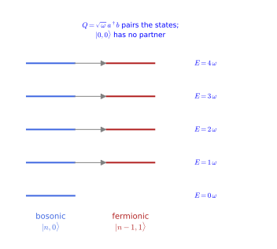
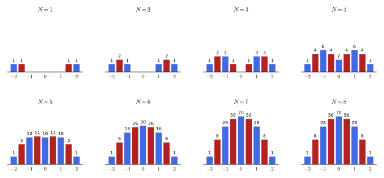
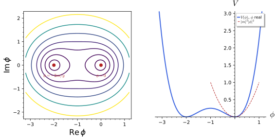
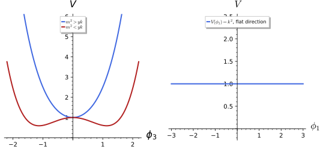
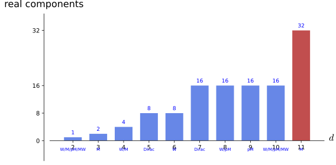
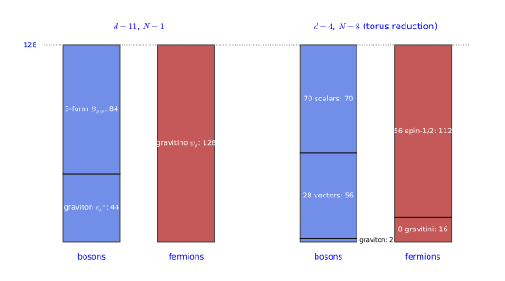

Supersymmetry and supergravity
Every symmetry of the earlier chapters has a commuting parameter: a rotation angle, a boost rapidity, a gauge function. Supersymmetry is the one extension of spacetime symmetry whose parameter is an anticommuting spinor. Its generators turn bosons into fermions and back, and the anticommutator of two of them is a translation, so that a supersymmetric theory always pairs particles of different spin with equal masses. When the spinor parameter is allowed to depend on the spacetime point, the translations it generates become local, that is general coordinate transformations, and gravity is forced into the theory: local supersymmetry is supergravity.
The chapter has two parts. The first, on global supersymmetry, introduces the anticommuting numbers and the two-component spinors in which the subject is most economically written, the supersymmetry algebra and its representations on particle states, the Wess-Zumino model of a scalar and a fermion with its auxiliary field, and the superpotential, the gauge multiplets and the spontaneous breaking of supersymmetry. The second, on supergravity, introduces Majorana spinors, the gravitino as the gauge field of local supersymmetry, the supergravity multiplets, and eleven-dimensional supergravity, the largest theory of its kind, together with the Freund-Rubin solution in which four dimensions of spacetime are curved into anti-de Sitter space and seven into a sphere.
Every statement is followed by three examples of increasing complexity and three exercises of increasing difficulty with hidden solutions. The anticommuting computations, the matrix identities, the superpotential algebra, the counting of states and the Freund-Rubin curvatures are derived in full, and the eleven-dimensional action is displayed and cited rather than derived. The signature is (+, -, -, -) throughout, \eta = \operatorname{diag}(1, -1, -1, -1), with the standard Weyl matrices \gamma^\mu = \begin{pmatrix} 0 & \sigma^\mu \\ \bar\sigma^\mu & 0 \end{pmatrix}, \sigma^\mu = (1, \vec\sigma), \bar\sigma^\mu = (1, -\vec\sigma); the main sources, Martin (1997) and Tanii (1998), use the mostly-plus and our signature respectively, and every formula taken from the former is converted, with the change of sign noted.
Supersymmetry
Supersymmetry is a symmetry whose generators are spinors and whose anticommutator is a translation. This part develops it in three sections. The superalgebra introduces the anticommuting numbers in which fermionic quantities are written, the two-component Weyl spinors, the supercharges, the supersymmetry algebra and its irreducible representations, the supermultiplets, whose massless states form ladders of helicities. The Wess-Zumino model builds the simplest supersymmetric field theory, one complex scalar and one Weyl fermion, checks its invariance with the anticommuting fields handled by the computer, and shows why an auxiliary field is needed for the algebra to close without the equations of motion. The superpotential and gauge multiplets constructs all renormalisable interactions from a single holomorphic function and the gauge couplings, derives the positive scalar potential, and studies the spontaneous breaking of supersymmetry in the O’Raifeartaigh and Fayet-Iliopoulos models.
The superalgebra
Every symmetry met so far has had commuting parameters; supersymmetry is a symmetry whose parameter is an anticommuting spinor, whose generators are fermionic, and whose algebra closes on the translations. This section defines the anticommuting numbers, the two-component spinors in which supersymmetry is most economically written, the supercharges and their algebra, and the supermultiplets, following Martin (1997, secs. 1–2). Martin writes in the mostly-plus metric (-, +, +, +); we use (+, -, -, -) (Coordinates, indices and signature), as Tanii (1998) does, and every formula quoted from Martin that contains \eta^{\mu\nu} or a contraction with it is converted below, with the sign flip noted. The supersymmetric oscillator realises the whole structure on explicit matrices, and the \sigma-matrix identities are established on the explicit Pauli matrices.
Anticommuting numbers
A classical fermion field cannot take values in the ordinary numbers: the Pauli principle requires that two fermionic quantities anticommute, and in particular that each squares to zero. The algebra with this property is the exterior algebra of differential forms, now read as an algebra of numbers rather than of forms, and its generators are called Grassmann variables.
Definition 1 (Grassmann variable) A Grassmann variable is a generator \theta of an algebra in which generators anticommute, \theta_i\theta_j = - \theta_j\theta_i, so that \theta_i^2 = 0; the algebra generated by \theta_1, \dots, \theta_n is the exterior algebra \Lambda(\theta_1, \dots, \theta_n) of Differential forms over the numbers, of dimension 2^n. Products of an even number of generators commute with everything (bosonic), products of an odd number anticommute among themselves (fermionic). Classical fermion fields and supersymmetry parameters are Grassmann-valued.
Veriphy. Pending.
Lean. Pending.
Sage. Pending.
The smallest interesting case has two generators, and it already shows the two features that matter in practice. Every function is a polynomial of bounded degree, and the product of the two generators behaves like an ordinary commuting number that squares to zero.
Example 1 (Two generators) \Lambda(\theta_1, \theta_2) has the basis 1, \theta_1, \theta_2, \theta_1\theta_2; a general element is a + b\theta_1 + c\theta_2 + d\theta_1\theta_2, every function of the \theta is a polynomial of degree at most two, and (\theta_1\theta_2)^2 = 0 (Exercise 1).
Spinors whose components are Grassmann variables are the objects of supersymmetry. Contracting two of them with the antisymmetric symbol produces a product in which two minus signs meet, one from the anticommuting components and one from the antisymmetric symbol, and the result is symmetric.
Example 2 (The spinor product is symmetric) For two-component Grassmann spinors, \xi\chi \equiv \xi^\alpha\chi_\alpha = \xi_2\chi_1 - \xi_1\chi_2 = \chi\xi (Definition 2): the sign from reordering anticommuting components is cancelled by the antisymmetry of the \epsilon symbol (Martin 1997, eq. 2.16), and \xi\xi = 2\xi_2\xi_1 \neq 0 although each component squares to zero (Exercise 1).
Keeping track of these signs by hand is the main source of error in supersymmetric computations. The third example names the tool that removes the problem in this chapter: an exterior algebra whose coefficients may themselves be polynomials in commuting fields.
Example 3 (Grassmann algebra in Sage) Sage’s ExteriorAlgebra implements Definition 1 with coefficients in any ring, including a polynomial ring in the commuting fields: this is how the Wess-Zumino invariance of Section 1.1.2 is checked with every sign handled by the computer (Exercise 1, Exercise 39).
The first exercise is a direct check of the defining relations and of the two spinor products of the examples, run in the exterior algebra on four generators. It also shows that a top-degree monomial annihilates every element of positive degree.
Exercise 1 (Grassmann variables in Sage) Build the exterior algebra on four generators, check \theta^2 = 0 and the anticommutation, and verify that the spinor product \xi\chi is symmetric while \xi\xi = 2\xi_2\xi_1.
E = ExteriorAlgebra(QQ, ["x1", "x2", "c1", "c2"]); x1, x2, c1, c2 = E.gens()
print("[PASS] theta^2 = 0 and theta_1 theta_2 = -theta_2 theta_1:", (x1 * x1).is_zero() and x1 * x2 == -(x2 * x1))
xi = [x1, x2]; chi = [c1, c2]
def up(v): return [v[1], -v[0]]
def dot(a, b): return sum(up(a)[i] * b[i] for i in range(2))
print("xi chi =", dot(xi, chi), " chi xi =", dot(chi, xi))
print("[PASS] xi chi = chi xi, no sign from reordering because of the antisymmetric epsilon (Martin eq. 2.16):", dot(xi, chi) == dot(chi, xi))
print("[PASS] xi xi = 2 xi_2 xi_1, non-zero although each component squares to zero:", dot(xi, xi) == 2 * x2 * x1)
# a function of Grassmann variables is a polynomial of degree at most the number of generators
f = 1 + 3 * x1 + x1 * x2 * c1
print("f = 1 + 3 theta_1 + theta_1 theta_2 chi_1 has degrees", sorted(set(len(k) for k in f.monomial_coefficients())), "and f * x1 * x2 * c1 * c2 =", f * x1 * x2 * c1 * c2)
print("[PASS] the top form theta_1 theta_2 chi_1 chi_2 kills every monomial of positive degree:", f * x1 * x2 * c1 * c2 == x1 * x2 * c1 * c2)Output:
[PASS] theta^2 = 0 and theta_1 theta_2 = -theta_2 theta_1: True
xi chi = -x1*c2 + x2*c1 chi xi = -x1*c2 + x2*c1
[PASS] xi chi = chi xi, no sign from reordering because of the antisymmetric epsilon (Martin eq. 2.16): True
[PASS] xi xi = 2 xi_2 xi_1, non-zero although each component squares to zero: True
f = 1 + 3 theta_1 + theta_1 theta_2 chi_1 has degrees [0, 1, 3] and f * x1 * x2 * c1 * c2 = x1*x2*c1*c2
[PASS] the top form theta_1 theta_2 chi_1 chi_2 kills every monomial of positive degree: TrueFunctions of Grassmann variables are defined by their power series, which stop after finitely many terms. The second exercise computes exponentials and inverses this way and finds which elements can be inverted at all.
Exercise 2 (Exponentials and inverses) In \Lambda(\theta_1, \theta_2) compute e^{a\theta_1\theta_2}, e^{\theta_1}e^{\theta_2} and the inverse of 1 + \theta_1\theta_2. Show that z = a + b\theta_1 + c\theta_2 + d\theta_1\theta_2 is invertible if and only if its number part a is non-zero, and give z^{-1}.
Since (\theta_1\theta_2)^2 = 0, e^{a\theta_1\theta_2} = 1 + a\theta_1\theta_2. Each \theta_i^2 = 0, so e^{\theta_i} = 1 + \theta_i and e^{\theta_1}e^{\theta_2} = 1 + \theta_1 + \theta_2 + \theta_1\theta_2; the exponents anticommute, and indeed e^{\theta_2}e^{\theta_1} = 1 + \theta_1 + \theta_2 - \theta_1\theta_2 \neq e^{\theta_1}e^{\theta_2}. (1 + \theta_1\theta_2)(1 - \theta_1\theta_2) = 1. In general write z = a(1 + n) with n = (b\theta_1 + c\theta_2 + d\theta_1\theta_2)/a, which is nilpotent: n^2 = (bc\theta_1\theta_2 + cb\theta_2\theta_1)/a^2 = 0. So z^{-1} = a^{-1}(1 - n) = a^{-1} - (b\theta_1 + c\theta_2 + d\theta_1\theta_2)/a^2. If a = 0, z is nilpotent (z^2 = 0 by the same computation) and has no inverse. The number part, the body, decides invertibility, and the nilpotent rest, the soul, never matters for it.
Integration over Grassmann variables is defined algebraically, by \int d\theta\,1 = 0 and \int d\theta\,\theta = 1, so that the integral picks the coefficient of the top monomial. The third exercise computes the fermionic Gaussian integral, which underlies the fermionic path integral, and finds a determinant where the bosonic integral has an inverse determinant.
Exercise 3 (The Grassmann Gaussian integral) With the Berezin rules, \int d\bar\theta\,d\theta\,\theta\bar\theta = 1, compute \int d\bar\theta\,d\theta\,e^{-a\bar\theta\theta} and \int\prod_i d\bar\theta_i\,d\theta_i\,e^{-\bar\theta_iA_{ij}\theta_j} for a 2 \times 2 matrix A, in Sage’s exterior algebra.
The exponential series stops, e^{-a\bar\theta\theta} = 1 + a\theta\bar\theta, and the integral is a. For two pairs the quadratic term of the series gives \tfrac12(\bar\theta A\theta)^2, whose top coefficient is A_{11}A_{22} - A_{12}A_{21} = \det A, where a bosonic Gaussian integral would give \pi^2/\det A:
E = ExteriorAlgebra(SR, ["t1", "t2", "tb1", "tb2"]); t1, t2, tb1, tb2 = E.gens()
def expo(x, n=4): # exp of a nilpotent even element: the series stops
return sum((x^k) / factorial(k) for k in range(n + 1))
def berezin(f, order): # coefficient of the ordered top monomial
top = prod(order, E.one())
(key, sgn), = top.monomial_coefficients().items()
return f.monomial_coefficients().get(key, 0) * sgn
a = var("a")
f1 = expo(-a * tb1 * t1)
print("exp(-a thetabar theta) =", f1)
print("[PASS] the series stops: exp(-a thetabar theta) = 1 - a thetabar theta:", f1 == 1 - a * tb1 * t1)
print("[PASS] int dthetabar dtheta exp(-a thetabar theta) = a (top monomial t1 tb1):", bool(berezin(f1, [t1, tb1]) == a))
A = matrix(SR, 2, 2, var("A11 A12 A21 A22"))
th = [t1, t2]; thb = [tb1, tb2]
S = -sum(thb[i] * A[i, j] * th[j] for i in range(2) for j in range(2))
f2 = expo(S)
val = berezin(f2, [t1, tb1, t2, tb2])
print("int exp(-thetabar A theta) =", val.expand())
print("[PASS] the Grassmann Gaussian integral is det A:", bool((val - A.det()).expand() == 0))Output:
exp(-a thetabar theta) = a*t1*tb1 + 1
[PASS] the series stops: exp(-a thetabar theta) = 1 - a thetabar theta: True
[PASS] int dthetabar dtheta exp(-a thetabar theta) = a (top monomial t1 tb1): True
int exp(-thetabar A theta) = -A12*A21 + A11*A22
[PASS] the Grassmann Gaussian integral is det A: TrueTwo-component spinors
The Lorentz group acts on spinors through SL(2, \mathbb{C}), and the two inequivalent two-dimensional representations, related by complex conjugation, are the left- and right-handed Weyl spinors. Supersymmetry is written most economically with these two-component objects rather than with four-component Dirac spinors, and the definition fixes the index conventions used everywhere below.
Definition 2 (Two-component Weyl spinor) A left-handed Weyl spinor is a two-component Grassmann object \xi_\alpha, \alpha = 1, 2, transforming under the Lorentz group by the (\tfrac12, 0) representation; its Hermitian conjugate \xi^\dagger_{\dot\alpha} is right-handed. Indices are raised and lowered with \epsilon^{12} = -\epsilon^{21} = \epsilon_{21} = -\epsilon_{12} = 1, \xi^\alpha = \epsilon^{\alpha\beta}\xi_\beta, and the invariant products are \xi\chi = \xi^\alpha\chi_\alpha, \xi^\dagger\chi^\dagger = \xi^\dagger_{\dot\alpha}\chi^{\dagger\dot\alpha} and \xi^\dagger\bar\sigma^\mu\chi = \xi^\dagger_{\dot\alpha}(\bar\sigma^\mu)^{\dot\alpha\alpha}\chi_\alpha, with \sigma^\mu = (1, \vec\sigma) and \bar\sigma^\mu = (1, -\vec\sigma) (Martin 1997, eqs. 2.7-2.18). A Dirac spinor of Definition 11 of Classical field theory is a pair \Psi_D = (\xi_\alpha, \chi^{\dagger\dot\alpha}) of a left- and a right-handed Weyl spinor.
Veriphy. Pending.
Lean. Pending.
Sage. Pending.
The first example connects the two-component language with the four-component one of the spinor chapter. In the Weyl basis the Dirac matrices are off-diagonal blocks built from \sigma^\mu and \bar\sigma^\mu, and the Dirac Lagrangian splits into two Weyl kinetic terms joined by the mass.
Example 4 (The Dirac spinor in blocks) With the gamma matrices of Example 39 of Classical field theory, \gamma^\mu = \begin{pmatrix} 0 & \sigma^\mu \\ \bar\sigma^\mu & 0 \end{pmatrix} (Proposition 1), the left- and right-handed Weyl spinors of Example 44 of Classical field theory are the upper and lower components, and the Dirac Lagrangian \bar\Psi_D(i\gamma^\mu\partial_\mu - M)\Psi_D becomes i\xi^\dagger\bar\sigma^\mu\partial_\mu\xi + i\chi^\dagger\bar\sigma^\mu\partial_\mu\chi - M(\xi\chi + \xi^\dagger\chi^\dagger) (Martin 1997, eq. 2.28, whose form does not depend on the signature).
The Clifford relations of the Dirac matrices become identities among the two-component matrices. These are used in every supersymmetric computation, and their sign is the one place where the choice of signature enters the two-component formalism.
Example 5 (The \sigma-matrix identities) \sigma^\mu\bar\sigma^\nu + \sigma^\nu\bar\sigma^\mu = 2\eta^{\mu\nu}, \operatorname{tr}(\sigma^\mu\bar\sigma^\nu) = 2\eta^{\mu\nu} and \sigma^\mu_{\alpha\dot\alpha}\bar\sigma_\mu^{\dot\beta\beta} = 2\delta_\alpha^\beta\delta_{\dot\alpha}^{\dot\beta} in our metric (+, -, -, -) are the two-component form of the Clifford relations Equation 3 of Classical field theory; Martin (1997, eqs. 2.21-2.25) writes them with -2 in place of 2, the sign of \eta in his signature. They hold on the explicit matrices (Proposition 1, Exercise 8).
Veriphy. Pending.
Lean. the identities are proved on the explicit matrices in Proposition 1 (KaluzaKlein.Supersymmetry.sigma_clifford, sigma_trace, sigma_fierz).
Sage. Pending.
The third example shows that nothing is lost by working with left-handed spinors only. A right-handed field is the conjugate of a left-handed one, so every fermion of the Standard Model can be listed as a left-handed Weyl spinor, which is how supersymmetric models are written.
Example 6 (The Standard Model fermions) Every spin-\tfrac12 field can be written as a collection of left-handed Weyl spinors with \mathcal{L} = i\psi^{\dagger i}\bar\sigma^\mu\nabla_\mu\psi_i; the quarks and leptons of a generation are the fifteen Weyl spinors Q, \bar u, \bar d, L, \bar e with their colours and weak isospin (Martin 1997, eqs. 2.38-2.44), and the Weyl condition of Example 15 of Quantum field theory is what makes the theory chiral.
The index gymnastics of the definition is the first thing to master. The first exercise checks that raising and lowering are inverse operations and finds the sign that appears when the position of a contracted index is swapped.
Exercise 4 (Raising and lowering) Show that \epsilon_{\alpha\beta}\epsilon^{\beta\gamma} = \delta_\alpha^\gamma, so that \xi_\alpha = \epsilon_{\alpha\beta}\xi^\beta undoes the raising, and that \xi^\alpha\chi_\alpha = -\xi_\alpha\chi^\alpha for commuting components. What happens for anticommuting ones?
As matrices, \epsilon^{\alpha\beta} = \begin{pmatrix} 0 & 1 \\ -1 & 0 \end{pmatrix} and \epsilon_{\alpha\beta} = \begin{pmatrix} 0 & -1 \\ 1 & 0 \end{pmatrix}, whose product is the identity: \epsilon_{12}\epsilon^{21} = (-1)(-1) = 1 and \epsilon_{21}\epsilon^{12} = 1, the off-diagonal entries vanishing. Then \epsilon_{\alpha\beta}\xi^\beta = \epsilon_{\alpha\beta}\epsilon^{\beta\gamma}\xi_\gamma = \xi_\alpha. Next \xi^\alpha\chi_\alpha = \epsilon^{\alpha\beta}\xi_\beta\chi_\alpha and \xi_\alpha\chi^\alpha = \xi_\alpha\epsilon^{\alpha\beta}\chi_\beta = \epsilon^{\alpha\beta}\xi_\alpha\chi_\beta = \epsilon^{\beta\alpha}\xi_\beta\chi_\alpha = -\epsilon^{\alpha\beta}\xi_\beta\chi_\alpha, so the two differ by a sign whatever the components; the statistics enters only when the order of \xi and \chi is exchanged, and then \xi^\alpha\chi_\alpha = -\chi_\alpha\xi^\alpha = \chi^\alpha\xi_\alpha for anticommuting components, which is the symmetry of Example 2.
The barred matrices are not an independent choice: they follow from the unbarred ones by raising both indices. The second exercise checks this relation, and the Hermiticity of \sigma^\mu, on the explicit matrices.
Exercise 5 (\bar\sigma from \sigma) Show that every \sigma^\mu is Hermitian and that (\bar\sigma^\mu)^{\dot\alpha\alpha} = \epsilon^{\dot\alpha\dot\beta}\epsilon^{\alpha\beta} \sigma^\mu_{\beta\dot\beta}.
The identity and the Pauli matrices are Hermitian. In matrix form the relation reads \bar\sigma^\mu = \epsilon(\sigma^\mu)^T \epsilon^T; for \mu = 0 this is \epsilon\epsilon^T = 1, and for the spatial matrices it is the familiar \sigma_2\sigma_i^T\sigma_2 = -\sigma_i, since \epsilon = i\sigma_2:
pauli = [matrix(QQbar, [[0, 1], [1, 0]]), matrix(QQbar, [[0, -I], [I, 0]]), matrix(QQbar, [[1, 0], [0, -1]])]
sig = [identity_matrix(QQbar, 2)] + pauli; sigb = [identity_matrix(QQbar, 2)] + [-p for p in pauli]
eps_up = matrix(QQbar, [[0, 1], [-1, 0]]) # eps^{12} = 1
print("[PASS] sigma^mu is Hermitian for every mu:", all(s.conjugate_transpose() == s for s in sig))
raised = [matrix(QQbar, 2, 2, lambda ad, a: sum(eps_up[ad, bd] * eps_up[a, b] * sig[m][b, bd] for b in range(2) for bd in range(2))) for m in range(4)]
print("[PASS] eps eps sigma^mu = sigmabar^mu, i.e. eps sigma^T eps^T = sigmabar:", all(raised[m] == sigb[m] for m in range(4)))
print("[PASS] for the spatial matrices this is sigma_2 sigma_i^T sigma_2 = -sigma_i:", all(pauli[1] * p.transpose() * pauli[1] == -p for p in pauli))Output:
[PASS] sigma^mu is Hermitian for every mu: True
[PASS] eps eps sigma^mu = sigmabar^mu, i.e. eps sigma^T eps^T = sigmabar: True
[PASS] for the spatial matrices this is sigma_2 sigma_i^T sigma_2 = -sigma_i: TrueThe name “Lorentz invariant product” has to be earned. The third exercise shows that \xi\chi is invariant exactly under matrices of unit determinant, and that a diagonal matrix of SL(2, \mathbb{C}) acts on vectors, written as 2 \times 2 Hermitian matrices, as a boost.
Exercise 6 (Invariance under SL(2, \mathbb{C})) Show that M^T\epsilon M = (\det M)\epsilon for every 2 \times 2 matrix M, so that \xi\chi is invariant under \xi \to M\xi, \chi \to M\chi when \det M = 1. For M = e^{-r\sigma_3/2} and X = x^\mu\sigma_\mu = x^0 - \vec x\cdot\vec\sigma, compute MXM^\dagger and identify the Lorentz transformation of x^\mu.
The product is \xi\chi = -\xi^T\epsilon\chi with \epsilon = \epsilon^{\alpha\beta}, and it transforms into -\xi^TM^T\epsilon M\chi. A direct computation gives M^T\epsilon M = (\det M)\epsilon; this is the statement that \epsilon is the volume form of \mathbb{C}^2. \det X = x_\mu x^\mu is preserved by X \to MXM^\dagger when |\det M| = 1, and for the diagonal boost matrix the result is t' = \cosh r\,t + \sinh r\,z, z' = \sinh r\,t + \cosh r\,z: a boost of rapidity r along z:
a, b, c, d = var("a b c d")
M = matrix(SR, [[a, b], [c, d]]); eps = matrix(SR, [[0, 1], [-1, 0]])
print("[PASS] M^T eps M = det(M) eps for a general 2x2 matrix, so the product is invariant iff det M = 1:",
bool(((M.transpose() * eps * M) - M.det() * eps).expand() == 0))
r = var("r", domain="real")
pauli = [matrix(SR, [[0, 1], [1, 0]]), matrix(SR, [[0, -I], [I, 0]]), matrix(SR, [[1, 0], [0, -1]])]
sig = [identity_matrix(SR, 2)] + pauli
Mb = matrix(SR, [[exp(-r / 2), 0], [0, exp(r / 2)]]) # exp(-r sigma_3 / 2)
print("[PASS] the boost matrix has unit determinant:", bool(Mb.det() == 1))
# x^mu sigma_mu with sigma_mu = (1, -sigma_i): X = x^0 - x.sigma; X -> M X M^dag
x0, x1, x2, x3 = var("x0 x1 x2 x3", domain="real")
X = x0 * sig[0] - x1 * pauli[0] - x2 * pauli[1] - x3 * pauli[2]
Xp = (Mb * X * Mb.conjugate_transpose()).simplify_full()
print("det X =", X.det().expand(), "(the Minkowski norm)")
print("[PASS] det X = x0^2 - x1^2 - x2^2 - x3^2 is preserved:", bool((Xp.det() - X.det()).simplify_full() == 0))
t_new = ((Xp[0, 0] + Xp[1, 1]) / 2).simplify_full(); z_new = (-(Xp[0, 0] - Xp[1, 1]) / 2).simplify_full()
print("t' =", t_new, " z' =", z_new)
ch, sh = (exp(r) + exp(-r)) / 2, (exp(r) - exp(-r)) / 2
print("[PASS] the transformation is the boost t' = cosh(r) t + sinh(r) z, z' = sinh(r) t + cosh(r) z:",
bool((t_new - ch * x0 - sh * x3).simplify_full() == 0) and bool((z_new - sh * x0 - ch * x3).simplify_full() == 0))Output:
[PASS] M^T eps M = det(M) eps for a general 2x2 matrix, so the product is invariant iff det M = 1: True
[PASS] the boost matrix has unit determinant: True
det X = x0^2 - x1^2 - x2^2 - x3^2 (the Minkowski norm)
[PASS] det X = x0^2 - x1^2 - x2^2 - x3^2 is preserved: True
t' = 1/2*(x0*(e^(2*r) + 1) + x3*(e^(2*r) - 1))*e^(-r) z' = 1/2*(x3*(e^(2*r) + 1) + x0*(e^(2*r) - 1))*e^(-r)
[PASS] the transformation is the boost t' = cosh(r) t + sinh(r) z, z' = sinh(r) t + cosh(r) z: TrueProducts of spinors with several indices decompose into pieces that do not mix under SL(2, \mathbb{C}), and the antisymmetric symbol is the tool that separates them. The fourth exercise decomposes the most important case, two undotted and two dotted indices, which is how a two-index Lorentz tensor looks in spinor language.
Exercise 7 (A tensor with four spinor indices) A tensor A_{\alpha\beta\dot\alpha\dot\beta} has 16 components. Show that A_{\alpha\beta\dot\alpha\dot\beta} = \epsilon_{\alpha\beta}\epsilon_{\dot\alpha\dot\beta}A + \epsilon_{\alpha\beta}A_{(\dot\alpha\dot\beta)} + \epsilon_{\dot\alpha\dot\beta}A_{(\alpha\beta)} + A_{(\alpha\beta)(\dot\alpha\dot\beta)} with tensors symmetric in the bracketed indices, express the four pieces through A_{\alpha\beta\dot\alpha\dot\beta}, count their components, and say which Lorentz tensors they describe (Nath 2017, Problem 8.4).
For two indices, X_{\alpha\beta} - X_{\beta\alpha} is antisymmetric and so a multiple c\,\epsilon_{\alpha\beta} of the only antisymmetric 2 \times 2 symbol; contracting with \epsilon^{\alpha\beta} and using \epsilon^{\alpha\beta}\epsilon_{\alpha\beta} = -2 (Definition 2) gives X_{\alpha\beta} = X_{(\alpha\beta)} - \tfrac12\epsilon_{\alpha\beta}\epsilon^{\gamma\delta}X_{\gamma\delta} with X_{(\alpha\beta)} = \tfrac12(X_{\alpha\beta} + X_{\beta\alpha}). Applying this to both index pairs, A = \tfrac14\epsilon^{\gamma\delta}\epsilon^{\dot\gamma\dot\delta}A_{\gamma\delta\dot\gamma\dot\delta}, \quad A_{(\dot\alpha\dot\beta)} = -\tfrac12\epsilon^{\gamma\delta}A_{\gamma\delta(\dot\alpha\dot\beta)}, \quad A_{(\alpha\beta)} = -\tfrac12\epsilon^{\dot\gamma\dot\delta}A_{(\alpha\beta)\dot\gamma\dot\delta}, and A_{(\alpha\beta)(\dot\alpha\dot\beta)} is the part symmetric in both pairs. A symmetric pair of two-valued indices takes 3 values, so the count is 1 + 3 + 3 + 9 = 16. Pairing \alpha\dot\alpha and \beta\dot\beta into vector indices with \sigma^\mu_{\alpha\dot\alpha} (Example 8) turns A into a two-index tensor T^{\mu\nu}: the singlet is its trace, the two three-component pieces are the self-dual and anti-self-dual parts of its antisymmetric part (Exercise 69), and the nine-component piece is its symmetric traceless part.
Veriphy. Pending.
Lean. Pending.
Sage. Pending.
The identities of Example 5 are used so often that they are worth stating once on the explicit matrices, together with the block form of the Dirac matrices. The proposition collects them; each of the four statements is a finite check over all index values.
Proposition 1 (Two-component spinor identities) On the explicit matrices \sigma^\mu = (1, \vec\sigma), \bar\sigma^\mu = (1, -\vec\sigma), with \eta = \operatorname{diag}(1, -1, -1, -1): \sigma^\mu\bar\sigma^\nu + \sigma^\nu\bar\sigma^\mu = 2\eta^{\mu\nu}, \operatorname{tr}(\sigma^\mu\bar\sigma^\nu) = 2\eta^{\mu\nu}, \sum_\mu\eta_{\mu\mu}\sigma^\mu_{\alpha\dot\alpha}\bar\sigma^{\mu\,\dot\beta\beta} = 2\delta_\alpha^\beta\delta_{\dot\alpha}^{\dot\beta}, and the Dirac matrices of Example 39 of Classical field theory are \gamma^\mu = \begin{pmatrix} 0 & \sigma^\mu \\ \bar\sigma^\mu & 0 \end{pmatrix}.
Veriphy. Pending.
Lean. KaluzaKlein.Supersymmetry.sigma_clifford, KaluzaKlein.Supersymmetry.sigma_trace, KaluzaKlein.Supersymmetry.sigma_fierz and KaluzaKlein.Supersymmetry.gamma_block, proved by evaluating all index values.
/-- `σ^μ σ̄^ν + σ^ν σ̄^μ = 2 η^{μν}` (Martin eq. (2.24) reads `-2 η^{μν}` in the mostly-plus metric). -/
theorem sigma_clifford (μ ν : Fin 4) :
sigma μ * sigmaBar ν + sigma ν * sigmaBar μ = (2 * eta μ ν) • (1 : Matrix (Fin 2) (Fin 2) ℂ)KaluzaKlein.Supersymmetry.sigma_clifford in KaluzaKlein/Foundations/Supersymmetry.lean, namespace KaluzaKlein.Supersymmetry
Sage. Pending.
The first example evaluates the anticommutation identity on two pairs of indices, which is all there is to it. The diagonal entries reproduce the signature, and distinct spatial indices anticommute as Pauli matrices do.
Example 7 (Evaluating the identities) For \mu = \nu = 0, \sigma^0\bar\sigma^0 + \sigma^0\bar\sigma^0 = 2 = 2\eta^{00}; for \mu = \nu = 1, 2\sigma_1(-\sigma_1) = -2 = 2\eta^{11}; for \mu = 1, \nu = 2, -\sigma_1\sigma_2 - \sigma_2\sigma_1 = 0. The trace identity follows by taking half the trace of the first one, since \operatorname{tr}(\sigma^\mu\bar\sigma^\nu) = \operatorname{tr}(\sigma^\nu\bar\sigma^\mu).
The second example uses the trace identity as an orthogonality relation. The four matrices \sigma^\mu form a basis of the 2 \times 2 Hermitian matrices, and a four-vector can be stored as such a matrix and read back with a trace.
Example 8 (Four-vectors as Hermitian matrices) Every Hermitian 2 \times 2 matrix is X = p_\mu\sigma^\mu for a unique real p_\mu, recovered as p^\nu = \tfrac12\operatorname{tr}(X\bar\sigma^\nu); for instance p_\mu\sigma^\mu = \begin{pmatrix} p_0 + p_3 & p_1 - ip_2 \\ p_1 + ip_2 & p_0 - p_3 \end{pmatrix}, and its determinant p_0^2 - p_1^2 - p_2^2 - p_3^2 = p_\mu p^\mu is the Minkowski norm (Exercise 9).
The third example is the two-component form of (\gamma^\mu p_\mu)^2 = p^2, which is what makes a massive Weyl spinor obey the Klein-Gordon equation. It is the identity behind the mass degeneracy of Example 60.
Example 9 (The mass shell) Contracting the first identity with p_\mu p_\nu gives (p\cdot\sigma)(p\cdot\bar\sigma) = p^2: acting with i\bar\sigma^\mu\partial_\mu and then i\sigma^\nu\partial_\nu on a spinor gives -\Box, so the Weyl equations with a mass, i\bar\sigma^\mu\partial_\mu\xi = M\chi^\dagger and i\sigma^\mu\partial_\mu\chi^\dagger = M\xi, imply (\Box + M^2)\xi = 0.
The first exercise checks every identity of the proposition on the explicit matrices, including the completeness relation. It is a short computation, and it fixes the conventions once and for all.
Exercise 8 (The \sigma-matrix identities) Verify the identities of Proposition 1 on the explicit matrices, and that the block matrices \begin{pmatrix} 0 & \sigma^\mu \\ \bar\sigma^\mu & 0 \end{pmatrix} satisfy the Clifford relations with \eta = \operatorname{diag}(1, -1, -1, -1).
In Sage:
pauli = [matrix(QQbar, [[0, 1], [1, 0]]), matrix(QQbar, [[0, -I], [I, 0]]), matrix(QQbar, [[1, 0], [0, -1]])]
sig = [identity_matrix(QQbar, 2)] + pauli; sigb = [identity_matrix(QQbar, 2)] + [-p for p in pauli]
eta = diagonal_matrix(QQbar, [1, -1, -1, -1]); one = identity_matrix(QQbar, 2)
print("[PASS] sigma^mu sigmabar^nu + sigma^nu sigmabar^mu = 2 eta^{mu nu} (Martin eq. 2.24 with -2 in his metric):",
all(sig[m] * sigb[n] + sig[n] * sigb[m] == 2 * eta[m, n] * one for m in range(4) for n in range(4)))
print("[PASS] sigmabar^mu sigma^nu + sigmabar^nu sigma^mu = 2 eta^{mu nu} (eq. 2.25):",
all(sigb[m] * sig[n] + sigb[n] * sig[m] == 2 * eta[m, n] * one for m in range(4) for n in range(4)))
print("[PASS] tr(sigma^mu sigmabar^nu) = 2 eta^{mu nu}:", all((sig[m] * sigb[n]).trace() == 2 * eta[m, n] for m in range(4) for n in range(4)))
fierz = all(sum(eta[m, m] * sig[m][a, b] * sigb[m][c, d] for m in range(4)) == 2 * (1 if a == d else 0) * (1 if b == c else 0)
for a in range(2) for b in range(2) for c in range(2) for d in range(2))
print("[PASS] sigma^mu_{a bdot} sigmabar_mu^{cdot d} = 2 delta_a^d delta_bdot^cdot (eq. 2.21 with -2 in his metric):", fierz)
# the Dirac matrices of the spinor chapter in block form: gamma^mu = [[0, sigma^mu], [sigmabar^mu, 0]]
gam = [block_matrix([[zero_matrix(QQbar, 2), sig[m]], [sigb[m], zero_matrix(QQbar, 2)]]) for m in range(4)]
print("[PASS] the block matrices satisfy the Clifford relations {gamma^mu, gamma^nu} = 2 eta^{mu nu} with eta = diag(1, -1, -1, -1):",
all(gam[m] * gam[n] + gam[n] * gam[m] == 2 * eta[m, n] * identity_matrix(QQbar, 4) for m in range(4) for n in range(4)))Output:
[PASS] sigma^mu sigmabar^nu + sigma^nu sigmabar^mu = 2 eta^{mu nu} (Martin eq. 2.24 with -2 in his metric): True
[PASS] sigmabar^mu sigma^nu + sigmabar^nu sigma^mu = 2 eta^{mu nu} (eq. 2.25): True
[PASS] tr(sigma^mu sigmabar^nu) = 2 eta^{mu nu}: True
[PASS] sigma^mu_{a bdot} sigmabar_mu^{cdot d} = 2 delta_a^d delta_bdot^cdot (eq. 2.21 with -2 in his metric): True
[PASS] the block matrices satisfy the Clifford relations {gamma^mu, gamma^nu} = 2 eta^{mu nu} with eta = diag(1, -1, -1, -1): TrueVeriphy. Pending.
Lean. The completeness relation is KaluzaKlein.Supersymmetry.sigma_fierz.
/-- `(σ^μ)_{α α̇} (σ̄_μ)^{β̇ β} = 2 δ_α^β δ_α̇^β̇`, the index `μ` lowered with `η` (Martin eq. (2.21) reads `-2` in
the mostly-plus metric). -/
theorem sigma_fierz (a b c d : Fin 2) :
(∑ μ : Fin 4, eta μ μ * (sigma μ a b * sigmaBar μ c d)) =
2 * (if a = d then 1 else 0) * (if b = c then 1 else 0)KaluzaKlein.Supersymmetry.sigma_fierz in KaluzaKlein/Foundations/Supersymmetry.lean, namespace KaluzaKlein.Supersymmetry
Sage. Pending.
The second exercise turns the examples into a computation with a general momentum. It also shows what is special about a light-like momentum, which will decide the size of the massless supermultiplets.
Exercise 9 (p\cdot\sigma and the Minkowski norm) For a general p_\mu compute \det(p\cdot\sigma), (p\cdot\sigma)(p\cdot\bar\sigma) and \operatorname{tr}((p\cdot\sigma)\bar\sigma^\nu). For the null momentum p^\mu = (E, 0, 0, E) show that p\cdot\sigma has rank one.
\det(p\cdot\sigma) = p_\mu p^\mu, (p\cdot\sigma)(p\cdot\bar\sigma) = p^2\cdot1 and \operatorname{tr}((p\cdot\sigma)\bar\sigma^\nu) = 2p^\nu. For p^\mu = (E, 0, 0, E) the lower components are p_\mu = (E, 0, 0, -E) and p\cdot\sigma = \operatorname{diag}(0, 2E): a null vector gives a singular matrix, because its determinant is its norm.
p0, p1, p2, p3 = var("p0 p1 p2 p3", domain="real")
pauli = [matrix(SR, [[0, 1], [1, 0]]), matrix(SR, [[0, -I], [I, 0]]), matrix(SR, [[1, 0], [0, -1]])]
sig = [identity_matrix(SR, 2)] + pauli; sigb = [identity_matrix(SR, 2)] + [-q for q in pauli]
eta = diagonal_matrix([1, -1, -1, -1]); p = [p0, p1, p2, p3] # lower-index components p_mu
psq = sum(eta[m, m] * p[m]^2 for m in range(4)) # p_mu p^mu
ps = sum(p[m] * sig[m] for m in range(4)); psb = sum(p[m] * sigb[m] for m in range(4))
print("p.sigma ="); print(ps)
print("[PASS] det(p.sigma) = det(p.sigmabar) = p_mu p^mu:", bool((ps.det() - psq).expand() == 0) and bool((psb.det() - psq).expand() == 0))
print("[PASS] (p.sigma)(p.sigmabar) = (p.sigmabar)(p.sigma) = p^2 times the identity:",
((ps * psb).expand() - psq * identity_matrix(2)).is_zero() and ((psb * ps).expand() - psq * identity_matrix(2)).is_zero())
# recover p_mu from X = p.sigma: tr(X sigmabar^nu) = 2 p_mu eta^{mu nu} = 2 p^nu
print("[PASS] tr((p.sigma) sigmabar^nu) = 2 p^nu = 2 eta^{nu nu} p_nu for every nu:",
all(bool(((ps * sigb[n]).trace() - 2 * eta[n, n] * p[n]).expand() == 0) for n in range(4)))
# a light-like momentum: p.sigma has rank one
E = var("E", domain="positive")
pl = [E, 0, 0, -E] # p^mu = (E, 0, 0, E), p_3 = -E
X = sum(pl[m] * sig[m] for m in range(4))
print("for p^mu = (E, 0, 0, E): p.sigma =", X.list(), " rank", X.rank())
print("[PASS] a null momentum gives a rank-one p.sigma = diag(0, 2E):", X == diagonal_matrix([0, 2 * E]) and X.rank() == 1)Output:
p.sigma =
[ p0 + p3 p1 - I*p2]
[p1 + I*p2 p0 - p3]
[PASS] det(p.sigma) = det(p.sigmabar) = p_mu p^mu: True
[PASS] (p.sigma)(p.sigmabar) = (p.sigmabar)(p.sigma) = p^2 times the identity: True
[PASS] tr((p.sigma) sigmabar^nu) = 2 p^nu = 2 eta^{nu nu} p_nu for every nu: True
for p^mu = (E, 0, 0, E): p.sigma = [0, 0, 0, 2*E] rank 1
[PASS] a null momentum gives a rank-one p.sigma = diag(0, 2E): TrueThe Lorentz generators on Weyl spinors are commutators of the \sigma-matrices. The third exercise checks that they satisfy the Lorentz algebra with our metric, and shows that the two chiralities differ only in the sign of the boosts.
Exercise 10 (The Lorentz generators on Weyl spinors) With S^{\mu\nu}_L = \tfrac{i}{4}(\sigma^\mu\bar\sigma^\nu - \sigma^\nu\bar\sigma^\mu) and S^{\mu\nu}_R = \tfrac{i}{4}(\bar\sigma^\mu\sigma^\nu - \bar\sigma^\nu\sigma^\mu), verify [S^{\mu\nu}, S^{\rho\sigma}] = i(\eta^{\nu\rho}S^{\mu\sigma} - \eta^{\mu\rho}S^{\nu\sigma} - \eta^{\nu\sigma}S^{\mu\rho} + \eta^{\mu\sigma}S^{\nu\rho}) for both, and compare their rotations and boosts.
Both satisfy the algebra. The rotations agree, S^{ij} = \tfrac12\epsilon_{ijk}\sigma_k, Hermitian, while the boosts are S^{0i}_L = -\tfrac{i}{2}\sigma_i = -S^{0i}_R, anti-Hermitian: the two chiralities are the two inequivalent representations (\tfrac12, 0) and (0, \tfrac12), exchanged by parity, which flips the boosts:
pauli = [matrix(QQbar, [[0, 1], [1, 0]]), matrix(QQbar, [[0, -I], [I, 0]]), matrix(QQbar, [[1, 0], [0, -1]])]
sig = [identity_matrix(QQbar, 2)] + pauli; sigb = [identity_matrix(QQbar, 2)] + [-p for p in pauli]
eta = [1, -1, -1, -1]
def e(m, n): return eta[m] if m == n else 0
SL = [[I / 4 * (sig[m] * sigb[n] - sig[n] * sigb[m]) for n in range(4)] for m in range(4)]
SR_ = [[I / 4 * (sigb[m] * sig[n] - sigb[n] * sig[m]) for n in range(4)] for m in range(4)]
def algebra(S):
return all(S[m][n] * S[r][s] - S[r][s] * S[m][n] == I * (e(n, r) * S[m][s] - e(m, r) * S[n][s] - e(n, s) * S[m][r] + e(m, s) * S[n][r])
for m in range(4) for n in range(4) for r in range(4) for s in range(4))
print("[PASS] the left-handed generators satisfy the Lorentz algebra with eta = diag(1, -1, -1, -1):", algebra(SL))
print("[PASS] so do the right-handed generators built from sigmabar sigma:", algebra(SR_))
print("[PASS] rotations S^{12} = sigma_3/2 (Hermitian), boosts S^{03} = -i sigma_3/2 (anti-Hermitian):",
SL[1][2] == pauli[2] / 2 and SL[0][3] == -I * pauli[2] / 2)
print("[PASS] the boosts have opposite signs on the two chiralities, the rotations agree:",
all(SR_[0][k] == -SL[0][k] for k in (1, 2, 3)) and all(SR_[i][j] == SL[i][j] for i in (1, 2, 3) for j in (1, 2, 3)))Output:
[PASS] the left-handed generators satisfy the Lorentz algebra with eta = diag(1, -1, -1, -1): True
[PASS] so do the right-handed generators built from sigmabar sigma: True
[PASS] rotations S^{12} = sigma_3/2 (Hermitian), boosts S^{03} = -i sigma_3/2 (anti-Hermitian): True
[PASS] the boosts have opposite signs on the two chiralities, the rotations agree: TrueThe identities of the proposition concern products of two matrices. Products of three and four occur in every superspace computation, and they contain the Levi-Civita symbol; the fourth exercise derives them in our signature, where the signs differ from the mostly-plus forms in the literature.
Exercise 11 (Products of three and four \sigma-matrices) Show that \sigma^\mu\bar\sigma^\nu\sigma^\lambda = \eta^{\mu\nu}\sigma^\lambda - \eta^{\mu\lambda}\sigma^\nu + \eta^{\nu\lambda}\sigma^\mu + c\,i\epsilon^{\mu\nu\lambda\rho}\sigma_\rho with \epsilon_{0123} = 1, and find c. Deduce \operatorname{tr}(\sigma^\mu\bar\sigma^\nu\sigma^\lambda\bar\sigma^\rho) and the antisymmetric combination \operatorname{tr}(\sigma^\mu\bar\sigma^\nu\sigma^\lambda\bar\sigma^\rho - \sigma^\lambda\bar\sigma^\nu\sigma^\mu\bar\sigma^\rho) of Nath (2017, Problem 8.2), whose signs refer to the mostly-plus metric. Check all index values with Sage.
The four \sigma^\mu span the 2 \times 2 matrices, so the product is a combination of them. When two of the indices coincide the anticommutator \sigma^\mu\bar\sigma^\nu + \sigma^\nu\bar\sigma^\mu = 2\eta^{\mu\nu} of Proposition 1 gives the three \eta terms; when all three differ only the \epsilon term is left. For (\mu, \nu, \lambda) = (1, 2, 3) the left side is \sigma_1(-\sigma_2)\sigma_3 = -i, while \epsilon^{1230} = -\epsilon^{0123} = 1 makes the right side c\,i\sigma_0 = c\,i; hence c = -1: \sigma^\mu\bar\sigma^\nu\sigma^\lambda = \eta^{\mu\nu}\sigma^\lambda - \eta^{\mu\lambda}\sigma^\nu + \eta^{\nu\lambda}\sigma^\mu - i\epsilon^{\mu\nu\lambda\rho}\sigma_\rho . Multiplying by \bar\sigma^\rho and taking the trace with \operatorname{tr}(\sigma^\lambda\bar\sigma^\rho) = 2\eta^{\lambda\rho} gives \operatorname{tr}(\sigma^\mu\bar\sigma^\nu\sigma^\lambda\bar\sigma^\rho) = 2(\eta^{\mu\nu}\eta^{\lambda\rho} - \eta^{\mu\lambda}\eta^{\nu\rho} + \eta^{\mu\rho}\eta^{\nu\lambda}) - 2i\epsilon^{\mu\nu\lambda\rho}. Exchanging \mu and \lambda leaves the \eta terms and reverses the \epsilon term, so the antisymmetric combination is -4i\epsilon^{\mu\nu\lambda\rho}; in the mostly-plus metric with Nath’s orientation the same combination reads +4i\epsilon^{\mu\nu\lambda\rho}. The barred product \bar\sigma^\mu\sigma^\nu\bar\sigma^\lambda obeys the same identity with +i\epsilon.
K.<I> = QuadraticField(-1)
p = [matrix(K, [[0, 1], [1, 0]]), matrix(K, [[0, -I], [I, 0]]), matrix(K, [[1, 0], [0, -1]])]
one = identity_matrix(K, 2)
s = [one] + p; sb = [one] + [-x for x in p]
eta = diagonal_matrix(K, [1, -1, -1, -1])
def eps_dn(*ix):
return Permutation([i + 1 for i in ix]).signature() if len(set(ix)) == 4 else 0
def eps_up(*ix):
return -eps_dn(*ix) # raising four indices multiplies by det(eta) = -1
s_dn = [sum(eta[r, k] * s[k] for k in range(4)) for r in range(4)] # sigma_rho
R4 = range(4)
def rhs3(m, n, l, c):
return eta[m, n] * s[l] - eta[m, l] * s[n] + eta[n, l] * s[m] + c * I * sum(eps_up(m, n, l, r) * s_dn[r] for r in R4)
c3 = [c for c in (1, -1) if all(s[m] * sb[n] * s[l] == rhs3(m, n, l, c) for m in R4 for n in R4 for l in R4)]
print("sigma^mu sigmabar^nu sigma^lambda = eta^{mu nu} sigma^lambda - eta^{mu lambda} sigma^nu + eta^{nu lambda} sigma^mu + c i eps^{mu nu lambda rho} sigma_rho with c =", c3)
print("[PASS] the triple-product identity holds for all 64 index triples with a single sign c:", len(c3) == 1)
def rhs3b(m, n, l, c):
return eta[m, n] * sb[l] - eta[m, l] * sb[n] + eta[n, l] * sb[m] + c * I * sum(eps_up(m, n, l, r) * sum(eta[r, k] * sb[k] for k in R4) for r in R4)
c3b = [c for c in (1, -1) if all(sb[m] * s[n] * sb[l] == rhs3b(m, n, l, c) for m in R4 for n in R4 for l in R4)]
print("[PASS] sigmabar sigma sigmabar obeys the same identity with the opposite sign of the epsilon term:", c3b == [-c3[0]])
def tr4(m, n, l, r):
return (s[m] * sb[n] * s[l] * sb[r]).trace()
c4 = [c for c in (1, -1) if all(tr4(m, n, l, r) == 2 * (eta[m, n] * eta[l, r] - eta[m, l] * eta[n, r] + eta[m, r] * eta[n, l]) + c * 2 * I * eps_up(m, n, l, r)
for m in R4 for n in R4 for l in R4 for r in R4)]
print("tr(sigma^mu sigmabar^nu sigma^lambda sigmabar^rho) = 2(eta eta - eta eta + eta eta) + c' 2i eps^{mu nu lambda rho} with c' =", c4)
print("[PASS] Nath's Problem 8.2 trace: tr[s^m sb^n s^l sb^r - s^l sb^n s^m sb^r] = c' 4i eps^{mnlr} for all 256 values:",
all(tr4(m, n, l, r) - tr4(l, n, m, r) == c4[0] * 4 * I * eps_up(m, n, l, r) for m in R4 for n in R4 for l in R4 for r in R4))Output:
sigma^mu sigmabar^nu sigma^lambda = eta^{mu nu} sigma^lambda - eta^{mu lambda} sigma^nu + eta^{nu lambda} sigma^mu + c i eps^{mu nu lambda rho} sigma_rho with c = [-1]
[PASS] the triple-product identity holds for all 64 index triples with a single sign c: True
[PASS] sigmabar sigma sigmabar obeys the same identity with the opposite sign of the epsilon term: True
tr(sigma^mu sigmabar^nu sigma^lambda sigmabar^rho) = 2(eta eta - eta eta + eta eta) + c' 2i eps^{mu nu lambda rho} with c' = [-1]
[PASS] Nath's Problem 8.2 trace: tr[s^m sb^n s^l sb^r - s^l sb^n s^m sb^r] = c' 4i eps^{mnlr} for all 256 values: TrueVeriphy. Pending.
Lean. Pending.
Sage. Pending.

figures/susy_oscillator.sage.
Supercharges
A symmetry generator that changes the spin of a state by one half must itself carry a spinor index, and since it changes the statistics it must be fermionic. The supercharges are such generators; the definition also introduces the infinitesimal transformation they generate, with a Grassmann spinor as parameter.
Definition 3 (Supercharge) A supercharge is a conserved fermionic generator Q_\alpha carrying a spinor index, together with its conjugate Q^\dagger_{\dot\alpha}, that maps bosons to fermions and fermions to bosons: Q|\text{boson}\rangle = | \text{fermion}\rangle and conversely (Martin 1997, eq. 1.5). An infinitesimal supersymmetry transformation is \delta = \epsilon Q + \epsilon^\dagger Q^\dagger with a Grassmann spinor parameter \epsilon_\alpha of mass dimension -\tfrac12; it is global when \epsilon is constant and local when \epsilon(x) depends on position (Section 1.2.1).
Veriphy. Pending.
Lean. Pending.
Sage. Pending.
The simplest system with a supercharge has no space at all: one bosonic and one fermionic oscillator of the same frequency. The supercharge trades a fermionic quantum for a bosonic one, as the figure shows.
Example 10 (The supersymmetric oscillator) For a bosonic mode a and a fermionic mode b with \{b, b^\dagger\} = 1, Q = \sqrt\omega\,a^\dagger b turns a fermionic quantum into a bosonic one; Q^2 = 0 because b^2 = 0, and \{Q, Q^\dagger\} = \omega(a^\dagger a + b^\dagger b) = H (Figure 1, Proposition 2): the Hamiltonian is the anticommutator of the supercharges.
In field theory a conserved charge comes from a conserved current by Noether’s theorem. The second example anticipates the supercurrent of the Wess-Zumino model, a vector-spinor whose time component integrates to the supercharge.
Example 11 (The supercurrent) In a supersymmetric field theory the Noether procedure of Noether currents gives a conserved supercurrent J^\mu_\alpha, an anticommuting vector-spinor, and the supercharges are its integrals, Q_\alpha = \sqrt2\int d^3x\, J^0_\alpha (Martin 1997, eqs. 3.1.17-3.1.20); for the free chiral multiplet J^\mu_\alpha = (\sigma^\nu\bar\sigma^\mu \psi)_\alpha\partial_\nu\phi^* (Section 1.1.2).
The third example connects the operator and the field pictures. The commutator of the supercharges with a field is its variation, which turns a scalar into a fermion and a fermion into a derivative of the scalar.
Example 12 (Action on fields) \delta X = \tfrac{i}{\sqrt2}[\epsilon Q + \epsilon^\dagger Q^\dagger, X] (Martin 1997, eq. 3.1.21) realises the supercharge on the fields: for the chiral multiplet, \delta\phi = \epsilon\psi, a boson becoming a fermion, and \delta\psi_\alpha = -i(\sigma^\mu\epsilon^\dagger)_\alpha\partial_\mu\phi + \epsilon_\alpha F, a fermion becoming the derivative of a boson (Definition 8).
Dimensional analysis fixes much of supersymmetry before any computation. The first exercise finds the mass dimensions of the supercharge and of its parameter from the algebra and the transformation of a scalar.
Exercise 12 (Mass dimensions) From \{Q, Q^\dagger\} = 2\sigma^\mu P_\mu find the mass dimension of Q. Show that \delta = \epsilon Q + \epsilon^\dagger Q^\dagger is dimensionless when \epsilon has dimension -\tfrac12, and that \delta\phi = \epsilon\psi is consistent with the dimensions 1 of \phi and \tfrac32 of \psi.
P_\mu has dimension 1, so Q^2 has dimension 1 and Q has dimension \tfrac12. The product \epsilon Q then has dimension -\tfrac12 + \tfrac12 = 0, as a symmetry transformation must, and \delta\phi has the dimension 1 of \phi since \epsilon\psi has -\tfrac12 + \tfrac32 = 1. The same count forces a derivative in \delta\psi: \epsilon^\dagger\partial\phi has dimension -\tfrac12 + 2 = \tfrac32, while \epsilon^\dagger\phi would have dimension \tfrac12 (Example 26).
On the oscillator every statement about the supercharge can be checked on explicit vectors. The second exercise computes the action of Q and Q^\dagger on the basis states and the two products Q^\dagger Q and QQ^\dagger, which are the Hamiltonian on the fermionic and the bosonic states respectively.
Exercise 13 (The pairing of states) On the basis |n, f\rangle of the oscillator, compute Q|n - 1, 1\rangle, Q|n, 0\rangle and Q^\dagger|n, 1\rangle, and show that Q^\dagger Q = H on the fermionic states and QQ^\dagger = H on the bosonic ones.
Q|n - 1, 1\rangle = \sqrt\omega\,a^\dagger|n - 1\rangle \otimes b|1\rangle = \sqrt{n\omega}\,|n, 0\rangle, while Q|n, 0\rangle = 0 (no fermion to remove) and Q^\dagger|n, 1\rangle = 0 (no second fermion can be created). Hence \{Q, Q^\dagger\} reduces to Q^\dagger Q on fermionic states and to QQ^\dagger on bosonic ones, and both give n\omega on the level n:
N = 6; w = var("omega", domain="positive")
a = matrix(SR, N, N, lambda i, j: sqrt(j) if j == i + 1 else 0); b = matrix(SR, [[0, 1], [0, 0]])
A = a.tensor_product(identity_matrix(2)); Bf = identity_matrix(N).tensor_product(b)
H = w * (A.transpose() * A + Bf.transpose() * Bf); Q = sqrt(w) * A.transpose() * Bf; Qd = Q.transpose()
def ket(n, f):
v = vector(SR, 2 * N); v[2 * n + f] = 1; return v
print("[PASS] Q |n-1, 1> = sqrt(n omega) |n, 0> for n = 1..5:", all(Q * ket(n - 1, 1) == sqrt(n * w) * ket(n, 0) for n in range(1, N)))
print("[PASS] Q |n, 0> = 0 and Q^dag |n, 1> = 0 for every n:", all((Q * ket(n, 0)).is_zero() and (Qd * ket(n, 1)).is_zero() for n in range(N)))
print("[PASS] Q^dag Q |n-1, 1> = H |n-1, 1> = n omega |n-1, 1>:", all(Qd * Q * ket(n - 1, 1) == n * w * ket(n - 1, 1) == H * ket(n - 1, 1) for n in range(1, N)))
print("[PASS] Q Q^dag |n, 0> = H |n, 0> = n omega |n, 0> below the truncation:", all(Q * Qd * ket(n, 0) == n * w * ket(n, 0) == H * ket(n, 0) for n in range(N)))Output:
[PASS] Q |n-1, 1> = sqrt(n omega) |n, 0> for n = 1..5: True
[PASS] Q |n, 0> = 0 and Q^dag |n, 1> = 0 for every n: True
[PASS] Q^dag Q |n-1, 1> = H |n-1, 1> = n omega |n-1, 1>: True
[PASS] Q Q^dag |n, 0> = H |n, 0> = n omega |n, 0> below the truncation: TrueSince the supercharge pairs all states of positive energy, a weighted count with a sign for the fermions sees only the unpaired states. The third exercise computes this count, the Witten index, for the oscillator, exactly and on a truncation.
Exercise 14 (The Witten index) Compute \operatorname{Tr}(-1)^Fe^{-\beta H} and \operatorname{Tr}e^{-\beta H} for the supersymmetric oscillator, and explain why the first does not depend on \beta.
The bosonic states contribute \sum_{n \geq 0}q^n = 1/(1 - q) with q = e^{-\beta\omega}, the fermionic ones \sum_{n \geq 0}q^{n + 1} = q/(1 - q). The index is the difference, 1, and the partition function the sum, (1 + q)/(1 - q). Every level n \geq 1 contains one boson and one fermion, which cancel in the index whatever their Boltzmann weight; only the zero-energy ground state survives, so the index counts supersymmetric ground states. On a truncation the unpaired top fermion leaves a correction -e^{-\beta N\omega}:
beta, w = var("beta omega", domain="positive"); n = var("n"); q = exp(-beta * w)
ZB = sum(q^n, n, 0, oo); ZF = sum(q^(n + 1), n, 0, oo)
print("Z_bosons =", ZB.simplify_full(), " Z_fermions =", ZF.simplify_full())
print("[PASS] Tr (-1)^F e^{-beta H} = Z_B - Z_F = 1, independent of beta:", bool((ZB - ZF).simplify_full() == 1))
print("[PASS] Tr e^{-beta H} = (1 + q)/(1 - q):", bool((ZB + ZF - (1 + q) / (1 - q)).simplify_full() == 0))
# a truncated check with explicit matrices at beta*omega = 1
Nt = 40
ev = [(k, 0) for k in range(Nt)] + [(k + 1, 1) for k in range(Nt)]
R80 = RealField(80); idx = sum((-1)^f * R80(-k).exp() for k, f in ev)
print("truncated index at beta omega = 1:", idx)
print("[PASS] the truncated index equals 1 - e^{-40}, the unpaired top fermion of the cut-off:", abs(idx - 1 + R80(-40).exp()) < 1e-20)Output:
Z_bosons = e^(beta*omega)/(e^(beta*omega) - 1) Z_fermions = 1/(e^(beta*omega) - 1)
[PASS] Tr (-1)^F e^{-beta H} = Z_B - Z_F = 1, independent of beta: True
[PASS] Tr e^{-beta H} = (1 + q)/(1 - q): True
truncated index at beta omega = 1: 0.99999999999999999575165
[PASS] the truncated index equals 1 - e^{-40}, the unpaired top fermion of the cut-off: TrueThe algebra
The supercharges and the generators of the Poincaré group together form an algebra in which some brackets are commutators and others anticommutators. The decisive relation is the anticommutator of a supercharge with its conjugate, which is a translation; the definition states the algebra in our signature and records the conversion from Martin’s.
Definition 4 (Supersymmetry algebra) The N = 1 supersymmetry algebra extends the Poincaré algebra by the anticommutators \{Q_\alpha, Q^\dagger_{\dot\alpha}\} = 2\sigma^\mu_{\alpha\dot\alpha}P_\mu, \qquad \{Q_\alpha, Q_\beta\} = \{Q^\dagger_{\dot\alpha}, Q^\dagger_{\dot\beta}\} = 0, \qquad [Q_\alpha, P^\mu] = [Q^\dagger_{\dot\alpha}, P^\mu] = 0, \tag{1} in our metric (+, -, -, -), where P_0 = P^0 = H; Martin (1997, eqs. 3.1.30-3.1.32) writes -2\sigma^\mu P_\mu in the mostly-plus metric, where P_0 = -H, so both say that \{Q_\alpha, Q^\dagger_{\dot\alpha}\} is 2H on a state at rest. Two supersymmetry transformations compose to a translation, [\delta_{\epsilon_2}, \delta_{\epsilon_1}] X = i(-\epsilon_1\sigma^\mu\epsilon_2^\dagger + \epsilon_2\sigma^\mu\epsilon_1^\dagger)\partial_\mu X (Definition 9). It is a Lie superalgebra: a \mathbb{Z}_2-graded algebra with commutators between even and anticommutators between odd generators, satisfying a graded Jacobi identity. With N supercharges Q^i_\alpha it is the N-extended algebra.
Veriphy. Pending.
Lean. Pending.
Sage. Pending.
The most striking consequence of the algebra is a statement about energy. Since the Hamiltonian is a sum of anticommutators of operators with their adjoints, it is a sum of squares, and no state can have negative energy.
Example 13 (Positivity of the energy) Taking the trace of Equation 1 with \operatorname{tr}\sigma^\mu = 2\delta^\mu_0 and P_0 = P^0 gives H = P^0 = \tfrac14(Q_1Q_1^\dagger + Q_1^\dagger Q_1 + Q_2Q_2^\dagger + Q_2^\dagger Q_2) (Martin 1997, eq. 7.1.1): the Hamiltonian is a sum of squares, \langle\psi|H|\psi\rangle = \tfrac14\sum\|Q|\psi\rangle\|^2 \geq 0, with zero energy exactly for states annihilated by all supercharges (Exercise 15, Definition 16).
The oscillator realises a version of the algebra in which time is the only dimension. The second example records the correspondence, which is why the oscillator is a faithful model of everything that follows.
Example 14 (The oscillator realisation) \{Q, Q^\dagger\} = H, Q^2 = 0, [Q, H] = 0 for the supersymmetric oscillator is the 0 + 1-dimensional version of Equation 1, with H the only translation generator (Proposition 2).
The algebra can be enlarged in two ways, by more supercharges in four dimensions or by working in more dimensions. The third example sketches both, since the second is what leads to the bound on the dimension of supergravity.
Example 15 (Extended and higher-dimensional algebras) With N supercharges in four dimensions the anticommutator may contain central charges Z^{ij}, and the automorphism group U(N) rotating the Q^i is the R-symmetry; in d dimensions Q is a spinor of SO(1, d - 1) with \{Q, Q^T\} = \gamma^aCP_a + \dots (Tanii 1998, eq. 4.5), and the number of real components of Q grows like 2^{\lfloor d/2\rfloor} (Section 1.2.1), which is what bounds the dimension by eleven (Section 1.2.2).
The algebra just defined escapes a theorem that forbids every other way of mixing spacetime and internal symmetries. The fourth example states that theorem and shows which of its two conclusions survives the fermionic generators.
Example 16 (The Coleman-Mandula theorem and its loophole) For bosonic symmetries of a relativistic scattering matrix the Coleman-Mandula theorem allows only the product of the Poincaré group with an internal group whose generators B_a commute with P_\mu and M_{\mu\nu} (Nath 2017, sec. 8.1). Then B_a commutes with the Casimir operators P^2 = P_\mu P^\mu and W^2 = W_\mu W^\mu, where W^\mu = \tfrac12\epsilon^{\mu\nu\rho\sigma}P_\nu M_{\rho\sigma} is the Pauli-Lubanski vector; in the rest frame of a particle of mass m one finds W^0 = 0 and W^2 = -m^2\vec J^2, so all members of an internal multiplet have the same mass and the same spin. A supercharge commutes with P_\mu, hence with P^2, but it is a spinor and does not commute with M_{\mu\nu}, hence not with W^2: the states it connects have equal masses and spins differing by \tfrac12, which is the structure of the supermultiplets defined below (Nath 2017, eqs. 8.4-8.15).
Veriphy. Pending.
Lean. Pending.
Sage. Pending.
The first exercise derives the positivity of the energy from the algebra. The computation is short, and its consequence, that a vacuum of positive energy cannot be supersymmetric, is the criterion for supersymmetry breaking.
Exercise 15 (Positivity of the energy) Derive H = \tfrac14\sum_\alpha(Q_\alpha Q_\alpha^\dagger + Q_\alpha^\dagger Q_\alpha) from Equation 1 and conclude that \langle H\rangle \geq 0 in every state, with equality exactly for supersymmetric states.
Setting \dot\alpha = \alpha and summing, \sum_\alpha\{Q_\alpha, Q^\dagger_\alpha\} = 2\operatorname{tr}(\sigma^\mu)P_\mu = 4P_0 = 4P^0 = 4H in our metric (\operatorname{tr}\sigma^\mu = 2\delta^\mu_0, P_0 = P^0; in Martin’s mostly-plus metric the same follows from -2\sigma^\mu P_\mu and P_0 = -P^0). Then \langle\psi|H|\psi\rangle = \tfrac14\sum_\alpha(\|Q_\alpha^\dagger|\psi\rangle\|^2 + \|Q_\alpha|\psi\rangle\|^2) \geq 0, and it vanishes if and only if Q_\alpha|\psi\rangle = Q^\dagger_\alpha|\psi\rangle = 0 for all \alpha (Martin 1997, eqs. 7.1.1-7.1.2): a supersymmetric vacuum has zero energy, and a vacuum of positive energy breaks supersymmetry (Definition 16).
On a single-particle state the momentum operator has a definite value, and the algebra becomes a numerical matrix. The second exercise evaluates it for a massive particle at rest and for a massless one, and finds that half of the supercharges vanish in the massless case.
Exercise 16 (The algebra on one-particle states) Evaluate 2\sigma^\mu P_\mu for P^\mu = (M, 0, 0, 0) and P^\mu = (E, 0, 0, E), remembering P_i = -P^i. Show that in the massless case Q_1 vanishes on every state of positive norm, and that for a general massive momentum the matrix has positive eigenvalues.
At rest \{Q_\alpha, Q^\dagger_{\dot\beta}\} = 2M\delta_{\alpha\dot\beta}: two independent fermionic oscillators Q_\alpha/\sqrt{2M}. For the massless momentum P_\mu = (E, 0, 0, -E) and 2\sigma^\mu P_\mu = \operatorname{diag}(0, 4E), so \{Q_1, Q_1^\dagger\} = 0 and \|Q_1|\psi\rangle\|^2 + \|Q_1^\dagger|\psi\rangle\|^2 = 0 for every state: Q_1 = 0 on the Hilbert space, and only Q_2 acts. In general the matrix has determinant 4M^2 and trace 4E, hence eigenvalues 2(E \mp |\vec p|) > 0:
M, E = var("M E", domain="positive")
pauli = [matrix(SR, [[0, 1], [1, 0]]), matrix(SR, [[0, -I], [I, 0]]), matrix(SR, [[1, 0], [0, -1]])]
sig = [identity_matrix(SR, 2)] + pauli; eta = [1, -1, -1, -1]
def rhs(Pup): return 2 * sum(eta[m] * Pup[m] * sig[m] for m in range(4)) # 2 sigma^mu P_mu with P_mu = eta_{mu mu} P^mu
Rm = rhs([M, 0, 0, 0]); R0 = rhs([E, 0, 0, E])
print("massive at rest: {Q, Q^dag} =", Rm.list(), "; massless along z:", R0.list())
print("[PASS] at rest {Q_a, Q^dag_b} = 2M delta_ab:", Rm == 2 * M * identity_matrix(2))
print("[PASS] massless: {Q_1, Q_1^dag} = 0 and {Q_2, Q_2^dag} = 4E:", R0 == diagonal_matrix([0, 4 * E]))
# a general momentum: the eigenvalues of 2 p.sigma are 2(E -+ |p|), both >= 0 for a physical momentum
px, py, pz = var("px py pz", domain="real"); Ep = sqrt(M^2 + px^2 + py^2 + pz^2)
Rg = rhs([Ep, px, py, pz]); ev = Rg.eigenvalues()
print("eigenvalues for a general momentum:", ev)
print("[PASS] det = 4 M^2 and trace = 4E, so both eigenvalues are positive for M > 0:",
bool((Rg.det() - 4 * M^2).simplify_full() == 0) and bool((Rg.trace() - 4 * Ep).simplify_full() == 0))Output:
massive at rest: {Q, Q^dag} = [2*M, 0, 0, 2*M] ; massless along z: [0, 0, 0, 4*E]
[PASS] at rest {Q_a, Q^dag_b} = 2M delta_ab: True
[PASS] massless: {Q_1, Q_1^dag} = 0 and {Q_2, Q_2^dag} = 4E: True
eigenvalues for a general momentum: [2*sqrt(M^2 + px^2 + py^2 + pz^2) - 2*sqrt(px^2 + py^2 + pz^2), 2*sqrt(M^2 + px^2 + py^2 + pz^2) + 2*sqrt(px^2 + py^2 + pz^2)]
[PASS] det = 4 M^2 and trace = 4E, so both eigenvalues are positive for M > 0: TrueA Lie superalgebra needs the graded Jacobi identity in place of the ordinary one. The third exercise checks it on the smallest example, the 2 \times 2 supermatrices \mathfrak{gl}(1|1), whose odd part mimics a pair of supercharges.
Exercise 17 (The superalgebra \mathfrak{gl}(1|1)) Grade the 2 \times 2 matrices by declaring diagonal ones even and off-diagonal ones odd, with bracket [X, Y\} = XY - (-1)^{|X||Y|}YX. Show that Q = E_{12} and \bar Q = E_{21} satisfy \{Q, \bar Q\} = 1, Q^2 = 0, and that the graded Jacobi identity holds on all basis triples.
\{Q, \bar Q\} = E_{12}E_{21} + E_{21}E_{12} = E_{11} + E_{22} = 1, central, the analogue of \{Q, Q^\dagger\} = H; Q^2 = 0, and E_{11} - E_{22} acts on Q, \bar Q with charges \pm2, the analogue of an R-symmetry. The graded Jacobi identity holds on all 64 triples, while the commutator [Q, \bar Q] = E_{11} - E_{22} would not be central:
E11 = matrix(QQ, [[1, 0], [0, 0]]); E22 = matrix(QQ, [[0, 0], [0, 1]]); Q = matrix(QQ, [[0, 1], [0, 0]]); Qb = Q.transpose()
basis = [(E11, 0), (E22, 0), (Q, 1), (Qb, 1)]
def br(X, Y): return X[0] * Y[0] - (-1)^(X[1] * Y[1]) * Y[0] * X[0]
print("[PASS] {Q, Qbar} = identity (central), Q^2 = Qbar^2 = 0:", br((Q, 1), (Qb, 1)) == identity_matrix(2) and (Q * Q).is_zero() and (Qb * Qb).is_zero())
print("[PASS] [E11 - E22, Q] = 2Q and [E11 - E22, Qbar] = -2Qbar (the even part grades the odd one):",
br((E11 - E22, 0), (Q, 1)) == 2 * Q and br((E11 - E22, 0), (Qb, 1)) == -2 * Qb)
def jac(X, Y, Z):
s = lambda A, B: (-1)^(A[1] * B[1])
t1 = s(X, Z) * br(X, (br(Y, Z), (Y[1] + Z[1]) % 2))
t2 = s(Y, X) * br(Y, (br(Z, X), (Z[1] + X[1]) % 2))
t3 = s(Z, Y) * br(Z, (br(X, Y), (X[1] + Y[1]) % 2))
return (t1 + t2 + t3).is_zero()
print("[PASS] graded Jacobi identity (-1)^{|X||Z|}[X,[Y,Z}} + cyclic = 0 on all 64 triples:", all(jac(X, Y, Z) for X in basis for Y in basis for Z in basis))
print("[PASS] with the commutator instead, [Q, Qbar] = E11 - E22 is not central: the odd generators need the anticommutator:",
Q * Qb - Qb * Q == E11 - E22)Output:
[PASS] {Q, Qbar} = identity (central), Q^2 = Qbar^2 = 0: True
[PASS] [E11 - E22, Q] = 2Q and [E11 - E22, Qbar] = -2Qbar (the even part grades the odd one): True
[PASS] graded Jacobi identity (-1)^{|X||Z|}[X,[Y,Z}} + cyclic = 0 on all 64 triples: True
[PASS] with the commutator instead, [Q, Qbar] = E11 - E22 is not central: the odd generators need the anticommutator: TrueThe oscillator was introduced as an example, and it is worth recording as a proposition checked on the explicit truncated matrices. It is the model to keep in mind for every statement about supermultiplets and about the energy of supersymmetric states.
Proposition 2 (The supersymmetric oscillator) On the truncated tensor product of a bosonic and a fermionic mode, \{b, b^\dagger\} = 1, b^2 = 0, Q^2 = 0, \{Q, Q^\dagger\} = H away from the truncation level, and the spectrum is n\omega with a unique ground state and doubly degenerate excited levels.
Veriphy. Pending.
Lean. Pending.
Sage. Computed exactly with Sage’s matrices (figures/susy_oscillator.sage).
A truncated matrix cannot represent the oscillator exactly, and the proposition says “away from the truncation level”. The first example locates the defect: it sits on the single state whose bosonic partner has been cut away.
Example 17 (Where the truncation fails) With N bosonic levels, Q|N - 1, 1\rangle would be \sqrt{N\omega}|N, 0\rangle, which is not in the truncated space; there \{Q, Q^\dagger\} = Q^\dagger Q gives 0 instead of N\omega, and this is the only discrepancy (Exercise 18). The top fermionic state is unpaired, which is also why the truncated Witten index of Exercise 14 deviates from 1.
The lowest levels make the pairing concrete. The second example lists them, so that the figure can be read state by state.
Example 18 (The first levels) E = 0: |0, 0\rangle alone, annihilated by Q and Q^\dagger. E = \omega: |1, 0\rangle and |0, 1\rangle, with Q|0, 1\rangle = \sqrt\omega|1, 0\rangle and Q^\dagger|1, 0\rangle = \sqrt\omega|0, 1\rangle. E = 2\omega: |2, 0\rangle and |1, 1\rangle, with Q|1, 1\rangle = \sqrt{2\omega}|2, 0\rangle. Each level n \geq 1 is a two-state supermultiplet (Figure 1).
The oscillator is the special case of supersymmetric quantum mechanics with a quadratic superpotential. The third example states the general construction, which produces partner Hamiltonians with identical spectra except possibly for a zero mode.
Example 19 (Supersymmetric quantum mechanics) For a superpotential W(x) let A = \tfrac{d}{dx} + W'; the supercharge Q = \tfrac{1}{\sqrt2}A^\dagger b has Q^2 = 0, and H = \{Q, Q^\dagger\} is H_- = \tfrac12A^\dagger A on the bosonic and H_+ = \tfrac12AA^\dagger on the fermionic states, H_\mp = \tfrac12(-\tfrac{d^2}{dx^2} + W'^2 \mp W'') (with \hbar = 1 and unit mass). For W = \tfrac12\omega x^2 these are the oscillator shifted by \mp\tfrac12\omega, whose spectra n\omega and (n + 1)\omega reproduce the proposition, and Q = \tfrac{1}{\sqrt2}A^\dagger b = \sqrt\omega\,a^\dagger b (Exercise 20).
The first exercise makes the truncation defect explicit for several truncation levels. It is a check on the statement of the proposition rather than a new fact, and it takes a few lines of matrix algebra.
Exercise 18 (The truncation defect) For N = 4, 6, 8 bosonic levels compute \{Q, Q^\dagger\} - H (with \omega = 1) and locate its non-zero entries.
The difference is diagonal with a single non-zero entry -N, on the top fermionic state |N - 1, 1\rangle:
for N in (4, 6, 8):
a = matrix(SR, N, N, lambda i, j: sqrt(j) if j == i + 1 else 0)
b = matrix(SR, [[0, 1], [0, 0]])
A = a.tensor_product(identity_matrix(2)); Bf = identity_matrix(N).tensor_product(b)
H = A.transpose() * A + Bf.transpose() * Bf; Q = A.transpose() * Bf; Qd = Q.transpose()
D = Q * Qd + Qd * Q - H
nz = [(i, D[i, i]) for i in range(2 * N) if D[i, i] != 0]
print("N =", N, ": non-zero entries of {Q, Q^dag} - H at (state index, value):", nz, "; off-diagonal zero:", (D - diagonal_matrix(D.diagonal())).is_zero())
print("[PASS] N = %d: the defect is -N on the top fermionic state |N-1, 1> only:" % N, nz == [(2 * N - 1, -N)])Output:
N = 4 : non-zero entries of {Q, Q^dag} - H at (state index, value): [(7, -4)] ; off-diagonal zero: True
[PASS] N = 4: the defect is -N on the top fermionic state |N-1, 1> only: True
N = 6 : non-zero entries of {Q, Q^dag} - H at (state index, value): [(11, -6)] ; off-diagonal zero: True
[PASS] N = 6: the defect is -N on the top fermionic state |N-1, 1> only: True
N = 8 : non-zero entries of {Q, Q^dag} - H at (state index, value): [(15, -8)] ; off-diagonal zero: True
[PASS] N = 8: the defect is -N on the top fermionic state |N-1, 1> only: TrueSupersymmetry requires equal frequencies for the two oscillators. The second exercise shows what goes wrong otherwise, using only the commutation relations.
Exercise 19 (Unequal frequencies) For H = \omega_Ba^\dagger a + \omega_Fb^\dagger b and Q = a^\dagger b, compute [H, Q] and \{Q, Q^\dagger\}. When is Q conserved, and what is the spectrum otherwise?
[a^\dagger a, a^\dagger] = a^\dagger and [b^\dagger b, b] = -b, so [H, Q] = (\omega_B - \omega_F)Q: Q is conserved only for \omega_B = \omega_F. \{Q, Q^\dagger\} = a^\dagger a\,bb^\dagger + aa^\dagger\,b^\dagger b = a^\dagger a + b^\dagger b, using bb^\dagger = 1 - b^\dagger b and (b^\dagger b)^2 = b^\dagger b; it equals H/\omega only for equal frequencies. Otherwise the states |n, 0\rangle and |n - 1, 1\rangle have energies n\omega_B and (n - 1)\omega_B + \omega_F, split by \omega_B - \omega_F: the pairing survives as a map between states but no longer as a degeneracy, the situation of broken supersymmetry.
The third exercise works out the general supersymmetric quantum mechanics of the third example. It shows when the zero mode of A is normalisable, which decides whether supersymmetry is unbroken.
Exercise 20 (Partner Hamiltonians) With A = \tfrac{d}{dx} + W' and A^\dagger = -\tfrac{d}{dx} + W', show that \tfrac12A^\dagger A and \tfrac12AA^\dagger are \tfrac12(-\tfrac{d^2}{dx^2} + W'^2 \mp W''). For W = \tfrac12\omega x^2 identify them with the oscillator, and find the zero modes of A and A^\dagger for W = \tfrac12\omega x^2 and W = \tfrac13gx^3.
Acting on a test function, A^\dagger Af = -f'' + W'^2f - W''f and AA^\dagger f = -f'' + W'^2f + W''f. For the quadratic W these are -\tfrac{d^2}{dx^2} + \omega^2x^2 \mp \omega, twice the oscillator Hamiltonian shifted by \mp\tfrac12\omega. The zero mode of A is e^{-W} and that of A^\dagger is e^{W}; for W = \tfrac12\omega x^2 the first is the normalisable Gaussian, a supersymmetric ground state, while for W = \tfrac13gx^3 both grow on one side, there is no zero-energy state, and supersymmetry is broken:
x, g = var("x g"); w = var("omega", domain="positive"); f = function("f")(x)
def A(W, u): return diff(u, x) + diff(W, x) * u
def Ad(W, u): return -diff(u, x) + diff(W, x) * u
for W in (w * x^2 / 2, g * x^3 / 3, x^4 / 4):
Hm = (Ad(W, A(W, f)) / 2).expand(); Hp = (A(W, Ad(W, f)) / 2).expand()
ok = bool((Hm - (-diff(f, x, 2) + diff(W, x)^2 * f - diff(W, x, 2) * f) / 2).expand() == 0) and \
bool((Hp - (-diff(f, x, 2) + diff(W, x)^2 * f + diff(W, x, 2) * f) / 2).expand() == 0)
print("[PASS] W = %s: A^dag A/2 = (-f'' + W'^2 f - W'' f)/2 and A A^dag/2 = (-f'' + W'^2 f + W'' f)/2:" % W, ok)
W = w * x^2 / 2
print("[PASS] W = omega x^2/2: H_-+ = (-d^2 + omega^2 x^2)/2 -+ omega/2, the bosonic and fermionic sectors of the oscillator:",
bool((Ad(W, A(W, f)) / 2 - (-diff(f, x, 2) + w^2 * x^2 * f) / 2 + w / 2 * f).expand() == 0))
psi0 = exp(-W)
print("[PASS] A exp(-W) = 0, and exp(-omega x^2/2) is normalisable for omega > 0: int exp(-omega x^2) dx =",
integrate(exp(-2 * W), x, -oo, oo), ":", bool(A(W, psi0) == 0))
W3 = g * x^3 / 3
print("[PASS] for W = g x^3/3 the zero modes exp(-W) and exp(+W) both blow up on one side: supersymmetry is broken:",
bool(A(W3, exp(-W3)) == 0) and bool(limit(exp(-W3).subs(g=1), x=-oo) == oo) and bool(limit(exp(W3).subs(g=1), x=oo) == oo))Output:
[PASS] W = 1/2*omega*x^2: A^dag A/2 = (-f'' + W'^2 f - W'' f)/2 and A A^dag/2 = (-f'' + W'^2 f + W'' f)/2: True
[PASS] W = 1/3*g*x^3: A^dag A/2 = (-f'' + W'^2 f - W'' f)/2 and A A^dag/2 = (-f'' + W'^2 f + W'' f)/2: True
[PASS] W = 1/4*x^4: A^dag A/2 = (-f'' + W'^2 f - W'' f)/2 and A A^dag/2 = (-f'' + W'^2 f + W'' f)/2: True
[PASS] W = omega x^2/2: H_-+ = (-d^2 + omega^2 x^2)/2 -+ omega/2, the bosonic and fermionic sectors of the oscillator: True
[PASS] A exp(-W) = 0, and exp(-omega x^2/2) is normalisable for omega > 0: int exp(-omega x^2) dx = sqrt(pi)/sqrt(omega) : True
[PASS] for W = g x^3/3 the zero modes exp(-W) and exp(+W) both blow up on one side: supersymmetry is broken: TrueSupermultiplets
The particles of a supersymmetric theory are organised by representations of the whole superalgebra, not of the Poincaré group alone. Two consequences follow at once from the algebra: the members of such a representation have equal masses, and they contain as many bosonic as fermionic states.
Definition 5 (Supermultiplet) A supermultiplet is an irreducible representation of the supersymmetry algebra on fields or states: a set of bosons and fermions mapped into each other by the supercharges. Since P^2 commutes with Q, all members have the same mass, and since (-1)^{2s} anticommutes with Q while P^\mu commutes, a massive or non-zero-momentum multiplet contains equally many bosonic and fermionic states, n_B = n_F (Martin 1997, eqs. 1.8-1.12).
Veriphy. Pending.
Lean. Pending.
Sage. Pending.
The smallest multiplet pairs a spin-zero particle with a spin-one-half one. It is the multiplet of matter, and its off-shell completion with an auxiliary field is the subject of the next section.
Example 20 (The chiral multiplet) A complex scalar \phi and a left-handed Weyl spinor \psi: 2 + 2 on-shell degrees of freedom, and with the auxiliary field F of Definition 7, 4 + 4 off-shell (Martin 1997, Table 3.1). The quarks, leptons and Higgs bosons of the minimal supersymmetric Standard Model live in chiral multiplets with their squarks, sleptons and higgsinos.
Gauge fields need partners too, and these must sit in the same representation of the gauge group, the adjoint. The second example is the multiplet of a gauge boson and its gaugino.
Example 21 (The gauge multiplet) A massless vector A_\mu and a Weyl spinor \lambda, the gaugino, both in the adjoint representation: 2 + 2 on-shell, 4 + 4 off-shell with the auxiliary field D (Definition 14); the gluons, W, Z and photon with their gauginos.
The graviton’s partner has spin three halves. The third example is the multiplet of pure supergravity, which reappears in the second part of the chapter.
Example 22 (The gravity multiplet) The graviton, helicities \pm2, and the gravitino, helicities \pm\tfrac32 (Definition 20): 2 + 2 on-shell degrees of freedom, the multiplet of pure supergravity (Tanii 1998, 3); the oscillator pairing of Figure 1 is the same structure in zero space dimensions.
The equality n_B = n_F deserves a proof. The first exercise derives it with the operator (-1)^F and the cyclicity of the trace, the same argument that underlies the Witten index.
Exercise 21 (Why n_B = n_F) Let (-1)^F be +1 on bosonic and -1 on fermionic states, so that (-1)^FQ = -Q(-1)^F. On a finite-dimensional multiplet of fixed momentum p \neq 0, show that \operatorname{Tr}[(-1)^F\{Q_\alpha, Q^\dagger_{\dot\beta}\}] = 0 and deduce n_B = n_F.
\operatorname{Tr}[(-1)^FQ_\alpha Q^\dagger_{\dot\beta}] = \operatorname{Tr}[Q^\dagger_{\dot\beta}(-1)^FQ_\alpha] = -\operatorname{Tr}[(-1)^FQ^\dagger_{\dot\beta}Q_\alpha] by cyclicity and anticommutation, so the trace of (-1)^F times the anticommutator vanishes. The anticommutator is 2\sigma^\mu_{\alpha\dot\beta}p_\mu times the identity on the multiplet, so 2\sigma^\mu_{\alpha\dot\beta}p_\mu\operatorname{Tr}(-1)^F = 0; for p \neq 0 some entry of p\cdot\sigma is non-zero, hence \operatorname{Tr}(-1)^F = n_B - n_F = 0 (Martin 1997, eq. 1.12). For p = 0 the argument fails, which is why a supersymmetric vacuum may be a single bosonic state.
A massive particle at rest sees two pairs of fermionic oscillators (Exercise 16). The second exercise builds the massive multiplets of N = 1 from this and counts their states.
Exercise 22 (Massive multiplets) Using a_\alpha = Q_\alpha/\sqrt{2M} as two fermionic annihilation operators forming a spin-\tfrac12 doublet, build the multiplet from a Clifford vacuum of spin j, annihilated by both. List the spins for j = 0 and j = \tfrac12 and count the states.
The Clifford vacuum |\Omega\rangle is annihilated by both a_\alpha; the states |\Omega\rangle, a^\dagger_1|\Omega\rangle, a^\dagger_2|\Omega\rangle, a^\dagger_1a^\dagger_2|\Omega\rangle carry spins j \otimes (0 \oplus \tfrac12 \oplus 0), the creation operators forming a doublet and their product a singlet. For j = 0: two spin-0 states and one spin-\tfrac12 doublet, 2 + 2, the massive chiral multiplet. For j = \tfrac12: spins \tfrac12 \otimes (0 \oplus \tfrac12 \oplus 0) = \tfrac12 \oplus (0 \oplus 1) \oplus \tfrac12, so one spin 1 (3 states), one spin 0, two spin-\tfrac12 doublets: 4 + 4, the massive vector multiplet that results when a gauge multiplet eats a chiral one in the Higgs mechanism.
For a massless particle only one supercharge acts (Exercise 16), and it raises the helicity by one half. The third exercise builds the massless multiplets of N = 1 from this, and shows why the CPT conjugate must be added.
Exercise 23 (Massless N = 1 multiplets) The normalised Q_2/\sqrt{4E} and its adjoint form one fermionic oscillator, and one of them, call it a^\dagger, raises the helicity by \tfrac12. Build the massless multiplet from a Clifford vacuum of helicity \lambda, annihilated by a. Which values of \lambda give the chiral, the gauge and the gravity multiplets, and why does each need its CPT conjugate?
The multiplet is \{|\lambda\rangle, a^\dagger|\lambda\rangle\} with helicities \lambda and \lambda + \tfrac12, one boson and one fermion. \lambda = 0 gives (0, \tfrac12), \lambda = \tfrac12 gives (\tfrac12, 1), \lambda = \tfrac32 gives (\tfrac32, 2). CPT reverses helicities, so a local quantum field theory containing helicity \lambda also contains -\lambda: each multiplet is accompanied by (-\lambda - \tfrac12, -\lambda), giving the chiral multiplet (0, \pm\tfrac12, 0) with a complex scalar, the gauge multiplet (\pm\tfrac12, \pm1) and the gravity multiplet (\pm\tfrac32, \pm2), 2 + 2 states each, as in the three examples.

figures/supermultiplets.sage.
Interactive figure (drag to rotate or zoom); the static version is above.
The construction of the last exercise extends to N supercharges, and the result is the counting that bounds the number of supersymmetries. The proposition records it; the ladders are built one creation operator at a time, as in the figure.
Proposition 3 (Massless supermultiplets) For a massless momentum the N-extended algebra acts through N fermionic creation operators, each raising the helicity by \tfrac12, so the multiplet built on a Clifford vacuum of helicity \lambda_0 has \binom{N}{k} states of helicity \lambda_0 + \tfrac{k}{2}, 2^N states in all, half of them bosonic. The gravity multiplet of N = 8, from \lambda_0 = -2, has multiplicities 1, 8, 28, 56, 70, 56, 28, 8, 1 and is its own CPT conjugate; since a ladder spans \tfrac{N}{2} units of helicity, |\lambda| \leq 2 requires N \leq 8 and |\lambda| \leq 1 requires N \leq 4.
Veriphy. Pending.
Lean. Pending.
Sage. Checked by exact computation of the ladders in Sage (figures/supermultiplets.sage).
The first example reads the proposition for N = 1, where each ladder has two rungs. It recovers the multiplets of the definition and of Exercise 23.
Example 23 (The N = 1 ladders) N = 1, 2^1 = 2 states: (\lambda_0, \lambda_0 + \tfrac12), which for \lambda_0 = 0, \tfrac12, 1, \tfrac32 are the chiral, gauge, gravitino and gravity multiplets, each with its CPT conjugate (Figure 2, first panel).
The second example is the largest multiplet without gravity. With top helicity one, the ladder can be at most four rungs of one half long, and the resulting N = 4 multiplet is its own conjugate.
Example 24 (N = 4 super-Yang-Mills) From \lambda_0 = -1 with N = 4: one vector of helicity -1, four helicity -\tfrac12 states, six scalars, four helicity +\tfrac12 states, one of helicity +1: 1, 4, 6, 4, 1, self-conjugate, 8 + 8 states. It is the field content of N = 4 super-Yang-Mills theory, a gauge field, four Weyl gauginos and six real scalars in the adjoint.
The third example is the maximal multiplet with gravity. Its field content is that of N = 8 supergravity, which appears again as the reduction of the eleven-dimensional theory.
Example 25 (N = 8 supergravity) From \lambda_0 = -2: 1, 8, 28, 56, 70, 56, 28, 8, 1 at helicities -2, \dots, 2, that is one graviton, eight gravitini, 28 vectors, 56 spin-\tfrac12 fields and 70 scalars, 128 + 128 states (Example 101, Figure 2).
The first exercise applies the proposition to N = 2. It finds the two multiplets used in N = 2 theories, the vector multiplet and the hypermultiplet.
Exercise 24 (N = 2 multiplets) List the helicities of the N = 2 multiplets with \lambda_0 = 0 and \lambda_0 = -\tfrac12, add CPT conjugates where needed, and count the states.
\lambda_0 = 0: helicities 0, \tfrac12, \tfrac12, 1, not self-conjugate; with the conjugate -1, -\tfrac12, -\tfrac12, 0 this is the N = 2 vector multiplet, a vector, two Weyl fermions and a complex scalar, 4 + 4. \lambda_0 = -\tfrac12: -\tfrac12, 0, 0, \tfrac12, which looks self-conjugate, but the two scalars form a doublet of the SU(2) R-symmetry and CPT requires a second copy; the result is the hypermultiplet, two complex scalars and two Weyl fermions, 4 + 4 (Tanii 1998, sec. 3).
The gravity multiplets for every N are a short computation. The second exercise lists them in Sage and checks the coincidence of N = 7 and N = 8 visible in the figure.
Exercise 25 (The gravity ladders) For N = 1, \dots, 8 list the CPT-completed gravity multiplets, count bosons and fermions, and check that N = 7 gives the same states as N = 8. Show that N = 9 forces a helicity above 2.
Each ladder has 2^N states, doubled by CPT except for N = 8; bosons and fermions are equal in number. For N = 7 the ladder from -\tfrac32 to 2 plus its conjugate gives exactly the N = 8 multiplet, so N = 7 supergravity has an eighth supersymmetry automatically. A ladder of N = 9 spans \tfrac92 > 4 units, so its ends cannot both lie in [-2, 2]:
def single(N, top):
lam0 = top - QQ(N) / 2
return {lam0 + QQ(k) / 2: binomial(N, k) for k in range(N + 1)}
def cpt(N, top):
s = single(N, top); out = dict(s)
if min(s) != -top:
for h, n in s.items(): out[-h] = out.get(-h, 0) + n
return out
for N in range(1, 9):
st = cpt(N, 2)
nb = sum(n for h, n in st.items() if h.denominator() == 1); nf = sum(n for h, n in st.items() if h.denominator() == 2)
print("N = %d:" % N, ", ".join("%s:%d" % (h, st[h]) for h in sorted(st, reverse=True)), " bosons", nb, "fermions", nf)
print("[PASS] every multiplet has as many bosonic as fermionic states:", all(sum(n for h, n in cpt(N, 2).items() if h.denominator() == 1) == sum(n for h, n in cpt(N, 2).items() if h.denominator() == 2) for N in range(1, 9)))
print("[PASS] the CPT-completed N = 7 gravity multiplet equals the N = 8 one:", cpt(7, 2) == cpt(8, 2))
print("[PASS] the N = 8 multiplet has 256 states with helicity counts 1, 8, 28, 56, 70, 56, 28, 8, 1:",
[cpt(8, 2)[2 - QQ(k) / 2] for k in range(9)] == [1, 8, 28, 56, 70, 56, 28, 8, 1] and sum(cpt(8, 2).values()) == 256)
print("[PASS] for N = 9 any ladder spans 9/2 units, so some |helicity| > 2:", all(max(abs(h) for h in single(9, t)) > 2 for t in [QQ(k) / 2 for k in range(-4, 10)]))Output:
N = 1: 2:1, 3/2:1, -3/2:1, -2:1 bosons 2 fermions 2
N = 2: 2:1, 3/2:2, 1:1, -1:1, -3/2:2, -2:1 bosons 4 fermions 4
N = 3: 2:1, 3/2:3, 1:3, 1/2:1, -1/2:1, -1:3, -3/2:3, -2:1 bosons 8 fermions 8
N = 4: 2:1, 3/2:4, 1:6, 1/2:4, 0:2, -1/2:4, -1:6, -3/2:4, -2:1 bosons 16 fermions 16
N = 5: 2:1, 3/2:5, 1:10, 1/2:11, 0:10, -1/2:11, -1:10, -3/2:5, -2:1 bosons 32 fermions 32
N = 6: 2:1, 3/2:6, 1:16, 1/2:26, 0:30, -1/2:26, -1:16, -3/2:6, -2:1 bosons 64 fermions 64
N = 7: 2:1, 3/2:8, 1:28, 1/2:56, 0:70, -1/2:56, -1:28, -3/2:8, -2:1 bosons 128 fermions 128
N = 8: 2:1, 3/2:8, 1:28, 1/2:56, 0:70, -1/2:56, -1:28, -3/2:8, -2:1 bosons 128 fermions 128
[PASS] every multiplet has as many bosonic as fermionic states: True
[PASS] the CPT-completed N = 7 gravity multiplet equals the N = 8 one: True
[PASS] the N = 8 multiplet has 256 states with helicity counts 1, 8, 28, 56, 70, 56, 28, 8, 1: True
[PASS] for N = 9 any ladder spans 9/2 units, so some |helicity| > 2: TrueThe multiplicities \binom{N}{k} have a group-theoretic meaning: the level-k states are antisymmetric in k indices of the R-symmetry SU(N). The third exercise identifies them with the fundamental representations of SU(8) and SU(4) using Sage’s Weyl character rings.
Exercise 26 (The R-symmetry representations) Show that the level-k states of the N = 8 ladder form \Lambda^k\mathbf{8} of SU(8), check their dimensions with the Weyl character ring, decompose \mathbf{8} \otimes \mathbf{8}, and show that the 70 scalars form a self-conjugate representation. Do the same for the scalars of N = 4 super-Yang-Mills.
The state a^\dagger_{i_1}\cdots a^\dagger_{i_k}|\lambda_0\rangle is antisymmetric in i_1, \dots, i_k because the a^\dagger_i anticommute, so level k carries \Lambda^k\mathbf{8}, the k-th fundamental representation of SU(8) (Lie algebras). Its dimension is \binom8k; \mathbf 8 \otimes \mathbf 8 = \mathbf{28} \oplus \mathbf{36}, the 28 vectors being the antisymmetric part; \Lambda^k and \Lambda^{8 - k} are conjugate, so \Lambda^4 = \mathbf{70} is self-conjugate, as 70 real scalars must be. For N = 4 the six scalars are \Lambda^2\mathbf 4 = \mathbf 6 of SU(4) \cong SO(6), the real vector:
A7 = WeylCharacterRing("A7", style="coroots")
fw = A7.fundamental_weights()
dims = [A7(fw[k]).degree() for k in range(1, 8)]
print("dimensions of the fundamental representations of SU(8):", dims)
print("[PASS] Lambda^k of the 8 has dimension binomial(8, k): 8, 28, 56, 70, 56, 28, 8:", dims == [binomial(8, k) for k in range(1, 8)])
V = A7(fw[1]); L2 = A7(fw[2])
print("[PASS] 8 x 8 = 28 (antisymmetric, the vectors) + 36 (symmetric):", V * V == L2 + A7(2 * fw[1]) and A7(2 * fw[1]).degree() == 36)
print("[PASS] Lambda^4 (the 70 scalars) is self-conjugate, Lambda^k and Lambda^{8-k} are conjugate:",
all(A7(fw[k]).dual() == A7(fw[8 - k]) for k in range(1, 8)) and A7(fw[4]).dual() == A7(fw[4]))
A3 = WeylCharacterRing("A3", style="coroots"); f3 = A3.fundamental_weights()
print("[PASS] N = 4 super-Yang-Mills: the 4 gauginos and the 6 scalars are the 4 and Lambda^2 = 6 of SU(4), and the 6 is real:",
A3(f3[1]).degree() == 4 and A3(f3[2]).degree() == 6 and A3(f3[2]).dual() == A3(f3[2]))Output:
dimensions of the fundamental representations of SU(8): [8, 28, 56, 70, 56, 28, 8]
[PASS] Lambda^k of the 8 has dimension binomial(8, k): 8, 28, 56, 70, 56, 28, 8: True
[PASS] 8 x 8 = 28 (antisymmetric, the vectors) + 36 (symmetric): True
[PASS] Lambda^4 (the 70 scalars) is self-conjugate, Lambda^k and Lambda^{8-k} are conjugate: True
[PASS] N = 4 super-Yang-Mills: the 4 gauginos and the 6 scalars are the 4 and Lambda^2 = 6 of SU(4), and the 6 is real: TrueThe Wess-Zumino model
The simplest supersymmetric field theory contains one complex scalar and one Weyl fermion. This section builds it step by step as in Martin (1997, sec. 3.1): the transformation rules are guessed from dimensional analysis, the variation of the action is shown to be a total derivative, the algebra is found to close only on-shell, and the auxiliary field is introduced to close it off-shell. Every one of these computations, which involve anticommuting fields, is carried out exactly in an exterior algebra, where every Grassmann sign is automatic, and the algebraic step of eliminating the auxiliary field is a completion of the square.
The chiral multiplet
The chiral multiplet of Example 20 is now realised by fields. Besides the scalar and the Weyl fermion it contains a third field without derivatives, the auxiliary field, whose role will become clear when the algebra is computed; the definition gives the free Lagrangian of all three in our signature.
Definition 6 (Chiral multiplet) A chiral multiplet consists of a complex scalar field \phi, a left-handed Weyl spinor \psi_\alpha (Definition 2) and a complex auxiliary field F (Definition 7), with the free Lagrangian \mathcal{L} = \partial^\mu\phi^*\partial_\mu\phi + i\psi^\dagger\bar\sigma^\mu\partial_\mu\psi + F^*F \tag{2} [Martin (1997), eqs. 3.1.2 and 3.1.12, where the scalar term reads -\partial^\mu\phi^*\partial_\mu\phi in the mostly-plus metric; the fermion and auxiliary terms contain no \eta and are the same in both signatures]. Without F it is the massless free Wess-Zumino model, the Klein-Gordon Lagrangian of Definition 2 of Classical field theory for a complex scalar plus the massless Weyl Lagrangian of Example 4.
Veriphy. Pending.
Lean. Pending.
Sage. Pending.
Dimensional analysis is the first tool for guessing supersymmetry transformations. The first example records the mass dimensions of the three fields and of the parameter, which follow from the kinetic terms.
Example 26 (Mass dimensions) \phi has dimension 1, \psi dimension \tfrac32 (Example 12 of Quantum field theory) and F dimension 2, so the parameter \epsilon relating \delta\phi = \epsilon\psi has dimension -\tfrac12 (Martin 1997, 18); this fixes the form of all the transformation rules up to constants.
A supermultiplet must contain equal numbers of bosonic and fermionic degrees of freedom. The second example counts them for the chiral multiplet, on-shell and off-shell, and shows where the auxiliary field is needed.
Example 27 (Counting degrees of freedom) On-shell: \phi has 2 real degrees of freedom and \psi, a complex two-component field with a first-order equation, has 2; off-shell: \phi still 2, \psi has 4, and F supplies the missing 2 bosonic ones (Martin 1997, Table 3.1): n_B = n_F both on- and off-shell, as Definition 5 requires (Exercise 28).
Realistic models contain many chiral multiplets, labelled by gauge and flavour indices. The third example writes the free Lagrangian for several of them, the form in which interactions will be added.
Example 28 (Many chiral multiplets) With an index i over gauge and flavour, \mathcal{L}_{\text{free}} = \partial^\mu\phi^{*i}\partial_\mu\phi_i + i\psi^{\dagger i}\bar\sigma^\mu\partial_\mu\psi_i + F^{*i}F_i (Martin 1997, eq. 3.2.1, converted), the starting point for the interactions of Section 1.1.3.
The field equations of the free model are the starting point of every on-shell statement below. The first exercise derives them from the Lagrangian, with attention to the sign of the scalar term in our signature.
Exercise 27 (The free field equations) Derive the Euler-Lagrange equations of Equation 2 for \phi^*, \psi^\dagger and F^*, and check that the scalar term has positive kinetic energy in our signature.
Varying \phi^*: \partial_\mu\partial^\mu\phi = \Box\phi = 0, the massless Klein-Gordon equation with \Box = \partial_t^2 - \nabla^2. Varying \psi^\dagger: i\bar\sigma^\mu\partial_\mu\psi = 0, the Weyl equation. Varying F^*: F = 0. The scalar term is \partial^\mu\phi^*\partial_\mu\phi = |\dot\phi|^2 - |\nabla\phi|^2, with positive time-derivative part; in Martin’s mostly-plus metric the same expression needs the minus sign that Equation 2 removes.
The degrees of freedom were counted in the second example; the exercise asks for the reason behind the count. It is the first-order nature of the fermion equation that halves the fermionic components on-shell.
Exercise 28 (Degrees of freedom) Count the real degrees of freedom of \phi, \psi and F on-shell and off-shell and explain why a Weyl spinor has only two on-shell.
Off-shell, \phi has 2, \psi has 2 complex = 4 real and F has 2. The Weyl Lagrangian is first order in time derivatives, so the canonical momenta are not independent of the coordinates and half of the components are eliminated on-shell: \psi has 2, matching the 2 of \phi, while F = 0 on-shell contributes nothing (Martin 1997, Table 3.1). The totals are 4 + 4 off-shell and 2 + 2 on-shell.
The halving can also be seen directly in the plane-wave solutions of the Weyl equation. The third exercise finds them for a momentum along the third axis and identifies the single helicity they carry.
Exercise 29 (Plane waves of the Weyl equation) Insert \psi = u\,e^{-ip\cdot x} into i\bar\sigma^\mu\partial_\mu\psi = 0. Show that a non-zero u requires p^2 = 0, find all solutions for p^\mu = (E, 0, 0, E), and compute their helicity.
The equation becomes (p_\mu\bar\sigma^\mu)u = 0, with a non-zero solution only if \det(p\cdot\bar\sigma) = p^2 = 0. For the given momentum p\cdot\bar\sigma = \operatorname{diag}(2E, 0) and the solutions are u = c\,(0, 1) with a complex constant c: two real on-shell degrees of freedom, against four off-shell. The rotation generator about the momentum is \tfrac12\sigma_3 (Exercise 10), with eigenvalue -\tfrac12 on u: a left-handed particle.
E = var("E", domain="positive"); p0, p3 = var("p0 p3")
pauli = [matrix(SR, [[0, 1], [1, 0]]), matrix(SR, [[0, -I], [I, 0]]), matrix(SR, [[1, 0], [0, -1]])]
sigb = [identity_matrix(SR, 2)] + [-q for q in pauli]; eta = [1, -1, -1, -1]
def pdot(pup): return sum(eta[m] * pup[m] * sigb[m] for m in range(4)) # p_mu sigmabar^mu with p_mu = eta_{mu mu} p^mu
Mg = pdot([p0, 0, 0, p3])
print("det(p.sigmabar) =", Mg.det().expand())
print("[PASS] a non-zero plane wave needs det = p0^2 - p3^2 = 0, the massless shell:", bool(Mg.det().expand() == p0^2 - p3^2))
Mn = pdot([E, 0, 0, E]); ker = Mn.right_kernel()
print("p.sigmabar for p = (E, 0, 0, E):", Mn.list(), "; kernel:", ker.basis())
print("[PASS] the solution space is one-dimensional, spanned by u = (0, 1):", ker.dimension() == 1 and ker.basis()[0] == vector(SR, [0, 1]))
# helicity: the rotation generator about the momentum on left-handed spinors is sigma_3/2; u = (0, 1) has eigenvalue -1/2
print("[PASS] u is an eigenvector of S^{12} = sigma_3/2 with eigenvalue -1/2: the left-handed spinor has helicity -1/2:",
pauli[2] / 2 * vector(SR, [0, 1]) == -vector(SR, [0, 1]) / 2)Output:
det(p.sigmabar) = p0^2 - p3^2
[PASS] a non-zero plane wave needs det = p0^2 - p3^2 = 0, the massless shell: True
p.sigmabar for p = (E, 0, 0, E): [2*E, 0, 0, 0] ; kernel: [
(0, 1)
]
[PASS] the solution space is one-dimensional, spanned by u = (0, 1): True
[PASS] u is an eigenvector of S^{12} = sigma_3/2 with eigenvalue -1/2: the left-handed spinor has helicity -1/2: TrueA field whose equation is algebraic carries no propagating degree of freedom, and can be removed by solving its equation. Such fields are the device by which supersymmetry is realised without equations of motion, and the definition states what is meant.
Definition 7 (Auxiliary field) An auxiliary field is a field without kinetic term whose equation of motion is algebraic, so that it can be eliminated without changing the dynamics; it is introduced to make the number of bosonic and fermionic components match off-shell and the supersymmetry algebra close without equations of motion.
Veriphy. Pending.
Lean. Pending.
Sage. Pending.
In the free theory the auxiliary field vanishes on-shell, but its transformation is not empty. The first example shows what it does despite having no dynamics.
Example 29 (F in the free theory) \mathcal{L}_{\text{aux}} = F^*F gives the equation of motion F = 0: the field does nothing on-shell, but its transformation \delta F = -i\epsilon^\dagger\bar\sigma^\mu\partial_\mu\psi, proportional to the fermion equation of motion, is exactly what closes the algebra on \psi (Definition 9).
With interactions the auxiliary field is no longer zero on-shell. The second example eliminates it in the presence of a superpotential and finds the scalar potential.
Example 30 (F with a superpotential) With the terms W^iF_i + \text{c.c.} of Section 1.1.3, F^*F + W'F + \bar W'F^* = |F + \bar W'|^2 - |W'|^2, so the equation of motion is F = -\bar W' and eliminating F leaves the potential |W'|^2 (Proposition 4, Exercise 64).
The gauge multiplet has its own auxiliary field, which is real because the gauge field is. The third example anticipates it and the bosonic component it supplies.
Example 31 (D in the gauge multiplet) The gauge multiplet has the real auxiliary field D with \mathcal{L} \ni \tfrac12D^2, supplying the one bosonic component that A_\mu lacks off-shell (Definition 14).
The first exercise explains, by power counting, why the auxiliary field has no kinetic term. A term with derivatives of F would have too high a dimension for a renormalisable theory.
Exercise 30 (Why F has no kinetic term) Show from \mathcal{L} \ni F^*F that F has mass dimension 2, and that \partial^\mu F^*\partial_\mu F would have dimension 6. What would such a term mean for the counting of degrees of freedom?
The Lagrangian density has dimension 4, so F^*F requires [F] = 2, consistent with \delta\psi \ni \epsilon F: -\tfrac12 + 2 = \tfrac32. A kinetic term \partial F^*\partial F has dimension 2 + 2 + 2 = 6 > 4, a non-renormalisable operator with a dimensionful coupling. It would also make F propagate, adding two on-shell bosonic degrees of freedom with no fermionic partners, and destroying the on-shell matching 2 + 2 of Example 27.
Auxiliary fields appear in classical mechanics too, and there the elimination can be checked against the equations of motion. The second exercise does this for a particle with a superpotential.
Exercise 31 (An auxiliary variable in mechanics) For L = \tfrac12\dot x^2 + \tfrac12F^2 + FW'(x), solve the equation of F, substitute, and show that the equation of motion of x obtained before and after the elimination is the same. Where does the reduced potential vanish?
\partial L/\partial F = F + W' = 0 gives F = -W'(x), and the reduced Lagrangian is \tfrac12\dot x^2 - \tfrac12W'^2. The full Euler-Lagrange equation \ddot x = FW'' with F = -W' equals the reduced one, \ddot x = -W'W''. The potential \tfrac12W'^2 vanishes at the critical points of W, for instance at x = \pm1 for W = \tfrac13x^3 - x: the bosonic part of the supersymmetric quantum mechanics of Example 19.
X, Xd, F = var("X Xd F"); Wp = function("Wp")
L = Xd^2 / 2 + F^2 / 2 + F * Wp(X)
Fsol = solve(diff(L, F) == 0, F)[0].rhs()
print("dL/dF =", diff(L, F), "=> F =", Fsol, "(no time derivative of F: the equation is algebraic)")
Lred = L.subs(F == Fsol).expand()
print("[PASS] substituting F = -W'(x) gives L = xdot^2/2 - W'(x)^2/2:", bool((Lred - (Xd^2 / 2 - Wp(X)^2 / 2)).expand() == 0))
xdd_full = diff(L, X).subs(F == Fsol) # xddot = dL/dx, then eliminate F
xdd_red = diff(Lred, X)
print("[PASS] the equation of motion xddot = F W'' with F = -W' equals that of the reduced Lagrangian, xddot = -W' W'':", bool((xdd_full - xdd_red).expand() == 0))
q = var("q")
print("[PASS] for W = x^3/3 - x the potential (x^2 - 1)^2/2 vanishes exactly at the critical points x = -1, 1 of W:",
set(s.rhs() for s in solve(q^2 - 1 == 0, q)) == {-1, 1})Output:
dL/dF = F + Wp(X) => F = -Wp(X) (no time derivative of F: the equation is algebraic)
[PASS] substituting F = -W'(x) gives L = xdot^2/2 - W'(x)^2/2: True
[PASS] the equation of motion xddot = F W'' with F = -W' equals that of the reduced Lagrangian, xddot = -W' W'': True
[PASS] for W = x^3/3 - x the potential (x^2 - 1)^2/2 vanishes exactly at the critical points x = -1, 1 of W: TrueQuantum mechanically an auxiliary field is integrated out rather than eliminated. The third exercise shows that, because the integral is Gaussian, the two procedures agree exactly.
Exercise 32 (Integrating out an auxiliary field) In a path integral with weight e^{iS}, show that integrating over an auxiliary field with \mathcal{L}_{\text{aux}} = \tfrac12D^2 + JD, where J depends on the other fields, gives the same result, up to a field-independent constant, as substituting the solution of its equation of motion.
Complete the square: \tfrac12D^2 + JD = \tfrac12(D + J)^2 - \tfrac12J^2. Shifting the integration variable D \to D - J at each point leaves the measure invariant, so \int\mathcal{D}D\,e^{i\int(\frac12D^2 + JD)} = e^{-i\int\frac12J^2}\int\mathcal{D}D\, e^{i\int\frac12D^2}; the last factor is a constant independent of the other fields. The exponent -\tfrac12J^2 is the value of \mathcal{L}_{\text{aux}} at D = -J, the classical solution: for Gaussian integrals the stationary-phase approximation is exact. The same argument with F^*F + wF + \bar w\bar F gives the potential |w|^2.
The elimination of the auxiliary field is a completion of the square. Its algebraic content is stated as a proposition, because it is the step that turns the superpotential into the scalar potential.
Proposition 4 (Eliminating the auxiliary field) F^*F + wF + \bar w\bar F = |F + \bar w|^2 - |w|^2 for complex w and F, so the auxiliary Lagrangian is extremised at F = -\bar w with value -|w|^2.
Veriphy. Pending.
Lean. KaluzaKlein.Supersymmetry.auxiliary_complete_square.
/-- Completing the square for the auxiliary field: `F* F + w F + w̄ F̄ = |F + w̄|² - |w|²`, so the Lagrangian is
maximised at `F = -w̄` and the eliminated auxiliary field leaves the potential `-|w|²` with `w = ∂W/∂φ`. -/
theorem auxiliary_complete_square (w F : ℂ) :
(normSq F : ℂ) + w * F + (starRingEnd ℂ) w * (starRingEnd ℂ) F =
(normSq (F + (starRingEnd ℂ) w) : ℂ) - normSq wKaluzaKlein.Supersymmetry.auxiliary_complete_square in KaluzaKlein/Foundations/Supersymmetry.lean, namespace KaluzaKlein.Supersymmetry
Sage. Pending.
The first example applies the proposition to a mass term. The auxiliary field then tracks the scalar itself, and the potential is the mass term of a complex scalar.
Example 32 (A mass term) For W = \tfrac12m\phi^2, w = W' = m\phi, so F = -m^*\phi^* and the Lagrangian acquires -|m|^2|\phi|^2: the scalar mass term of a complex field of mass |m|. On a constant background \phi = 1, m = 2i: F = 2i and V = 4.
With several chiral multiplets the square is completed field by field. The second example records the result, the F-term potential of Definition 13.
Example 33 (Several fields) With \mathcal{L}_{\text{aux}} = \sum_i(F^{*i}F_i + W^iF_i + W^*_iF^{*i}) the proposition applies to each i separately: F_i = -W^*_i, and the eliminated Lagrangian contains -\sum_i|W^i|^2, the F-term potential with the opposite sign (Equation 7).
The real auxiliary field of a gauge multiplet is eliminated in the same way. The third example completes the square for it, anticipating the D-term potential.
Example 34 (The real case) For a real D with \tfrac12D^2 + jD, j real, \tfrac12D^2 + jD = \tfrac12(D + j)^2 - \tfrac12j^2: D = -j and the value is -\tfrac12j^2. With j = g\phi^*T^a\phi this is the D-term potential \tfrac12g^2(\phi^*T^a\phi)^2 of Definition 15.
The first exercise checks the proposition in real components and determines the nature of the stationary point. The auxiliary Lagrangian has a minimum there, and its value enters the potential with a minus sign.
Exercise 33 (Completing the square in components) With F = a + ib and w = u + iv, verify the identity of the proposition, find the stationary point in (a, b), and compute the Hessian of \mathcal{L}_{\text{aux}} there.
The stationary point is a = -u, b = v, that is F = -\bar w; the Hessian is 2\cdot1, a minimum of \mathcal{L}_{\text{aux}} with value -(u^2 + v^2) = -|w|^2. Since V = -\mathcal{L} for the non-derivative terms, the potential is +|w|^2:
a, b, u, v = var("a b u v", domain="real")
F = a + I * b; w = u + I * v
lhs = (F.conjugate() * F + w * F + w.conjugate() * F.conjugate()).expand()
rhs = ((F + w.conjugate()) * (F + w.conjugate()).conjugate() - w * w.conjugate()).expand()
print("[PASS] F^*F + wF + w^*F^* = |F + w^*|^2 - |w|^2:", bool((lhs - rhs).expand() == 0))
print("[PASS] L_aux is real:", bool(lhs.imag_part().simplify_full() == 0))
st = solve([diff(lhs, a) == 0, diff(lhs, b) == 0], [a, b], solution_dict=True)[0]
print("stationary point:", st)
print("[PASS] the stationary point is F = -w^* (a = -u, b = v):", bool(st[a] == -u) and bool(st[b] == v))
H = matrix([[diff(lhs, a, a), diff(lhs, a, b)], [diff(lhs, b, a), diff(lhs, b, b)]])
print("[PASS] the Hessian is 2 * identity: a minimum of L_aux with value -|w|^2:", H == 2 * identity_matrix(2) and bool(lhs.subs(st).expand() == -(u^2 + v^2)))Output:
[PASS] F^*F + wF + w^*F^* = |F + w^*|^2 - |w|^2: True
[PASS] L_aux is real: True
stationary point: {a: -u, b: v}
[PASS] the stationary point is F = -w^* (a = -u, b = v): True
[PASS] the Hessian is 2 * identity: a minimum of L_aux with value -|w|^2: TrueThe relative normalisation of the auxiliary terms matters for the factor in the potential. The second exercise compares the complex and the real case and finds the factor \tfrac12 of the D-terms.
Exercise 34 (Normalisations) Eliminate F from cF^*F + wF + \bar w\bar F with c > 0, and D from \tfrac{c}{2}D^2 + jD. Why is the normalisation c = 1 fixed by supersymmetry rather than by convention?
F = -\bar w/c with value -|w|^2/c, and D = -j/c with value -j^2/(2c). The normalisation of F^*F is tied to that of the kinetic terms by the transformations Equation 3: \delta(F^*F) must cancel the terms produced by \epsilon F in \delta\psi (Example 37), which fixes c = 1 once \delta\psi \ni \epsilon F; rescaling F changes c and the transformation together, and the potential |W'|^2 is unchanged.
When the kinetic terms of the chiral multiplets are not canonical, the auxiliary terms involve a Hermitian matrix, the Kähler metric of supersymmetric sigma models. The third exercise eliminates the auxiliary fields in that case and finds a positive potential with the inverse metric.
Exercise 35 (A matrix of auxiliary fields) For \mathcal{L}_{\text{aux}} = F^{*i}K_{ij}F_j + w^jF_j + \bar w^j F^*_j with a positive Hermitian matrix K, find the stationary point and the potential, and check the result for K = \begin{pmatrix} 2 & 1 + i \\ 1 - i & 3 \end{pmatrix}.
Varying F^*: KF + \bar w = 0, so F = -K^{-1}\bar w, and the value is -wK^{-1}w^\dagger; the potential V = wK^{-1}w^\dagger is positive because K^{-1} is. For K = 1 it is \sum_i|w_i|^2:
n = 2
a = [var("a%d" % i) for i in range(n)]; b = [var("b%d" % i) for i in range(n)] # F_i = a_i + i b_i
u = [var("u%d" % i) for i in range(n)]; v = [var("v%d" % i) for i in range(n)] # w_i = u_i + i v_i
Fv = vector(SR, [a[i] + I * b[i] for i in range(n)]); wv = vector(SR, [u[i] + I * v[i] for i in range(n)])
K = matrix(SR, [[2, 1 + I], [1 - I, 3]]) # Hermitian, positive definite
print("[PASS] K is Hermitian and positive definite:", K == K.conjugate_transpose() and all(e > 0 for e in K.eigenvalues()))
Fc = vector(SR, [a[i] - I * b[i] for i in range(n)]); wc = vector(SR, [u[i] - I * v[i] for i in range(n)])
L = (Fc * K * Fv + wv * Fv + wc * Fc).expand()
sol = solve([diff(L, z) == 0 for z in a + b], a + b, solution_dict=True)[0]
Fsol = vector(SR, [(a[i] + I * b[i]).subs(sol) for i in range(n)])
pred = -K.inverse() * wc
print("[PASS] the extremum is F = -K^{-1} w^*, from d/dF^*_i: K_ij F_j + w^*_i = 0:",
all(bool((Fsol[i] - pred[i]).simplify_full() == 0) for i in range(n)))
Lval = L.subs(sol).simplify_full()
Vpred = (wv * K.inverse() * wc).simplify_full()
print("[PASS] the value of L_aux at the extremum is -w K^{-1} w^dag, so V = w K^{-1} w^dag >= 0:", bool((Lval + Vpred).simplify_full() == 0))
print("[PASS] for K = 1 the potential is |w_1|^2 + |w_2|^2:", bool((wv * wc - sum(u[i]^2 + v[i]^2 for i in range(n))).expand() == 0))Output:
[PASS] K is Hermitian and positive definite: True
[PASS] the extremum is F = -K^{-1} w^*, from d/dF^*_i: K_ij F_j + w^*_i = 0: True
[PASS] the value of L_aux at the extremum is -w K^{-1} w^dag, so V = w K^{-1} w^dag >= 0: True
[PASS] for K = 1 the potential is |w_1|^2 + |w_2|^2: True
figures/wz_potential.sage.
Interactive figure (drag to rotate or zoom); the static version is above.
The transformation rules
The transformation rules are fixed, up to normalisation, by linearity in \epsilon, by the dimensions of Example 26 and by the requirement that the action be invariant. The definition states them with their conjugates, which contain no metric and are therefore the same as Martin’s.
Definition 8 (Supersymmetry transformation of the chiral multiplet) With a constant Grassmann spinor \epsilon_\alpha, \delta\phi = \epsilon\psi, \qquad \delta\psi_\alpha = -i(\sigma^\mu\epsilon^\dagger)_\alpha\partial_\mu\phi + \epsilon_\alpha F, \qquad \delta F = -i\epsilon^\dagger\bar\sigma^\mu\partial_\mu\psi, \tag{3} and the conjugates \delta\phi^* = \epsilon^\dagger\psi^\dagger, \delta\psi^\dagger_{\dot\alpha} = i(\epsilon\sigma^\mu)_{\dot\alpha} \partial_\mu\phi^* + \epsilon^\dagger_{\dot\alpha}F^*, \delta F^* = i\partial_\mu\psi^\dagger\bar\sigma^\mu\epsilon (Martin 1997, eqs. 3.1.3, 3.1.13, 3.1.15); the rules contain no \eta and are the same in both signatures. The action Equation 2 is invariant: \delta\mathcal{L} = \partial_\mu K^\mu for an explicit K^\mu (Proposition 5).
Veriphy. Pending.
Lean. Pending.
Sage. Pending.
The invariance is checked term by term. The first example varies the scalar kinetic term, which produces terms linear in \epsilon and in the derivative of the fermion; these are the terms the fermion variation must cancel.
Example 35 (The variation of the scalar term) \delta\mathcal{L}_{\text{scalar}} = \epsilon\partial^\mu\psi\,\partial_\mu\phi^* + \epsilon^\dagger\partial^\mu\psi^\dagger \partial_\mu\phi (Martin 1997, eq. 3.1.4, with the opposite sign in his metric): linear in \epsilon and in \partial\psi, which is what the variation of the fermion term must cancel, and which forces \delta\psi to contain \sigma^\mu\epsilon^\dagger\partial_\mu\phi.
The fermion term is where the \sigma-matrix identity enters. The second example shows how the symmetric part of \sigma^\mu\bar\sigma^\nu produces exactly the terms needed, while the rest is a total derivative.
Example 36 (The variation of the fermion term) \delta\mathcal{L}_{\text{fermion}} = -\epsilon\sigma^\mu\bar\sigma^\nu\partial_\nu\psi\,\partial_\mu\phi^* + \psi^\dagger \bar\sigma^\nu\sigma^\mu\epsilon^\dagger\partial_\mu\partial_\nu\phi; using \sigma^\mu\bar\sigma^\nu + \sigma^\nu\bar\sigma^\mu = 2\eta^{\mu\nu} (Proposition 1) and the symmetry of \partial_\mu\partial_\nu it becomes -\epsilon\partial^\mu\psi\,\partial_\mu\phi^* - \epsilon^\dagger\partial^\mu\psi^\dagger\partial_\mu\phi - \partial_\mu(\epsilon \sigma^\nu\bar\sigma^\mu\psi\,\partial_\nu\phi^* - \epsilon\psi\,\partial^\mu\phi^* - \epsilon^\dagger\psi^\dagger\partial^\mu\phi) (Martin 1997, eqs. 3.1.6-3.1.7, in which the terms with a raised index have the opposite sign): the first two terms cancel Example 35 and the rest is a total derivative (Exercise 39).
Off-shell, the auxiliary term contributes as well. The third example shows that its variation is cancelled by the \epsilon F term of \delta\psi, which is why that term is there.
Example 37 (The auxiliary terms) \delta(F^*F) = -i\epsilon^\dagger\bar\sigma^\mu\partial_\mu\psi\,F^* + i\partial_\mu\psi^\dagger\bar\sigma^\mu\epsilon\,F vanishes on-shell but not off-shell; it is cancelled, up to the total derivative i\partial_\mu(\psi^\dagger\bar\sigma^\mu\epsilon F), by the \epsilon F term added to \delta\psi (Martin 1997, eq. 3.1.14). The complete K^\mu is the sum of the two total derivatives (Proposition 5).
The conjugate rules are not independent of Equation 3. The first exercise derives them, using the rules for the Hermitian conjugate of products of anticommuting spinors.
Exercise 36 (The conjugate rules) Using (\xi\chi)^\dagger = \chi^\dagger\xi^\dagger = \xi^\dagger\chi^\dagger and (\xi^\dagger\bar\sigma^\mu\chi)^\dagger = \chi^\dagger\bar\sigma^\mu\xi, derive \delta\phi^*, \delta\psi^\dagger and \delta F^* from \delta\phi, \delta\psi and \delta F.
\delta\phi^* = (\epsilon\psi)^\dagger = \epsilon^\dagger\psi^\dagger. \delta F^* = (-i\epsilon^\dagger\bar\sigma^\mu\partial_\mu\psi)^\dagger = i\partial_\mu\psi^\dagger\bar\sigma^\mu\epsilon, using the Hermiticity of the \bar\sigma^\mu. For the fermion, (\sigma^\mu\epsilon^\dagger)_\alpha conjugates to (\epsilon\sigma^\mu)_{\dot\alpha}, since \sigma^\mu is Hermitian (Exercise 5), so \delta\psi^\dagger_{\dot\alpha} = + i(\epsilon\sigma^\mu)_{\dot\alpha}\partial_\mu\phi^* + \epsilon^\dagger_{\dot\alpha}F^*, the sign of the i flipping under conjugation.
The second exercise reproduces the first example. It is a one-line computation once the rule \delta(\partial_\mu X) = \partial_\mu\delta X for a constant parameter is used.
Exercise 37 (Varying the scalar term) Compute \delta(\partial^\mu\phi^*\partial_\mu\phi) from Equation 3 and show that, up to a total derivative, it equals -\epsilon\psi\,\Box\phi^* - \epsilon^\dagger\psi^\dagger\Box\phi.
\delta(\partial^\mu\phi^*\partial_\mu\phi) = \partial^\mu(\epsilon^\dagger\psi^\dagger)\partial_\mu\phi + \partial^\mu\phi^*\partial_\mu(\epsilon\psi) = \epsilon^\dagger\partial^\mu\psi^\dagger\,\partial_\mu\phi + \epsilon\partial^\mu\psi\,\partial_\mu\phi^*, the expression of Example 35 (products of an even number of Grassmann factors commute with the bosonic \partial\phi). Integrating by parts, \epsilon\partial^\mu\psi\,\partial_\mu\phi^* = \partial^\mu(\epsilon\psi\,\partial_\mu\phi^*) - \epsilon\psi\,\Box\phi^*, and likewise for the conjugate: the variation vanishes on the scalar field equation up to a total derivative, but not off-shell.
The heart of the invariance is the step in the second example. The third exercise carries it out, isolating the role of the \sigma-matrix identity.
Exercise 38 (The key step) Show that \psi^\dagger\bar\sigma^\nu\sigma^\mu\epsilon^\dagger\partial_\mu\partial_\nu\phi = \psi^\dagger\epsilon^\dagger\,\Box\phi, and explain how this term combines with \epsilon^\dagger\partial^\mu\psi^\dagger\partial_\mu\phi of the scalar variation.
Since \partial_\mu\partial_\nu is symmetric, only the symmetric part \tfrac12(\bar\sigma^\nu\sigma^\mu + \bar\sigma^\mu\sigma^\nu) = \eta^{\mu\nu} (Proposition 1, in the barred form of Exercise 8) survives, giving \psi^\dagger\epsilon^\dagger\,\Box\phi = \epsilon^\dagger\psi^\dagger\,\Box\phi. Adding the scalar variation, \epsilon^\dagger\partial^\mu\psi^\dagger\partial_\mu\phi + \epsilon^\dagger\psi^\dagger\Box\phi = \partial^\mu(\epsilon^\dagger\psi^\dagger\partial_\mu\phi), a total derivative: this is how the 2\eta^{\mu\nu} of the Clifford relation, with the sign of our signature, makes the boson and fermion kinetic terms compatible.
The term-by-term computation of the examples is summarised in a single exact identity. It holds in the exterior algebra generated by the fields and their derivatives, which handles every Grassmann sign.
Proposition 5 (Invariance of the Wess-Zumino action) With the fields, their derivatives and \epsilon as generators of an exterior algebra over the ring of commuting jets, \delta\mathcal{L} = \partial_\mu K^\mu holds as an exact identity for Equation 2 and Equation 3, with K^\mu = -\epsilon\sigma^\nu\bar\sigma^\mu\psi\,\partial_\nu\phi^* + \epsilon\psi\,\partial^\mu\phi^* + \epsilon^\dagger\psi^\dagger \partial^\mu\phi + i\psi^\dagger\bar\sigma^\mu\epsilon F, and likewise for the model without F.
Veriphy. Pending.
Lean. Pending.
Sage. Computed exactly with Sage’s exterior algebra (sage/oracles/wz_invariance.sage, Exercise 39).
The current K^\mu has a recognisable structure. The first example sorts its four terms by origin, which is useful when the supercurrent is computed from it.
Example 38 (The pieces of K^\mu) The first three terms of K^\mu come from the fermion kinetic term (Example 36), the term with \sigma^\nu\bar\sigma^\mu from the antisymmetric part of \sigma^\mu\bar\sigma^\nu and the two with \partial^\mu from the symmetric part; the last, i\psi^\dagger\bar\sigma^\mu\epsilon F, comes from the auxiliary terms (Example 37). The middle two are the total derivatives found in Exercise 37 and Exercise 38.
The second example records the statement for the model without auxiliary field. There the transformation of the fermion has no F term, and the invariance still holds off-shell.
Example 39 (Without the auxiliary field) With \delta_0\psi = -i\sigma^\mu\epsilon^\dagger\partial_\mu\phi and \mathcal{L}_0 = \partial^\mu\phi^*\partial_\mu\phi + i\psi^\dagger\bar\sigma^\mu\partial_\mu\psi, \delta_0\mathcal{L}_0 = \partial_\mu K_0^\mu with K_0^\mu the first three terms of K^\mu (Martin 1997, eq. 3.1.8): the action is invariant without F; what fails without F is the closure of the algebra (Example 42).
Interactions keep the invariance if they come from a holomorphic superpotential. The third example states the total derivative for the interaction terms, which Exercise 41 checks exactly.
Example 40 (With a superpotential) For \mathcal{L}_{\text{int}} = W'F - \tfrac12W''\psi\psi + \text{c.c.} with W = \tfrac12m\phi^2 + \tfrac16y\phi^3, the terms with F cancel between \delta(W'F) and \delta(-\tfrac12W''\psi\psi), and the rest is \partial_\mu K^\mu_{\text{int}} with K^\mu_{\text{int}} = - iW'\epsilon^\dagger\bar\sigma^\mu\psi + iW'^*\psi^\dagger\bar\sigma^\mu\epsilon (Martin 1997, eqs. 3.2.9-3.2.12): no metric is involved, and the result holds in both signatures.
The first exercise is the computation behind the proposition. It sets up the exterior algebra over the jet ring and checks the identity with and without the auxiliary field.
Exercise 39 (The variation of the action in Sage) Set up the Wess-Zumino fields as an exterior algebra over the jet ring, implement \delta and \partial_\mu as derivations, and check \delta\mathcal{L} = \partial_\mu K^\mu with and without the auxiliary field.
K0 = QuadraticField(-1, "I"); I = K0.gen()
MU = range(4); eta = [1, -1, -1, -1]
# commuting jets: phi, phi*, their first and symmetric second derivatives, F, F* and first derivatives
bnames = (["phi", "phis", "F", "Fs"] + ["dphi%d" % m for m in MU] + ["dphis%d" % m for m in MU]
+ ["ddphi%d%d" % (m, n) for m in MU for n in MU if m <= n] + ["ddphis%d%d" % (m, n) for m in MU for n in MU if m <= n]
+ ["dF%d" % m for m in MU] + ["dFs%d" % m for m in MU])
R = PolynomialRing(K0, bnames); B = dict(zip(bnames, R.gens()))
# anticommuting jets and parameters
fnames = (["psi%d" % a for a in (0, 1)] + ["psis%d" % a for a in (0, 1)]
+ ["dpsi%d_%d" % (m, a) for m in MU for a in (0, 1)] + ["dpsis%d_%d" % (m, a) for m in MU for a in (0, 1)]
+ ["ddpsi%d%d_%d" % (m, n, a) for m in MU for n in MU if m <= n for a in (0, 1)]
+ ["ddpsis%d%d_%d" % (m, n, a) for m in MU for n in MU if m <= n for a in (0, 1)]
+ ["eps%d" % a for a in (0, 1)] + ["epss%d" % a for a in (0, 1)])
E = ExteriorAlgebra(R, fnames); G = dict(zip(fnames, E.gens())); gens = list(E.gens()); idx = {str(g): i for i, g in enumerate(gens)}
def sym(m, n): return (m, n) if m <= n else (n, m)
phi, phis, F, Fs = B["phi"], B["phis"], B["F"], B["Fs"]
dphi = [B["dphi%d" % m] for m in MU]; dphis = [B["dphis%d" % m] for m in MU]
dF = [B["dF%d" % m] for m in MU]; dFs = [B["dFs%d" % m] for m in MU]
psi = [G["psi%d" % a] for a in (0, 1)]; psis = [G["psis%d" % a] for a in (0, 1)]
dpsi = [[G["dpsi%d_%d" % (m, a)] for a in (0, 1)] for m in MU]; dpsis = [[G["dpsis%d_%d" % (m, a)] for a in (0, 1)] for m in MU]
eps = [G["eps%d" % a] for a in (0, 1)]; epss = [G["epss%d" % a] for a in (0, 1)]
# sigma matrices (sigma^mu)_{alpha alphadot} and (sigmabar^mu)^{alphadot alpha}, Martin eq. 2.7
pauli = [matrix(K0, [[0, 1], [1, 0]]), matrix(K0, [[0, -I], [I, 0]]), matrix(K0, [[1, 0], [0, -1]])]
sig = [identity_matrix(K0, 2)] + pauli; sigb = [identity_matrix(K0, 2)] + [-p for p in pauli]
def up(x): return [x[1], -x[0]] # xi^1 = eps^{12} xi_2, xi^2 = eps^{21} xi_1
def dot(x, y): return sum(up(x)[a] * y[a] for a in (0, 1)) # xi chi = xi^a chi_a
def dotbar(x, y): return sum(x[a] * up(y)[a] for a in (0, 1)) # xi^dag chi^dag = xi^dag_adot chi^dag^adot
def xbar_s_y(x, S, y): return sum(x[a] * S[a, b] * y[b] for a in (0, 1) for b in (0, 1)) # x^dag sigmabar y
def x_s_ybar(x, S, y): return sum(up(x)[a] * S[a, b] * up(y)[b] for a in (0, 1) for b in (0, 1)) # x sigma y^dag
# the Lagrangian, Martin eqs. 3.1.2 and 3.1.12 with the scalar term d^mu phi* d_mu phi in our signature
L = sum(eta[m] * dphis[m] * dphi[m] for m in MU) + I * sum(xbar_s_y(psis, sigb[m], dpsi[m]) for m in MU) + Fs * F
# an even derivation of E from its values on the commuting variables (dict var -> E) and on the generators
def derivation(expr, bos, ferm):
out = E.zero()
for key, c in expr.monomial_coefficients().items():
ii = sorted(key); mono = prod((gens[i] for i in ii), E.one())
for v, Dv in bos.items():
dc = c.derivative(v)
if dc != 0: out += dc * Dv * mono
for j in range(len(ii)):
pre = prod((gens[i] for i in ii[:j]), E.one()); post = prod((gens[i] for i in ii[j + 1:]), E.one())
out += c * pre * ferm[ii[j]] * post
return out
# the spacetime derivative d_mu as a derivation
def D(mu):
bos = {phi: E(dphi[mu]), phis: E(dphis[mu]), F: E(dF[mu]), Fs: E(dFs[mu])}
for n in MU:
bos[dphi[n]] = E(B["ddphi%d%d" % sym(mu, n)]); bos[dphis[n]] = E(B["ddphis%d%d" % sym(mu, n)])
ferm = {}
for a in (0, 1):
ferm[idx[str(psi[a])]] = dpsi[mu][a]; ferm[idx[str(psis[a])]] = dpsis[mu][a]
for n in MU:
ferm[idx[str(dpsi[n][a])]] = G["ddpsi%d%d_%d" % (sym(mu, n) + (a,))]
ferm[idx[str(dpsis[n][a])]] = G["ddpsis%d%d_%d" % (sym(mu, n) + (a,))]
ferm[idx[str(eps[a])]] = E.zero(); ferm[idx[str(epss[a])]] = E.zero() # constant parameter
return lambda x: derivation(x, bos, ferm)
# the supersymmetry transformation, Martin eqs. 3.1.3, 3.1.13, 3.1.15, extended to the derivative jets by d(delta X)
def make_delta(e, es, withF=True):
d_phi = dot(e, psi); d_phis = dotbar(es, psis)
d_psi = [sum(-I * sig[m][a, b] * up(es)[b] * dphi[m] for m in MU for b in (0, 1)) + (e[a] * F if withF else 0) for a in (0, 1)]
d_psis = [sum(I * up(e)[b] * sig[m][b, a] * dphis[m] for m in MU for b in (0, 1)) + (es[a] * Fs if withF else 0) for a in (0, 1)]
d_F = -I * sum(xbar_s_y(es, sigb[m], dpsi[m]) for m in MU)
d_Fs = I * sum(xbar_s_y(dpsis[m], sigb[m], e) for m in MU)
Dm = [D(m) for m in MU]
bos = {phi: d_phi, phis: d_phis, F: d_F, Fs: d_Fs}
for m in MU:
bos[dphi[m]] = Dm[m](d_phi); bos[dphis[m]] = Dm[m](d_phis); bos[dF[m]] = Dm[m](d_F); bos[dFs[m]] = Dm[m](d_Fs)
ferm = {}
for a in (0, 1):
ferm[idx[str(psi[a])]] = d_psi[a]; ferm[idx[str(psis[a])]] = d_psis[a]
for m in MU:
ferm[idx[str(dpsi[m][a])]] = Dm[m](d_psi[a]); ferm[idx[str(dpsis[m][a])]] = Dm[m](d_psis[a])
ferm[idx[str(e[a])]] = E.zero(); ferm[idx[str(es[a])]] = E.zero()
return lambda x: derivation(x, bos, ferm)
delta = make_delta(eps, epss)
dL = delta(L)
print("number of terms in delta L:", len(dL.monomial_coefficients()))
# K^mu from Martin eq. 3.1.7 (the total-derivative part of delta L_fermion) plus the auxiliary-field term, converted:
# K^mu = -eps sigma^nu sigmabar^mu psi d_nu phi* + eps psi d^mu phi* + eps^dag psi^dag d^mu phi + i psi^dag sigmabar^mu eps F
def Kmu(mu):
k = (-sum(up(eps)[a] * sig[n][a, b] * sigb[mu][b, c] * psi[c] * dphis[n] for n in MU for a in (0, 1) for b in (0, 1) for c in (0, 1))
+ dot(eps, psi) * eta[mu] * dphis[mu] + dotbar(epss, psis) * eta[mu] * dphi[mu])
return k + I * xbar_s_y(psis, sigb[mu], eps) * F
divK = sum(D(m)(Kmu(m)) for m in MU)
print("[PASS] delta L = d_mu K^mu exactly (off-shell, with the auxiliary field):", dL - divK == 0)
# without the auxiliary field (Martin eqs. 3.1.3-3.1.8): delta_0 psi = -i sigma^mu eps^dag d_mu phi only, and
# delta_0 L_0 = d_mu K_0^mu with K_0 the F-independent part of K
L0 = sum(eta[m] * dphis[m] * dphi[m] for m in MU) + I * sum(xbar_s_y(psis, sigb[m], dpsi[m]) for m in MU)
delta0 = make_delta(eps, epss, withF=False)
K0 = lambda mu: Kmu(mu) - I * xbar_s_y(psis, sigb[mu], eps) * F
print("[PASS] the massless free model without F: delta_0 L_0 = d_mu K_0^mu (Martin eq. 3.1.8):", delta0(L0) - sum(D(m)(K0(m)) for m in MU) == 0)Output:
number of terms in delta L: 38
[PASS] delta L = d_mu K^mu exactly (off-shell, with the auxiliary field): True
[PASS] the massless free model without F: delta_0 L_0 = d_mu K_0^mu (Martin eq. 3.1.8): TrueThe superpotential must be holomorphic, and the reason can be seen in the variation. The second exercise examines what goes wrong with a term containing \phi^*.
Exercise 40 (Why the superpotential is holomorphic) Vary the term \phi^*\psi\psi and show that it produces a term (\epsilon^\dagger\psi^\dagger)(\psi\psi) with three fermions. Which other terms of a renormalisable Lagrangian could cancel it?
\delta(\phi^*\psi\psi) = \epsilon^\dagger\psi^\dagger\,\psi\psi + 2\phi^*\psi\delta\psi; the first term is cubic in fermions and contains no derivative and no F. Every other term of a renormalisable Lagrangian varies into terms with at most two fermion fields, or with a derivative, or with F; a total derivative of such terms cannot produce \epsilon^\dagger\psi^\dagger\psi\psi either. So the coefficient must vanish: the Yukawa and mass terms depend on \phi only through the holomorphic W''(\phi) (Martin 1997, 22). The exact computation is part of Exercise 41.
The third exercise extends the computer check to the interacting model. The couplings enter as additional commuting variables, and the result confirms the total derivative of the third example.
Exercise 41 (Invariance of the interactions in Sage) Add m, m^*, y, y^* to the jet ring of Exercise 39, form \mathcal{L}_{\text{int}} for W = \tfrac12m\phi^2 + \tfrac16y\phi^3, and check \delta\mathcal{L}_{\text{int}} = \partial_\mu K^\mu_{\text{int}}. Vary also \phi^*\psi\psi.
The variation of the interaction terms has 24 monomials and equals the divergence of K^\mu_{\text{int}} exactly; the non-holomorphic term produces three-fermion terms:
K0 = QuadraticField(-1, "I"); I = K0.gen()
MU = range(4); eta = [1, -1, -1, -1]
# commuting jets: phi, phi*, their first and symmetric second derivatives, F, F* and first derivatives
bnames = (["phi", "phis", "F", "Fs"] + ["dphi%d" % m for m in MU] + ["dphis%d" % m for m in MU]
+ ["ddphi%d%d" % (m, n) for m in MU for n in MU if m <= n] + ["ddphis%d%d" % (m, n) for m in MU for n in MU if m <= n]
+ ["dF%d" % m for m in MU] + ["dFs%d" % m for m in MU])
R = PolynomialRing(K0, bnames + ["m", "ms", "y", "ys"]); B = dict(zip(bnames + ["m", "ms", "y", "ys"], R.gens()))
# anticommuting jets and parameters
fnames = (["psi%d" % a for a in (0, 1)] + ["psis%d" % a for a in (0, 1)]
+ ["dpsi%d_%d" % (m, a) for m in MU for a in (0, 1)] + ["dpsis%d_%d" % (m, a) for m in MU for a in (0, 1)]
+ ["ddpsi%d%d_%d" % (m, n, a) for m in MU for n in MU if m <= n for a in (0, 1)]
+ ["ddpsis%d%d_%d" % (m, n, a) for m in MU for n in MU if m <= n for a in (0, 1)]
+ ["eps%d" % a for a in (0, 1)] + ["epss%d" % a for a in (0, 1)])
E = ExteriorAlgebra(R, fnames); G = dict(zip(fnames, E.gens())); gens = list(E.gens()); idx = {str(g): i for i, g in enumerate(gens)}
def sym(m, n): return (m, n) if m <= n else (n, m)
phi, phis, F, Fs = B["phi"], B["phis"], B["F"], B["Fs"]
dphi = [B["dphi%d" % m] for m in MU]; dphis = [B["dphis%d" % m] for m in MU]
dF = [B["dF%d" % m] for m in MU]; dFs = [B["dFs%d" % m] for m in MU]
psi = [G["psi%d" % a] for a in (0, 1)]; psis = [G["psis%d" % a] for a in (0, 1)]
dpsi = [[G["dpsi%d_%d" % (m, a)] for a in (0, 1)] for m in MU]; dpsis = [[G["dpsis%d_%d" % (m, a)] for a in (0, 1)] for m in MU]
eps = [G["eps%d" % a] for a in (0, 1)]; epss = [G["epss%d" % a] for a in (0, 1)]
# sigma matrices (sigma^mu)_{alpha alphadot} and (sigmabar^mu)^{alphadot alpha}, Martin eq. 2.7
pauli = [matrix(K0, [[0, 1], [1, 0]]), matrix(K0, [[0, -I], [I, 0]]), matrix(K0, [[1, 0], [0, -1]])]
sig = [identity_matrix(K0, 2)] + pauli; sigb = [identity_matrix(K0, 2)] + [-p for p in pauli]
def up(x): return [x[1], -x[0]] # xi^1 = eps^{12} xi_2, xi^2 = eps^{21} xi_1
def dot(x, y): return sum(up(x)[a] * y[a] for a in (0, 1)) # xi chi = xi^a chi_a
def dotbar(x, y): return sum(x[a] * up(y)[a] for a in (0, 1)) # xi^dag chi^dag = xi^dag_adot chi^dag^adot
def xbar_s_y(x, S, y): return sum(x[a] * S[a, b] * y[b] for a in (0, 1) for b in (0, 1)) # x^dag sigmabar y
def x_s_ybar(x, S, y): return sum(up(x)[a] * S[a, b] * up(y)[b] for a in (0, 1) for b in (0, 1)) # x sigma y^dag
# the Lagrangian, Martin eqs. 3.1.2 and 3.1.12 with the scalar term d^mu phi* d_mu phi in our signature
L = sum(eta[m] * dphis[m] * dphi[m] for m in MU) + I * sum(xbar_s_y(psis, sigb[m], dpsi[m]) for m in MU) + Fs * F
# an even derivation of E from its values on the commuting variables (dict var -> E) and on the generators
def derivation(expr, bos, ferm):
out = E.zero()
for key, c in expr.monomial_coefficients().items():
ii = sorted(key); mono = prod((gens[i] for i in ii), E.one())
for v, Dv in bos.items():
dc = c.derivative(v)
if dc != 0: out += dc * Dv * mono
for j in range(len(ii)):
pre = prod((gens[i] for i in ii[:j]), E.one()); post = prod((gens[i] for i in ii[j + 1:]), E.one())
out += c * pre * ferm[ii[j]] * post
return out
# the spacetime derivative d_mu as a derivation
def D(mu):
bos = {phi: E(dphi[mu]), phis: E(dphis[mu]), F: E(dF[mu]), Fs: E(dFs[mu])}
for n in MU:
bos[dphi[n]] = E(B["ddphi%d%d" % sym(mu, n)]); bos[dphis[n]] = E(B["ddphis%d%d" % sym(mu, n)])
ferm = {}
for a in (0, 1):
ferm[idx[str(psi[a])]] = dpsi[mu][a]; ferm[idx[str(psis[a])]] = dpsis[mu][a]
for n in MU:
ferm[idx[str(dpsi[n][a])]] = G["ddpsi%d%d_%d" % (sym(mu, n) + (a,))]
ferm[idx[str(dpsis[n][a])]] = G["ddpsis%d%d_%d" % (sym(mu, n) + (a,))]
ferm[idx[str(eps[a])]] = E.zero(); ferm[idx[str(epss[a])]] = E.zero() # constant parameter
return lambda x: derivation(x, bos, ferm)
# the supersymmetry transformation, Martin eqs. 3.1.3, 3.1.13, 3.1.15, extended to the derivative jets by d(delta X)
def make_delta(e, es, withF=True):
d_phi = dot(e, psi); d_phis = dotbar(es, psis)
d_psi = [sum(-I * sig[m][a, b] * up(es)[b] * dphi[m] for m in MU for b in (0, 1)) + (e[a] * F if withF else 0) for a in (0, 1)]
d_psis = [sum(I * up(e)[b] * sig[m][b, a] * dphis[m] for m in MU for b in (0, 1)) + (es[a] * Fs if withF else 0) for a in (0, 1)]
d_F = -I * sum(xbar_s_y(es, sigb[m], dpsi[m]) for m in MU)
d_Fs = I * sum(xbar_s_y(dpsis[m], sigb[m], e) for m in MU)
Dm = [D(m) for m in MU]
bos = {phi: d_phi, phis: d_phis, F: d_F, Fs: d_Fs}
for m in MU:
bos[dphi[m]] = Dm[m](d_phi); bos[dphis[m]] = Dm[m](d_phis); bos[dF[m]] = Dm[m](d_F); bos[dFs[m]] = Dm[m](d_Fs)
ferm = {}
for a in (0, 1):
ferm[idx[str(psi[a])]] = d_psi[a]; ferm[idx[str(psis[a])]] = d_psis[a]
for m in MU:
ferm[idx[str(dpsi[m][a])]] = Dm[m](d_psi[a]); ferm[idx[str(dpsis[m][a])]] = Dm[m](d_psis[a])
ferm[idx[str(e[a])]] = E.zero(); ferm[idx[str(es[a])]] = E.zero()
return lambda x: derivation(x, bos, ferm)
delta = make_delta(eps, epss)
m, ms, y, ys = B["m"], B["ms"], B["y"], B["ys"]
W1 = m * phi + y * phi^2 / 2; W2 = m + y * phi; W1s = ms * phis + ys * phis^2 / 2; W2s = ms + ys * phis
Lint = W1 * F - W2 * dot(psi, psi) / 2 + W1s * Fs - W2s * dotbar(psis, psis) / 2
dLint = delta(Lint)
print("number of terms in delta L_int:", len(dLint.monomial_coefficients()))
def Kint(mu): return -I * W1 * xbar_s_y(epss, sigb[mu], psi) + I * W1s * xbar_s_y(psis, sigb[mu], eps)
print("[PASS] the F-terms cancel against the variation of the fermion masses: delta L_int = d_mu K_int^mu exactly:",
dLint - sum(D(mu)(Kint(mu)) for mu in MU) == 0)
# a non-holomorphic term, phi^* psi psi, is not invariant: its variation contains eps^dag psi^dag psi psi with no partner
Lbad = phis * dot(psi, psi)
bad = delta(Lbad)
three = [k for k in bad.monomial_coefficients() if len(k) == 4]
print("[PASS] the non-holomorphic term phi^* psi psi has a variation with terms cubic in the fermions (eps^dag psi^dag psi psi), terms that nothing else in L produces (Martin, p. 22):", len(three) > 0)Output:
number of terms in delta L_int: 24
[PASS] the F-terms cancel against the variation of the fermion masses: delta L_int = d_mu K_int^mu exactly: True
[PASS] the non-holomorphic term phi^* psi psi has a variation with terms cubic in the fermions (eps^dag psi^dag psi psi), terms that nothing else in L produces (Martin, p. 22): TrueClosure of the algebra
Invariance of the action is not the whole story: the transformations must also represent the algebra Equation 1, that is, two of them must compose to a translation. The definition makes this precise and distinguishes closure that needs the equations of motion from closure that does not.
Definition 9 (Off-shell closure) The supersymmetry algebra closes on a field X if the commutator of two transformations is a translation, (\delta_{\epsilon_2}\delta_{\epsilon_1} - \delta_{\epsilon_1}\delta_{\epsilon_2})X = i(-\epsilon_1\sigma^\mu\epsilon_2^\dagger + \epsilon_2\sigma^\mu\epsilon_1^\dagger)\,\partial_\mu X, \tag{4} the field-theory form of Equation 1; it closes on-shell if this holds only modulo the equations of motion and off-shell if it holds identically (Martin 1997, eqs. 3.1.9-3.1.16).
Veriphy. Pending.
Lean. Pending.
Sage. Pending.
The scalar is the easiest field on which to check closure. The first example does it in two lines, and finds that the auxiliary field drops out of the commutator.
Example 41 (Closure on the scalar) \delta_2\delta_1\phi = \epsilon_1\delta_2\psi = -i\epsilon_1\sigma^\mu\epsilon_2^\dagger\partial_\mu\phi + \epsilon_1\epsilon_2F; antisymmetrising, the F terms cancel because \epsilon_1\epsilon_2 = \epsilon_2\epsilon_1 (Example 2) and Equation 4 follows with no equation of motion (Martin 1997, eq. 3.1.9) (Exercise 45).
The fermion is where the auxiliary field earns its place. The second example shows the extra terms that appear without it and how they are cancelled when it is present.
Example 42 (Closure on the fermion) Without F, (\delta_2\delta_1 - \delta_1\delta_2)\psi_\alpha contains, after the Fierz identity, the extra terms i\epsilon_{1\alpha}\epsilon_2^\dagger\bar\sigma^\mu\partial_\mu\psi - i\epsilon_{2\alpha}\epsilon_1^\dagger\bar\sigma^\mu\partial_\mu\psi, proportional to the equation of motion \bar\sigma^\mu\partial_\mu\psi = 0 (Martin 1997, eq. 3.1.11): the algebra closes only on-shell. With \delta\psi \ni \epsilon F and \delta F = -i\epsilon^\dagger\bar\sigma^\mu\partial_\mu\psi the extra terms cancel identically (Proposition 6).
Counting components explains the need for the auxiliary field without any computation. The third example gives the argument, and notes where it leads in supergravity.
Example 43 (Why the auxiliary field is needed) Off-shell \psi has four real components and \phi two; a representation of the algebra on the off-shell fields needs n_B = n_F (Definition 5), and F supplies the missing two bosonic components (Martin 1997, 20). The same reasoning gives D for the gauge multiplet; for supergravities beyond N = 1 in four dimensions no off-shell formulation is known (Tanii 1998, 6).
The first exercise repeats the closure on the scalar with all steps shown. It is short, but it shows clearly where the symmetry of the spinor product is used.
Exercise 42 (Closure on \phi by hand) Compute \delta_{\epsilon_2}\delta_{\epsilon_1}\phi and antisymmetrise to obtain Equation 4 on \phi. Where is the Grassmann nature of \epsilon used?
\delta_{\epsilon_1}\phi = \epsilon_1\psi, and \delta_{\epsilon_2} acts only on \psi: \delta_{\epsilon_2}\delta_{\epsilon_1}\phi = \epsilon_1^\alpha(-i(\sigma^\mu\epsilon_2^\dagger)_\alpha \partial_\mu\phi + \epsilon_{2\alpha}F) = -i\epsilon_1\sigma^\mu\epsilon_2^\dagger\partial_\mu\phi + \epsilon_1\epsilon_2F. Exchanging 1 \leftrightarrow 2 and subtracting, the F terms cancel since \epsilon_1\epsilon_2 = \epsilon_2\epsilon_1, which holds precisely because the components anticommute (Example 2); the remaining terms are Equation 4.
A translation parameter should be a real vector. The second exercise checks that the combination of spinor parameters in Equation 4 is real, up to the factor i that makes i\xi^\mu\partial_\mu Hermitian.
Exercise 43 (The translation vector is real) Let v^\mu = -\epsilon_1\sigma^\mu\epsilon_2^\dagger + \epsilon_2\sigma^\mu\epsilon_1^\dagger. Using (\chi\sigma^\mu\xi^\dagger)^\dagger = \xi\sigma^\mu\chi^\dagger, show that v^{\mu\dagger} = -v^\mu, so that iv^\mu is real (Hermitian) and Equation 4 is a translation by a real vector.
v^{\mu\dagger} = -(\epsilon_1\sigma^\mu\epsilon_2^\dagger)^\dagger + (\epsilon_2\sigma^\mu\epsilon_1^\dagger)^\dagger = -\epsilon_2\sigma^\mu\epsilon_1^\dagger + \epsilon_1\sigma^\mu\epsilon_2^\dagger = -v^\mu. Hence (iv^\mu)^\dagger = -i(-v^\mu) = iv^\mu: the coefficient a^\mu = iv^\mu is a real (bosonic, Hermitian) vector, and (\delta_2\delta_1 - \delta_1\delta_2)X = a^\mu\partial_\mu X is the infinitesimal translation by a^\mu.
The counting argument of the third example applies to every multiplet. The third exercise applies it to the gauge multiplet and to the model without auxiliary field.
Exercise 44 (Counting for closure) Count the off-shell components of (A_\mu, \lambda), modulo gauge transformations, and show that one bosonic component is missing. For the chiral multiplet without F, how many components would the algebra have to identify on-shell?
A_\mu has four components minus one gauge function, 3; the Weyl spinor \lambda has 4: one bosonic component is missing, supplied by the real D (Definition 14). Without F the chiral multiplet has 2 bosonic and 4 fermionic components off-shell; the fermion equation removes 2, and the algebra can only close where this equation holds, which is the statement of Example 42.
The closure on all three fields, with no equation of motion, is the content of the next proposition. Like the invariance, it is an identity in the exterior algebra.
Proposition 6 (Off-shell closure) Equation 4 holds identically on \phi, on F and on \psi_\alpha for Equation 3, with no equation of motion used.
Veriphy. Pending.
Lean. Pending.
Sage. Computed exactly with Sage’s exterior algebra (sage/oracles/wz_closure.sage, Exercise 45).
The auxiliary field itself is the second field on which closure is checked. The first example records the computation, in which the \sigma-matrix identity removes a term symmetric in the two parameters.
Example 44 (Closure on F) \delta_2\delta_1F = -i\epsilon_1^\dagger\bar\sigma^\mu\partial_\mu\delta_2\psi = -\epsilon_1^\dagger\bar\sigma^\mu\sigma^\nu\epsilon_2^\dagger\partial_\mu\partial_\nu\phi - i\epsilon_1^\dagger\bar\sigma^\mu\epsilon_2\partial_\mu F. The first term is -\epsilon_1^\dagger\epsilon_2^\dagger\Box\phi, symmetric in 1 \leftrightarrow 2; the second is i\epsilon_2\sigma^\mu\epsilon_1^\dagger\partial_\mu F, and antisymmetrising gives Equation 4 on F (Martin 1997, eq. 3. 1.16) (Exercise 46).
When the two parameters are equal, the commutator must vanish. The second example checks that the translation vector does, which is a quick consistency test of signs.
Example 45 (Equal parameters) For \epsilon_1 = \epsilon_2 = \epsilon, v^\mu = -\epsilon\sigma^\mu\epsilon^\dagger + \epsilon\sigma^\mu\epsilon^\dagger = 0: two identical transformations commute, as they must. For \epsilon_2 = c\,\epsilon_1 with a complex number c, v^\mu = (c - \bar c)\,\epsilon_1\sigma^\mu\epsilon_1^\dagger, which vanishes for real c and is a translation along \epsilon_1\sigma^\mu\epsilon_1^\dagger for imaginary c: the two transformations then differ by a phase, which is a genuinely different direction in the space of parameters.
The oscillator of Proposition 2 realises the same structure in one dimension. The third example translates Equation 4 into the anticommutator of the supercharges.
Example 46 (Closure as \{Q, Q^\dagger\} = H) On the oscillator, with Grassmann parameters \epsilon_i, \bar\epsilon_i and G_i = \epsilon_iQ + \bar\epsilon_iQ^\dagger acting by commutators, [G_2, [G_1, X]] - [G_1, [G_2, X]] = [[G_2, G_1], X], and Q^2 = 0 with the anticommutation of the parameters past Q gives [G_2, G_1] = (\bar\epsilon_1\epsilon_2 - \bar\epsilon_2\epsilon_1)\{Q, Q^\dagger\} = (\bar\epsilon_1\epsilon_2 - \bar\epsilon_2\epsilon_1)H: the commutator of two supersymmetries is a time translation, the 0 + 1-dimensional Equation 4.
The first exercise is the computation behind the proposition. It checks closure on the scalar and on F in the exterior algebra with two independent spinor parameters.
Exercise 45 (Closure of the algebra in Sage) Compute (\delta_2\delta_1 - \delta_1\delta_2)X for X = \phi, F, \psi_\alpha and compare with Equation 4.
K0 = QuadraticField(-1, "I"); I = K0.gen(); MU = range(4)
bnames = ["phi", "phis", "F", "Fs"] + ["dphi%d" % m for m in MU] + ["dphis%d" % m for m in MU] + ["dF%d" % m for m in MU] + ["dFs%d" % m for m in MU] \
+ ["ddphi%d%d" % (m, n) for m in MU for n in MU if m <= n] + ["ddphis%d%d" % (m, n) for m in MU for n in MU if m <= n]
R = PolynomialRing(K0, bnames); B = dict(zip(bnames, R.gens()))
fnames = ["psi%d" % a for a in (0, 1)] + ["psis%d" % a for a in (0, 1)] + ["dpsi%d_%d" % (m, a) for m in MU for a in (0, 1)] \
+ ["dpsis%d_%d" % (m, a) for m in MU for a in (0, 1)] + ["ddpsi%d%d_%d" % (m, n, a) for m in MU for n in MU if m <= n for a in (0, 1)] \
+ ["ddpsis%d%d_%d" % (m, n, a) for m in MU for n in MU if m <= n for a in (0, 1)] \
+ ["e1_%d" % a for a in (0, 1)] + ["e1s_%d" % a for a in (0, 1)] + ["e2_%d" % a for a in (0, 1)] + ["e2s_%d" % a for a in (0, 1)]
E = ExteriorAlgebra(R, fnames); G = dict(zip(fnames, E.gens())); gens = list(E.gens()); idx = {str(g): i for i, g in enumerate(gens)}
def sym(m, n): return (m, n) if m <= n else (n, m)
phi, phis, F, Fs = B["phi"], B["phis"], B["F"], B["Fs"]
dphi = [B["dphi%d" % m] for m in MU]; dphis = [B["dphis%d" % m] for m in MU]; dF = [B["dF%d" % m] for m in MU]; dFs = [B["dFs%d" % m] for m in MU]
psi = [G["psi%d" % a] for a in (0, 1)]; psis = [G["psis%d" % a] for a in (0, 1)]
dpsi = [[G["dpsi%d_%d" % (m, a)] for a in (0, 1)] for m in MU]; dpsis = [[G["dpsis%d_%d" % (m, a)] for a in (0, 1)] for m in MU]
e1 = [G["e1_%d" % a] for a in (0, 1)]; e1s = [G["e1s_%d" % a] for a in (0, 1)]; e2 = [G["e2_%d" % a] for a in (0, 1)]; e2s = [G["e2s_%d" % a] for a in (0, 1)]
pauli = [matrix(K0, [[0, 1], [1, 0]]), matrix(K0, [[0, -I], [I, 0]]), matrix(K0, [[1, 0], [0, -1]])]
sig = [identity_matrix(K0, 2)] + pauli; sigb = [identity_matrix(K0, 2)] + [-p for p in pauli]
def up(x): return [x[1], -x[0]]
def dot(x, y): return sum(up(x)[a] * y[a] for a in (0, 1))
def dotbar(x, y): return sum(x[a] * up(y)[a] for a in (0, 1))
def xbar_s_y(x, S, y): return sum(x[a] * S[a, b] * y[b] for a in (0, 1) for b in (0, 1))
def x_s_ybar(x, S, y): return sum(up(x)[a] * S[a, b] * up(y)[b] for a in (0, 1) for b in (0, 1))
def derivation(expr, bos, ferm):
out = E.zero()
for key, c in expr.monomial_coefficients().items():
ii = sorted(key); mono = prod((gens[i] for i in ii), E.one())
for v, Dv in bos.items():
dc = c.derivative(v)
if dc != 0: out += dc * Dv * mono
for j in range(len(ii)):
pre = prod((gens[i] for i in ii[:j]), E.one()); post = prod((gens[i] for i in ii[j + 1:]), E.one())
out += c * pre * ferm[ii[j]] * post
return out
def D(mu):
bos = {phi: E(dphi[mu]), phis: E(dphis[mu]), F: E(dF[mu]), Fs: E(dFs[mu])}
for n in MU: bos[dphi[n]] = E(B["ddphi%d%d" % sym(mu, n)]); bos[dphis[n]] = E(B["ddphis%d%d" % sym(mu, n)])
ferm = {}
for a in (0, 1):
ferm[idx[str(psi[a])]] = dpsi[mu][a]; ferm[idx[str(psis[a])]] = dpsis[mu][a]
for n in MU:
ferm[idx[str(dpsi[n][a])]] = G["ddpsi%d%d_%d" % (sym(mu, n) + (a,))]; ferm[idx[str(dpsis[n][a])]] = G["ddpsis%d%d_%d" % (sym(mu, n) + (a,))]
for e in (e1, e1s, e2, e2s): ferm[idx[str(e[a])]] = E.zero()
return lambda x: derivation(x, bos, ferm)
def make_delta(e, es):
d_phi = dot(e, psi); d_phis = dotbar(es, psis)
d_psi = [sum(-I * sig[m][a, b] * up(es)[b] * dphi[m] for m in MU for b in (0, 1)) + e[a] * F for a in (0, 1)]
d_psis = [sum(I * up(e)[b] * sig[m][b, a] * dphis[m] for m in MU for b in (0, 1)) + es[a] * Fs for a in (0, 1)]
d_F = -I * sum(xbar_s_y(es, sigb[m], dpsi[m]) for m in MU); d_Fs = I * sum(xbar_s_y(dpsis[m], sigb[m], e) for m in MU)
Dm = [D(m) for m in MU]
bos = {phi: d_phi, phis: d_phis, F: d_F, Fs: d_Fs}
for m in MU: bos[dphi[m]] = Dm[m](d_phi); bos[dphis[m]] = Dm[m](d_phis); bos[dF[m]] = Dm[m](d_F); bos[dFs[m]] = Dm[m](d_Fs)
ferm = {}
for a in (0, 1):
ferm[idx[str(psi[a])]] = d_psi[a]; ferm[idx[str(psis[a])]] = d_psis[a]
for m in MU: ferm[idx[str(dpsi[m][a])]] = Dm[m](d_psi[a]); ferm[idx[str(dpsis[m][a])]] = Dm[m](d_psis[a])
for ee in (e1, e1s, e2, e2s): ferm[idx[str(ee[a])]] = E.zero()
return lambda x: derivation(x, bos, ferm)
d1 = make_delta(e1, e1s); d2 = make_delta(e2, e2s)
xi = [I * (-x_s_ybar(e1, sig[m], e2s) + x_s_ybar(e2, sig[m], e1s)) for m in MU] # the translation parameter, eq. 3.1.9
comm_phi = d2(d1(E(phi))) - d1(d2(E(phi)))
print("[PASS] (delta_2 delta_1 - delta_1 delta_2) phi = i(-eps_1 sigma^mu eps_2^dag + eps_2 sigma^mu eps_1^dag) d_mu phi:",
comm_phi - sum(xi[m] * dphi[m] for m in MU) == 0)
comm_F = d2(d1(E(F))) - d1(d2(E(F)))
print("[PASS] the same commutator on the auxiliary field F, off-shell (eq. 3.1.16):", comm_F - sum(xi[m] * dF[m] for m in MU) == 0)
comm_psi = [d2(d1(psi[a])) - d1(d2(psi[a])) for a in (0, 1)]
print("[PASS] the same commutator on psi_alpha, off-shell thanks to F (eq. 3.1.16):", all(comm_psi[a] - sum(xi[m] * dpsi[m][a] for m in MU) == 0 for a in (0, 1)))Output:
[PASS] (delta_2 delta_1 - delta_1 delta_2) phi = i(-eps_1 sigma^mu eps_2^dag + eps_2 sigma^mu eps_1^dag) d_mu phi: True
[PASS] the same commutator on the auxiliary field F, off-shell (eq. 3.1.16): True
[PASS] the same commutator on psi_alpha, off-shell thanks to F (eq. 3.1.16): True
sage sage/exercises/exr-wz-closure.sage 4.10s user 0.24s system 95% cpu 4.532 totalThe second exercise fills in the steps of the first example. The only identity needed is the symmetric part of \bar\sigma^\mu\sigma^\nu, as in Exercise 38.
Exercise 46 (Closure on F by hand) Derive the two terms of Example 44, show that the first is symmetric under 1 \leftrightarrow 2, and rewrite the second using \chi^\dagger\bar\sigma^\mu\xi = -\xi\sigma^\mu\chi^\dagger.
\delta_2\psi = -i\sigma^\nu\epsilon_2^\dagger\partial_\nu\phi + \epsilon_2F, so -i\epsilon_1^\dagger\bar\sigma^\mu\partial_\mu\delta_2\psi gives the two terms. In the first, \partial_\mu\partial_\nu symmetric selects \tfrac12(\bar\sigma^\mu\sigma^\nu + \bar\sigma^\nu\sigma^\mu) = \eta^{\mu\nu}, giving -\epsilon_1^\dagger \epsilon_2^\dagger\Box\phi, symmetric since \epsilon_1^\dagger\epsilon_2^\dagger = \epsilon_2^\dagger\epsilon_1^\dagger; it drops out of the commutator. In the second, -i\epsilon_1^\dagger\bar\sigma^\mu\epsilon_2 = i\epsilon_2\sigma^\mu\epsilon_1^\dagger; antisymmetrising gives i(\epsilon_2\sigma^\mu\epsilon_1^\dagger - \epsilon_1\sigma^\mu\epsilon_2^\dagger)\partial_\mu F, which is Equation 4.
Eliminating the auxiliary field in an interacting theory brings the equations of motion back into the algebra. The third exercise identifies what is lost.
Exercise 47 (Closure after eliminating F) In the interacting model, substitute F = -W'^* into \delta\psi. Explain why the algebra on \psi now closes only up to terms proportional to the fermion equation of motion i\bar\sigma^\mu\partial_\mu\psi - W''^*\psi^\dagger = 0, while before the elimination it closed identically.
Before elimination the transformations Equation 3 do not depend on W, so Proposition 6 applies unchanged to the interacting theory. After substituting F = -W'^*, \delta F is no longer an independent rule: \delta(-W'^*) = - W''^*\epsilon^\dagger\psi^\dagger, while the closure required \delta F = -i\epsilon^\dagger\bar\sigma^\mu\partial_\mu\psi. The two agree only when i\bar\sigma^\mu\partial_\mu\psi = W''^*\psi^\dagger, the fermion equation of motion of the interacting model, so the algebra closes on-shell, with the defect proportional to the equation of motion, as in Example 42.
The supercurrent
A continuous symmetry of the action has a conserved Noether current, and supersymmetry is no exception. Its current carries a spinor index and integrates to the supercharges of Definition 3, which closes the circle between the field theory and the algebra.
Definition 10 (Supercurrent) The supercurrent of a supersymmetric Lagrangian is the Noether current (Definition 18 of Classical field theory) of the transformation Equation 3, \epsilon J^\mu + \epsilon^\dagger J^{\dagger\mu} = \sum_X\delta X\,\partial\mathcal{L}/ \partial(\partial_\mu X) - K^\mu, an anticommuting vector-spinor; it is conserved on-shell, \partial_\mu J^\mu_\alpha = 0, and its charges Q_\alpha = \sqrt2\int d^3x\,J^0_\alpha are the supercharges (Martin 1997, eqs. 3.1.17-3.1.20).
Veriphy. Pending.
Lean. Pending.
Sage. Pending.
For the free model the current is a single bilinear in the scalar and the fermion. The first example gives it, together with its conjugate.
Example 47 (The free supercurrent) For Equation 2, J^\mu_\alpha = (\sigma^\nu\bar\sigma^\mu\psi)_\alpha\partial_\nu\phi^* and J^{\dagger\mu}_{\dot\alpha} = (\psi^\dagger\bar\sigma^\mu\sigma^\nu)_{\dot\alpha}\partial_\nu\phi (Martin 1997, eq. 3.1.18), bilinear in the boson and the fermion as a current that exchanges them must be.
Interactions add terms to the current, one for each new term in the transformations. The second example lists them and notes their role in supersymmetry breaking.
Example 48 (With interactions) With a superpotential and gauge fields the supercurrent acquires the terms i(\sigma^\mu\psi^{\dagger i})_\alpha W_i^* and the gaugino terms (Martin 1997, eq. 4.3.13); its conservation is what relates the goldstino to the auxiliary fields when supersymmetry breaks (Definition 16).
In supergravity the supercurrent has a gauge field of its own. The third example anticipates the second part of the chapter.
Example 49 (The source of the gravitino) In supergravity the supercurrent couples to the gravitino as the electromagnetic current couples to the photon, \mathcal{L} \ni \bar\psi_\mu J^\mu (Section 1.2.1): local supersymmetry gauges the supercurrent.
The first exercise checks the dimensions of the supercurrent and of the supercharge built from it. It confirms the dimension \tfrac12 of Q found from the algebra.
Exercise 48 (Dimensions) Find the mass dimension of J^\mu_\alpha from Example 47, and that of Q_\alpha = \sqrt2\int d^3x\,J^0_\alpha.
[\psi] + [\partial\phi] = \tfrac32 + 2 = \tfrac72, so J^\mu has dimension \tfrac72 and \epsilon J^\mu dimension 3, that of a current (\partial_\mu J^\mu has dimension 4). Integrating over three-space subtracts 3: [Q] = \tfrac12, in agreement with Exercise 12.
Conservation on-shell is a short computation with the identities of Proposition 1. The second exercise carries it out for the free current.
Exercise 49 (Conservation of the free supercurrent) Show that \partial_\mu J^\mu_\alpha = 0 for J^\mu = \sigma^\nu\bar\sigma^\mu\psi\,\partial_\nu\phi^* when \bar\sigma^\mu\partial_\mu\psi = 0 and \Box\phi^* = 0.
\partial_\mu J^\mu = \sigma^\nu\bar\sigma^\mu\partial_\mu\psi\,\partial_\nu\phi^* + \sigma^\nu\bar\sigma^\mu\psi\,\partial_\mu\partial_\nu\phi^*. The first term vanishes by the Weyl equation. In the second only the symmetric part \tfrac12(\sigma^\nu\bar\sigma^\mu + \sigma^\mu\bar\sigma^\nu) = \eta^{\mu\nu} survives, giving \psi\,\Box\phi^* = 0 by the Klein-Gordon equation. Both field equations are needed: the current is conserved on-shell only, as Noether currents are.
The supercharge is the integral of the time component, and in terms of canonical variables it has a simple form. The third exercise derives it.
Exercise 50 (The supercharge in canonical variables) With \pi = \partial_0\phi^* the momentum conjugate to \phi, write J^0_\alpha for the free current in terms of \pi and the spatial derivatives, and give Q_\alpha.
J^0 = \sigma^\nu\bar\sigma^0\psi\,\partial_\nu\phi^* = \sigma^\nu\psi\,\partial_\nu\phi^* since \bar\sigma^0 = 1. The \nu = 0 term is \psi\,\pi and the spatial ones \sigma_i\psi\,\partial_i\phi^*. So Q_\alpha = \sqrt2\int d^3x\,(\psi_\alpha\pi + (\sigma_i\psi)_\alpha\partial_i\phi^*): it removes a fermion and creates a boson, with the spatial term making the result Lorentz covariant. With the canonical (anti)commutators it generates Equation 3 through Example 12.
Superspace
The transformation rules of the chiral multiplet were found by trial, and the auxiliary field had to be added by hand to close the algebra. Both become automatic when the three fields are packaged as one function on an enlarged space whose extra coordinates are anticommuting spinors, the superspace of Salam and Strathdee, and this subsection introduces that packaging for the chiral multiplet (Nath 2017, secs. 8.4–8.8).
Definition 11 (Chiral superfield) Superspace has the coordinates (x^\mu, \theta^\alpha, \theta^{\dagger\dot\alpha}), where \theta^\alpha and \theta^{\dagger\dot\alpha} are two-component spinors whose components are Grassmann variables (Definition 1, Definition 2), and a superfield is a function on superspace, a polynomial in \theta and \theta^\dagger with fields as coefficients. A chiral superfield is a superfield that depends on \theta^\dagger only through the combination y^\mu = x^\mu + i\theta\sigma^\mu\theta^\dagger: \Phi = \phi(y) + \sqrt2\,\theta\psi(y) + \theta\theta\,F(y) , \tag{5} whose three coefficients are the fields of a chiral multiplet (Definition 6) (Martin 1997, sec. 4.4; Nath 2017, eq. 8.75). Equivalently, \Phi is annihilated by the first-order operator \bar D_{\dot\alpha}, built from \partial/\partial\theta^{\dagger\dot\alpha} and \partial_\mu, that annihilates y^\mu and \theta^\alpha (Nath 2017, eqs. 8.59-8.74).
Veriphy. Pending.
Lean. Pending.
Sage. Pending.
The variable y^\mu hides the dependence on \theta^\dagger. The first example expands it out, using the Grassmann identities of Exercise 51, and finds that the superfield is determined by the three component fields and their derivatives.
Example 50 (The superfield in terms of x) Taylor expansion in i\theta\sigma^\mu\theta^\dagger stops at second order, and with (\theta\sigma^\mu\theta^\dagger)(\theta\sigma^\nu\theta^\dagger) = \tfrac12\eta^{\mu\nu}\theta\theta\,\theta^\dagger\theta^\dagger and (\theta\sigma^\mu\theta^\dagger)(\theta\chi) = -\tfrac12\theta\theta\,\chi\sigma^\mu\theta^\dagger, \Phi = \phi + i\theta\sigma^\mu\theta^\dagger\partial_\mu\phi - \tfrac14\theta\theta\,\theta^\dagger\theta^\dagger\,\Box\phi + \sqrt2\,\theta\psi - \tfrac{i}{\sqrt2}\theta\theta\,\partial_\mu\psi\sigma^\mu\theta^\dagger + \theta\theta F , all fields at x (Nath 2017, eq. 8.82, where the \Box term has the opposite sign because of the mostly-plus metric). No new field appears: the higher components are derivatives of \phi and \psi.
Veriphy. Pending.
Lean. Pending.
Sage. Pending.
A general superfield has many more components than a chiral one. The second example counts them, and finds that the chiral condition cuts the count down to exactly the off-shell content of the Wess-Zumino multiplet.
Example 51 (Counting components) The monomials in the four Grassmann coordinates \theta^1, \theta^2, \theta^{\dagger1}, \theta^{\dagger2} number 2^4 = 16, so a general complex superfield has 16 complex component fields, 8 of them bosonic (even degree) and 8 fermionic. A chiral superfield keeps one complex scalar \phi, one Weyl spinor \psi and one complex F: 4 real bosonic and 4 real fermionic components off-shell, the balance of Exercise 28 that the auxiliary field was introduced to achieve.
Veriphy. Pending.
Lean. Pending.
Sage. Pending.
The complex conjugate of a chiral superfield is not chiral: it depends on \theta^\dagger freely and on \theta only through the conjugate variable. The third example records this antichiral superfield, which supplies the conjugate fields.
Example 52 (The antichiral superfield) \Phi^\dagger = \phi^*(y^*) + \sqrt2\,\theta^\dagger\psi^\dagger(y^*) + \theta^\dagger\theta^\dagger F^*(y^*) with y^{*\mu} = x^\mu - i\theta\sigma^\mu\theta^\dagger is annihilated by the conjugate operator D_\alpha; it is a function of \theta^\dagger and y^* alone (Nath 2017, sec. 8.5, eq. 8.102). A product \Phi^\dagger\Phi depends on both sets of coordinates and is neither chiral nor antichiral; its top component is the kinetic Lagrangian (Example 55).
Veriphy. Pending.
Lean. Pending.
Sage. Pending.
The Grassmann identities used in the expansion are statements about four anticommuting generators, so they can be checked by direct computation in the exterior algebra. The first exercise does this in our conventions.
Exercise 51 (The \theta identities) With \epsilon^{12} = 1, \theta\theta = \theta^\alpha\theta_\alpha and \theta^\dagger\theta^\dagger = \theta^\dagger_{\dot\alpha}\theta^{\dagger\dot\alpha}, show that \theta^\alpha\theta^\beta = -\tfrac12\epsilon^{\alpha\beta}\theta\theta, \theta^{\dagger\dot\alpha}\theta^{\dagger\dot\beta} = \tfrac12\epsilon^{\dot\alpha\dot\beta}\theta^\dagger\theta^\dagger and (\theta\sigma^\mu\theta^\dagger)(\theta\sigma^\nu\theta^\dagger) = \tfrac12\eta^{\mu\nu}\theta\theta\,\theta^\dagger\theta^\dagger, and deduce the \Box\phi term of Example 50. Check everything with Sage’s exterior algebra.
With \theta_1 = \epsilon_{12}\theta^2 = -\theta^2 and \theta_2 = \theta^1, \theta\theta = -\theta^1\theta^2 + \theta^2\theta^1 = -2\theta^1\theta^2, so \theta^1\theta^2 = -\tfrac12\theta\theta = -\tfrac12\epsilon^{12}\theta\theta, and the other components follow by antisymmetry; the dotted case differs by the order of the contraction, \theta^\dagger\theta^\dagger = 2\theta^{\dagger1}\theta^{\dagger2}. Then (\theta\sigma^\mu\theta^\dagger)(\theta\sigma^\nu\theta^\dagger) = -\theta^\alpha\theta^\beta\theta^{\dagger\dot\alpha}\theta^{\dagger\dot\beta} \sigma^\mu_{\alpha\dot\alpha}\sigma^\nu_{\beta\dot\beta} = \tfrac14\theta\theta\,\theta^\dagger\theta^\dagger\,\epsilon^{\alpha\beta}\epsilon^{\dot\alpha\dot\beta} \sigma^\mu_{\alpha\dot\alpha}\sigma^\nu_{\beta\dot\beta}, and the last contraction is \operatorname{tr}(\sigma^\mu\bar\sigma^\nu) = 2\eta^{\mu\nu} by the relation between \bar\sigma and \sigma of Exercise 5. The second-order Taylor term is \tfrac12(i\theta\sigma^\mu\theta^\dagger)(i\theta\sigma^\nu\theta^\dagger)\partial_\mu\partial_\nu\phi = -\tfrac14\theta\theta\,\theta^\dagger\theta^\dagger\,\Box\phi.
K.<I> = QuadraticField(-1)
E = ExteriorAlgebra(K, ["th1", "th2", "tb1", "tb2"]); th1, th2, tb1, tb2 = E.gens()
th = [th1, th2]; tb = [tb1, tb2]
eps_up = matrix(K, [[0, 1], [-1, 0]]); eps_dn = matrix(K, [[0, -1], [1, 0]])
thl = [sum(eps_dn[a, b] * th[b] for b in range(2)) for a in range(2)]
tbl = [sum(eps_dn[a, b] * tb[b] for b in range(2)) for a in range(2)]
thth = sum(th[a] * thl[a] for a in range(2)); tbtb = sum(tbl[a] * tb[a] for a in range(2))
print("theta theta =", thth, " thetadagger thetadagger =", tbtb)
print("[PASS] theta^a theta^b = -1/2 eps^{ab} theta theta:", all(th[a] * th[b] == -eps_up[a, b] / 2 * thth for a in range(2) for b in range(2)))
print("[PASS] thetadagger^a thetadagger^b = +1/2 eps^{ab} thetadagger thetadagger:", all(tb[a] * tb[b] == eps_up[a, b] / 2 * tbtb for a in range(2) for b in range(2)))
sig = [identity_matrix(K, 2), matrix(K, [[0, 1], [1, 0]]), matrix(K, [[0, -I], [I, 0]]), matrix(K, [[1, 0], [0, -1]])]
eta = diagonal_matrix(K, [1, -1, -1, -1])
V = [sum(th[a] * sig[m][a, b] * tb[b] for a in range(2) for b in range(2)) for m in range(4)]
print("[PASS] (theta sigma^mu thetadagger)(theta sigma^nu thetadagger) = 1/2 eta^{mu nu} theta theta thetadagger thetadagger, all 16 pairs:",
all(V[m] * V[n] == eta[m, n] / 2 * thth * tbtb for m in range(4) for n in range(4)))
# Taylor expansion of phi(y): the second-order term is (1/2) (i theta sigma^mu thetadagger)(i theta sigma^nu thetadagger) d_mu d_nu phi
R = PolynomialRing(K, ["d%d%d" % (m, n) for m in range(4) for n in range(4)]); dd = matrix(R, 4, 4, R.gens())
ER = ExteriorAlgebra(R, ["th1", "th2", "tb1", "tb2"]); g = ER.gens()
VR = [sum(g[a] * sig[m][a, b] * g[2 + b] for a in range(2) for b in range(2)) for m in range(4)]
second = sum((I * VR[m]) * (I * VR[n]) * dd[m, n] for m in range(4) for n in range(4)) / 2
box = sum(eta[m, m] * dd[m, m] for m in range(4)) # d_mu d^mu with symmetric second derivatives
ththR = -2 * g[0] * g[1]; tbtbR = 2 * g[2] * g[3]
symm = {dd[m, n]: dd[n, m] for m in range(4) for n in range(m)}
diff = second + ththR * tbtbR * box / 4
print("[PASS] the second-order term is -1/4 theta theta thetadagger thetadagger box phi (box = d_mu d^mu):",
all(c.subs(symm) == 0 for c in diff.monomial_coefficients().values()))
# the fermion term of the expansion: (theta sigma^mu thetadagger)(theta chi) = -1/2 theta theta (chi sigma^mu thetadagger)
E3 = ExteriorAlgebra(K, ["th1", "th2", "tb1", "tb2", "c1", "c2"]); h = E3.gens()
chi = [h[4], h[5]]; chi_up = [sum(eps_up[a, b] * chi[b] for b in range(2)) for a in range(2)]
ok = all(sum(h[a] * sig[m][a, b] * h[2 + b] for a in range(2) for b in range(2)) * sum(h[a] * chi[a] for a in range(2))
== -QQ(1) / 2 * (-2 * h[0] * h[1]) * sum(chi_up[a] * sig[m][a, b] * h[2 + b] for a in range(2) for b in range(2)) for m in range(4))
print("[PASS] (theta sigma^mu thetadagger)(theta chi) = -1/2 theta theta (chi sigma^mu thetadagger) for a Grassmann spinor chi:", ok)Output:
theta theta = -2*th1*th2 thetadagger thetadagger = 2*tb1*tb2
[PASS] theta^a theta^b = -1/2 eps^{ab} theta theta: True
[PASS] thetadagger^a thetadagger^b = +1/2 eps^{ab} thetadagger thetadagger: True
[PASS] (theta sigma^mu thetadagger)(theta sigma^nu thetadagger) = 1/2 eta^{mu nu} theta theta thetadagger thetadagger, all 16 pairs: True
[PASS] the second-order term is -1/4 theta theta thetadagger thetadagger box phi (box = d_mu d^mu): True
[PASS] (theta sigma^mu thetadagger)(theta chi) = -1/2 theta theta (chi sigma^mu thetadagger) for a Grassmann spinor chi: TrueVeriphy. Pending.
Lean. Pending.
Sage. Pending.
The expansion of the example is the content of Nath (2017, eqs. 8.76-8.82). The second exercise asks for the analogous expansion of the antichiral superfield, where the sign of the imaginary unit changes.
Exercise 52 (Expanding the antichiral superfield) Expand \Phi^\dagger of Example 52 in powers of \theta and \theta^\dagger at the point x, and check that the result is the complex conjugate of the expansion in Example 50.
Replacing i \to -i in the Taylor expansion, \phi^*(y^*) = \phi^* - i\theta\sigma^\mu\theta^\dagger\partial_\mu\phi^* - \tfrac14\theta\theta\,\theta^\dagger\theta^\dagger\,\Box\phi^*, since the second-order term contains (-i)^2 = i^2. For the fermion, \sqrt2\,\theta^\dagger\psi^\dagger(y^*) = \sqrt2\,\theta^\dagger\psi^\dagger - \sqrt2\,i(\theta\sigma^\mu\theta^\dagger)(\theta^\dagger\partial_\mu\psi^\dagger), and the dotted analogue of the identity of Exercise 51 turns the last term into \tfrac{i}{\sqrt2}\theta^\dagger\theta^\dagger\, \theta\sigma^\mu\partial_\mu\psi^\dagger. So \Phi^\dagger = \phi^* - i\theta\sigma^\mu\theta^\dagger\partial_\mu\phi^* - \tfrac14\theta\theta\,\theta^\dagger\theta^\dagger\,\Box\phi^* + \sqrt2\,\theta^\dagger\psi^\dagger + \tfrac{i}{\sqrt2}\theta^\dagger\theta^\dagger\,\theta\sigma^\mu\partial_\mu\psi^\dagger + \theta^\dagger\theta^\dagger F^* (Nath 2017, eq. 8.106, up to the sign of the \Box term). Conjugation reverses the order of Grassmann factors, (\theta\sigma^\mu\theta^\dagger)^\dagger = \theta\sigma^\mu\theta^\dagger (the \sigma^\mu are Hermitian) and (\theta\psi)^\dagger = \theta^\dagger\psi^\dagger, so term by term this is the conjugate of Example 50.
Veriphy. Pending.
Lean. Pending.
Sage. Pending.
A vector, or real, superfield satisfies V = V^\dagger instead of the chiral condition, and it carries the gauge multiplet. The third exercise counts its components and finds the gauge freedom that removes most of them.
Exercise 53 (The components of a real superfield) A real superfield V = V^\dagger has the components C, \chi, p, v_\mu, \lambda, D (Nath 2017, eq. 8.147): C and D real, p complex, v_\mu a real vector, \chi and \lambda Weyl spinors. Count its real bosonic and fermionic components, and show that the shift V \to V + \Lambda + \Lambda^\dagger by a chiral superfield \Lambda removes C, \chi and p and shifts v_\mu by a gradient, leaving the gauge multiplet of Definition 14.
Bosonic: 1 + 2 + 4 + 1 = 8 (C, p, v_\mu, D); fermionic: 4 + 4 = 8 (\chi, \lambda). Writing \Lambda = \phi_\Lambda + \sqrt2\,\theta\psi_\Lambda + \theta\theta F_\Lambda, the combination \Lambda + \Lambda^\dagger has lowest component \phi_\Lambda + \phi_\Lambda^*, \theta component \sqrt2\,\psi_\Lambda, \theta\theta component F_\Lambda, and \theta\sigma^\mu\theta^\dagger component i\partial_\mu(\phi_\Lambda - \phi^*_\Lambda) (Example 50), while its \lambda and D components are total derivatives that drop out once \lambda and D are defined as in Nath (2017, eqs. 8.149-8.157). Choosing \operatorname{Re}\phi_\Lambda, \psi_\Lambda and F_\Lambda to cancel C, \chi and p is the Wess-Zumino gauge; the remaining \operatorname{Im}\phi_\Lambda shifts v_\mu by a gradient, the ordinary gauge transformation. What is left is v_\mu, \lambda, D, with 3 + 1 = 4 bosonic components off-shell modulo gauge and 4 fermionic ones, the content of Definition 14.
Veriphy. Pending.
Lean. Pending.
Sage. Pending.
Superfields earn their keep through multiplication: products of chiral superfields are chiral, and the top component of any superfield transforms into a total derivative, so it is a candidate Lagrangian. The proposition gives the components of a product and identifies the superpotential couplings of the next section as a top component.
Proposition 7 (Products of chiral superfields) The product of chiral superfields \Phi_1 = \phi_1 + \sqrt2\,\theta\psi_1 + \theta\theta F_1 and \Phi_2 is chiral, with the components \Phi_1\Phi_2 = \phi_1\phi_2 + \sqrt2\,\theta(\phi_1\psi_2 + \psi_1\phi_2) + \theta\theta\,(\phi_1F_2 + F_1\phi_2 - \psi_1\psi_2) , all at the point y. Consequently, for a polynomial W(\Phi_i), the \theta\theta component of W(\Phi) is W^iF_i - \tfrac12W^{ij}\psi_i\psi_j with W^i = \partial W/\partial\phi_i and W^{ij} = \partial^2W/\partial\phi_i\partial\phi_j (Nath 2017, eqs. 8.108-8.111 and 8.135).
Veriphy. Pending.
Lean. Pending.
Sage. Pending.
The simplest products already reproduce couplings met earlier. The first example takes the square of one chiral superfield and recovers the mass terms of the quadratic superpotential.
Example 53 (The square of a chiral superfield) For \Phi_1 = \Phi_2 = \Phi the proposition gives \Phi^2 = \phi^2 + 2\sqrt2\,\phi\,\theta\psi + \theta\theta(2\phi F - \psi\psi), so the \theta\theta component of \tfrac12m\Phi^2 is m\phi F - \tfrac12m\psi\psi: the fermion mass and the F coupling of Example 56, now produced by a single superspace expression.
Veriphy. Pending.
Lean. Pending.
Sage. Pending.
A cubic product brings in the Yukawa coupling. The second example applies the proposition twice and recovers the coupling of Example 57 with its normalisation.
Example 54 (The cube of a chiral superfield) Multiplying \Phi^2 by \Phi once more, the \theta\theta component of \Phi^3 is 3\phi^2F - 3\phi\,\psi\psi, so \tfrac16y\Phi^3 contributes \tfrac12y\phi^2F - \tfrac12y\phi\,\psi\psi, which is W^\phi F - \tfrac12W^{\phi\phi}\psi\psi for W = \tfrac16y\phi^3: the Yukawa coupling of Example 57 and the F term whose elimination gives the quartic potential.
Veriphy. Pending.
Lean. Pending.
Sage. Pending.
The kinetic terms come from a different component of a different product. The third example quotes the top component of \Phi^\dagger\Phi and relates it to the free Wess-Zumino Lagrangian.
Example 55 (The kinetic term as a top component) The \theta\theta\,\theta^\dagger\theta^\dagger component of \Phi^\dagger\Phi is, up to a total derivative, \partial^\mu\phi^*\partial_\mu\phi + i\psi^\dagger\bar\sigma^\mu\partial_\mu\psi + F^*F, the free Lagrangian Equation 2. The full Wess-Zumino model is the top component of \Phi^\dagger\Phi plus the \theta\theta component of W(\Phi) and its conjugate, which is how Equation 6 arises; its invariance needs no computation, since a supersymmetry transformation changes a top component by a total derivative.
Veriphy. Pending.
Lean. Pending.
Sage. Pending.
The product rule follows from the identity \theta^\alpha\theta^\beta = -\tfrac12\epsilon^{\alpha\beta}\theta\theta with the fermion components anticommuting. The first exercise verifies the proposition by machine, with every Grassmann sign handled by the exterior algebra.
Exercise 54 (The product rule in Sage) Represent \theta^1, \theta^2 and the components \psi_{i\alpha} of two chiral superfields as generators of an exterior algebra over a polynomial ring in \phi_i, F_i, and check the components of \Phi_1\Phi_2, the \theta\theta component of W(\Phi) = L\Phi + \tfrac12M\Phi^2 + \tfrac16y\Phi^3, and that of a cubic superpotential in two fields.
By hand, the only non-obvious term is (\sqrt2\,\theta\psi_1)(\sqrt2\,\theta\psi_2) = -2\theta^\alpha\theta^\beta\psi_{1\alpha}\psi_{2\beta} = \epsilon^{\alpha\beta}\psi_{1\alpha}\psi_{2\beta}\,\theta\theta = -\psi_1\psi_2\,\theta\theta, using \psi^\beta = \epsilon^{\beta\alpha}\psi_\alpha and the anticommutation of the components. The machine confirms this and the superpotential components:
K.<r2> = QuadraticField(2)
R = PolynomialRing(K, "p1, p2, F1, F2, L, M, y, a, b, c, d"); p1, p2, F1, F2, L, M, y, a, b, c, d = R.gens()
E = ExteriorAlgebra(R, ["t1", "t2", "u1", "u2", "v1", "v2"]); t1, t2, u1, u2, v1, v2 = E.gens()
th = [t1, t2]; psi = [[u1, u2], [v1, v2]] # psi_{i alpha}, lower index
eps_up = matrix(R, [[0, 1], [-1, 0]])
def dot(x, z): # x^alpha z_alpha = eps^{alpha beta} x_beta z_alpha for lower-index x, z
return sum(eps_up[al, be] * x[be] * z[al] for al in range(2) for be in range(2))
thth = -2 * t1 * t2 # theta theta for upper-index theta^1, theta^2
thpsi = [sum(th[al] * psi[i][al] for al in range(2)) for i in range(2)] # theta psi = theta^alpha psi_alpha
Phi = [p1 + r2 * thpsi[0] + thth * F1, p2 + r2 * thpsi[1] + thth * F2]
prod12 = Phi[0] * Phi[1]
expected = p1 * p2 + r2 * (p1 * thpsi[1] + p2 * thpsi[0]) + thth * (p1 * F2 + F1 * p2 - dot(psi[0], psi[1]))
print("[PASS] Phi1 Phi2 = phi1 phi2 + sqrt2 theta(phi1 psi2 + psi1 phi2) + theta theta (phi1 F2 + F1 phi2 - psi1 psi2):", prod12 == expected)
# one field: W = L Phi + M/2 Phi^2 + y/6 Phi^3
P = Phi[0]; W = L * P + M / 2 * P^2 + y / 6 * P^3
lhs = W - (L * p1 + M / 2 * p1^2 + y / 6 * p1^3) # drop the lowest component W(phi)
Wp = L + M * p1 + y / 2 * p1^2; Wpp = M + y * p1
target = thth * (Wp * F1 - Wpp / 2 * dot(psi[0], psi[0])) + r2 * Wp * thpsi[0]
print("[PASS] one field: [W(Phi)]_{theta theta} = W' F - 1/2 W'' psi psi (and the theta component is sqrt2 W' psi):", lhs == target)
# two fields: W = a Phi1 Phi2 + b Phi1^2 Phi2 + c Phi2^3 + d Phi1
W2 = a * Phi[0] * Phi[1] + b * Phi[0]^2 * Phi[1] + c * Phi[1]^3 + d * Phi[0]
Sx = PolynomialRing(R, "x1, x2"); x1, x2 = Sx.gens()
Wf = a * x1 * x2 + b * x1^2 * x2 + c * x2^3 + d * x1
sub = {x1: p1, x2: p2}
Wi = [R(Wf.derivative(x).subs(sub)) for x in (x1, x2)]
Wij = [[R(Wf.derivative(x).derivative(z).subs(sub)) for z in (x1, x2)] for x in (x1, x2)]
top = thth * (Wi[0] * F1 + Wi[1] * F2 - sum(Wij[i][j] * dot(psi[i], psi[j]) for i in range(2) for j in range(2)) / 2)
lin = r2 * (Wi[0] * thpsi[0] + Wi[1] * thpsi[1])
print("[PASS] two fields: [W(Phi)]_{theta theta} = W^i F_i - 1/2 W^{ij} psi_i psi_j:", W2 - R(Wf.subs(sub)) == top + lin)Output:
[PASS] Phi1 Phi2 = phi1 phi2 + sqrt2 theta(phi1 psi2 + psi1 phi2) + theta theta (phi1 F2 + F1 phi2 - psi1 psi2): True
[PASS] one field: [W(Phi)]_{theta theta} = W' F - 1/2 W'' psi psi (and the theta component is sqrt2 W' psi): True
[PASS] two fields: [W(Phi)]_{theta theta} = W^i F_i - 1/2 W^{ij} psi_i psi_j: TrueVeriphy. Pending.
Lean. Pending.
Sage. Pending.
The single-field Wess-Zumino model with all three superpotential terms is worked out in Nath (2017, eqs. 8.142-8.145 and 8.250-8.253). The second exercise follows it in our normalisation and asks when its vacuum is supersymmetric.
Exercise 55 (One chiral superfield with a linear term) For W = c\Phi + \tfrac12m\Phi^2 + \tfrac13\lambda\Phi^3 with real c, m, \lambda, write the scalar potential, expand it in powers of \phi and \phi^*, and find its supersymmetric minima. Show that supersymmetry is broken when m = \lambda = 0, c \neq 0, but that the vacuum energy is then a constant with no physical effect in the absence of gravity.
V = |W'|^2 = |c + m\phi + \lambda\phi^2|^2 = c^2 + mc(\phi + \phi^*) + m^2|\phi|^2 + c\lambda(\phi^2 + \phi^{*2}) + m\lambda|\phi|^2(\phi + \phi^*) + \lambda^2|\phi|^4, as in Nath (2017, eq. 8.144). Since V \geq 0 the minima with V = 0 are the roots \phi = (-m \pm \sqrt{m^2 - 4\lambda c})/2\lambda of W' = 0, which exist for every \lambda \neq 0 (complex roots are allowed); for \lambda = 0, m \neq 0 the root is \phi = -c/m. For m = \lambda = 0, W' = c never vanishes, F = -c in every state and V = c^2 > 0: supersymmetry is broken by Definition 16. The potential is then flat, every field is free and massless, and the constant c^2 is invisible without gravity; the goldstino is the free fermion \psi itself. A linear term breaks supersymmetry only when nothing else in W can cancel it, which is why the O’Raifeartaigh model needs three fields.
Veriphy. Pending.
Lean. Pending.
Sage. Pending.
The covariant derivatives of superspace satisfy their own algebra, whose anticommutator is a translation. The third exercise uses that algebra to show that the field strength of a real superfield, the superspace form of F_{\mu\nu}, is gauge invariant.
Exercise 56 (The gauge invariance of W_\alpha) Let D_\alpha and \bar D_{\dot\alpha} be the superspace derivatives, with \{D_\alpha, D_\beta\} = \{\bar D_{\dot\alpha}, \bar D_{\dot\beta}\} = 0 and \{D_\alpha, \bar D_{\dot\beta}\} proportional to \sigma^\mu_{\alpha\dot\beta}\partial_\mu, and let \bar D_{\dot\alpha}\Lambda = 0 = D_\alpha\Lambda^\dagger for a chiral \Lambda. Show that W_\alpha = -\tfrac14\bar D\bar D D_\alpha V is unchanged by V \to V + \Lambda + \Lambda^\dagger, and that \bar D_{\dot\beta}W_\alpha = 0 (Nath 2017, sec. 8.10 and Problem 8.9).
D_\alpha\Lambda^\dagger = 0 removes the \Lambda^\dagger term. For \Lambda, \bar D\bar D D_\alpha\Lambda = \bar D^{\dot\beta}\bar D_{\dot\beta}D_\alpha\Lambda, and \bar D_{\dot\beta}D_\alpha\Lambda = \{\bar D_{\dot\beta}, D_\alpha\}\Lambda - D_\alpha\bar D_{\dot\beta}\Lambda = c\,\sigma^\mu_{\alpha\dot\beta}\partial_\mu\Lambda; applying \bar D^{\dot\beta}, which commutes with \partial_\mu, gives c\,\sigma^\mu_{\alpha\dot\beta}\partial_\mu\bar D^{\dot\beta}\Lambda = 0. So \delta W_\alpha = 0 (Nath 2017, eqs. 8.165-8.170). Finally \bar D_{\dot\beta}\bar D\bar D = 0, because \bar D\bar D already contains both anticommuting components of \bar D and any third one squares to zero; hence W_\alpha is chiral. Its components are the gaugino, D and F_{\mu\nu}, and the \theta\theta component of \tfrac14W^\alpha W_\alpha plus its conjugate is the gauge Lagrangian Equation 8 in the abelian case (Nath 2017, eq. 8.185).
Veriphy. Pending.
Lean. Pending.
Sage. Pending.
The superpotential and gauge multiplets
Supersymmetry restricts interactions severely: all non-gauge couplings of chiral multiplets descend from a single holomorphic function, the superpotential, the scalar potential is a sum of squares, and the gauge couplings fix the remaining quartic terms. This section defines the superpotential and the resulting potential, the gauge multiplet and its D-term, and spontaneous supersymmetry breaking, following Martin (1997, secs. 3.2–3.4 and 7.1-7.3); the algebraic facts are proved and the spectra computed exactly. Dimensional reduction of supersymmetric theories in Part V produces potentials of exactly this form.
The superpotential
The interactions of chiral multiplets that are compatible with supersymmetry and renormalisability are few. They are all generated by one holomorphic function of the scalars, from whose first derivatives come the F-terms and from whose second derivatives come the fermion masses and Yukawa couplings.
Definition 12 (Superpotential) The superpotential W(\phi_i) is a holomorphic function of the complex scalars of the chiral multiplets, in a renormalisable theory W = L^i\phi_i + \tfrac12M^{ij}\phi_i\phi_j + \tfrac16y^{ijk}\phi_i\phi_j\phi_k , \tag{6} with M^{ij} symmetric and y^{ijk} totally symmetric; the interactions it generates are \mathcal{L}_{\text{int}} = - \tfrac12W^{ij}\psi_i\psi_j + W^iF_i + \text{c.c.} with W^i = \partial W/\partial\phi_i and W^{ij} = \partial^2W/\partial\phi_i \partial\phi_j (Martin 1997, eqs. 3.2.6-3.2.15). Holomorphy, the absence of \phi^*, is forced by supersymmetry: a dependence on \phi^*_k would produce a term (\epsilon^\dagger\psi^{\dagger k})(\psi_i\psi_j) in \delta\mathcal{L} that nothing can cancel.
Veriphy. Pending.
Lean. Pending.
Sage. Pending.
The quadratic superpotential is the simplest case. The first example shows that it gives the boson and the fermion the same mass, the first instance of the mass degeneracy within a supermultiplet.
Example 56 (A mass term) W = \tfrac12m\phi^2 gives -\tfrac12m\psi\psi + m\phi F + \text{c.c.}: a Majorana-type mass for the fermion and, after eliminating F, the potential |m\phi|^2 for the scalar, so that boson and fermion have the same mass |m| (Figure 3, Exercise 64).
A cubic term in the superpotential produces two couplings at once. The second example shows that the Yukawa coupling and the quartic scalar coupling are governed by the same constant.
Example 57 (A Yukawa coupling) W = \tfrac16y\phi^3 gives the Yukawa coupling -\tfrac12y\phi\psi\psi and the quartic \tfrac14|y|^2|\phi|^4: the same constant y controls the fermion-scalar and the scalar self-coupling, the hallmark of supersymmetry (Exercise 64).
The superpotential of the supersymmetric Standard Model is short. The third example displays it and notes the consequence of holomorphy for the Higgs sector.
Example 58 (The superpotential of the Standard Model) W_{\text{MSSM}} = \bar u\,y_uQH_u - \bar d\,y_dQH_d - \bar e\,y_eLH_d + \mu H_uH_d (Martin 1997, eq. 6.1.1) contains the quark and lepton Yukawa couplings and the Higgs mass \mu; every term is holomorphic, which is why two Higgs doublets are needed.
The first exercise expands the interaction Lagrangian for the cubic superpotential used throughout the section. It is a direct application of the definition and produces all couplings of the interacting Wess-Zumino model.
Exercise 57 (The interacting Wess-Zumino Lagrangian) For W = \tfrac12m\phi^2 + \tfrac16y\phi^3 write out \mathcal{L}_{\text{int}}, eliminate F, and list every interaction term with its coupling.
W' = m\phi + \tfrac12y\phi^2 and W'' = m + y\phi, so \mathcal{L}_{\text{int}} = (m\phi + \tfrac12y\phi^2)F - \tfrac12(m + y\phi)\psi\psi + \text{c.c.} Eliminating F = -W'^* gives -|m\phi + \tfrac12y\phi^2|^2 = -|m|^2|\phi|^2 - \tfrac12(m^*y\phi^{*}\phi^2 + \text{c.c.}) - \tfrac14|y|^2|\phi|^4. The interactions are the fermion mass -\tfrac12m\psi\psi, the Yukawa coupling -\tfrac12y\phi\psi\psi, the cubic scalar coupling with strength \tfrac12m^*y and the quartic with \tfrac14|y|^2, all from two parameters (Martin 1997, eq. 3.2.18).
Renormalisability limits the degree of the superpotential. The second exercise finds the bound from the dimension of the terms it generates.
Exercise 58 (Why at most cubic) Show that W has mass dimension 3, and that a quartic term \tfrac{1}{24}\lambda\phi^4 would produce couplings of negative mass dimension. Which terms would it generate?
W^iF_i must have dimension 4 and F has dimension 2, so W^i has dimension 2 and W dimension 3. A quartic term needs [\lambda] = -1; it would generate -\tfrac14\lambda\phi^2\psi\psi, of dimension 5, and the sextic scalar term |\lambda\phi^3/6|^2, of dimension 6, both non-renormalisable. So a renormalisable W is at most cubic, as in Equation 6.
With two chiral multiplets a mass term can couple them. The third exercise computes the spectrum of the resulting model and finds a Dirac fermion degenerate with two complex scalars.
Exercise 59 (A Dirac mass) For W = m\Phi_1\Phi_2 compute the F-terms, the potential, the fermion mass matrix W^{ij} and its squared singular values, and compare with the scalar mass matrix.
F_1 = -m^*\phi_2^*, F_2 = -m^*\phi_1^*, V = |m|^2(|\phi_1|^2 + |\phi_2|^2); W^{ij} = \begin{pmatrix} 0 & m \\ m & 0 \end{pmatrix} with M^\dagger M = |m|^2\cdot1: the term -m\psi_1\psi_2 is a Dirac mass for the pair, and the scalar mass matrix is the same |m|^2\cdot1:
m = var("m"); mb = var("mb") # m and its conjugate as independent symbols
p1, p2, c1, c2 = var("p1 p2 c1 c2") # phi_i and phi_i^*
W = m * p1 * p2; Wb = mb * c1 * c2
Wi = [diff(W, p) for p in (p1, p2)]; Wbi = [diff(Wb, c) for c in (c1, c2)]
print("W^i =", Wi, "; F_i = -conj(W^i) =", [-w for w in Wbi])
V = sum(Wi[i] * Wbi[i] for i in range(2))
print("[PASS] V = |m|^2 (|phi_1|^2 + |phi_2|^2):", bool((V - m * mb * (p1 * c1 + p2 * c2)).expand() == 0))
M = matrix(SR, 2, 2, lambda i, j: diff(W, (p1, p2)[i], (p1, p2)[j]))
print("fermion mass matrix W^{ij} =", M.list())
mr = var("mr", domain="positive")
Mr = M.subs(m=mr)
print("[PASS] M^dag M = |m|^2 * identity: both Weyl fermions have mass |m|, the scalar mass too:", Mr.transpose() * Mr == mr^2 * identity_matrix(2))
print("[PASS] the scalar mass matrix d^2V/dphi^*_i dphi_j = |m|^2 * identity equals M^dag M:",
matrix(SR, 2, 2, lambda i, j: diff(V, (c1, c2)[i], (p1, p2)[j])).subs(m=mr, mb=mr) == Mr.transpose() * Mr)Output:
W^i = [m*p2, m*p1] ; F_i = -conj(W^i) = [-c2*mb, -c1*mb]
[PASS] V = |m|^2 (|phi_1|^2 + |phi_2|^2): True
fermion mass matrix W^{ij} = [0, m, m, 0]
[PASS] M^dag M = |m|^2 * identity: both Weyl fermions have mass |m|, the scalar mass too: True
[PASS] the scalar mass matrix d^2V/dphi^*_i dphi_j = |m|^2 * identity equals M^dag M: TrueHolomorphy is one reason for the second Higgs doublet of Example 58. The other is the consistency of the quantum theory, since the superpartner of a Higgs doublet is a chiral fermion that contributes to the gauge anomalies of Definition 4 of Quantum field theory; the fourth exercise counts its contribution (Nath 2017, Ch. 10).
Exercise 60 (Why higgsinos come in pairs) The fermions of one generation have no hypercharge anomaly: \sum Y = 0, \sum Y^3 = 0 and \sum_{\text{doublets}}Y = 0 over left-handed Weyl fermions (Example 13 of Quantum field theory). The superpartner of the Higgs doublet H_u is a left-handed Weyl doublet \tilde H_u of hypercharge \tfrac12. Compute the three sums after adding \tilde H_u, and show that a second higgsino doublet \tilde H_d of hypercharge -\tfrac12 restores all three.
The doublet \tilde H_u adds two Weyl fermions of Y = \tfrac12: \sum Y becomes 1, \sum Y^3 becomes 2 \cdot \tfrac18 = \tfrac14, and the mixed SU(2)^2U(1) sum over doublets becomes \tfrac12. All three are non-zero, so the theory with one higgsino is inconsistent. A doublet of Y = -\tfrac12 contributes exactly the negatives, since every sum is odd in Y, and the pair \tilde H_u, \tilde H_d is anomaly-free; it is vector-like with respect to the hypercharge. Both requirements, anomaly cancellation and the holomorphy of W, lead to the two doublets H_u, H_d of Example 58.
Veriphy. Pending.
Lean. Pending.
Sage. Pending.
Once the auxiliary fields are eliminated, the superpotential determines a scalar potential. The definition gives it and names the points where it vanishes, which are the vacua that preserve supersymmetry.
Definition 13 (F-term potential) Eliminating the auxiliary fields with F_i = -W^*_i (Proposition 4) gives the F-term potential V_F(\phi, \phi^*) = \sum_iW^iW^*_i = \sum_i|F_i|^2 \geq 0, \tag{7} non-negative as a sum of squares (Martin 1997, eqs. 3.2.16-3.2.18) (Proposition 8); a supersymmetric vacuum is a point where all F_i vanish, so that V_F = 0.
Veriphy. Pending.
Lean. Pending.
Sage. Pending.
The cubic superpotential has two supersymmetric vacua. The first example locates them, and the figure shows the potential over the complex plane of the field.
Example 59 (The cubic superpotential) For W = \tfrac12m\phi^2 + \tfrac16y\phi^3, V_F = |m\phi + \tfrac12y\phi^2|^2 vanishes exactly at \phi = 0 and \phi = - 2m/y (Figure 3): two supersymmetric vacua (Proposition 8).
Expanding around a supersymmetric vacuum gives the masses. The second example shows that the scalars and the fermions see the same mass matrix, as a supermultiplet requires.
Example 60 (Mass degeneracy) Linearising the equations of motion, the scalars satisfy \partial^2\phi_i = -M^*_{ik}M^{kj}\phi_j and the fermions \partial^2\psi_i = -M^*_{ik}M^{kj}\psi_j with \partial^2 = \Box = \partial_t^2 - \nabla^2 (Martin 1997, eqs. 3.2.20-3.2.22, with the opposite sign in his metric): the same squared-mass matrix, so each chiral multiplet contains a mass-degenerate complex scalar and Weyl fermion, as Definition 5 demands.
A sum of squares can vanish on more than a point. The third example introduces flat directions, which are a recurring feature of supersymmetric potentials.
Example 61 (Flat directions) V_F can vanish along whole lines or surfaces in field space, flat directions or moduli, as \phi_1 in the O’Raifeartaigh model (Figure 4) or the many flat directions of the supersymmetric Standard Model (Martin 1997, 76); the moduli of a compactification in Part VI are flat directions of this kind.
The first exercise is a variant of the cubic model with symmetric vacua. It is the model of the first integrative exercise, and here only its vacua are needed.
Exercise 61 (Vacua of a symmetric model) For W = \lambda(\tfrac13\Phi^3 - \mu^2\Phi) with \lambda, \mu > 0, find V_F, its zeros, and its value at \phi = 0.
W' = \lambda(\phi^2 - \mu^2), so V_F = \lambda^2|\phi^2 - \mu^2|^2, which vanishes at \phi = \pm\mu, two supersymmetric vacua related by \phi \to -\phi. At \phi = 0, V_F = \lambda^2\mu^4 > 0: a saddle point of the potential between the two vacua (a maximum along the real axis, a minimum along the imaginary one, where V_F = \lambda^2(t^2 + \mu^2)^2 for \phi = it).
The second vacuum of the cubic model also has degenerate masses, which the general argument of the second example predicts. The second exercise checks this directly and computes the height of the barrier between the vacua.
Exercise 62 (The second vacuum) For W = \tfrac12m\phi^2 + \tfrac16y\phi^3 with real m, y > 0, compute W'' at both vacua and the value of V_F at \phi = -m/y.
W''(0) = m and W''(-2m/y) = m - 2m = -m: the same mass |m| in both vacua, for the fermion directly and for the scalar because the scalar mass matrix is |W''|^2 at a supersymmetric vacuum. At the midpoint \phi = -m/y, W' = -m^2/y + m^2/(2y) = - m^2/(2y) and V_F = m^4/(4y^2), the height of the barrier along the real axis (Figure 3).
Several fields allow a continuous family of supersymmetric vacua. The third exercise finds one, and identifies the massless multiplet that moves along it.
Exercise 63 (A moduli space) For W = \Phi_0(\Phi_1\Phi_2 - \mu^2) find all supersymmetric vacua, the fermion mass matrix at (0, \mu, \mu), and the massless direction.
W^0 = \phi_1\phi_2 - \mu^2, W^1 = \phi_0\phi_2, W^2 = \phi_0\phi_1 vanish together exactly for \phi_0 = 0, \phi_1\phi_2 = \mu^2, a complex curve of vacua. At (0, \mu, \mu) the mass matrix has rank 2, with squared masses 2\mu^2, 2\mu^2, 0; the null vector (0, 1, -1) is tangent to the curve, so the massless multiplet is the modulus, the flat direction of Example 61:
mu = var("mu", domain="positive"); p0, p1, p2 = var("p0 p1 p2")
W = p0 * (p1 * p2 - mu^2)
Wi = [diff(W, p) for p in (p0, p1, p2)]
print("W^i =", Wi)
sols = solve(Wi, [p0, p1, p2], solution_dict=True)
print("solutions of W^i = 0:", sols)
t = var("t")
print("[PASS] every point phi_0 = 0, phi_1 = t, phi_2 = mu^2/t (t != 0) is a supersymmetric vacuum:",
all(bool(w.subs(p0=0, p1=t, p2=mu^2 / t).simplify_full() == 0) for w in Wi))
print("[PASS] phi_0 != 0 is never a vacuum (W^1 = phi_0 phi_2 and W^2 = phi_0 phi_1 force phi_1 = phi_2 = 0, then W^0 = -mu^2):",
bool(Wi[0].subs(p1=0, p2=0) == -mu^2))
M = matrix(SR, 3, 3, lambda i, j: diff(W, (p0, p1, p2)[i], (p0, p1, p2)[j])).subs(p0=0, p1=mu, p2=mu)
print("W^{ij} at (0, mu, mu):", M.list(), " rank", M.rank(), " eigenvalues of M^T M:", (M.transpose() * M).eigenvalues())
print("[PASS] rank 2: masses squared 2 mu^2, 2 mu^2 and one massless multiplet, the modulus:", M.rank() == 2 and sorted((M.transpose() * M).eigenvalues(), key=str) == sorted([0, 2 * mu^2, 2 * mu^2], key=str))
# the massless direction is tangent to the vacuum curve: (0, 1, -1) at phi_1 = phi_2 = mu
print("[PASS] the null vector of W^{ij} is (0, 1, -1), the tangent to phi_1 phi_2 = mu^2 at (mu, mu):", (M * vector([0, 1, -1])).is_zero())Output:
W^i = [-mu^2 + p1*p2, p0*p2, p0*p1]
solutions of W^i = 0: [{p0: 0, p1: mu^2/r1, p2: r1}]
[PASS] every point phi_0 = 0, phi_1 = t, phi_2 = mu^2/t (t != 0) is a supersymmetric vacuum: True
[PASS] phi_0 != 0 is never a vacuum (W^1 = phi_0 phi_2 and W^2 = phi_0 phi_1 force phi_1 = phi_2 = 0, then W^0 = -mu^2): True
W^{ij} at (0, mu, mu): [0, mu, mu, mu, 0, 0, mu, 0, 0] rank 2 eigenvalues of M^T M: [2*mu^2, 2*mu^2, 0]
[PASS] rank 2: masses squared 2 mu^2, 2 mu^2 and one massless multiplet, the modulus: True
[PASS] the null vector of W^{ij} is (0, 1, -1), the tangent to phi_1 phi_2 = mu^2 at (mu, mu): TrueThe positivity of the F-term potential and the two vacua of the cubic model are stated as a proposition. Together they say that supersymmetric vacua are global minima, and that the cubic model has exactly two of them.
Proposition 8 (The F-term potential and its vacua) \sum_i|W_i|^2 \geq 0; for W = \tfrac12m\phi^2 + \tfrac16y\phi^3 with y \neq 0, |m\phi + \tfrac12y\phi^2|^2 = 0 if and only if \phi = 0 or \phi = -2m/y.
Veriphy. Pending.
Lean. KaluzaKlein.Supersymmetry.f_term_nonneg and KaluzaKlein.Supersymmetry.wz_vacua.
/-- The F-term potential of `W = ½ m φ² + ⅙ y φ³`, `V = |m φ + ½ y φ²|²`, vanishes exactly at the two
supersymmetric vacua `φ = 0` and `φ = -2m/y`. -/
theorem wz_vacua (m y φ : ℂ) (hy : y ≠ 0) :
normSq (m * φ + y / 2 * φ ^ 2) = 0 ↔ φ = 0 ∨ φ = -2 * m / yKaluzaKlein.Supersymmetry.wz_vacua in KaluzaKlein/Foundations/Supersymmetry.lean, namespace KaluzaKlein.Supersymmetry
Sage. The elimination of F and the mass degeneracy are checked by exact computation in figures/wz_potential.sage and Exercise 64.
Positivity has an immediate consequence. The first example states it: a zero of the potential is automatically a global minimum, so supersymmetric vacua are stable.
Example 62 (Zeros are global minima) Since V_F \geq 0, any point with V_F = 0 is a global minimum; no fine tuning or stability analysis is needed for the two vacua of the cubic model. The converse fails: a minimum with V_F > 0 is possible, and it breaks supersymmetry (Definition 16).
The two vacua of the cubic model are related by a field redefinition. The second example finds it, and explains why the masses agree.
Example 63 (Two equivalent vacua) The shift \phi = -2m/y + \chi gives dW/d\chi = -m\chi + \tfrac12y\chi^2: the theory around \phi = -2m/y is the original model around \chi = 0 with m \to -m, and since only |m| enters the masses (the sign of m can be absorbed in a phase of \psi), the two vacua are physically equivalent (Exercise 62).
Between two supersymmetric vacua there can be a field configuration that interpolates. The third example states the energy bound for such domain walls, which is fixed by the superpotential alone.
Example 64 (Domain walls) For a static field depending on one coordinate, the energy per area is \int(|\phi'|^2 + |W'|^2)\,dx \geq 2|W(\phi_+) - W(\phi_-)|, with equality for \phi' = e^{i\alpha}\overline{W'(\phi)}: the BPS walls, whose tension is fixed by the superpotential at the two vacua (Exercise 66).
The first exercise is the computation behind the proposition, including the solution of the auxiliary equations and the zeros of the potential. It is short, and it fixes the sign conventions.
Exercise 64 (Eliminating F) For W = \tfrac12m\phi^2 + \tfrac16y\phi^3, solve the auxiliary equations, find V, its zeros and the masses at \phi = 0.
m, y = var("m y"); assume(m > 0, y > 0)
phi, phis, F, Fs = var("phi phis F Fs")
W = m * phi^2 / 2 + y * phi^3 / 6; Wp = diff(W, phi); Wps = Wp.subs(phi=phis) # W' and its conjugate (phi* independent)
Laux = Fs * F + Wp * F + Wps * Fs # Martin eq. 3.2.16 context
Fsol = solve([diff(Laux, Fs) == 0, diff(Laux, F) == 0], [F, Fs], solution_dict=True)[0]
print("auxiliary field equations: F =", Fsol[F], ", F* =", Fsol[Fs])
V = -Laux.subs(Fsol).expand()
print("scalar potential V = -L_aux on the solution =", V.factor())
print("[PASS] F = -W'^* and V = |W'|^2 = |m phi + y phi^2/2|^2:", bool(Fsol[F] == -Wps) and bool((V - Wp * Wps).expand() == 0))
print("[PASS] V vanishes at phi = 0 and phi = -2m/y, the supersymmetric vacua:", bool(V.subs(phi=0, phis=0) == 0) and bool(V.subs(phi=-2 * m / y, phis=-2 * m / y) == 0))
# masses at phi = 0: scalar mass^2 from the |phi|^2 coefficient, fermion mass from W''(0) = m
print("[PASS] the scalar mass squared (coefficient of |phi|^2 in V) equals the fermion mass squared |W''(0)|^2 = m^2:",
bool(V.coefficient(phi * phis) == m^2) and bool(diff(W, phi, 2).subs(phi=0) == m))
print("Yukawa coupling W'''(phi) = y, the same y that appears in the quartic |y phi^2/2|^2 term of V:", diff(W, phi, 3))Output:
auxiliary field equations: F = -1/2*phis^2*y - m*phis , F* = -1/2*phi^2*y - m*phi
scalar potential V = -L_aux on the solution = 1/4*(phi*y + 2*m)*(phis*y + 2*m)*phi*phis
[PASS] F = -W'^* and V = |W'|^2 = |m phi + y phi^2/2|^2: True
[PASS] V vanishes at phi = 0 and phi = -2m/y, the supersymmetric vacua: True
[PASS] the scalar mass squared (coefficient of |phi|^2 in V) equals the fermion mass squared |W''(0)|^2 = m^2: True
Yukawa coupling W'''(phi) = y, the same y that appears in the quartic |y phi^2/2|^2 term of V: yPositivity of a sum of squares is elementary, but the step from F to W uses the complex conjugate. The second exercise asks for the proof with care about which quantities are complex.
Exercise 65 (Positivity in components) Write W^i = a_i + ib_i and show V_F = \sum_i(a_i^2 + b_i^2). Conclude that V_F = 0 if and only if every W^i = 0, and that this does not require W itself to vanish.
W^iW^*_i = (a_i + ib_i)(a_i - ib_i) = a_i^2 + b_i^2 \geq 0 for each i, so the sum is non-negative and vanishes only if all a_i = b_i = 0. W enters only through its derivatives: adding a constant to W changes nothing in the potential (though it matters in supergravity), and the vacua of Exercise 61 have W(\pm\mu) = \mp\tfrac23\lambda\mu^3 \neq 0.
The bound of the third example can be saturated explicitly for the cubic model. The third exercise finds the wall between the two vacua and computes its energy.
Exercise 66 (The BPS wall) For real W = \tfrac12\phi^2 + \tfrac16\phi^3 and real static \phi(x), show that E = \int(\phi'^2 + W'^2)dx \geq 2|W(\phi(\infty)) - W(\phi(-\infty))|, check that \phi(x) = -2/(1 + e^{-x}) solves \phi' = W'(\phi), and compute its energy.
\phi'^2 + W'^2 = (\phi' - W')^2 + 2\phi'W' and \int2\phi'W'(\phi)\,dx = 2[W]_{-\infty}^{\infty}, so E \geq 2|\Delta W| (choosing the sign of the first-order equation according to the sign of \Delta W), with equality when \phi' = \pm W'. The kink runs from 0 to -2 and has E = 4/3 = 2|W(-2) - W(0)|:
x, p = var("x p"); W = p^2 / 2 + p^3 / 6; Wp = diff(W, p)
phi = -2 / (1 + exp(-x))
print("[PASS] the kink solves the first-order equation phi' = W'(phi):", bool((diff(phi, x) - Wp.subs(p=phi)).simplify_full() == 0))
print("[PASS] it connects the two supersymmetric vacua: phi(-oo) = 0, phi(+oo) = -2:", bool(limit(phi, x=-oo) == 0) and bool(limit(phi, x=oo) == -2))
E = integrate((diff(phi, x)^2 + Wp.subs(p=phi)^2).simplify_full(), x, -oo, oo)
bound = 2 * abs(W.subs(p=-2) - W.subs(p=0))
print("energy per area E =", E, "; Bogomolnyi bound 2|Delta W| =", bound)
print("[PASS] the kink saturates the bound E = 2|W(-2) - W(0)| = 4/3:", bool(E == bound) and bool(bound == 4 / 3))Output:
[PASS] the kink solves the first-order equation phi' = W'(phi): True
[PASS] it connects the two supersymmetric vacua: phi(-oo) = 0, phi(+oo) = -2: True
energy per area E = 4/3 ; Bogomolnyi bound 2|Delta W| = 4/3
[PASS] the kink saturates the bound E = 2|W(-2) - W(0)| = 4/3: True
figures/oraifeartaigh.sage.
Interactive figure (drag to rotate or zoom); the static version is above.
Gauge multiplets
Gauge fields enter supersymmetric theories through multiplets of their own, with a fermionic partner in the adjoint representation and a real auxiliary field. The definition gives the Lagrangian and the transformations, with the one sign that changes between Martin’s metric and ours.
Definition 14 (Gauge multiplet) A gauge multiplet consists of a gauge field A^a_\mu, a Weyl spinor \lambda^a (the gaugino) and a real auxiliary field D^a, all in the adjoint representation, with the Lagrangian \mathcal{L}_{\text{gauge}} = -\tfrac14F^a_{\mu\nu}F^{\mu\nu a} + i\lambda^{\dagger a}\bar\sigma^\mu\nabla_\mu\lambda^a + \tfrac12D^aD^a \tag{8} and the transformations \delta A^a_\mu = \tfrac{1}{\sqrt2}(\epsilon^\dagger\bar\sigma_\mu\lambda^a + \lambda^{\dagger a} \bar\sigma_\mu\epsilon), \delta\lambda^a_\alpha = \tfrac{i}{2\sqrt2}(\sigma^\mu\bar\sigma^\nu\epsilon)_\alpha F^a_{\mu\nu} + \tfrac{1}{\sqrt2}\epsilon_\alpha D^a, \delta D^a = \tfrac{i}{\sqrt2}(-\epsilon^\dagger\bar\sigma^\mu\nabla_\mu\lambda^a + \nabla_\mu\lambda^{\dagger a}\bar\sigma^\mu\epsilon) [Martin (1997), eqs. 3.3.3-3.3.8; his \delta A^a_\mu carries the opposite sign, since \bar\sigma_\mu = \eta_{\mu\nu}\bar\sigma^\nu changes sign with the metric]; A_\mu has 3 off-shell components, \lambda has 4, and D supplies the fourth bosonic one.
Veriphy. Pending.
Lean. Pending.
Sage. Pending.
The abelian case is simpler and admits one extra term. The first example notes it, since it is the origin of one of the two mechanisms of supersymmetry breaking.
Example 65 (The abelian gauge multiplet) For U(1) the structure constants vanish, the gaugino is neutral, and \delta D is a total derivative, so a term linear in D is allowed: the Fayet-Iliopoulos term of Example 73.
Charged chiral multiplets couple to the gauge multiplet through more than the covariant derivative. The second example lists the extra terms, whose strength is fixed by the gauge coupling.
Example 66 (Coupling to chiral multiplets) Supersymmetry requires, beyond the covariant derivatives, the terms -\sqrt2g(\phi^*T^a\psi)\lambda^a + \text{c.c.} + g(\phi^*T^a\phi)D^a (Martin 1997, eq. 3.4.9), with the gauge coupling fixing their strength: the gaugino couples to matter as the gauge boson does, and the superpotential must be gauge invariant, W^i(T^a\phi)_i = 0.
Gauge multiplets in four dimensions also arise from higher-dimensional ones. The third example describes the reduction of a ten-dimensional gauge multiplet, which produces chiral multiplets from internal components.
Example 67 (Gauge multiplets from reduction) A ten-dimensional gauge multiplet (A_M, \lambda) with a Majorana-Weyl gaugino reduces on a six-dimensional internal space to four-dimensional gauge multiplets plus chiral multiplets whose scalars are the internal components A_m: the supersymmetric version of the CSDR Higgs sector of Part V.
In the supersymmetric Standard Model the gauginos mix with the higgsinos once the Higgs fields acquire expectation values, through the coupling of the gaugino to a scalar and a fermion of the same chiral multiplet. The fourth example writes the resulting mass matrix of the neutral fermions.
Example 68 (The neutralino mass matrix) The neutral gauginos \tilde B, \tilde W^3 and higgsinos \tilde H_d^0, \tilde H_u^0 have the symmetric mass matrix M_N = \begin{pmatrix} M_1 & 0 & -c_\beta s_W m_Z & s_\beta s_W m_Z \\ 0 & M_2 & c_\beta c_W m_Z & -s_\beta c_W m_Z \\ -c_\beta s_W m_Z & c_\beta c_W m_Z & 0 & -\mu \\ s_\beta s_W m_Z & -s_\beta c_W m_Z & -\mu & 0 \end{pmatrix}, with c_\beta = \cos\beta, s_\beta = \sin\beta, \tan\beta = v_u/v_d, s_W = \sin\theta_W and c_W = \cos\theta_W (Nath 2017, eqs. 10.51-10.53). The off-diagonal entries come from the gaugino couplings of the gauge multiplet evaluated on the Higgs vacuum, the \mu entries from the superpotential of Example 58 and M_1, M_2 from soft gaugino masses; its four eigenvectors are the neutralinos, Majorana fermions (Definition 18).
Veriphy. Pending.
Lean. Pending.
Sage. Pending.
The counting of components behind the auxiliary field D is the subject of the first exercise. It also asks for the on-shell count, which matches the massless gauge multiplet of the first part of this section.
Exercise 67 (Counting the gauge multiplet) Count the real components of A_\mu (modulo gauge transformations), \lambda and D off-shell, and the physical states on-shell.
Off-shell: A_\mu has 4 - 1 = 3, \lambda has 4, D has 1: 4 + 4. On-shell: the massless vector has 2 helicities, the Weyl gaugino 2, D = 0: 2 + 2, the helicities (\pm\tfrac12, \pm1) of Exercise 23.
The sign of \delta A_\mu is the one place in the gauge multiplet where the signature enters. The second exercise traces it, and checks that the field strength and the rest of the multiplet are unaffected.
Exercise 68 (The sign of \delta A_\mu) Martin writes \delta A_\mu = -\tfrac{1}{\sqrt2}(\epsilon^\dagger\bar\sigma_\mu\lambda + \lambda^\dagger\bar\sigma_\mu\epsilon) with \bar\sigma_\mu = \eta^{\text{M}}_{\mu\nu}\bar\sigma^\nu in the metric \eta^{\text{M}} = -\eta. Show that this is the same transformation of the same field A_\mu as the one in the definition, and that \delta\lambda and \delta D need no change.
The matrices \bar\sigma^\nu with upper index are the same in both conventions, so \bar\sigma^{\text{M}}_\mu = \eta^{\text{M}}_{\mu\nu}\bar\sigma^\nu = - \eta_{\mu\nu}\bar\sigma^\nu = -\bar\sigma_\mu, and Martin’s formula equals +\tfrac{1}{\sqrt2}(\epsilon^\dagger\bar\sigma_\mu\lambda + \dots) in our notation, with the components A_\mu (lower index, A = A_\mu dx^\mu) identical. Then F_{\mu\nu} = \partial_\mu A_\nu - \partial_\nu A_\mu is identical, \delta\lambda contracts upper-index matrices with the lower-index F_{\mu\nu} and needs no metric, and \delta D contracts \bar\sigma^\mu with \nabla_\mu; neither changes. The Lagrangian terms F_{\mu\nu}F^{\mu\nu} (two metrics) and \tfrac12D^2 are unchanged too.
The gaugino variation contains \sigma^\mu\bar\sigma^\nu F_{\mu\nu}, which sees only half of the field strength. The third exercise shows why: the six matrices \sigma^{\mu\nu} span only three dimensions, those of one duality component.
Exercise 69 (Self-duality of \sigma^{\mu\nu}) With \sigma^{\mu\nu} = \tfrac14(\sigma^\mu\bar\sigma^\nu - \sigma^\nu\bar\sigma^\mu) and \bar\sigma^{\mu\nu} = \tfrac14(\bar\sigma^\mu\sigma^\nu - \bar\sigma^\nu\sigma^\mu), compute \tfrac12\epsilon^{\mu\nu\rho\sigma}\sigma_{\rho\sigma} with \epsilon_{0123} = 1 in our metric, and the dimension of the span of the \sigma^{\mu\nu}.
\tfrac12\epsilon^{\mu\nu\rho\sigma}\sigma_{\rho\sigma} = -i\sigma^{\mu\nu} and \tfrac12\epsilon^{\mu\nu\rho\sigma}\bar\sigma_{\rho\sigma} = +i\bar\sigma^{\mu\nu}: each set is an eigenspace of the Hodge dual, and the six \sigma^{\mu\nu} span the three traceless 2 \times 2 matrices. Hence \sigma^{\mu\nu}F_{\mu\nu} depends only on the component F - i{\star}F (up to normalisation): the left-handed gaugino is paired with one duality component of the field strength, the right-handed one with the other.
pauli = [matrix(QQbar, [[0, 1], [1, 0]]), matrix(QQbar, [[0, -I], [I, 0]]), matrix(QQbar, [[1, 0], [0, -1]])]
sig = [identity_matrix(QQbar, 2)] + pauli; sigb = [identity_matrix(QQbar, 2)] + [-q for q in pauli]
eta = [1, -1, -1, -1]
S = [[(sig[m] * sigb[n] - sig[n] * sigb[m]) / 4 for n in range(4)] for m in range(4)]
Sb = [[(sigb[m] * sig[n] - sigb[n] * sig[m]) / 4 for n in range(4)] for m in range(4)]
low = lambda T: [[eta[m] * eta[n] * T[m][n] for n in range(4)] for m in range(4)] # lower both indices
def eps_up(*idx): # eps^{0123} = -1
return -Permutation([i + 1 for i in idx]).sign() if len(set(idx)) == 4 else 0
def dual(T):
Tl = low(T)
return [[sum(eps_up(m, n, r, s) * Tl[r][s] for r in range(4) for s in range(4)) / 2 for n in range(4)] for m in range(4)]
dS = dual(S); dSb = dual(Sb)
c_S = [c for c in (I, -I) if all(dS[m][n] == c * S[m][n] for m in range(4) for n in range(4))]
c_Sb = [c for c in (I, -I) if all(dSb[m][n] == c * Sb[m][n] for m in range(4) for n in range(4))]
print("dual(sigma^{mu nu}) = c sigma^{mu nu} with c =", c_S, "; dual(sigmabar^{mu nu}) = c sigmabar^{mu nu} with c =", c_Sb)
print("[PASS] sigma^{mu nu} and sigmabar^{mu nu} are eigenvectors of the Hodge dual with opposite eigenvalues -+ i:", len(c_S) == 1 and len(c_Sb) == 1 and c_S[0] == -c_Sb[0])
span = matrix(QQbar, [S[m][n].list() for m in range(4) for n in range(4)]).rank()
print("[PASS] the six sigma^{mu nu} span a three-dimensional space (the traceless 2x2 matrices):", span == 3 and all(S[m][n].trace() == 0 for m in range(4) for n in range(4)))Output:
dual(sigma^{mu nu}) = c sigma^{mu nu} with c = [-I] ; dual(sigmabar^{mu nu}) = c sigmabar^{mu nu} with c = [I]
[PASS] sigma^{mu nu} and sigmabar^{mu nu} are eigenvectors of the Hodge dual with opposite eigenvalues -+ i: True
[PASS] the six sigma^{mu nu} span a three-dimensional space (the traceless 2x2 matrices): TrueThe charged gauginos and higgsinos mix in the same way, but their mass matrix is not symmetric, so its eigenvalues are replaced by singular values. The fourth exercise computes them in closed form and for a numerical case.
Exercise 70 (Chargino masses) The charged gaugino-higgsino mass matrix is M_C = \begin{pmatrix} M_2 & \sqrt2\,m_W\sin\beta \\ \sqrt2\,m_W\cos\beta & \mu \end{pmatrix} (Nath 2017, eq. 10.43). Show that the squared chargino masses, the eigenvalues of M_CM_C^T, are m^2_\pm = \tfrac12\bigl[(M_2^2 + \mu^2 + 2m_W^2) \pm \sqrt{(M_2^2 + \mu^2 + 2m_W^2)^2 - 4(M_2\mu - m_W^2\sin2\beta)^2}\,\bigr], and evaluate them with Sage for M_2 = 200 GeV, \mu = 300 GeV, \tan\beta = 10.
A real matrix is diagonalised by two orthogonal matrices, U M_C V^T = \operatorname{diag}(m_1, m_2), and the m_i^2 are the eigenvalues of M_CM_C^T (Nath 2017, eq. 10.44). Its trace is M_2^2 + \mu^2 + 2m_W^2(\sin^2\beta + \cos^2\beta) = M_2^2 + \mu^2 + 2m_W^2 and its determinant (\det M_C)^2 = (M_2\mu - 2m_W^2\sin\beta\cos\beta)^2 = (M_2\mu - m_W^2\sin2\beta)^2, so the quadratic formula gives the stated roots (Nath 2017, eq. 10.49). Numerically the masses are 175.3 GeV and 335.0 GeV: close to M_2 and \mu, pushed apart by the mixing.
M2, mu, MW, b = var("M2 mu MW beta", domain="real")
MC = matrix(SR, [[M2, sqrt(2) * MW * sin(b)], [sqrt(2) * MW * cos(b), mu]])
S = MC * MC.transpose()
tr = S.trace().simplify_full(); dt = S.det().simplify_full()
print("tr(M M^T) =", tr, " det(M M^T) =", dt.factor())
print("[PASS] tr = M2^2 + mu^2 + 2 MW^2:", bool((tr - (M2^2 + mu^2 + 2 * MW^2)).simplify_full() == 0))
print("[PASS] det = (M2 mu - MW^2 sin 2beta)^2:", bool((dt - (M2 * mu - MW^2 * sin(2 * b))^2).simplify_full() == 0))
pm = lambda e: (tr + e * sqrt(tr^2 - 4 * (M2 * mu - MW^2 * sin(2 * b))^2)) / 2
x = var("x")
cp = (x^2 - tr * x + dt)
print("[PASS] m^2 = 1/2[(M2^2 + mu^2 + 2MW^2) -+ sqrt((M2^2 + mu^2 + 2MW^2)^2 - 4(M2 mu - MW^2 sin 2beta)^2)] are the roots of the characteristic polynomial:",
all(bool(cp.subs(x=pm(e)).simplify_full() == 0) for e in (1, -1)))
vals = {M2: 200, mu: 300, MW: 80.4, b: arctan(10)}
N = MC.subs(vals).change_ring(RDF)
sv = sorted(N.singular_values())
print("M2 = 200 GeV, mu = 300 GeV, tan(beta) = 10: chargino masses %.1f GeV and %.1f GeV" % tuple(sv))
print("[PASS] the singular values agree with the closed form:", all(abs(sv[i] - sqrt(pm(e).subs(vals)).n()) < 1e-6 for i, e in ((0, -1), (1, 1))))Output:
tr(M M^T) = M2^2 + 2*MW^2 + mu^2 det(M M^T) = (2*MW^2*cos(beta)*sin(beta) - M2*mu)^2
[PASS] tr = M2^2 + mu^2 + 2 MW^2: True
[PASS] det = (M2 mu - MW^2 sin 2beta)^2: True
[PASS] m^2 = 1/2[(M2^2 + mu^2 + 2MW^2) -+ sqrt((M2^2 + mu^2 + 2MW^2)^2 - 4(M2 mu - MW^2 sin 2beta)^2)] are the roots of the characteristic polynomial: True
M2 = 200 GeV, mu = 300 GeV, tan(beta) = 10: chargino masses 175.3 GeV and 335.0 GeV
[PASS] the singular values agree with the closed form: TrueVeriphy. Pending.
Lean. Pending.
Sage. Pending.
When the auxiliary fields D^a are eliminated, the gauge couplings produce a second positive contribution to the scalar potential. The definition gives it, and with it the complete potential of a renormalisable supersymmetric theory.
Definition 15 (D-term potential) Eliminating D^a = -g(\phi^*T^a\phi) gives the D-term potential, and the complete scalar potential of a renormalisable supersymmetric theory is V = \sum_i|W^i|^2 + \tfrac12\sum_ag_a^2(\phi^*T^a\phi)^2 , \tag{9} F-terms fixed by the superpotential and D-terms by the gauge couplings, with no free quartic couplings (Martin 1997, eqs. 3.4.11-3.4.12).
Veriphy. Pending.
Lean. Pending.
Sage. Pending.
The first example evaluates the D-term potential for a doublet of SU(2). The result is a quartic potential whose coupling is the gauge coupling.
Example 69 (The SU(2) doublet) For a doublet with T^a = \tfrac12\sigma^a, \tfrac12g^2\sum_a(\phi^\dagger\tfrac12\sigma^a\phi)^2 = \tfrac18g^2(\phi^\dagger\phi)^2 (Exercise 71): a quartic potential with coupling fixed by g, which is why the Higgs quartic coupling of the supersymmetric Standard Model is predicted.
For an abelian group the D-term is a single square. The second example shows that it vanishes along directions that need fields of both signs of charge.
Example 70 (A U(1) with charges q_i) V_D = \tfrac12g^2(\sum_iq_i|\phi_i|^2)^2, vanishing on the D-flat directions \sum q_i|\phi_i|^2 = 0, which require fields of opposite charges.
For fields in the adjoint representation the D-term is a commutator. The third example identifies it with the quartic potential of the reduced Yang-Mills theory.
Example 71 (D-terms as commutators) For adjoint scalars, (\phi^*T^a\phi) is \operatorname{Tr}(T^a[\phi, \phi^\dagger]) and V_D \propto \operatorname{Tr}[\phi, \phi^\dagger]^2: the quartic commutator potential that the reduction of a Yang-Mills field produces (Example 29 of Gauge theories), now recognised as a D-term.
The first exercise proves the doublet formula with the Fierz identity of the Pauli matrices. The computation is a standard one and gives the Higgs quartic of the supersymmetric Standard Model.
Exercise 71 (The D-term of a doublet) Show that for an SU(2) doublet \tfrac12g^2\sum_a(\phi^\dagger T^a\phi)^2 = \tfrac18g^2(\phi^\dagger\phi)^2.
With T^a = \tfrac12\sigma^a and the Fierz identity \sum_a\sigma^a_{ij}\sigma^a_{kl} = 2\delta_{il}\delta_{jk} - \delta_{ij} \delta_{kl} (Example 41 of Classical field theory), \sum_a(\phi^\dagger\sigma^a\phi)^2 = 2(\phi^\dagger\phi)^2 - (\phi^\dagger\phi)^2 = (\phi^\dagger \phi)^2, so V_D = \tfrac12g^2\cdot\tfrac14(\phi^\dagger\phi)^2 = \tfrac18g^2(\phi^\dagger\phi)^2. With two doublets H_u, H_d this gives the quartic terms of the supersymmetric Higgs potential (Martin 1997, eq. 8.1.1), whose coupling is a gauge coupling rather than a free parameter.
D-flat directions are where gauge symmetry can be broken without cost in energy. The second exercise finds them for the simplest abelian model and shows that they are not removed by gauge transformations.
Exercise 72 (D-flat directions of U(1)) For two chiral fields of charges +1 and -1, find the D-flat directions, and show that modulo U(1) gauge transformations they form a one-complex-parameter family, labelled by the gauge-invariant \phi_+\phi_-.
V_D = \tfrac12g^2(|\phi_+|^2 - |\phi_-|^2)^2 vanishes for |\phi_+| = |\phi_-|. Writing \phi_\pm = re^{i\alpha_\pm}, the gauge transformation shifts \alpha_+ \to \alpha_+ + \theta, \alpha_- \to \alpha_- - \theta, so \alpha_+ + \alpha_- and r are invariant: the flat directions modulo gauge are labelled by \phi_+\phi_- = r^2e^{i(\alpha_+ + \alpha_-)}, one complex number. This is the general rule that D-flat directions modulo gauge are parametrised by holomorphic gauge invariants.
The third exercise checks the doublet formula on explicit components and the commutator form for an adjoint. It also finds a family of D-flat directions of the adjoint.
Exercise 73 (D-terms in components) With \phi = (a_1 + ib_1, a_2 + ib_2) verify that each D^a is real and V_D = \tfrac18g^2(\phi^\dagger\phi)^2, and check the Fierz identity. For an SU(2) adjoint, relate \phi^*T^a_{\text{adj}}\phi to \operatorname{tr}(T^a[\phi, \phi^\dagger]) and show that real directions are D-flat.
All four statements hold; the adjoint D-term is, up to a sign fixed by the convention for T^a_{\text{adj}}, 2\operatorname{tr}(T^a[\phi, \phi^\dagger]), and for a real field \phi = \phi^\dagger the commutator vanishes:
g = var("g", domain="positive")
a1, b1, a2, b2 = var("a1 b1 a2 b2", domain="real")
phi = vector(SR, [a1 + I * b1, a2 + I * b2])
pauli = [matrix(SR, [[0, 1], [1, 0]]), matrix(SR, [[0, -I], [I, 0]]), matrix(SR, [[1, 0], [0, -1]])]
D = [-g * (phi.conjugate() * (p / 2) * phi) for p in pauli]
print("[PASS] each D^a is real:", all(bool(d.imag_part().simplify_full() == 0) for d in D))
VD = sum(d^2 for d in D) / 2
n2 = (phi.conjugate() * phi).expand()
print("[PASS] V_D = g^2 (phi^dag phi)^2 / 8:", bool((VD - g^2 * n2^2 / 8).expand().simplify_full() == 0))
fierz = all(sum(p[i, j] * p[k, l] for p in pauli) == 2 * (i == l) * (j == k) - (i == j) * (k == l) for i in range(2) for j in range(2) for k in range(2) for l in range(2))
print("[PASS] Fierz identity sum_a sigma^a_ij sigma^a_kl = 2 delta_il delta_jk - delta_ij delta_kl:", fierz)
# adjoint: phi = phi^a T^a with T^a = sigma^a/2 as a 2x2 matrix; D^a proportional to tr(T^a [phi, phi^dag])
u = [var("u%d" % k, domain="real") for k in range(3)]; v = [var("v%d" % k, domain="real") for k in range(3)]
pa = [u[k] + I * v[k] for k in range(3)]
Phi = sum(pa[k] * pauli[k] / 2 for k in range(3))
C = Phi * Phi.conjugate_transpose() - Phi.conjugate_transpose() * Phi
Dadj = [(-I * sum(pa[b].conjugate() * pa[c] * (1 if (a, b, c) in [(0, 1, 2), (1, 2, 0), (2, 0, 1)] else -1 if (a, c, b) in [(0, 1, 2), (1, 2, 0), (2, 0, 1)] else 0) for b in range(3) for c in range(3))) for a in range(3)]
print("[PASS] the adjoint D-terms phi^* T^a_adj phi = -i (phi^* x phi)^a equal 2 tr(T^a [phi, phi^dag]) up to sign:",
all(bool((Dadj[a] - 2 * (pauli[a] / 2 * C).trace()).expand() == 0) or bool((Dadj[a] + 2 * (pauli[a] / 2 * C).trace()).expand() == 0) for a in range(3)))
print("[PASS] a real direction phi^a = u^a (v = 0) is D-flat: [phi, phi^dag] = 0:", C.subs({v[k]: 0 for k in range(3)}).expand().is_zero())Output:
[PASS] each D^a is real: True
[PASS] V_D = g^2 (phi^dag phi)^2 / 8: True
[PASS] Fierz identity sum_a sigma^a_ij sigma^a_kl = 2 delta_il delta_jk - delta_ij delta_kl: True
[PASS] the adjoint D-terms phi^* T^a_adj phi = -i (phi^* x phi)^a equal 2 tr(T^a [phi, phi^dag]) up to sign: True
[PASS] a real direction phi^a = u^a (v = 0) is D-flat: [phi, phi^dag] = 0: TrueSpontaneous supersymmetry breaking
No superpartner of a known particle has the same mass, so supersymmetry, if it is a symmetry of nature, must be broken. The positivity of the energy gives a sharp criterion for spontaneous breaking, and the broken generator being fermionic, the Goldstone particle is a fermion.
Definition 16 (Spontaneous supersymmetry breaking) Supersymmetry is spontaneously broken if the vacuum is not annihilated by the supercharges, Q_\alpha|0\rangle \neq 0; by Example 13 this holds exactly when the vacuum energy is positive, \langle V\rangle > 0, that is when some F_i or D^a has a non-zero expectation value (Martin 1997, sec. 7.1). The broken generator is fermionic, so the Goldstone mode is a massless Weyl fermion, the goldstino, with components proportional to (\langle D^a\rangle/\sqrt2, \langle F_i\rangle) (Martin 1997, eq. 7.1.4).
Veriphy. Pending.
Lean. Pending.
Sage. Pending.
The O’Raifeartaigh model is the simplest example of F-term breaking. The first example states its vacuum and its spectrum, in which the degeneracy of bosons and fermions is lifted.
Example 72 (The O’Raifeartaigh model) W = -k\Phi_1 + m\Phi_2\Phi_3 + \tfrac12y\Phi_1\Phi_3^2: F_2 = 0 forces \phi_3 = 0, and then F_1 = k \neq 0, so no supersymmetric vacuum exists and V \geq k^2 > 0 (Proposition 9, Figure 4). At the minimum the scalar masses squared are 0, 0, m^2, m^2, m^2 \mp yk and the fermion masses squared 0, m^2, m^2: the degeneracy is lifted, and the massless fermion \psi_1 is the goldstino (Martin 1997, eqs. 7.3.9-7.3.10) (Exercise 78).
A D-term can break supersymmetry as well. The second example is the Fayet-Iliopoulos mechanism, in which the gaugino is the goldstino.
Example 73 (Fayet-Iliopoulos breaking) A term -\kappa D for a U(1) modifies the D equation to D = \kappa - g\sum q_i|\phi_i|^2, and with massive charged fields the potential \sum|m_i|^2|\phi_i|^2 + \tfrac12(\kappa - g\sum q_i|\phi_i|^2)^2 cannot vanish: the scalars get masses |m_i|^2 - gq_i\kappa, split from their fermions, and the gaugino is the goldstino (Martin 1997, sec. 7.2).
The splittings of tree-level breaking obey a sum rule. The third example states it and explains why it makes realistic breaking difficult.
Example 74 (The supertrace sum rule) At tree level \operatorname{STr}m^2 = \sum(-1)^{2j}(2j + 1)\operatorname{Tr}m_j^2 = 0 for theories without U(1) D-terms (Martin 1997, eq. 7.1.13): the splittings go both ways, m^2 \pm yk in the O’Raifeartaigh model, which is why realistic breaking needs a hidden sector or supergravity (Definition 22).
The first exercise derives the masslessness of the goldstino for F-term breaking from the stationarity of the potential. The argument is two lines and holds at every stationary point.
Exercise 74 (Why the goldstino is massless) For V = \sum_iW^iW^*_i, show that \partial V/\partial\phi_j = 0 implies W^{ji}F_i = 0 with F_i = -W^*_i. Conclude that the fermion \sum_iF_i\psi_i is massless at every stationary point, and that it is non-zero exactly when supersymmetry is broken.
W^*_i depends only on \phi^*, so \partial V/\partial\phi_j = \sum_iW^{ij}W^*_i = -\sum_iW^{ji}F_i, using the symmetry of W^{ij}. At a stationary point this vanishes, so the vector F is a null vector of the fermion mass matrix: the combination \tilde G = F_i\psi_i has no mass term in -\tfrac12W^{ij}\psi_i\psi_j (the mass matrix acts on the coefficient vector F). It is non-zero exactly when some F_i \neq 0, that is when supersymmetry is broken (Martin 1997, eqs. 7.1.4-7.1.8).
The second exercise works out the Fayet-Iliopoulos model with two charged fields and a mass term. It finds the vacuum energy, the split spectrum and the supertrace, and what happens when the mass is small.
Exercise 75 (A Fayet-Iliopoulos model) For a U(1) with FI term -\kappa D (g, \kappa > 0) and fields \Phi_\pm of charges \pm1 with W = m\Phi_+\Phi_-, find V, the vacuum for m^2 > g\kappa, the scalar masses, the supertrace, and the vacuum for m^2 < g\kappa.
V = m^2(|\phi_+|^2 + |\phi_-|^2) + \tfrac12(\kappa - g(|\phi_+|^2 - |\phi_-|^2))^2. For m^2 > g\kappa the minimum is the origin with V = \tfrac12\kappa^2 > 0; the scalars have masses squared m^2 - g\kappa and m^2 + g\kappa, the fermions form a Dirac pair of mass m, the gaugino is the massless goldstino, and the supertrace 2(m^2 - g\kappa) + 2(m^2 + g\kappa) - 2\cdot2m^2 = 0. For m^2 < g\kappa the field \phi_+ condenses, |\phi_+|^2 = (\kappa - m^2/g)/g, with V = m^2(2g\kappa - m^2)/(2g^2) > 0: supersymmetry stays broken, and the gauge symmetry is broken too.
g, k, m = var("g kappa m", domain="positive")
r, s = var("r s", domain="positive") # r = |phi_+|^2, s = |phi_-|^2
V = m^2 * (r + s) + (k - g * (r - s))^2 / 2
print("[PASS] V at the origin is kappa^2/2 > 0 (supersymmetry broken by the D-term):", bool(V.subs(r=0, s=0) == k^2 / 2))
print("dV/dr at 0 =", diff(V, r).subs(r=0, s=0), "; dV/ds at 0 =", diff(V, s).subs(r=0, s=0))
assume(m^2 > g * k)
print("[PASS] for m^2 > g kappa both slopes in |phi|^2 are positive: the origin is the minimum:",
bool(diff(V, r).subs(r=0, s=0) > 0) and bool(diff(V, s).subs(r=0, s=0) > 0))
print("[PASS] the scalar masses squared at the origin are m^2 - g kappa (phi_+) and m^2 + g kappa (phi_-):",
bool(diff(V, r).subs(r=0, s=0) == m^2 - g * k) and bool(diff(V, s).subs(r=0, s=0) == m^2 + g * k))
# supertrace: complex scalars count 2 real each; Weyl fermions count 2: scalars 2(m^2 - g k) + 2(m^2 + g k), fermions 2 * 2 * m^2 (psi_+, psi_-), gaugino 0
str_ = 2 * (m^2 - g * k) + 2 * (m^2 + g * k) - 2 * (2 * m^2 + 0)
print("[PASS] the supertrace of the matter and gaugino sector vanishes (the D-term contribution g kappa sum q = 0):", bool(str_ == 0))
forget(); assume(g > 0, k > 0, m > 0, m^2 < g * k)
rmin = (k - m^2 / g) / g
Vmin = V.subs(r=rmin, s=0).simplify_full()
print("for m^2 < g kappa: minimum at |phi_+|^2 =", rmin, "with V =", Vmin)
print("[PASS] for m^2 < g kappa the minimum moves to |phi_+|^2 = (kappa - m^2/g)/g, with V = m^2(2 g kappa - m^2)/(2 g^2) > 0, below kappa^2/2:",
bool(diff(V, r).subs(r=rmin, s=0) == 0) and bool((Vmin - m^2 * (2 * g * k - m^2) / (2 * g^2)).simplify_full() == 0)
and bool((k^2 / 2 - Vmin - (g * k - m^2)^2 / (2 * g^2)).simplify_full() == 0))Output:
[PASS] V at the origin is kappa^2/2 > 0 (supersymmetry broken by the D-term): True
dV/dr at 0 = -g*kappa + m^2 ; dV/ds at 0 = g*kappa + m^2
[PASS] for m^2 > g kappa both slopes in |phi|^2 are positive: the origin is the minimum: True
[PASS] the scalar masses squared at the origin are m^2 - g kappa (phi_+) and m^2 + g kappa (phi_-): True
[PASS] the supertrace of the matter and gaugino sector vanishes (the D-term contribution g kappa sum q = 0): True
for m^2 < g kappa: minimum at |phi_+|^2 = (kappa - m^2/g)/g with V = 1/2*(2*g*kappa*m^2 - m^4)/g^2
[PASS] for m^2 < g kappa the minimum moves to |phi_+|^2 = (kappa - m^2/g)/g, with V = m^2(2 g kappa - m^2)/(2 g^2) > 0, below kappa^2/2: TrueThe third exercise checks the goldstino theorem on the O’Raifeartaigh model at both kinds of minima. At the shifted minimum the goldstino is a mixture of two fermions.
Exercise 76 (The goldstino of the O’Raifeartaigh model) Compute W^{ij}F_j at the origin and, for m^2 < yk, at the shifted minimum \phi_3^2 = 2(yk - m^2)/y^2, \phi_2 = -y\phi_1\phi_3/m. Which fermion is the goldstino in each case?
At the origin F = (k, 0, 0) and W^{ij}F_j = 0: the goldstino is \psi_1. At the shifted minimum F = (m^2/y, -m\phi_3, 0) and again W^{ij}F_j = 0: the goldstino is the combination (m^2/y)\psi_1 - m\phi_3\psi_2, for every value of the flat direction \phi_1:
k, m, y = var("k m y", domain="positive")
p1, p2, p3 = var("p1 p2 p3")
W = -k * p1 + m * p2 * p3 + y / 2 * p1 * p3^2
ps = (p1, p2, p3)
Wi = vector(SR, [diff(W, p) for p in ps]); Wij = matrix(SR, 3, 3, lambda i, j: diff(W, ps[i], ps[j]))
def check(pt):
Fv = -Wi.subs(pt); M = Wij.subs(pt) # real point: conjugation is trivial
return Fv, M, (M * Fv).simplify_full()
Fv, M, MF = check({p1: 0, p2: 0, p3: 0})
print("origin: F =", Fv, " W^{ij} F_j =", MF)
print("[PASS] at the origin F = (k, 0, 0) and W^{ij} F_j = 0: the goldstino is psi_1:", Fv == vector([k, 0, 0]) and MF.is_zero())
assume(m^2 < y * k)
x3 = sqrt(2 * (y * k - m^2)) / y
x1 = var("x1"); x2 = -y * x1 * x3 / m # F_3 = 0 fixes phi_2 in terms of the flat phi_1
pt = {p1: x1, p2: x2, p3: x3}
Fv, M, MF = check(pt)
print("shifted minimum: F =", [f.simplify_full() for f in Fv], " W^{ij} F_j =", MF)
print("[PASS] at the shifted minimum (m^2 < yk) W^{ij} F_j = 0 as well: a massless goldstino along F:", MF.is_zero())
print("[PASS] the F-vector there is non-zero, (m^2/y, -m x3, 0) up to sign: supersymmetry is still broken:",
bool((Fv[0] - m^2 / y).simplify_full() == 0) and bool((Fv[1] + m * x3).simplify_full() == 0) and bool(Fv[2].simplify_full() == 0))Output:
origin: F = (k, 0, 0) W^{ij} F_j = (0, 0, 0)
[PASS] at the origin F = (k, 0, 0) and W^{ij} F_j = 0: the goldstino is psi_1: True
shifted minimum: F = [m^2/y, -sqrt(-2*m^2 + 2*k*y)*m/y, 0] W^{ij} F_j = (0, 0, 0)
[PASS] at the shifted minimum (m^2 < yk) W^{ij} F_j = 0 as well: a massless goldstino along F: True
[PASS] the F-vector there is non-zero, (m^2/y, -m x3, 0) up to sign: supersymmetry is still broken: TrueThe phenomenological alternative to spontaneous breaking in the visible sector is to add soft terms that break supersymmetry explicitly. A compact way to generate them is a spurion, a superfield whose components are constants; the fourth exercise derives the soft terms it produces (Nath 2017, sec. 8.18).
Exercise 77 (Soft terms from a spurion) Multiplying the kinetic and superpotential terms of one chiral superfield by the spurion S = 1 + \xi_1\theta\theta + \xi_1^*\theta^\dagger\theta^\dagger + \xi_2\theta\theta\,\theta^\dagger\theta^\dagger adds to the Lagrangian the terms \xi_1\phi F^* + \xi_1^*\phi^*F + \xi_2|\phi|^2 + (\xi_1W(\phi) + \text{c.c.}). Eliminate F and show with Sage that V = |W'|^2 + (|\xi_1|^2 - \xi_2)|\phi|^2 + [\xi_1(\phi W' - W) + \text{c.c.}]. For W = \tfrac12m\phi^2 + \tfrac16y\phi^3, read off the soft mass, the bilinear term B_0 and the trilinear term A_0, and show that A_0 = 2B_0 (Nath 2017, eq. 8.307 and Problem 8.14).
The F-dependent terms are |F|^2 + F(W' + \xi_1^*\phi^*) + \text{c.c.}, so F^* = -(W' + \xi_1^*\phi^*) and they contribute -|W' + \xi_1^*\phi^*|^2 = -|W'|^2 - |\xi_1|^2|\phi|^2 - (\xi_1\phi W' + \text{c.c.}). Adding \xi_2|\phi|^2 + \xi_1W + \text{c.c.} and changing sign gives V. The soft scalar mass is m_0^2 = |\xi_1|^2 - \xi_2, and \phi W' - W = \tfrac12m\phi^2 + 2 \cdot \tfrac16y\phi^3: the spurion multiplies each term of degree n of the superpotential by (n - 1)\xi_1, giving B_0 = \xi_1 for the mass term and A_0 = 2\xi_1 for the cubic one. These are explicit, universal breaking terms; they keep the cancellation of quadratic divergences, which is why they are called soft.
R = PolynomialRing(QQ, "phi, phib, F, Fb, x1, x1b, x2, m, mb, y, yb"); phi, phib, F, Fb, x1, x1b, x2, m, mb, y, yb = R.gens()
W = m / 2 * phi^2 + y / 6 * phi^3; Wb = mb / 2 * phib^2 + yb / 6 * phib^3
Wp = W.derivative(phi); Wbp = Wb.derivative(phib)
L = F * Fb + x1 * phi * Fb + x1b * phib * F + Wp * F + Wbp * Fb + x2 * phi * phib + x1 * W + x1b * Wb
# the auxiliary equations dL/dF = 0 = dL/dFb
sol = {Fb: -(x1b * phib + Wp), F: -(x1 * phi + Wbp)}
print("[PASS] the auxiliary field equations are solved by F* = -(W' + xi1* phi*), F = -(W'* + xi1 phi):",
L.derivative(F).subs(sol) == 0 and L.derivative(Fb).subs(sol) == 0)
V = -L.subs(sol)
susy = Wp * Wbp
soft = V - susy
print("soft part of V =", soft)
expected = (x1 * x1b - x2) * phi * phib + x1 * (phi * Wp - W) + x1b * (phib * Wbp - Wb)
print("[PASS] V = |W'|^2 + (|xi1|^2 - xi2)|phi|^2 + [xi1 (phi W' - W) + c.c.]:", soft == expected)
print("[PASS] B and A terms: xi1 (phi W' - W) = xi1 (m/2 phi^2 + 2 * y/6 phi^3), so A0 = 2 B0 = 2 xi1:",
x1 * (phi * Wp - W) == x1 * (1 * m / 2 * phi^2 + 2 * y / 6 * phi^3))Output:
[PASS] the auxiliary field equations are solved by F* = -(W' + xi1* phi*), F = -(W'* + xi1 phi): True
soft part of V = 1/3*phi^3*x1*y + 1/3*phib^3*x1b*yb + phi*phib*x1*x1b + 1/2*phi^2*x1*m + 1/2*phib^2*x1b*mb - phi*phib*x2
[PASS] V = |W'|^2 + (|xi1|^2 - xi2)|phi|^2 + [xi1 (phi W' - W) + c.c.]: True
[PASS] B and A terms: xi1 (phi W' - W) = xi1 (m/2 phi^2 + 2 * y/6 phi^3), so A0 = 2 B0 = 2 xi1: TrueVeriphy. Pending.
Lean. Pending.
Sage. Pending.
The absence of a supersymmetric vacuum in the O’Raifeartaigh model is a statement about polynomial equations. It is stated as a proposition; the spectrum and the sum rule follow in the examples and exercises.
Proposition 9 (No supersymmetric vacuum in the O’Raifeartaigh model) For k \neq 0 and m \neq 0 the equations k - \tfrac12y\phi_3^2 = 0, m\phi_3 = 0, m\phi_2 + y\phi_1\phi_3 = 0 have no common solution.
Veriphy. Pending.
Lean. KaluzaKlein.Supersymmetry.oraifeartaigh_no_susy_vacuum.
/-- The O'Raifeartaigh model `W = -k Φ₁ + m Φ₂ Φ₃ + ½ y Φ₁ Φ₃²` (Martin eq. 7.3.1): the equations
`F_1 = F_2 = F_3 = 0`, that is `k - ½ y φ₃² = 0`, `m φ₃ = 0`, `m φ₂ + y φ₁ φ₃ = 0`, have no common solution when
`k ≠ 0` and `m ≠ 0`, so supersymmetry is spontaneously broken. -/
theorem oraifeartaigh_no_susy_vacuum (k m y : ℂ) (hk : k ≠ 0) (hm : m ≠ 0) :
¬ ∃ φ₁ φ₂ φ₃ : ℂ, k - y / 2 * φ₃ ^ 2 = 0 ∧ m * φ₃ = 0 ∧ m * φ₂ + y * φ₁ * φ₃ = 0KaluzaKlein.Supersymmetry.oraifeartaigh_no_susy_vacuum in KaluzaKlein/Foundations/Supersymmetry.lean, namespace KaluzaKlein.Supersymmetry
Sage. The spectrum 0, 0, m^2, m^2, m^2 \mp yk versus 0, m^2, m^2 and the sum rule are computed in figures/oraifeartaigh.sage and Exercise 78.
The first example reads off the vacuum energy and the flat direction. The interactive figure shows the potential over the complex plane of \phi_3, with its strictly positive minimum.
Example 75 (Vacuum energy and the flat direction) For m^2 > yk the minimum is \phi_2 = \phi_3 = 0 with any \phi_1, and V = k^2 along the whole line: \phi_1 is a tree-level flat direction (a pseudo-modulus), and the vacuum energy k^2 = |F_1|^2 sets the scale of breaking, \sqrt k in mass units (Figure 4).
When m^2 < yk the origin becomes a saddle and the minimum moves, but the potential stays positive. The second example states the new minimum, which the figure also shows.
Example 76 (The shifted minimum) For m^2 < yk, V restricted to real \phi_3 at F_3 = 0 is (k - \tfrac12y\phi_3^2)^2 + m^2\phi_3^2, minimised at \phi_3^2 = 2(yk - m^2)/y^2 with V_{\min} = m^2(2yk - m^2)/y^2 = k^2 - (yk - m^2)^2/y^2: positive and below k^2 (Exercise 79).
Veriphy. Pending.
Lean. Pending.
Sage. Exact computation (figures/oraifeartaigh.sage).
The tree-level spectrum varies along the flat direction. The third example describes how, and what lifts the degeneracy at one loop.
Example 77 (Along the flat direction) For \phi_1 \neq 0 the fermion mass matrix of (\psi_2, \psi_3) is \begin{pmatrix} 0 & m \\ m & y\phi_1 \end{pmatrix}, so the fermion masses depend on \phi_1 while V does not; the one-loop (Coleman-Weinberg) potential, a supertrace of m^4\log m^2, then depends on \phi_1 and fixes it, at \phi_1 = 0 for this model (Martin 1997, sec. 7.3).
The first exercise is the computation behind the proposition. It derives the F-terms, the spectrum at the origin and the supertrace.
Exercise 78 (The O’Raifeartaigh spectrum) Compute the F-terms, show they cannot vanish together, and find the tree-level scalar and fermion masses at the origin and their supertrace.
k, m, y = var("k m y"); assume(k > 0, m > 0, y > 0, m^2 > y * k)
p1, p2, p3 = var("p1 p2 p3"); c1, c2, c3 = var("c1 c2 c3") # fields and their conjugates as independent symbols
W = -k * p1 + m * p2 * p3 + y / 2 * p1 * p3^2
Wi = [diff(W, v) for v in (p1, p2, p3)]
Fs = [-w for w in Wi] # F_i^* = -W^i
print("F-terms (conjugated): F_1 =", -Wi[0].subs(p3=c3), " F_2 =", -Wi[1].subs(p3=c3), " F_3 =", -Wi[2].subs(p1=c1, p3=c3))
print("[PASS] F_2 = 0 forces phi_3 = 0, and then F_1 = k != 0: no supersymmetric vacuum:", solve(Wi[1] == 0, p3) == [p3 == 0] and bool(Wi[0].subs(p3=0) == -k))
V = sum(w * w.subs({p1: c1, p2: c2, p3: c3}) for w in Wi) # V = sum |W^i|^2
print("[PASS] V at the origin is k^2 > 0:", bool(V.subs({p1: 0, p2: 0, p3: 0, c1: 0, c2: 0, c3: 0}) == k^2))
# tree-level mass matrix of the six real scalars at the origin, with phi_j = (x_j + i w_j)/sqrt(2)
xs = var("x1 x2 x3 w1 w2 w3")
sub = {p1: (xs[0] + I * xs[3]) / sqrt(2), p2: (xs[1] + I * xs[4]) / sqrt(2), p3: (xs[2] + I * xs[5]) / sqrt(2),
c1: (xs[0] - I * xs[3]) / sqrt(2), c2: (xs[1] - I * xs[4]) / sqrt(2), c3: (xs[2] - I * xs[5]) / sqrt(2)}
Vr = V.subs(sub).expand()
M2 = matrix(SR, 6, 6, lambda i, j: diff(Vr, xs[i], xs[j])).subs({v: 0 for v in xs})
scalars = sorted([e.simplify_full() for e in M2.eigenvalues()], key=str)
print("scalar mass-squared eigenvalues at the origin:", scalars)
print("[PASS] the scalar spectrum is 0, 0, m^2, m^2, m^2 - yk, m^2 + yk (Martin eq. 7.3.9):",
sorted(scalars, key=str) == sorted([0, 0, m^2, m^2, m^2 - k * y, m^2 + k * y], key=str))
# fermion mass matrix W^{ij} at the origin and its squared eigenvalues
Wij = matrix(SR, 3, 3, lambda i, j: diff(W, (p1, p2, p3)[i], (p1, p2, p3)[j])).subs({p1: 0, p2: 0, p3: 0})
fermions = sorted([e for e in (Wij.conjugate_transpose() * Wij).eigenvalues()], key=str)
print("fermion mass-squared eigenvalues:", fermions)
print("[PASS] the fermion spectrum is 0, m^2, m^2 (eq. 7.3.10): the massless one is the goldstino:", sorted(fermions, key=str) == sorted([0, m^2, m^2], key=str))
print("[PASS] the supertrace sum rule STr(m^2) = sum(scalars) - 2 sum(fermions) = 0 (eq. 7.1.13):", bool((sum(scalars) - 2 * sum(fermions)).simplify_full() == 0))Output:
F-terms (conjugated): F_1 = -1/2*c3^2*y + k F_2 = -c3*m F_3 = -c1*c3*y - m*p2
[PASS] F_2 = 0 forces phi_3 = 0, and then F_1 = k != 0: no supersymmetric vacuum: True
[PASS] V at the origin is k^2 > 0: True
scalar mass-squared eigenvalues at the origin: [0, 0, m^2, m^2, m^2 + k*y, m^2 - k*y]
[PASS] the scalar spectrum is 0, 0, m^2, m^2, m^2 - yk, m^2 + yk (Martin eq. 7.3.9): True
fermion mass-squared eigenvalues: [0, m^2, m^2]
[PASS] the fermion spectrum is 0, m^2, m^2 (eq. 7.3.10): the massless one is the goldstino: True
[PASS] the supertrace sum rule STr(m^2) = sum(scalars) - 2 sum(fermions) = 0 (eq. 7.1.13): TrueVeriphy. Pending.
Lean.
/-- The O'Raifeartaigh model `W = -k Φ₁ + m Φ₂ Φ₃ + ½ y Φ₁ Φ₃²` (Martin eq. 7.3.1): the equations
`F_1 = F_2 = F_3 = 0`, that is `k - ½ y φ₃² = 0`, `m φ₃ = 0`, `m φ₂ + y φ₁ φ₃ = 0`, have no common solution when
`k ≠ 0` and `m ≠ 0`, so supersymmetry is spontaneously broken. -/
theorem oraifeartaigh_no_susy_vacuum (k m y : ℂ) (hk : k ≠ 0) (hm : m ≠ 0) :
¬ ∃ φ₁ φ₂ φ₃ : ℂ, k - y / 2 * φ₃ ^ 2 = 0 ∧ m * φ₃ = 0 ∧ m * φ₂ + y * φ₁ * φ₃ = 0KaluzaKlein.Supersymmetry.oraifeartaigh_no_susy_vacuum in KaluzaKlein/Foundations/Supersymmetry.lean, namespace KaluzaKlein.Supersymmetry
Sage. Pending.
The second exercise derives the shifted minimum of the second example by hand. It is single-variable calculus once the other F-terms are set to zero.
Exercise 79 (Minimising for m^2 < yk) Show that V \geq |k - \tfrac12y\phi_3^2|^2 + m^2|\phi_3|^2 with equality when F_3 = 0, minimise the right side over real \phi_3, and show that the minimum is positive and smaller than k^2.
V = |F_1|^2 + |F_2|^2 + |F_3|^2 with |F_3|^2 \geq 0, and F_3 = m\phi_2 + y\phi_1\phi_3 can be set to zero by choosing \phi_2. For real x = \phi_3, f(x) = (k - \tfrac12yx^2)^2 + m^2x^2 has f'(x) = 2x(m^2 - y(k - \tfrac12yx^2)), vanishing at x = 0 and at x^2 = 2(yk - m^2)/y^2, which exists for m^2 < yk. There k - \tfrac12yx^2 = m^2/y and f = m^4/y^2 + 2m^2(yk - m^2)/y^2 = m^2(2yk - m^2)/y^2 = k^2 - (yk - m^2)^2/y^2, positive since 2yk > m^2 and smaller than k^2; a complex phase of \phi_3 only increases |k - \tfrac12y\phi_3^2|.
Veriphy. Pending.
Lean. Pending.
Sage. The figure script figures/oraifeartaigh.sage checks the same minimum by exact computation in Sage.
The supertrace of the proposition holds at the origin; the third exercise asks whether it survives along the flat direction. The answer follows from a general formula for F-term breaking.
Exercise 80 (The supertrace along \phi_1) For F-terms only, the scalar mass matrix has trace 2\sum_{ij}|W^{ij}|^2 (counting real fields) and the fermion mass matrix squared has trace \sum_{ij}|W^{ij}|^2. Show that \operatorname{STr}m^2 = 0 at every point of the flat direction of the O’Raifeartaigh model.
The scalar mass matrix in the basis (\phi, \phi^*) has diagonal blocks W^{*}_{ik}W^{kj} and off-diagonal blocks W^{*}_kW^{kij}; only the diagonal blocks contribute to the trace, 2\operatorname{Tr}(W^\dagger W). The fermions contribute \operatorname{Tr}(W^\dagger W) per Weyl fermion with weight 2 in the supertrace, so \operatorname{STr}m^2 = 2\operatorname{Tr}(W^\dagger W) - 2\operatorname{Tr}(W^\dagger W) = 0 at every point, whatever \phi_1 is (Martin 1997, eq. 7.1.13). The individual masses change along the flat direction (Example 77), but the sum rule does not.
R-symmetry
The superpotential of Definition 12 is integrated over half of superspace, and a phase rotation of the Grassmann coordinates is a symmetry of everything except, possibly, the superpotential. This extra phase symmetry, which rotates bosons and fermions of one multiplet by different phases, constrains the superpotential and the gaugino masses, and it is the abelian part of the U(N) of Exercise 26 for N = 1.
Definition 17 (R-symmetry) An R-symmetry is a U(1) transformation \theta \to e^{i\alpha}\theta, \theta^\dagger \to e^{-i\alpha}\theta^\dagger under which a chiral superfield of R-charge r transforms as \Phi(y, \theta) \to e^{ir\alpha}\Phi(y, e^{-i\alpha}\theta), so that its components have the charges r, r - 1 and r - 2: \phi \to e^{ir\alpha}\phi, \psi \to e^{i(r - 1)\alpha}\psi, F \to e^{i(r - 2)\alpha}F; the gaugino has R-charge 1 and the gauge field and D have 0. The superpotential terms of Definition 12 are invariant if and only if every monomial of W has total R-charge 2 (Nath 2017, sec. 8.19, eqs. 8.309-8.318).
Veriphy. Pending.
Lean. Pending.
Sage. Pending.
The charges of the components follow from those of the superfield and of \theta. The first example works them out for a superpotential with three fields, each appearing in a single monomial.
Example 78 (Three fields with different powers) For W = c_1\Phi_1 + c_2\Phi_2^2 + c_3\Phi_3^3 the monomials have charge 2 when r_1 = 2, r_2 = 1 and r_3 = \tfrac23. The scalars then carry 2, 1, \tfrac23, the fermions 1, 0, -\tfrac13 and the auxiliary fields 0, -1, -\tfrac43 (Nath 2017, eqs. 8.316-8.317): R-charges need not be integers, and within one multiplet they always differ by one unit between neighbouring components.
Veriphy. Pending.
Lean. Pending.
Sage. Pending.
R-symmetry is closely tied to supersymmetry breaking. The second example finds it in the O’Raifeartaigh model of Proposition 9, where the field with the linear term has R-charge 2.
Example 79 (The O’Raifeartaigh model is R-symmetric) In W = -k\Phi_1 + m\Phi_2\Phi_3 + \tfrac12y\Phi_1\Phi_3^2 the linear term forces r_1 = 2, the cubic term then r_3 = 0 and the mass term r_2 = 2. The model is R-symmetric, and for a model without supersymmetric vacua this is no accident: Nelson and Seiberg showed that for a generic superpotential an R-symmetry is necessary for spontaneous supersymmetry breaking, and a spontaneously broken one sufficient.
Veriphy. Pending.
Lean. Pending.
Sage. Pending.
The gauginos carry R-charge 1, so their Majorana masses carry charge 2. The third example draws the consequence for the soft gaugino masses that enter Example 68.
Example 80 (R-symmetry forbids gaugino masses) A gaugino mass term \tfrac12M\lambda\lambda + \text{c.c.} has R-charge \pm2 and is forbidden while the R-symmetry is exact (Nath 2017, sec. 8.19); the gauge interactions and the superpotential do not generate it. Non-zero masses M_1, M_2 of the neutralino matrix require the R-symmetry to be broken, by the hidden sector or, in supergravity, by a constant term in the superpotential, which has R-charge 0 instead of 2 and gives the gravitino its mass e^{K/2}|W| (Proposition 13).
Veriphy. Pending.
Lean. Pending.
Sage. Pending.
Finding R-charges is a linear problem, one equation per monomial of the superpotential. The first exercise solves it for four models, including one with no solution and one with a family of solutions.
Exercise 81 (Assigning R-charges) For each of W = c_1\Phi_1 + c_2\Phi_2^2 + c_3\Phi_3^3, the O’Raifeartaigh superpotential, the interacting Wess-Zumino superpotential \tfrac12m\Phi^2 + \tfrac16y\Phi^3 and W = m\Phi_+\Phi_-, solve with Sage the linear equations for the R-charges and interpret the solution space.
The first two have unique solutions, (2, 1, \tfrac23) and (2, 2, 0). The Wess-Zumino model would need 2r = 2 and 3r = 2, which is impossible: the massive interacting model has no R-symmetry, and it has supersymmetric vacua (Exercise 62). For m\Phi_+\Phi_- the solutions r_+ + r_- = 2 form a line: any one of them combined with the ordinary U(1) of charges (1, -1) gives another, so the R-symmetry is defined only up to mixing with non-R symmetries.
def r_charges(name, n, monomials):
A = matrix(QQ, [list(m) for m in monomials]); b = vector(QQ, [2] * len(monomials))
try:
x0 = A.solve_right(b)
except ValueError:
print("%-38s no R-charge assignment" % name); return None
K = A.right_kernel()
print("%-38s R = %s + span%s" % (name, tuple(x0), [tuple(v) for v in K.basis()]))
return x0, K.dimension()
# Nath (8.316): W = c1 Phi1 + c2 Phi2^2 + c3 Phi3^3
a = r_charges("c1 Phi1 + c2 Phi2^2 + c3 Phi3^3", 3, [(1, 0, 0), (0, 2, 0), (0, 0, 3)])
print("[PASS] Nath's example: R(Phi1, Phi2, Phi3) = (2, 1, 2/3), uniquely:", a is not None and tuple(a[0]) == (2, 1, QQ(2) / 3) and a[1] == 0)
# O'Raifeartaigh: W = -k Phi1 + m Phi2 Phi3 + y/2 Phi1 Phi3^2
b = r_charges("O'Raifeartaigh", 3, [(1, 0, 0), (0, 1, 1), (1, 0, 2)])
print("[PASS] O'Raifeartaigh: R(Phi1, Phi2, Phi3) = (2, 2, 0), uniquely:", b is not None and tuple(b[0]) == (2, 2, 0) and b[1] == 0)
# Wess-Zumino: W = m/2 Phi^2 + y/6 Phi^3
c = r_charges("Wess-Zumino m Phi^2 + y Phi^3", 1, [(2,), (3,)])
print("[PASS] the massive interacting Wess-Zumino model has no R-symmetry:", c is None)
# a Dirac mass: W = m Phi+ Phi-
d = r_charges("m Phi+ Phi-", 2, [(1, 1)])
print("[PASS] W = m Phi+ Phi- leaves a one-parameter family (R-symmetry times the ordinary U(1) with charges (1, -1)):",
d is not None and d[1] == 1)Output:
c1 Phi1 + c2 Phi2^2 + c3 Phi3^3 R = (2, 1, 2/3) + span[]
[PASS] Nath's example: R(Phi1, Phi2, Phi3) = (2, 1, 2/3), uniquely: True
O'Raifeartaigh R = (2, 2, 0) + span[]
[PASS] O'Raifeartaigh: R(Phi1, Phi2, Phi3) = (2, 2, 0), uniquely: True
Wess-Zumino m Phi^2 + y Phi^3 no R-charge assignment
[PASS] the massive interacting Wess-Zumino model has no R-symmetry: True
m Phi+ Phi- R = (2, 0) + span[(1, -1)]
[PASS] W = m Phi+ Phi- leaves a one-parameter family (R-symmetry times the ordinary U(1) with charges (1, -1)): TrueVeriphy. Pending.
Lean. Pending.
Sage. Pending.
The definition demands total charge 2 of W because the measure of the \theta\theta component carries charge -2. The second exercise checks the statement in components, where it becomes the invariance of each coupling.
Exercise 82 (Invariance in components) Let W have R-charge 2. Show that W^iF_i and W^{ij}\psi_i\psi_j of Definition 12 are invariant under the R-transformation of the components, and that the free Lagrangian Equation 2 is invariant for any r.
A monomial \phi_{i_1}\cdots\phi_{i_k} of W has charge \sum r_{i_l} = 2, so W^i has charge 2 - r_i and W^iF_i has 2 - r_i + r_i - 2 = 0. Similarly W^{ij} has charge 2 - r_i - r_j and \psi_i\psi_j has r_i - 1 + r_j - 1, total 0. In Equation 2 each term pairs a field with its conjugate, \phi^*\phi, \psi^\dagger\psi, F^*F, and is invariant for any charges. If W had a monomial of charge q \neq 2, its contribution would rotate by e^{i(q - 2)\alpha}, which is the component form of the statement that d^2\theta carries R-charge -2.
Veriphy. Pending.
Lean. Pending.
Sage. Pending.
A discrete remnant of R-symmetry, R-parity, is imposed on the supersymmetric Standard Model to forbid terms that would violate baryon and lepton number. The third exercise computes it for the particles and shows which terms it removes.
Exercise 83 (R-parity) With P_R = (-1)^{3(B - L) + 2s}, compute P_R for a quark, a squark, a gluon, a gluino, a Higgs boson and a higgsino. Show that the gauge-invariant terms LQ\bar d, LL\bar e, \bar u\bar d\bar d and LH_u of Nath (2017, eq. 10.16) violate lepton or baryon number and are odd under the matter parity (-1)^{3(B - L)} of their superfields.
A quark has B = \tfrac13, L = 0, s = \tfrac12: P_R = (-1)^{1 + 1} = +1; its squark has s = 0 and P_R = -1. The gluon has P_R = (-1)^2 = +1 and the gluino (-1)^1 = -1; the Higgs boson +1 and the higgsino -1. Every Standard Model particle is even and every superpartner odd. The superfields Q, \bar u, \bar d have B = \pm\tfrac13 and L, \bar e have L = \pm1, so LQ\bar d, LL\bar e and LH_u have \Delta L = 1 and \bar u\bar d\bar d has \Delta B = -1; for each, 3(B - L) is odd and the term changes sign under matter parity. Imposing R-parity removes them, which also makes the lightest superpartner stable.
Veriphy. Pending.
Lean. Pending.
Sage. Pending.
Exercises
Three exercises that combine the sections of this part: a model with two supersymmetric vacua analysed completely, the massive chiral multiplet followed from the algebra to the Lagrangian, and supersymmetric QED with a Fayet-Iliopoulos term, where gauge symmetry and supersymmetry are broken in turn.
The first integrative exercise takes a single superpotential through every step of the part. The vacua, the spectrum, the supertrace, the Witten index and the domain wall are all computed in Sage.
Exercise 84 (A model with two vacua) For W = \lambda(\tfrac13\Phi^3 - \mu^2\Phi), find the supersymmetric vacua, the scalar and fermion masses in each, the supertrace, the Witten index (counting the vacua, each a massive multiplet with one bosonic ground state), and the BPS wall between the vacua with its tension.
W' = \lambda(\phi^2 - \mu^2) vanishes at \phi = \pm\mu; W'' = 2\lambda\phi gives the mass 2\lambda\mu to both real scalars and to the Weyl fermion in each vacuum, and the supertrace 2(4\lambda^2\mu^2) - 2(4\lambda^2\mu^2) = 0. Each vacuum contributes 1 to the Witten index (Exercise 14), which is 2, a number that no continuous deformation of the parameters can change. The wall \phi(x) = -\mu\tanh(\lambda\mu x) solves \phi' = W'(\phi) and has tension 2|W(\mu) - W(-\mu)| = \tfrac83\lambda\mu^3 (Example 64):
lam, mu = var("lam mu", domain="positive"); p, c = var("p c") # phi and phi^* as independent symbols
W = lam * (p^3 / 3 - mu^2 * p); Wp = diff(W, p); Wpp = diff(W, p, 2)
V = Wp * Wp.subs(p=c)
vac = [s.rhs() for s in solve(Wp == 0, p)]
print("W' =", Wp.factor(), "; vacua:", vac)
print("[PASS] two supersymmetric vacua phi = -mu, +mu with V = 0:", set(vac) == {-mu, mu} and all(bool(V.subs(p=v, c=v) == 0) for v in vac))
x, w = var("x w", domain="real")
Vr = V.subs(p=(x + I * w) / sqrt(2), c=(x - I * w) / sqrt(2)).expand()
for v in vac:
H = matrix(SR, 2, 2, lambda i, j: diff(Vr, (x, w)[i], (x, w)[j])).subs(x=sqrt(2) * v, w=0).simplify_full()
mf2 = (Wpp.subs(p=v))^2
print("vacuum", v, ": scalar mass^2 eigenvalues", H.eigenvalues(), "; fermion mass^2", mf2)
print("[PASS] at phi = %s both real scalars and the Weyl fermion have mass^2 4 lambda^2 mu^2; supertrace 2*4l^2mu^2 - 2*4l^2mu^2 = 0:" % v,
H == 4 * lam^2 * mu^2 * identity_matrix(2) and bool(mf2 == 4 * lam^2 * mu^2))
print("[PASS] Witten index = number of massive supersymmetric vacua = 2 (each contributes one bosonic ground state):", len(vac) == 2)
T = 2 * abs(W.subs(p=mu) - W.subs(p=-mu))
print("BPS wall tension 2|Delta W| =", T.simplify_full())
print("[PASS] the tension is 8 lambda mu^3 / 3:", bool((T - 8 * lam * mu^3 / 3).simplify_full() == 0))
xx = var("xx"); kink = -mu * tanh(lam * mu * xx) # solves phi' = W'(phi): -lam mu^2 sech^2 = lam(mu^2 tanh^2 - mu^2)
print("[PASS] phi(x) = -mu tanh(lambda mu x) solves phi' = W'(phi) and runs from mu to -mu:",
bool((diff(kink, xx) - Wp.subs(p=kink)).simplify_full() == 0) and bool(limit(kink, xx=-oo) == mu) and bool(limit(kink, xx=oo) == -mu))Output:
W' = -lam*(mu + p)*(mu - p) ; vacua: [-mu, mu]
[PASS] two supersymmetric vacua phi = -mu, +mu with V = 0: True
vacuum -mu : scalar mass^2 eigenvalues [4*lam^2*mu^2, 4*lam^2*mu^2] ; fermion mass^2 4*lam^2*mu^2
[PASS] at phi = -mu both real scalars and the Weyl fermion have mass^2 4 lambda^2 mu^2; supertrace 2*4l^2mu^2 - 2*4l^2mu^2 = 0: True
vacuum mu : scalar mass^2 eigenvalues [4*lam^2*mu^2, 4*lam^2*mu^2] ; fermion mass^2 4*lam^2*mu^2
[PASS] at phi = mu both real scalars and the Weyl fermion have mass^2 4 lambda^2 mu^2; supertrace 2*4l^2mu^2 - 2*4l^2mu^2 = 0: True
[PASS] Witten index = number of massive supersymmetric vacua = 2 (each contributes one bosonic ground state): True
BPS wall tension 2|Delta W| = 8/3*lam*mu^3
[PASS] the tension is 8 lambda mu^3 / 3: True
[PASS] phi(x) = -mu tanh(lambda mu x) solves phi' = W'(phi) and runs from mu to -mu: TrueThe second integrative exercise follows the simplest massive multiplet from the algebra to the Lagrangian. It uses the representation theory of the first section and the field theory of the second and third, and is worked by hand.
Exercise 85 (The massive chiral multiplet from end to end) For W = \tfrac12m\phi^2: (a) count the states of the massive multiplet from the Clifford algebra at rest and compare with the fields \phi, \psi; (b) derive the field equations after eliminating F and show that \phi and \psi both satisfy the Klein-Gordon equation with mass |m|; (c) explain why the algebra now closes only on-shell; (d) find the vacuum and its energy.
- At rest, \{Q_\alpha, Q^\dagger_{\dot\beta}\} = 2m\delta_{\alpha\dot\beta} gives two fermionic oscillators; from a spin-0 Clifford vacuum the multiplet has two spin-0 states and one spin-\tfrac12 doublet, 2 + 2 (Exercise 22), matching the complex scalar and the two helicities of the massive Majorana fermion built from \psi. (b) With F = -m^*\phi^*, \mathcal{L} = \partial^\mu\phi^*\partial_\mu\phi + i\psi^\dagger\bar\sigma^\mu\partial_\mu\psi - |m|^2|\phi|^2 - \tfrac12(m\psi\psi + m^*\psi^\dagger\psi^\dagger); the scalar satisfies (\Box + |m|^2)\phi = 0, the fermion i\bar\sigma^\mu\partial_\mu\psi = m^*\psi^\dagger, and applying i\sigma^\nu\partial_\nu to the conjugate equation and using (p\cdot\sigma)(p\cdot\bar\sigma) = p^2 (Example 9) gives (\Box + |m|^2)\psi = 0. (c) After the elimination \delta F is replaced by \delta(-m^*\phi^*), which agrees with the closing rule only on the fermion field equation (Exercise 47). (d) V = |m|^2|\phi|^2 has its unique zero at \phi = 0: one supersymmetric vacuum, with zero energy, and Witten index 1.
The third integrative exercise combines the D-term potential, the Higgs mechanism and supersymmetry breaking. Without a superpotential, the Fayet-Iliopoulos term breaks the gauge symmetry and keeps supersymmetry; with one, it breaks supersymmetry.
Exercise 86 (Supersymmetric QED with a Fayet-Iliopoulos term) For U(1) with fields \Phi_\pm of charges \pm1, coupling g and FI term -\kappa D, \kappa > 0: (a) without superpotential find the vacua and show they are supersymmetric but break the gauge symmetry; (b) at \phi_- = 0 compute the photon mass and the mass of the radial scalar, and count the states of the resulting massive multiplet; (c) add W = m\Phi_+\Phi_- and show that supersymmetry is broken.
- V = \tfrac12(\kappa - g(|\phi_+|^2 - |\phi_-|^2))^2 vanishes on |\phi_+|^2 - |\phi_-|^2 = \kappa/g, where D = 0 and all F-terms vanish: supersymmetric vacua, with charged fields condensed, so the U(1) is broken. (b) With |\phi_+|^2 = v^2 = \kappa/g the photon gets m_A^2 = 2g^2v^2 = 2g\kappa, and the radial scalar the same mass squared 2g\kappa; the phase is eaten. Vector (3) plus scalar (1) are 4 bosonic states, and the gaugino and \psi_+ pair into a massive Dirac fermion (4): the massive vector multiplet of Exercise 22. (c) With W, V = m^2(|\phi_+|^2 + |\phi_-|^2) + \tfrac12(\kappa - g(|\phi_+|^2 - |\phi_-|^2))^2 cannot vanish, since the first term needs \phi_\pm = 0 and the second then equals \tfrac12\kappa^2: supersymmetry is broken (Exercise 75).
g, k = var("g kappa", domain="positive"); m = var("m", domain="positive")
r, s = var("r s", domain="positive")
V0 = (k - g * (r - s))^2 / 2
print("[PASS] without W the vacua are the D-flat surface r - s = kappa/g, with V = 0:", bool(V0.subs(r=s + k / g) == 0))
h = var("h", domain="positive") # phi_+ = v + h/sqrt(2), real radial fluctuation
v = sqrt(k / g)
Vh = V0.subs(r=(v + h / sqrt(2))^2, s=0).expand()
mh2 = diff(Vh, h, 2).subs(h=0)
mA2 = 2 * g^2 * v^2 # from |D_mu phi|^2 = ... + g^2 A^2 |phi|^2 with |phi|^2 = v^2: m_A^2 = 2 g^2 v^2
print("radial scalar mass^2 =", mh2.simplify_full(), "; vector mass^2 2 g^2 |phi_+|^2 =", mA2)
print("[PASS] the radial scalar and the photon have the same mass^2 2 g kappa: a massive vector multiplet:", bool(mh2.simplify_full() == 2 * g * k) and bool(mA2 == 2 * g * k))
print("[PASS] states: vector 3 + radial scalar 1 = 4 bosons, two Weyl fermions (gaugino, psi_+) married into a Dirac pair = 4 fermions:", 3 + 1 == 2 * 2)
V = m^2 * (r + s) + V0
print("[PASS] with W = m Phi_+ Phi_- V > 0 everywhere: at V = 0 both m^2(r + s) = 0 and r - s = kappa/g would be needed:",
bool(V.subs(r=0, s=0) == k^2 / 2) and bool(V0.subs(r=0, s=0) > 0))Output:
[PASS] without W the vacua are the D-flat surface r - s = kappa/g, with V = 0: True
radial scalar mass^2 = 2*g*kappa ; vector mass^2 2 g^2 |phi_+|^2 = 2*g*kappa
[PASS] the radial scalar and the photon have the same mass^2 2 g kappa: a massive vector multiplet: True
[PASS] states: vector 3 + radial scalar 1 = 4 bosons, two Weyl fermions (gaugino, psi_+) married into a Dirac pair = 4 fermions: True
[PASS] with W = m Phi_+ Phi_- V > 0 everywhere: at V = 0 both m^2(r + s) = 0 and r - s = kappa/g would be needed: TrueSupergravity
Making supersymmetry local forces gravity in: the gravitino is the gauge field of local supersymmetry, and eleven-dimensional supergravity is the maximal theory of this kind. This part develops it in two sections. Local supersymmetry and the gravitino introduces Majorana spinors and the charge-conjugation matrix, the dimensions of the smallest spinors in each spacetime dimension, the gauging of supersymmetry and its gauge field of spin three halves, the supergravity multiplets of four dimensions up to N = 8, and the super-Higgs mechanism by which the gravitino becomes massive. Eleven-dimensional supergravity defines maximal supergravity, displays the action and the transformation rules of the unique eleven-dimensional theory, solves its field equations with the Freund-Rubin ansatz on anti-de Sitter space times a seven-dimensional Einstein space, and counts the supersymmetries that a background preserves through its Killing spinors. The signature is (+, -, \dots, -) in every dimension, that of Tanii (1998).
Local supersymmetry and the gravitino
Making the supersymmetry parameter depend on position forces gravity into the theory: two local supersymmetries compose to a local translation, which is a coordinate transformation, and the gauge field of local supersymmetry is a spin-\tfrac32 field, the gravitino. This section defines Majorana spinors, local supersymmetry, the gravitino and the supergravity multiplet, following Tanii (1998, secs. 1–3), whose signature (+, -, -, -) is ours, and Martin (1997, sec. 7.5), with the charge-conjugation and Rarita-Schwinger identities established on the explicit gamma matrices and the spinor dimensions, which decide in which dimensions supergravity exists, computed dimension by dimension.
Majorana spinors
The supersymmetry parameter and the gravitino are real spinors: a single Weyl spinor together with its conjugate, written in four-component form. Reality for spinors is defined with a charge-conjugation matrix, and the definition fixes it for the gamma matrices of this chapter.
Definition 18 (Majorana spinor) The charge conjugate of a Dirac spinor is \psi^c = C\bar\psi^T with the charge-conjugation matrix C satisfying C\gamma^\mu C^{-1} = -(\gamma^\mu)^T and C^T = -C (Tanii 1998, eq. 2.1); a Majorana spinor is one with \psi^c = \psi, a real spinor in the sense that it has half the components of a Dirac spinor. In the Weyl basis of Example 39 of Classical field theory, C \propto \gamma^0\gamma^2 (Proposition 10) and a Majorana spinor is a Dirac spinor (\xi_\alpha, \xi^{\dagger\dot\alpha}) built from a single Weyl spinor (Martin 1997, eq. 2.29).
Veriphy. Pending.
Lean. Pending.
Sage. Pending.
In four-component form a Majorana field has a Lagrangian with factors of one half. The first example translates it into the two-component language of the first part, where it is the Lagrangian of a single Weyl spinor with a mass.
Example 81 (The Majorana Lagrangian) \mathcal{L} = \tfrac{i}{2}\bar\Psi_M\gamma^\mu\partial_\mu\Psi_M - \tfrac12M\bar\Psi_M\Psi_M = i\xi^\dagger\bar\sigma^\mu\partial_\mu\xi - \tfrac12M(\xi\xi + \xi^\dagger\xi^\dagger) (Martin 1997, eqs. 2.30-2.31): the factors \tfrac12 compensate the doubling in the four-component form, and the mass term is the \xi\xi of Example 2.
Whether a reality condition exists depends on the dimension, and so does whether it is compatible with a chirality condition. The second example states the rules, which decide the size of the smallest spinor in each dimension.
Example 82 (Which dimensions admit Majorana spinors) A Dirac spinor in d dimensions has 2^{\lfloor d/2\rfloor} complex components; a Weyl condition halves this for even d and a Majorana condition for d \equiv 2, 3, 4 \pmod 8 (pseudo-Majorana for d \equiv 0, 1, 2), both together only for d \equiv 2 \pmod 8 (Tanii 1998, Tables 1-2). The minimal real spinor has 1, 2, 4, 8, 8, 16, 16, 16, 16, 32 components for d = 2, \dots, 11 (Figure 5, Proposition 11).
All the fermions of supergravity that are partners of real bosons are Majorana. The third example names them, the gaugino and the gravitino in four and eleven dimensions.
Example 83 (Gauginos and gravitini) The gaugino of Definition 14 and the gravitino of Definition 20 are Majorana: a Weyl spinor \lambda and its conjugate make up a single real spinor, with no independent right-handed partner; in eleven dimensions the gravitino is a 32-component Majorana spinor (Section 1.2.2).
The first exercise checks the statement of the definition that a Majorana spinor is built from one Weyl spinor. It needs only the explicit C and the Dirac conjugate.
Exercise 87 (A Majorana spinor in components) With C = \gamma^0\gamma^2 and \Psi = (\xi_\alpha, \chi^{\dagger\dot\alpha}), compute \Psi^c = C\bar\Psi^T with \bar\Psi = \Psi^\dagger\gamma^0, and show that \Psi^c = \Psi (up to the phase convention of C) means \chi = \xi.
\bar\Psi^T = \gamma^{0T}\Psi^* = \gamma^0\Psi^*, so \Psi^c = \gamma^0\gamma^2\gamma^0\Psi^* = -\gamma^2\Psi^* (since \gamma^0\gamma^2\gamma^0 = -\gamma^2). In blocks \gamma^2 = \begin{pmatrix} 0 & \sigma_2 \\ -\sigma_2 & 0 \end{pmatrix}, so \Psi^c = (-\sigma_2\chi^{\dagger *}, \sigma_2\xi^*): the upper components of \Psi^c are built from \chi and the lower from \xi. Since \sigma_2 = -i\epsilon (as matrices, with \epsilon^{12} = 1) and complex conjugation turns an undotted index into a dotted one, \Psi^c is (\chi_\alpha, \xi^{\dagger\dot\alpha}) up to a phase: charge conjugation exchanges the two Weyl spinors, and \Psi^c = \Psi (with the phase of C chosen accordingly) means \chi = \xi (Martin 1997, eqs. 2.29-2.31).
A Majorana mass is not invariant under phase rotations of the Weyl spinor. The second exercise makes the point, which is why only neutral fermions can have Majorana masses.
Exercise 88 (Majorana masses break phases) Under \xi \to e^{i\alpha}\xi, how do the kinetic term i\xi^\dagger\bar\sigma^\mu\partial_\mu\xi and the mass term \xi\xi + \xi^\dagger\xi^\dagger transform? Which fields of the Standard Model can have a Majorana mass?
The kinetic term is invariant (\xi^\dagger \to e^{-i\alpha}\xi^\dagger), while \xi\xi \to e^{2i\alpha}\xi\xi: the mass term breaks every U(1) under which \xi is charged. So only a fermion neutral under all unbroken gauge symmetries can have a Majorana mass: among the Standard Model fields none (a right-handed neutrino would be the candidate), among the superpartners the gauginos of neutral gauge bosons, as in the bino and wino masses of the supersymmetric Standard Model, and the gravitino.
The third exercise compares four and ten dimensions. Whether a spinor can be both Majorana and Weyl depends on how charge conjugation acts on chirality.
Exercise 89 (Majorana-Weyl spinors) Explain why a Majorana-Weyl spinor exists in d = 10 but not in d = 4, and give its number of real components.
Both conditions are compatible only when the charge conjugation does not exchange the chiralities, which happens for d \equiv 2 \pmod 8 (Tanii 1998, 11): in d = 4 the conjugate of a left-handed spinor is right-handed (Definition 2), so a Majorana spinor contains both chiralities; in d = 10 a single chirality can be real. The Dirac spinor of d = 10 has 32 complex components, halved twice to 16 real ones (Figure 5): the supercharge of type I and heterotic supergravity.
The charge-conjugation matrix of the definition exists in four dimensions and has the stated symmetry. The proposition gives it explicitly for our gamma matrices, where both properties are finite matrix identities.
Proposition 10 (The charge-conjugation matrix) For the Dirac matrices of Example 39 of Classical field theory, C = \gamma^0\gamma^2 satisfies C\gamma^\mu = -(\gamma^\mu)^TC for all \mu and C^T = -C.
Veriphy. Pending.
Lean. KaluzaKlein.Supergravity.C_gamma and KaluzaKlein.Supergravity.C_antisymm.
/-- `C γ^μ = -(γ^μ)ᵀ C`, the defining property of the charge-conjugation matrix (Tanii eq. 2.1). -/
theorem C_gamma (μ : Fin 4) : C * Fields.gamma μ = -((Fields.gamma μ)ᵀ * C)KaluzaKlein.Supergravity.C_gamma in KaluzaKlein/Foundations/Supergravity.lean, namespace KaluzaKlein.Supergravity
Sage. Checked on the explicit matrices in Exercise 90.
The matrix itself is worth seeing. The first example writes it in two-by-two blocks, where it is built from the antisymmetric \epsilon symbol of the two-component formalism.
Example 84 (C in blocks) C = \gamma^0\gamma^2 = \begin{pmatrix} 0 & 1 \\ 1 & 0 \end{pmatrix}\begin{pmatrix} 0 & \sigma_2 \\ -\sigma_2 & 0 \end{pmatrix} = \begin{pmatrix} - \sigma_2 & 0 \\ 0 & \sigma_2 \end{pmatrix}, block diagonal and built from \sigma_2 = \begin{pmatrix} 0 & -i \\ i & 0 \end{pmatrix}, which is -i times the matrix \epsilon^{\alpha\beta}: charge conjugation raises and lowers the two-component indices, which is why it does not mix the chiral blocks (Exercise 90).
The defining property is what makes charge conjugation a symmetry of the Dirac equation with the sign of the charge reversed. The second example states it, with the computation left to the third exercise.
Example 85 (Charge conjugation of the Dirac equation) If \psi solves (i\gamma^\mu(\partial_\mu + ieA_\mu) - m)\psi = 0, then \psi^c = C\bar\psi^T solves the same equation with e \to -e (Exercise 92): \psi^c describes the antiparticle, and a Majorana spinor, equal to its conjugate, can only be neutral, as Exercise 88 found from the mass term.
The symmetry of C and of its products with gamma matrices decides which bilinears of a Majorana spinor vanish. The third example gives the rule that is used throughout supergravity.
Example 86 (Majorana bilinears) For anticommuting Majorana spinors, \bar\psi_1\Gamma\psi_2 = +\bar\psi_2\Gamma\psi_1 for \Gamma = 1, \gamma^5, \gamma^\mu\gamma^5 and -\bar\psi_2\Gamma\psi_1 for \Gamma = \gamma^\mu, \gamma^{\mu\nu} (Exercise 91). In particular \bar\psi\gamma^\mu\psi = 0 for a single Majorana spinor, so a Majorana field carries no conserved vector current, and the kinetic term needs the factor \tfrac12 of Example 81.
The symmetry of C is not special to four dimensions: in every even dimension there is a matrix with the same property, symmetric or antisymmetric according to a simple rule. The fourth example states the rule found by Zhelnorovich (2019) for Euclidean signature.
Example 87 (The transposition matrix in any even dimension) In 2\nu Euclidean dimensions there is a matrix E with \gamma_i^T = -E\gamma_iE^{-1} for all i, unique up to a factor by Pauli’s theorem (Theorem 1 of Spinors and the Dirac operator), and E^T = (-1)^{\nu(\nu + 1)/2}E (Zhelnorovich 2019, sec. 1.1, eqs. 1.44-1.53): antisymmetric for 2\nu = 2, 4, 10 and symmetric for 2\nu = 6, 8. For 2\nu = 4 this is the antisymmetry C^T = -C of the proposition, and the antisymmetry in ten dimensions is what makes the Majorana bilinears of type II supergravity behave as in four.
Veriphy. Pending.
Lean. Pending.
Sage. Pending.
The first exercise checks the proposition on the explicit matrices, and also the antisymmetric three-index products used by the gravitino. Each identity reduces to a finite number of 4 \times 4 matrix products.
Exercise 90 (Charge conjugation and \gamma^{\mu\nu\rho} in Sage) Verify the properties of C, the antisymmetry of \gamma^{\mu\nu\rho} and the gauge invariance of the Rarita-Schwinger operator on the explicit matrices.
pauli = [matrix(QQbar, [[0, 1], [1, 0]]), matrix(QQbar, [[0, -I], [I, 0]]), matrix(QQbar, [[1, 0], [0, -1]])]
sig = [identity_matrix(QQbar, 2)] + pauli; sigb = [identity_matrix(QQbar, 2)] + [-p for p in pauli]
Z = zero_matrix(QQbar, 2)
gam = [block_matrix([[Z, sig[m]], [sigb[m], Z]]) for m in range(4)] # gamma^mu = [[0, sigma^mu], [sigmabar^mu, 0]]
eta = diagonal_matrix(QQbar, [1, -1, -1, -1])
print("[PASS] {gamma^mu, gamma^nu} = 2 eta^{mu nu} with eta = diag(1, -1, -1, -1):", all(gam[m] * gam[n] + gam[n] * gam[m] == 2 * eta[m, n] * identity_matrix(QQbar, 4) for m in range(4) for n in range(4)))
C = gam[0] * gam[2]
print("C = gamma^0 gamma^2 ="); print(C)
print("[PASS] C gamma^mu C^{-1} = -(gamma^mu)^T for mu = 0, 1, 2, 3:", all(C * gam[m] * C.inverse() == -gam[m].transpose() for m in range(4)))
print("[PASS] C^T = -C:", C.transpose() == -C)
from itertools import permutations
def gamma3(m, n, r):
return sum(Permutation([p.index(i) + 1 for i in (m, n, r)]).sign() * gam[p[0]] * gam[p[1]] * gam[p[2]] for p in permutations((m, n, r))) / 6 if len({m, n, r}) == 3 else zero_matrix(QQbar, 4)
print("[PASS] gamma^{mu nu rho} is totally antisymmetric and gamma^{012} = gamma^0 gamma^1 gamma^2:",
all(gamma3(m, n, r) == -gamma3(m, r, n) and gamma3(m, n, r) == -gamma3(n, m, r) for m in range(4) for n in range(4) for r in range(4))
and gamma3(0, 1, 2) == gam[0] * gam[1] * gam[2])
# gauge invariance: for psi_rho = d_rho eps, gamma^{mu nu rho} d_nu psi_rho = gamma^{mu nu rho} s_{nu rho} with s symmetric
s = {(n, r): vector(SR, [var("s%d%d_%d" % (min(n, r), max(n, r), a)) for a in range(4)]) for n in range(4) for r in range(4)}
RS = [sum(gamma3(m, n, r).change_ring(SR) * s[(n, r)] for n in range(4) for r in range(4)) for m in range(4)]
print("[PASS] gamma^{mu nu rho} d_nu d_rho eps = 0 for every mu (gauge invariance of the Rarita-Schwinger operator):", all(v.is_zero() for v in RS))Output:
[PASS] {gamma^mu, gamma^nu} = 2 eta^{mu nu} with eta = diag(1, -1, -1, -1): True
C = gamma^0 gamma^2 =
[ 0 I 0 0]
[-I 0 0 0]
[ 0 0 0 -I]
[ 0 0 I 0]
[PASS] C gamma^mu C^{-1} = -(gamma^mu)^T for mu = 0, 1, 2, 3: True
[PASS] C^T = -C: True
[PASS] gamma^{mu nu rho} is totally antisymmetric and gamma^{012} = gamma^0 gamma^1 gamma^2: True
[PASS] gamma^{mu nu rho} d_nu d_rho eps = 0 for every mu (gauge invariance of the Rarita-Schwinger operator): TrueVeriphy. Pending.
Lean. The identities hold by evaluation on the explicit matrices.
/-- `C γ^μ = -(γ^μ)ᵀ C`, the defining property of the charge-conjugation matrix (Tanii eq. 2.1). -/
theorem C_gamma (μ : Fin 4) : C * Fields.gamma μ = -((Fields.gamma μ)ᵀ * C)KaluzaKlein.Supergravity.C_gamma in KaluzaKlein/Foundations/Supergravity.lean, namespace KaluzaKlein.Supergravity
Sage. Pending.
The second exercise classifies the sixteen matrices C\Gamma by symmetry. From this follow the flip rules of the third example, which are the main tool for manipulating fermion bilinears in supergravity.
Exercise 91 (Symmetric and antisymmetric C\Gamma) Determine which of C, C\gamma^5, C\gamma^\mu\gamma^5, C\gamma^\mu, C\gamma^{\mu\nu} are symmetric. For Majorana spinors with \bar\psi = \psi^TK, K = (C^T)^{-1}, deduce the flip rule \bar\psi_1\Gamma\psi_2 = \pm\bar\psi_2\Gamma\psi_1.
C, C\gamma^5 and C\gamma^\mu\gamma^5 are antisymmetric (6 matrices), C\gamma^\mu and C\gamma^{\mu\nu} symmetric (10). For anticommuting components, \psi_1^TM\psi_2 = -\psi_2^TM^T\psi_1, so the sign is + when K\Gamma is antisymmetric and - when it is symmetric:
pauli = [matrix(QQbar, [[0, 1], [1, 0]]), matrix(QQbar, [[0, -I], [I, 0]]), matrix(QQbar, [[1, 0], [0, -1]])]
sig = [identity_matrix(QQbar, 2)] + pauli; sigb = [identity_matrix(QQbar, 2)] + [-p for p in pauli]
Z = zero_matrix(QQbar, 2)
gam = [block_matrix([[Z, sig[m]], [sigb[m], Z]]) for m in range(4)]
g5 = I * gam[0] * gam[1] * gam[2] * gam[3]
C = gam[0] * gam[2]
print("gamma^5 =", g5.diagonal())
def sym(M): return "symmetric" if M.transpose() == M else "antisymmetric" if M.transpose() == -M else "neither"
sets = {"1": [identity_matrix(QQbar, 4)], "gamma^5": [g5], "gamma^mu gamma^5": [gam[m] * g5 for m in range(4)],
"gamma^mu": gam, "gamma^{mu nu}": [(gam[m] * gam[n] - gam[n] * gam[m]) / 2 for m in range(4) for n in range(m + 1, 4)]}
res = {k: set(sym(C * G) for G in v) for k, v in sets.items()}
print(res)
print("[PASS] C, C gamma^5, C gamma^mu gamma^5 are antisymmetric; C gamma^mu and C gamma^{mu nu} are symmetric:",
res == {"1": {"antisymmetric"}, "gamma^5": {"antisymmetric"}, "gamma^mu gamma^5": {"antisymmetric"}, "gamma^mu": {"symmetric"}, "gamma^{mu nu}": {"symmetric"}})
print("[PASS] counting: 6 antisymmetric (1 + 1 + 4) and 10 symmetric (4 + 6) of the 16 = 6 + 10 matrices C Gamma:",
sum(len(v) for k, v in sets.items() if res[k] == {"antisymmetric"}) == 6 and sum(len(v) for k, v in sets.items() if res[k] == {"symmetric"}) == 10)
# flip rule: for Majorana psi = C psibar^T, psibar = psi^T C^{-1}... with C^{-1} = -C^T... the bilinear psibar_1 Gamma psi_2 = psi_1^T K Gamma psi_2
# with K = (C^T)^{-1} up to sign; anticommuting components give psi_1^T M psi_2 = -psi_2^T M^T psi_1
K = (C.transpose()).inverse()
flip = {k: set("+" if (K * G).transpose() == -(K * G) else "-" if (K * G).transpose() == (K * G) else "?" for G in v) for k, v in sets.items()}
print("flip signs psibar_1 Gamma psi_2 = (sign) psibar_2 Gamma psi_1:", flip)
print("[PASS] Majorana flip: + for 1, gamma^5, gamma^mu gamma^5 and - for gamma^mu, gamma^{mu nu} (anticommuting components):",
flip == {"1": {"+"}, "gamma^5": {"+"}, "gamma^mu gamma^5": {"+"}, "gamma^mu": {"-"}, "gamma^{mu nu}": {"-"}})Output:
gamma^5 = [-1, -1, 1, 1]
{'1': {'antisymmetric'}, 'gamma^5': {'antisymmetric'}, 'gamma^mu gamma^5': {'antisymmetric'}, 'gamma^mu': {'symmetric'}, 'gamma^{mu nu}': {'symmetric'}}
[PASS] C, C gamma^5, C gamma^mu gamma^5 are antisymmetric; C gamma^mu and C gamma^{mu nu} are symmetric: True
[PASS] counting: 6 antisymmetric (1 + 1 + 4) and 10 symmetric (4 + 6) of the 16 = 6 + 10 matrices C Gamma: True
flip signs psibar_1 Gamma psi_2 = (sign) psibar_2 Gamma psi_1: {'1': {'+'}, 'gamma^5': {'+'}, 'gamma^mu gamma^5': {'+'}, 'gamma^mu': {'-'}, 'gamma^{mu nu}': {'-'}}
[PASS] Majorana flip: + for 1, gamma^5, gamma^mu gamma^5 and - for gamma^mu, gamma^{mu nu} (anticommuting components): TrueThe third exercise proves the statement of the second example. It uses the defining property of C and the complex conjugate of the Dirac equation.
Exercise 92 (\psi^c has the opposite charge) Take the complex conjugate of (i\gamma^\mu(\partial_\mu + ieA_\mu) - m)\psi = 0, multiply by suitable matrices, and use C\gamma^{\mu T}C^{-1} = - \gamma^\mu and \gamma^0\gamma^{\mu*}\gamma^0 = \gamma^{\mu T} to show that \psi^c = C\gamma^{0T}\psi^* satisfies the equation with e \to -e.
The conjugate equation is (-i\gamma^{\mu*}(\partial_\mu - ieA_\mu) - m)\psi^* = 0. Multiply by C\gamma^0 on the left (with \gamma^{0T} = \gamma^0 in our basis): C\gamma^0\gamma^{\mu*}\psi^* = C\gamma^{\mu T}\gamma^0\psi^* = -\gamma^\mu C\gamma^0\psi^*, using \gamma^0\gamma^{\mu*} = \gamma^{\mu T}\gamma^0 (the Hermiticity property \gamma^0\gamma^\mu\gamma^0 = \gamma^{\mu\dagger} transposed) and C\gamma^{\mu T} = -\gamma^\mu C. So (i\gamma^\mu(\partial_\mu - ieA_\mu) - m)\psi^c = 0: the charge-conjugate field has charge -e.
The rule of Example 87 extends to the products of gamma matrices, whose symmetry under transposition decides which bilinears of Majorana spinors survive. The fourth exercise checks Zhelnorovich’s general formula in all even dimensions up to ten.
Exercise 93 (Symmetry of E\gamma_{i_1\dots i_k}) With Dirac matrices built from Pauli matrices, \nu of them symmetric and \nu antisymmetric, take E to be the product of the symmetric ones for even \nu and of the antisymmetric ones for odd \nu. Check with Sage, for 2\nu = 2, \dots, 10, that \gamma_i^T = -E\gamma_iE^{-1}, that E^T = (-1)^{\nu(\nu + 1)/2}E, and that (E\gamma_{i_1\dots i_k})^T = (-1)^{[\nu(\nu + 1) + k(k + 1)]/2} E\gamma_{i_1\dots i_k} for antisymmetrised products (Zhelnorovich 2019, eqs. 1.51-1.55).
For even \nu, E = \gamma_1\cdots\gamma_\nu (the symmetric ones): transposing \gamma_i through the product gives a sign (-1)^\nu = 1 times \gamma_i for an antisymmetric \gamma_i and (-1)^{\nu - 1} for a symmetric one, which is exactly -\gamma_i^T in both cases; odd \nu is analogous. Reversing a product of m anticommuting matrices costs (-1)^{m(m - 1)/2}, which gives the symmetry of E, and (\gamma_{i_1\dots i_k})^T = (-1)^{k(k + 1)/2}E\gamma_{i_1\dots i_k}E^{-1} gives the second rule (Zhelnorovich 2019, eq. 1.54).
from itertools import combinations
K.<i> = QuadraticField(-1)
s1 = matrix(K, [[0, 1], [1, 0]]); s2 = matrix(K, [[0, -i], [i, 0]]); s3 = matrix(K, [[1, 0], [0, -1]]); one = identity_matrix(K, 2)
def kron(ms):
out = matrix(K, [[1]])
for m in ms: out = out.tensor_product(m)
return out
def euclid(nu):
e = []
for k in range(nu):
e += [kron([s3] * k + [s1] + [one] * (nu - k - 1)), kron([s3] * k + [s2] + [one] * (nu - k - 1))]
return e
allok = True
for nu in range(1, 6):
g = euclid(nu); N = 2^nu
sym = [x for x in g if x.transpose() == x]; asym = [x for x in g if x.transpose() == -x]
E = prod(sym if nu % 2 == 0 else asym, identity_matrix(K, N))
ok_def = all(x.transpose() == -E * x * E.inverse() for x in g)
sE = 1 if E.transpose() == E else -1
ok53 = sE == (-1)^(nu * (nu + 1) // 2)
ok55 = True
for k in range(0, 2 * nu + 1):
for idx in list(combinations(range(2 * nu), k))[:6]: # a few index sets for each k
M = E * prod([g[j] for j in idx], identity_matrix(K, N))
ok55 &= M.transpose() == (-1)^((nu * (nu + 1) + k * (k + 1)) // 2) * M
print("2nu = %2d: gamma^T = -E gamma E^-1: %s; E is %s; symmetry rule (1.55) for k = 0..%d: %s"
% (2 * nu, ok_def, "symmetric" if sE == 1 else "antisymmetric", 2 * nu, ok55))
allok &= ok_def and ok53 and ok55
print("[PASS] E exists, E^T = (-1)^{nu(nu+1)/2} E and (E gamma_{i1..ik})^T = (-1)^{[nu(nu+1)+k(k+1)]/2} E gamma_{i1..ik} for 2nu = 2, ..., 10:", allok)Output:
2nu = 2: gamma^T = -E gamma E^-1: True; E is antisymmetric; symmetry rule (1.55) for k = 0..2: True
2nu = 4: gamma^T = -E gamma E^-1: True; E is antisymmetric; symmetry rule (1.55) for k = 0..4: True
2nu = 6: gamma^T = -E gamma E^-1: True; E is symmetric; symmetry rule (1.55) for k = 0..6: True
2nu = 8: gamma^T = -E gamma E^-1: True; E is symmetric; symmetry rule (1.55) for k = 0..8: True
2nu = 10: gamma^T = -E gamma E^-1: True; E is antisymmetric; symmetry rule (1.55) for k = 0..10: True
[PASS] E exists, E^T = (-1)^{nu(nu+1)/2} E and (E gamma_{i1..ik})^T = (-1)^{[nu(nu+1)+k(k+1)]/2} E gamma_{i1..ik} for 2nu = 2, ..., 10: TrueVeriphy. Pending.
Lean. Pending.
Sage. Pending.

figures/spinor_dimensions.sage.
The rules of Example 82, applied dimension by dimension, give the table in the figure. The proposition records the result of that computation, which is the input to the bound on the dimension of supergravity.
Proposition 11 (Minimal spinor dimensions) Applying the Weyl and Majorana rules of Example 82 gives the minimal real spinor dimensions 1, 2, 4, 8, 8, 16, 16, 16, 16, 32 for d = 2, \dots, 11, in agreement with the standard table, and 32 for the eleven-dimensional Majorana spinor.
Veriphy. Pending.
Lean. Pending.
Sage. Computed with Sage (figures/spinor_dimensions.sage).
Four dimensions is the familiar case. The first example reads the table there and connects it with the supercharges of the first part.
Example 88 (Four dimensions) d = 4: the Dirac spinor has 4 complex components, a Weyl or a Majorana condition halves it to 4 real ones (not both). The N = 1 supercharge (Q_\alpha, Q^\dagger_{\dot\alpha}) is one Majorana spinor with 4 real components, and N = 8 gives 32 (Figure 5).
Ten dimensions is the case where both conditions apply. The second example gives the resulting spinor, which is the supercharge of the ten-dimensional supergravities.
Example 89 (Ten dimensions) d = 10: the Dirac spinor has 2^5 = 32 complex components; Majorana and Weyl together leave 16 real ones. Type I and heterotic supergravity have one such supercharge (16), type IIA two of opposite chirality and type IIB two of the same chirality (32 each) (Tanii 1998, sec. 4).
Eleven is the last dimension in which the minimal spinor has at most 32 components. The third example shows why twelve fails.
Example 90 (Eleven and twelve dimensions) d = 11: the Dirac spinor has 2^5 = 32 complex components and a Majorana condition leaves 32 real ones. In d = 12 the minimal spinor (Weyl, 2^6/2 = 32 complex, with a Majorana condition not compatible with Weyl in Lorentzian signature for d \equiv 4 \pmod 8) has 64 real components, beyond the bound of 32 supercharges.
The number 2^{\lfloor d/2\rfloor} is the size of the gamma matrices. The first exercise explains where it comes from, without constructing the matrices.
Exercise 94 (The size of the gamma matrices) Show that in even d the operators a_k = \tfrac12(\Gamma^{2k} + i\Gamma^{2k+1}) (suitably normalised to square to zero) form d/2 fermionic creation-annihilation pairs, and conclude that the irreducible representation has dimension 2^{d/2}. What happens in odd d?
In Euclidean signature (multiply timelike or spacelike matrices by i to switch) the d matrices satisfy \{\Gamma^a, \Gamma^b\} = 2\delta^{ab}, and a_k = \tfrac12(\Gamma^{2k} + i\Gamma^{2k + 1}) satisfy \{a_k, a_l^\dagger\} = \delta_{kl}, \{a_k, a_l\} = 0: d/2 fermionic oscillators, whose Fock space has dimension 2^{d/2}, as the oscillator b of Proposition 2 has dimension 2. In odd d the extra matrix is the product of the others (up to a factor), so the dimension is 2^{(d - 1)/2} = 2^{\lfloor d/2\rfloor} (Exercise 95).
The second exercise builds the matrices explicitly as tensor products of Pauli matrices. In eleven dimensions the product of all eleven is a multiple of the identity, which is why there is no chirality there.
Exercise 95 (Gamma matrices in d = 4, 5, 10, 11) Build \Gamma^a for d = 4, 5, 10, 11 as tensor products of Pauli matrices, check the Clifford relations with \eta = \operatorname{diag}(1, -1, \dots, -1) and the size 2^{\lfloor d/2\rfloor}, and compute \Gamma^0\Gamma^1\cdots\Gamma^{10}.
The Euclidean matrices \sigma_3 \otimes \dots \otimes \sigma_3 \otimes \sigma_{1,2} \otimes 1 \otimes \dots anticommute and square to one; multiplying the spatial ones by i gives the Lorentzian signature, and for odd d the last matrix is the normalised product of the others. In d = 11 the product of all eleven is i\cdot1:
s1 = matrix(QQbar, [[0, 1], [1, 0]]); s2 = matrix(QQbar, [[0, -I], [I, 0]]); s3 = matrix(QQbar, [[1, 0], [0, -1]]); one = identity_matrix(QQbar, 2)
def kron(*ms):
out = matrix(QQbar, [[1]])
for m in ms: out = out.tensor_product(m)
return out
def euclid(n):
"""2n Euclidean gamma matrices (squares +1) of size 2^n"""
gs = []
for k in range(n):
pre = [s3] * k; post = [one] * (n - k - 1)
gs += [kron(*(pre + [s1] + post)), kron(*(pre + [s2] + post))]
return gs
def lorentz(d):
n = d // 2; e = euclid(n)
if d % 2 == 1:
e = e + [prod(e) * (I^n if True else 1)] # the product of all 2n, normalised below to square to +1
x = e[-1]; c = (x * x)[0, 0]; e[-1] = x / sqrt(QQbar(c))
# Gamma^0 = e_0 (squares +1), spatial Gamma^k = i e_k (square -1)
return [e[0]] + [I * g for g in e[1:]]
def check(d):
G = lorentz(d); N = G[0].nrows()
eta = [1] + [-1] * (d - 1)
ok = all(G[a] * G[b] + G[b] * G[a] == (2 * eta[a] if a == b else 0) * identity_matrix(QQbar, N) for a in range(d) for b in range(d))
return G, N, ok
for d in (4, 5, 10, 11):
G, N, ok = check(d)
print("[PASS] d = %d: %d matrices of size %d = 2^floor(d/2) satisfy {Gamma^a, Gamma^b} = 2 eta^{ab}:" % (d, d, N), ok and N == 2^(d // 2) and len(G) == d)
G, N, ok = check(11)
P = prod(G)
print("[PASS] in d = 11 the product Gamma^0 ... Gamma^10 is a multiple of the identity (so no chirality matrix):", P == P[0, 0] * identity_matrix(QQbar, 32) and P[0, 0] != 0)
print(" Gamma^0 ... Gamma^10 =", P[0, 0], "* identity")Output:
[PASS] d = 4: 4 matrices of size 4 = 2^floor(d/2) satisfy {Gamma^a, Gamma^b} = 2 eta^{ab}: True
[PASS] d = 5: 5 matrices of size 4 = 2^floor(d/2) satisfy {Gamma^a, Gamma^b} = 2 eta^{ab}: True
[PASS] d = 10: 10 matrices of size 32 = 2^floor(d/2) satisfy {Gamma^a, Gamma^b} = 2 eta^{ab}: True
[PASS] d = 11: 11 matrices of size 32 = 2^floor(d/2) satisfy {Gamma^a, Gamma^b} = 2 eta^{ab}: True
[PASS] in d = 11 the product Gamma^0 ... Gamma^10 is a multiple of the identity (so no chirality matrix): True
Gamma^0 ... Gamma^10 = I * identityThe table bounds the number of supersymmetries in each dimension. The third exercise derives the maximal N in each dimension from the bound of 32 real supercharges.
Exercise 96 (The maximal N in each dimension) With at most 32 real supercharges, find the maximal number N of minimal spinor supercharges for d = 4, 5, 6, 7, 10, 11.
N_{\max} = 32/n_{\min}(d) with the table of the proposition: d = 4: 32/4 = 8; d = 5: 32/8 = 4 (usually counted as N = 8 in symplectic-Majorana units of half that size); d = 6: 32/8 = 4, realised as (2, 2) chiral pairs; d = 7: 32/16 = 2; d = 10: 32/16 = 2, types IIA and IIB; d = 11: 32/32 = 1 (Tanii 1998, Table 3). Beyond d = 11 even one supercharge exceeds the bound.
The table of minimal spinors rests on the rule of Example 82 for which dimensions admit Majorana spinors. The fourth exercise derives that rule from the reality properties of the Dirac matrices, following the approach of Zhelnorovich (2019, secs. 1.6.2–1.6.3).
Exercise 97 (When a Majorana condition is consistent) Let B satisfy (\Gamma^\mu)^* = sB\Gamma^\mu B^{-1} for all \mu with a fixed sign s = \pm1. Show that the condition \psi^* = B\psi is Lorentz covariant and consistent only if B^*B = 1, and that the sign of B^*B does not depend on the normalisation of B. Then compute with Sage, for d = 2, \dots, 11 and signature (+, -, \dots, -), the signs s for which B exists and the value of B^*B.
Applying the condition twice, \psi = (\psi^*)^* = B^*\psi^* = B^*B\psi, so B^*B = 1 is needed. The Lorentz generators \Sigma^{\mu\nu} = \tfrac14[\Gamma^\mu, \Gamma^\nu] are real combinations of products of two gamma matrices, so (\Sigma^{\mu\nu})^* = B\Sigma^{\mu\nu}B^{-1} for either sign s and the condition is preserved by Lorentz transformations. By Pauli’s theorem B is unique up to a factor c, which changes B^*B to |c|^2B^*B, and B^*B commutes with all \Gamma^\mu, hence is a multiple of 1, real by the same argument as for Zhelnorovich’s eq. (1.141): its sign is invariant. The computation finds B^*B = +1 with s = -1 for d \equiv 2, 3, 4 \pmod 8 (Majorana) and with s = +1 for d \equiv 0, 1, 2 \pmod 8 (pseudo-Majorana), and B^*B = -1 in d = 5, 6, 7, in agreement with Example 82.
K.<i> = QuadraticField(-1)
s1 = matrix(K, [[0, 1], [1, 0]]); s2 = matrix(K, [[0, -i], [i, 0]]); s3 = matrix(K, [[1, 0], [0, -1]]); one = identity_matrix(K, 2)
def kron(ms):
out = matrix(K, [[1]])
for m in ms: out = out.tensor_product(m)
return out
def gammas(d):
n = d // 2
e = []
for k in range(n):
e += [kron([s3] * k + [s1] + [one] * (n - k - 1)), kron([s3] * k + [s2] + [one] * (n - k - 1))]
if d % 2:
x = prod(e); c = (x * x)[0, 0]
e.append(x if c == 1 else i * x) # chirality matrix normalised to square to +1
return [e[0]] + [i * g for g in e[1:]] # Gamma^0 squares to +1, Gamma^k to -1
conj = lambda M: M.apply_map(lambda z: z.conjugate())
table = {}
for d in range(2, 12):
G = gammas(d); N = G[0].nrows()
real = [g for g in G if conj(g) == g]; imag = [g for g in G if conj(g) == -g]
assert len(real) + len(imag) == d
res = []
for B in (prod(real, identity_matrix(K, N)), prod(imag, identity_matrix(K, N))):
for s in (1, -1):
if all(conj(g) * B == s * B * g for g in G):
BB = conj(B) * B
res.append((s, BB[0, 0] if BB == BB[0, 0] * identity_matrix(K, N) else None))
table[d] = sorted(set(res))
print("d = %2d (d mod 8 = %d): (sign s, B^* B) = %s" % (d, d % 8, table[d]))
maj = [d for d in table if any(bb == 1 for s, bb in table[d])]
print("dimensions with B^* B = +1 for some B, so that a Majorana condition exists:", maj)
print("[PASS] Majorana spinors exist exactly for d = 2, 3, 4, 8, 9, 10, 11 among d = 2..11 (d mod 8 in {0, 1, 2, 3, 4}):", maj == [2, 3, 4, 8, 9, 10, 11])
print("[PASS] in d = 4, 10, 11 a B with B^* B = +1 exists (four-dimensional Majorana, ten-dimensional Majorana-Weyl, eleven-dimensional Majorana):",
all(d in maj for d in (4, 10, 11)))Output:
d = 2 (d mod 8 = 2): (sign s, B^* B) = [(-1, 1), (1, 1)]
d = 3 (d mod 8 = 3): (sign s, B^* B) = [(-1, 1)]
d = 4 (d mod 8 = 4): (sign s, B^* B) = [(-1, 1), (1, -1)]
d = 5 (d mod 8 = 5): (sign s, B^* B) = [(1, -1)]
d = 6 (d mod 8 = 6): (sign s, B^* B) = [(-1, -1), (1, -1)]
d = 7 (d mod 8 = 7): (sign s, B^* B) = [(-1, -1)]
d = 8 (d mod 8 = 0): (sign s, B^* B) = [(-1, -1), (1, 1)]
d = 9 (d mod 8 = 1): (sign s, B^* B) = [(1, 1)]
d = 10 (d mod 8 = 2): (sign s, B^* B) = [(-1, 1), (1, 1)]
d = 11 (d mod 8 = 3): (sign s, B^* B) = [(-1, 1)]
dimensions with B^* B = +1 for some B, so that a Majorana condition exists: [2, 3, 4, 8, 9, 10, 11]
[PASS] Majorana spinors exist exactly for d = 2, 3, 4, 8, 9, 10, 11 among d = 2..11 (d mod 8 in {0, 1, 2, 3, 4}): True
[PASS] in d = 4, 10, 11 a B with B^* B = +1 exists (four-dimensional Majorana, ten-dimensional Majorana-Weyl, eleven-dimensional Majorana): TrueVeriphy. Pending.
Lean. Pending.
Sage. Pending.
Local supersymmetry
When the parameter of a supersymmetry transformation depends on position, the algebra implies that the composition of two transformations is a translation by a position-dependent vector. That is a general coordinate transformation, so a theory with local supersymmetry must contain gravity.
Definition 19 (Local supersymmetry) Local supersymmetry is the supersymmetry transformation \delta = \epsilon(x)Q + \epsilon^\dagger(x)Q^\dagger with a position-dependent spinor parameter (Definition 1 of Gauge theories). Since \{Q, Q^\dagger\} \propto \gamma^aP_a, the commutator of two local supersymmetries is a local translation, \xi^\mu = i\bar\epsilon_2\gamma^\mu\epsilon_1, that is a general coordinate transformation: gauging supersymmetry gauges translations, and the metric must be a dynamical field (Tanii 1998, eq. 1.1 and p. 2). A theory with local supersymmetry is a supergravity.
Veriphy. Pending.
Lean. Pending.
Sage. Pending.
The procedure of gauging is the same as for an internal symmetry. The first example applies it to supersymmetry and finds the field that must be introduced.
Example 91 (The Noether coupling) Varying a globally supersymmetric action with \epsilon(x) gives \delta S = \int\partial_\mu\bar\epsilon\,J^\mu with the supercurrent of Definition 10; as for gauge fields (Abelian gauge invariance), it is cancelled at first order by coupling a gauge field to the current, \mathcal{L} \ni -\bar\psi_\mu J^\mu with \delta\psi_\mu = \partial_\mu\epsilon: the gravitino (Martin 1997, eq. 7.5.3).
The algebra of local transformations closes on a combination of local symmetries. The second example gives it for four-dimensional supergravity.
Example 92 (The local algebra) In d = 4, N = 1 supergravity, [\delta_Q(\epsilon_1), \delta_Q(\epsilon_2)] = \delta_G(\xi) + \delta_L(\xi\cdot\hat\omega) + \delta_Q(\xi\cdot\psi) with \xi^\mu = i\bar\epsilon_2\gamma^\mu\epsilon_1: a coordinate transformation plus field-dependent Lorentz and supersymmetry transformations, closing only on-shell (Tanii 1998, eq. 2.11).
The converse also holds: supersymmetry and gravity cannot be combined without making supersymmetry local. The third example spells out both directions.
Example 93 (Why gravity cannot be avoided) Local translations are diffeomorphisms (Example 3 of Gauge theories), whose gauge field is the metric with the Einstein-Hilbert action (The Einstein-Hilbert action): any locally supersymmetric theory contains general relativity, and conversely any supersymmetric theory coupled to gravity must have local supersymmetry.
The first exercise derives the variation of the first example. It is the same computation as for any global symmetry made local.
Exercise 98 (The variation under a local parameter) If \delta_\epsilon S = 0 for constant \epsilon and the Noether current is defined by Definition 10, show that for a position-dependent \epsilon(x), \delta_\epsilon S = \int d^4x\,(\partial_\mu\epsilon J^\mu + \text{c.c.}) up to normalisation. Why does the gravitino coupling cancel it?
For \epsilon(x) the variation of the Lagrangian differs from the global one only through terms where a derivative acts on \epsilon; these come from \partial_\mu(\delta X) in the kinetic terms and are \partial_\mu\epsilon times the coefficient \partial\mathcal{L}/\partial(\partial_\mu X) times the variation per unit parameter, which is the Noether current (the K^\mu term contributes as in the global case). So \delta S = \int\partial_\mu\epsilon\,J^\mu + \text{c.c.}, vanishing for constant \epsilon. Adding -\bar\psi_\mu J^\mu with \delta\psi_\mu = \partial_\mu\epsilon (normalised accordingly) produces -\int\partial_\mu\epsilon\,J^\mu, which cancels it at this order; the variation of J^\mu itself contains the energy-momentum tensor, and cancelling that requires coupling to the metric (Martin 1997, sec. 7.5).
The translation parameter of the definition must be a vector of length dimension one. The second exercise checks this and identifies where the gravitational coupling must appear.
Exercise 99 (Dimensions in supergravity) With [\epsilon] = -\tfrac12, find [\xi^\mu] for \xi^\mu = i\bar\epsilon_2\gamma^\mu\epsilon_1. If the gravitino has the canonical dimension \tfrac32 of a fermion, show that \delta\psi_\mu = \kappa^{-1}\partial_\mu\epsilon with a constant \kappa of dimension -1, and identify \kappa.
[\xi^\mu] = -\tfrac12 - \tfrac12 = -1, a length, as a translation must be. [\partial_\mu\epsilon] = \tfrac12, so a field of dimension \tfrac32 needs a factor of dimension 1: \delta\psi_\mu = \kappa^{-1}\partial_\mu\epsilon with [\kappa] = -1. The only such constant is the gravitational one, \kappa = \sqrt{8\pi G} = 1/M_P, which Tanii (1998) sets to a fixed number (4\pi G = 1); the coupling \kappa\bar\psi_\mu J^\mu is then suppressed by the Planck mass, like every gravitational interaction.
The third exercise looks at the algebra of the second example from the point of view of the gravitino. The field-dependent supersymmetry in the commutator is a feature without analogue in global supersymmetry.
Exercise 100 (The field-dependent terms) In Example 92 the commutator contains \delta_Q(\xi\cdot\psi), a supersymmetry with parameter \xi^\mu\psi_\mu. Explain why a term of this kind must appear when \delta\psi_\mu = D_\mu\epsilon + \dots, by comparing a coordinate transformation of \psi_\mu with the transformations generated by \delta_Q.
A coordinate transformation acts on \psi_\mu by the Lie derivative, \xi^\nu\partial_\nu\psi_\mu + \partial_\mu\xi^\nu\psi_\nu. Writing this as \xi^\nu(\partial_\nu\psi_\mu - \partial_\mu\psi_\nu) + \partial_\mu(\xi^\nu\psi_\nu), the last term has the form of a supersymmetry transformation D_\mu\epsilon' with parameter \epsilon' = \xi^\nu\psi_\nu, and the first is a field strength term that, with the spin connection, gives the Lorentz part. Since the commutator of two supersymmetries reproduces the full gauge algebra, the general coordinate transformation appears together with these compensating field-dependent supersymmetry and Lorentz transformations (Tanii 1998, eq. 2.11): the gauge parameters of supergravity mix.
The gravitino
The gauge field of local supersymmetry carries a vector index, because it couples to a current, and a spinor index, because the parameter is a spinor. Its kinetic term is the Rarita-Schwinger Lagrangian, built with the totally antisymmetrised product of three gamma matrices.
Definition 20 (Gravitino) The gravitino is the gauge field of local supersymmetry: a Majorana vector-spinor \psi_\mu (a Rarita-Schwinger field) with the inhomogeneous transformation \delta\psi_\mu = D_\mu\epsilon + \dots, the Rarita-Schwinger Lagrangian -\tfrac{i}{2}e\bar\psi_\mu\gamma^{\mu\nu\rho}D_\nu\psi_\rho with \gamma^{\mu\nu\rho} the antisymmetrised product of three gamma matrices, and the field equation \gamma^{\mu\nu\rho}D_\nu\psi_\rho = 0 (Tanii 1998, eqs. 2.2-2.4, 2.10, in our signature (+, -, -, -)); it describes a massless particle of spin \tfrac32 with two helicity states.
Veriphy. Pending.
Lean. Pending.
Sage. Pending.
The gravitino’s gauge invariance mirrors that of the Maxwell field. The first example states it for flat space, where the proof is the antisymmetry of \gamma^{\mu\nu\rho}.
Example 94 (Gauge invariance) On flat space \delta\psi_\mu = \partial_\mu\epsilon leaves \gamma^{\mu\nu\rho}\partial_\nu\psi_\rho invariant because \gamma^{\mu\nu\rho}\partial_\nu\partial_\rho\epsilon = 0, a symmetric tensor contracted with an antisymmetric one (Proposition 12, Exercise 90), exactly as F_{\mu\nu} is invariant under \delta A_\mu = \partial_\mu\alpha (Proposition 1 of Gauge theories).
Gauge invariance removes components, and the field equation removes more. The second example gives the count in any dimension, which is needed for the matching of eleven-dimensional supergravity.
Example 95 (Degrees of freedom) In d dimensions a gravitino has \tfrac12(d - 3)\,2^{\lfloor d/2\rfloor} real on-shell components (for a Majorana-type spinor): the gamma-traceless condition \gamma^\mu\psi_\mu = 0 removes one vector component and the first-order equation halves the rest (Tanii 1998, eq. 4.8). In d = 4 this is 2, matching the graviton; in d = 11 it is 128 (Exercise 101, Figure 6).
In eleven dimensions the gravitino variation contains the four-form flux. The third example displays it, since it decides which backgrounds preserve supersymmetry.
Example 96 (The eleven-dimensional gravitino) \delta\psi_\mu = D_\mu\epsilon + \tfrac{i}{144}(\gamma^{\alpha\beta\gamma\delta}{}_\mu - 8\gamma^{\beta\gamma\delta}\delta^\alpha_\mu)\epsilon F_{\alpha\beta\gamma\delta} (Tanii 1998, eq. 5.2): the flux term is what makes the Freund-Rubin background of Section 1.2.2 supersymmetric for some spinors and not others.
The first exercise applies the counting formula of the second example. In four dimensions the gravitino matches the graviton and in eleven the graviton plus the three-form.
Exercise 101 (Gravitino degrees of freedom) Using the light-cone formulas, count the on-shell components of a Majorana gravitino in d = 4 and d = 11 and compare with the graviton and the three-form.
\tfrac12(d - 3)2^{\lfloor d/2\rfloor} gives \tfrac12\cdot1\cdot4 = 2 in four dimensions, equal to the \tfrac12(d - 2)(d - 1) - 1 = 2 of the graviton, and \tfrac12\cdot8\cdot32 = 128 in eleven, equal to the graviton’s 44 plus the three-form’s \binom{9}{3} = 84 (Tanii 1998, eq. 4.8) (Exercise 123).
Pure-gauge configurations solve the field equation and carry no physical state. The second exercise checks this on plane waves, which makes the gauge invariance concrete.
Exercise 102 (Pure-gauge plane waves) Show that \psi_\mu = p_\mu u\,e^{-ip\cdot x}, with any constant spinor u and any momentum p, solves \gamma^{\mu\nu\rho}\partial_\nu\psi_\rho = 0, and that it is a gauge transformation of \psi_\mu = 0.
\psi_\mu = \partial_\mu\epsilon with \epsilon = i\,u\,e^{-ip\cdot x}, since \partial_\mu\epsilon = p_\mu u\,e^{-ip\cdot x}. Then \gamma^{\mu\nu\rho}\partial_\nu\psi_\rho = \gamma^{\mu\nu\rho}\partial_\nu\partial_\rho\epsilon = -\gamma^{\mu\nu\rho}p_\nu p_\rho\epsilon = 0 by antisymmetry (Proposition 12). Every such wave is pure gauge: physical gravitino states are the solutions modulo these, which is what the counting of Example 95 does.
The field equation implies constraints that make the counting of the second example work. The third exercise derives them in flat space.
Exercise 103 (The constraints of the Rarita-Schwinger equation) In flat four-dimensional space, using \gamma_\mu\gamma^{\mu\nu\rho} = 2\gamma^{\nu\rho} and the gauge freedom, show that the equation \gamma^{\mu\nu\rho}\partial_\nu\psi_\rho = 0 can be reduced to \gamma^\mu\psi_\mu = 0, \partial^\mu\psi_\mu = 0 and \gamma^\nu\partial_\nu\psi_\mu = 0. Count the remaining components.
Contracting with \gamma_\mu gives \gamma^{\nu\rho}\partial_\nu\psi_\rho = 0; with \gamma^{\nu\rho} = \gamma^\nu\gamma^\rho - \eta^{\nu\rho} this is \partial\!\!\!/(\gamma\cdot\psi) - \partial\cdot\psi = 0. A gauge transformation changes \gamma\cdot\psi by \partial\!\!\!/\epsilon, so one can impose \gamma\cdot\psi = 0; then \partial\cdot\psi = 0, and the original equation, using \gamma^{\mu\nu\rho} = \gamma^\mu\gamma^\nu\gamma^\rho - \eta^{\mu\nu}\gamma^\rho + \eta^{\mu\rho}\gamma^\nu - \eta^{\nu\rho}\gamma^\mu (Exercise 104), reduces to \partial\!\!\!/\psi^\mu = 0. Of the 4 \times 4 = 16 real components of a Majorana vector-spinor, \gamma\cdot\psi = 0 removes 4, the residual gauge freedom (\partial\!\!\!/\epsilon = 0) and \partial\cdot\psi = 0 remove 4 + 4 more on-shell, leaving 4, halved by the first-order equation to 2: the helicities \pm\tfrac32.
The gauge invariance rests on a property of \gamma^{\mu\nu\rho} that holds in any representation. The proposition states it for the explicit matrices, where it can be checked entry by entry.
Proposition 12 (Gauge invariance of the Rarita-Schwinger operator) \gamma^{\mu\nu\rho} is antisymmetric in \nu\rho, and for every symmetric s_{\nu\rho} (the second derivatives \partial_\nu\partial_\rho\epsilon of a spinor) \sum_{\nu\rho}\gamma^{\mu\nu\rho}s_{\nu\rho} = 0.
Veriphy. Pending.
Lean. KaluzaKlein.Supergravity.gamma3_antisymm and KaluzaKlein.Supergravity.rarita_schwinger_gauge.
/-- Gauge invariance of the Rarita-Schwinger operator: for `ψ_ρ = ∂_ρ ε` the operator `γ^{μνρ} ∂_ν ψ_ρ` acts on
the symmetric second derivatives `s ν ρ = ∂_ν ∂_ρ ε` and vanishes, `Σ_{νρ} γ^{μνρ} s_{νρ} = 0`. -/
theorem rarita_schwinger_gauge (μ : Fin 4) (s : Fin 4 → Fin 4 → (Fin 4 → ℂ)) (hs : ∀ ν ρ, s ν ρ = s ρ ν) :
(∑ ν : Fin 4, ∑ ρ : Fin 4, (gamma3 μ ν ρ).mulVec (s ν ρ)) = 0KaluzaKlein.Supergravity.rarita_schwinger_gauge in KaluzaKlein/Foundations/Supergravity.lean, namespace KaluzaKlein.Supergravity
Sage. Pending.
The antisymmetrised product is simple to evaluate on distinct indices. The first example records the values, and the vanishing on repeated ones.
Example 97 (Values of \gamma^{\mu\nu\rho}) For distinct indices the gamma matrices anticommute, so all six orderings agree up to sign and \gamma^{\mu\nu\rho} = \gamma^\mu\gamma^\nu\gamma^\rho, for instance \gamma^{012} = \gamma^0\gamma^1\gamma^2; for two equal indices the antisymmetrisation gives 0. There are \binom43 = 4 independent matrices \gamma^{\mu\nu\rho} in four dimensions.
In four dimensions the three-index product is dual to a single gamma matrix times \gamma^5. The second example gives the relation, which turns the Rarita-Schwinger Lagrangian into its frequently quoted form with \epsilon^{\mu\nu\rho\sigma}.
Example 98 (Duality in four dimensions) With \epsilon_{0123} = 1 and \gamma^5 = i\gamma^0\gamma^1\gamma^2\gamma^3, \gamma^{\mu\nu\rho} = -i\epsilon^{\mu\nu\rho\sigma}\gamma_\sigma\gamma^5 (Exercise 104), so the Rarita-Schwinger Lagrangian is -\tfrac12\epsilon^{\mu\nu\rho\sigma}\bar\psi_\mu\gamma_\sigma\gamma^5\partial_\nu\psi_\rho in flat space, and the proposition is the statement \epsilon^{\mu\nu\rho\sigma}\partial_\nu\partial_\rho = 0.
The third example compares with electromagnetism. The structure is the same, with \gamma^{\mu\nu\rho} playing the role of the antisymmetric combination in the field strength.
Example 99 (The analogy with Maxwell) The Maxwell equation \partial_\nu F^{\nu\mu} = \partial_\nu\partial^\nu A^\mu - \partial^\mu\partial_\nu A^\nu is unchanged by A_\mu \to A_\mu + \partial_\mu\alpha because the symmetric \partial_\nu\partial_\mu\alpha cancels; the Rarita-Schwinger equation is unchanged by \psi_\mu \to \psi_\mu + \partial_\mu\epsilon because the symmetric \partial_\nu\partial_\rho\epsilon meets the antisymmetric \gamma^{\mu\nu\rho}. In both cases a massless gauge field of spin s keeps only the helicities \pm s.
The first exercise checks the expansion of a product of three gamma matrices and the duality of the second example. Both are used repeatedly in supergravity computations.
Exercise 104 (Expanding \gamma^\mu\gamma^\nu\gamma^\rho) Verify \gamma^\mu\gamma^\nu\gamma^\rho = \gamma^{\mu\nu\rho} + \eta^{\mu\nu}\gamma^\rho - \eta^{\mu\rho}\gamma^\nu + \eta^{\nu\rho}\gamma^\mu for all indices, and find the constant c in \gamma^{\mu\nu\rho} = c\,\epsilon^{\mu\nu\rho\sigma}\gamma_\sigma\gamma^5.
The expansion holds for all 64 index triples, and c = -i with \epsilon^{0123} = -1:
from itertools import permutations
pauli = [matrix(QQbar, [[0, 1], [1, 0]]), matrix(QQbar, [[0, -I], [I, 0]]), matrix(QQbar, [[1, 0], [0, -1]])]
sig = [identity_matrix(QQbar, 2)] + pauli; sigb = [identity_matrix(QQbar, 2)] + [-p for p in pauli]
Z = zero_matrix(QQbar, 2); gam = [block_matrix([[Z, sig[m]], [sigb[m], Z]]) for m in range(4)]
eta = [1, -1, -1, -1]; e = lambda a, b: eta[a] if a == b else 0
def g3(m, n, r):
if len({m, n, r}) < 3: return zero_matrix(QQbar, 4)
return sum(Permutation([p.index(i) + 1 for i in (m, n, r)]).sign() * gam[p[0]] * gam[p[1]] * gam[p[2]] for p in permutations((m, n, r))) / 6
print("[PASS] gamma^mu gamma^nu gamma^rho = gamma^{mu nu rho} + eta^{mu nu} gamma^rho - eta^{mu rho} gamma^nu + eta^{nu rho} gamma^mu for all indices:",
all(gam[m] * gam[n] * gam[r] == g3(m, n, r) + e(m, n) * gam[r] - e(m, r) * gam[n] + e(n, r) * gam[m] for m in range(4) for n in range(4) for r in range(4)))
g5 = I * gam[0] * gam[1] * gam[2] * gam[3]
def eps_up(*idx): return -Permutation([i + 1 for i in idx]).sign() if len(set(idx)) == 4 else 0
dual = lambda m, n, r: sum(eps_up(m, n, r, s) * eta[s] * gam[s] * g5 for s in range(4)) # eps^{mu nu rho sigma} gamma_sigma gamma^5
cs = [c for c in (1, -1, I, -I) if all(g3(m, n, r) == c * dual(m, n, r) for m in range(4) for n in range(4) for r in range(4))]
print("gamma^{mu nu rho} = c eps^{mu nu rho sigma} gamma_sigma gamma^5 with c =", cs)
print("[PASS] the three-index gamma is dual to gamma_sigma gamma^5 with c = -i, so the Rarita-Schwinger operator is eps^{mu nu rho sigma} gamma^5 gamma_sigma d_nu psi_rho up to a factor:", cs == [-I])Output:
[PASS] gamma^mu gamma^nu gamma^rho = gamma^{mu nu rho} + eta^{mu nu} gamma^rho - eta^{mu rho} gamma^nu + eta^{nu rho} gamma^mu for all indices: True
gamma^{mu nu rho} = c eps^{mu nu rho sigma} gamma_sigma gamma^5 with c = [-I]
[PASS] the three-index gamma is dual to gamma_sigma gamma^5 with c = -i, so the Rarita-Schwinger operator is eps^{mu nu rho sigma} gamma^5 gamma_sigma d_nu psi_rho up to a factor: TrueThe proposition is about the field equation; the action is invariant too, up to a boundary term. The second exercise shows this in flat space.
Exercise 105 (Invariance of the flat-space action) Show that S = -\tfrac{i}{2}\int\bar\psi_\mu\gamma^{\mu\nu\rho}\partial_\nu\psi_\rho changes by a total derivative under \delta\psi_\mu = \partial_\mu\epsilon, \delta\bar\psi_\mu = \partial_\mu\bar\epsilon.
\delta S = -\tfrac{i}{2}\int(\partial_\mu\bar\epsilon\,\gamma^{\mu\nu\rho}\partial_\nu\psi_\rho + \bar\psi_\mu\gamma^{\mu\nu\rho}\partial_\nu\partial_\rho\epsilon). The second term vanishes by the proposition. The first is \partial_\mu(\bar\epsilon\gamma^{\mu\nu\rho}\partial_\nu\psi_\rho) - \bar\epsilon\gamma^{\mu\nu\rho}\partial_\mu\partial_\nu\psi_\rho, and the last term vanishes because \gamma^{\mu\nu\rho} is antisymmetric in \mu\nu as well. So \delta S is a boundary term. In curved space the commutator [D_\mu, D_\nu] is the curvature, and the variation no longer vanishes: this is where the metric must transform too, \delta e_\mu{}^a = -i\bar\epsilon\gamma^a\psi_\mu (Definition 21).
The third exercise applies the counting formula below four dimensions. In three dimensions the gravitino, like the graviton, has no propagating states.
Exercise 106 (Three dimensions) Evaluate the on-shell counts of the graviton and the gravitino in d = 3, and conclude that three-dimensional supergravity has no propagating degrees of freedom.
The graviton has \tfrac12(d - 2)(d - 1) - 1 = \tfrac12\cdot1\cdot2 - 1 = 0 and the gravitino \tfrac12(d - 3)2^{\lfloor d/2\rfloor} = 0. Pure supergravity in three dimensions is a topological theory: its field equations make the curvature and the gravitino field strength vanish, and the only content is global (holonomies), as for three-dimensional gravity.
The supergravity multiplet
The vierbein and the gravitino together form the multiplet of local supersymmetry in four dimensions. The definition gives their action, the supersymmetric extension of the Einstein-Hilbert action, in our signature.
Definition 21 (Supergravity multiplet) The supergravity multiplet of N = 1 in four dimensions is the pair (e_\mu{}^a, \psi_\mu) of the vierbein and the gravitino, the helicity states (2, \tfrac32) and (-\tfrac32, -2) of the massless superalgebra; its action is \mathcal{L} = -\tfrac14e\hat R - \tfrac{i}{2}e\bar\psi_\mu\gamma^{\mu\nu\rho}\hat D_\nu\psi_\rho \tag{10} in our signature (+, -, -, -), which is that of Tanii (1998); Equation 1 of General relativity, invariant under \delta e_\mu{}^a = -i\bar\epsilon\gamma^a\psi_\mu, \delta\psi_\mu = \hat D_\mu\epsilon with the torsionful spin connection \hat\omega of eq. 2.5 there. For N-extended supersymmetry there are N gravitini and further fields (Tanii 1998, Table 3).
Veriphy. Pending.
Lean. Pending.
Sage. Pending.
The simplest supergravity contains only these two fields. The first example records its content and its relation to general relativity.
Example 100 (Pure N = 1 supergravity) Only (e, \psi_\mu), 2 + 2 on-shell degrees of freedom: the supersymmetric extension of the Einstein-Hilbert action of The Einstein-Hilbert action, the vierbein e_\mu{}^a replacing the metric because spinors need the frames of Coset vielbeins.
The extended supergravities contain more fields, up to the maximal N = 8. The second example gives the content of the largest, which is the helicity ladder of Example 25.
Example 101 (Extended multiplets) N = 8 in four dimensions contains the graviton, 8 gravitini, 28 vectors, 56 spin-\tfrac12 fields and 70 scalars, 128 + 128 states, and N \geq 9 would require helicities above 2, for which no consistent interacting theory is known (Tanii 1998, Table 3 and p. 14); the 70 scalars parametrise the coset E_{7(7)}/SU(8), a coset space of the kind studied in Coset spaces; (Tanii 1998, Table 4).
The vectors of an extended supergravity can gauge a group. The third example describes what this adds to the Lagrangian.
Example 102 (Gauged supergravity) When the vectors of an extended theory gauge a non-abelian group, the Lagrangian acquires a cosmological term \propto g^2 and a gravitino mass term \propto g\,\bar\psi_\mu\gamma^{\mu\nu}\psi_\nu (Tanii 1998, 6): the four-dimensional theories obtained by sphere reductions in Part VI are of this type.
Off-shell the supergravity multiplet does not balance without auxiliary fields, as the chiral multiplet did not. The first exercise counts the components and finds how many auxiliary fields are needed.
Exercise 107 (Off-shell counting) Count the off-shell components of e_\mu{}^a modulo diffeomorphisms and local Lorentz transformations, and of the Majorana \psi_\mu modulo local supersymmetry. How many bosonic auxiliary components are needed?
e_\mu{}^a has 16 components, minus 4 diffeomorphisms and 6 Lorentz rotations: 6. \psi_\mu has 4 \times 4 = 16 real components minus 4 supersymmetry parameters: 12. So 6 bosonic auxiliary components are needed for 12 + 12; the minimal choice is a complex scalar and a real axial vector (2 + 4), the “old minimal” auxiliary fields. Without them the algebra closes only on-shell (Example 92), as in Example 43.
The content of all the extended supergravities follows from the helicity ladders of the first part. The second exercise reads it off for each N and compares with the table of Tanii (1998).
Exercise 108 (The extended multiplets) From the CPT-completed gravity ladders, list the numbers of gravitons, gravitini, vectors, spin-\tfrac12 fields and real scalars for N = 1, \dots, 6, 8.
A field of spin s > 0 accounts for helicities \pm s, a real scalar for one helicity-0 state:
def single(N, top):
lam0 = top - QQ(N) / 2
return {lam0 + QQ(k) / 2: binomial(N, k) for k in range(N + 1)}
def cpt(N, top):
s = single(N, top); out = dict(s)
if min(s) != -top:
for h, n in s.items(): out[-h] = out.get(-h, 0) + n
return out
names = [(2, "graviton"), (QQ(3) / 2, "gravitini"), (1, "vectors"), (QQ(1) / 2, "spin-1/2"), (0, "real scalars")]
content = {}
for N in (1, 2, 3, 4, 5, 6, 8):
st = cpt(N, 2)
c = {name: (st.get(h, 0) if h == 0 else st.get(h, 0)) for h, name in names}
content[N] = c
print("N = %d:" % N, c)
expected = {1: (1, 1, 0, 0, 0), 2: (1, 2, 1, 0, 0), 3: (1, 3, 3, 1, 0), 4: (1, 4, 6, 4, 2), 5: (1, 5, 10, 11, 10), 6: (1, 6, 16, 26, 30), 8: (1, 8, 28, 56, 70)}
print("[PASS] the content agrees with Tanii's Table 3: N = 4 has 1, 4, 6, 4, 2 and N = 8 has 1, 8, 28, 56, 70:",
all(tuple(content[N][nm] for _, nm in names) == expected[N] for N in expected))
print("[PASS] the helicity +s and -s multiplicities agree, so each count is a number of fields:", all(cpt(N, 2)[h] == cpt(N, 2)[-h] for N in expected for h in cpt(N, 2)))Output:
N = 1: {'graviton': 1, 'gravitini': 1, 'vectors': 0, 'spin-1/2': 0, 'real scalars': 0}
N = 2: {'graviton': 1, 'gravitini': 2, 'vectors': 1, 'spin-1/2': 0, 'real scalars': 0}
N = 3: {'graviton': 1, 'gravitini': 3, 'vectors': 3, 'spin-1/2': 1, 'real scalars': 0}
N = 4: {'graviton': 1, 'gravitini': 4, 'vectors': 6, 'spin-1/2': 4, 'real scalars': 2}
N = 5: {'graviton': 1, 'gravitini': 5, 'vectors': 10, 'spin-1/2': 11, 'real scalars': 10}
N = 6: {'graviton': 1, 'gravitini': 6, 'vectors': 16, 'spin-1/2': 26, 'real scalars': 30}
N = 8: {'graviton': 1, 'gravitini': 8, 'vectors': 28, 'spin-1/2': 56, 'real scalars': 70}
[PASS] the content agrees with Tanii's Table 3: N = 4 has 1, 4, 6, 4, 2 and N = 8 has 1, 8, 28, 56, 70: True
[PASS] the helicity +s and -s multiplicities agree, so each count is a number of fields: TrueThe scalars of the extended theories live on coset spaces. The third exercise checks the dimension of the coset of N = 8 and its five-dimensional counterpart with Sage’s Lie algebra data.
Exercise 109 (The scalar coset of N = 8) Check that \dim E_7 - \dim SU(8) = 70 and \dim E_6 - \dim USp(8) = 42, and find the smallest representation of E_7. Why is it the right size for the vectors?
133 - 63 = 70 and 78 - 36 = 42, the scalars of N = 8 supergravity in four and five dimensions. The smallest representation of E_7 is the 56, which under SU(8) is 28 \oplus \overline{28}: the 28 vectors with their magnetic duals, which E_{7(7)} rotates into each other (an electric-magnetic duality symmetry of the field equations):
def adjdim(t):
R = WeylCharacterRing(t, style="coroots"); return R(R.highest_root()).degree()
e7, a7, e6, c4 = adjdim("E7"), adjdim("A7"), adjdim("E6"), adjdim("C4")
print("dim E7 =", e7, ", dim SU(8) =", a7, ", dim E6 =", e6, ", dim USp(8) =", c4)
print("[PASS] dim E_7(7)/SU(8) = 133 - 63 = 70, the scalars of four-dimensional N = 8 supergravity:", e7 == 133 and a7 == 63 and e7 - a7 == 70)
print("[PASS] dim E_6(6)/USp(8) = 78 - 36 = 42, the scalars of five-dimensional N = 8 supergravity:", e6 == 78 and c4 == 36 and e6 - c4 == 42)
E7 = WeylCharacterRing("E7", style="coroots")
dims = sorted(set(E7(w).degree() for w in E7.fundamental_weights()))
print("dimensions of the fundamental representations of E7:", dims)
print("[PASS] the smallest representation of E7 is the 56 = 28 + 28 (electric and magnetic charges of the 28 vectors):", min(dims) == 56 and 56 == 2 * binomial(8, 2))
print("[PASS] the noncompact part 133 - 63 = 70 equals binomial(8, 4), the fourth exterior power of the 8 of SU(8):", e7 - a7 == binomial(8, 4))Output:
dim E7 = 133 , dim SU(8) = 63 , dim E6 = 78 , dim USp(8) = 36
[PASS] dim E_7(7)/SU(8) = 133 - 63 = 70, the scalars of four-dimensional N = 8 supergravity: True
[PASS] dim E_6(6)/USp(8) = 78 - 36 = 42, the scalars of five-dimensional N = 8 supergravity: True
dimensions of the fundamental representations of E7: [56, 133, 912, 1539, 8645, 27664, 365750]
[PASS] the smallest representation of E7 is the 56 = 28 + 28 (electric and magnetic charges of the 28 vectors): True
[PASS] the noncompact part 133 - 63 = 70 equals binomial(8, 4), the fourth exterior power of the 8 of SU(8): TrueWhen supersymmetry is spontaneously broken in a supergravity, the massless goldstino does not survive: it becomes part of the gravitino, as a Goldstone boson becomes part of a massive vector. The definition names this mechanism.
Definition 22 (Super-Higgs mechanism) When supersymmetry is spontaneously broken in a supergravity, the gravitino acquires a mass by absorbing the goldstino of Definition 16 as its helicity-\pm\tfrac12 states, the super-Higgs mechanism; the massive gravitino has four helicity states and a mass m_{3/2} \sim \langle F\rangle/M_P for F-term breaking (Martin 1997, sec. 7.5), the fermionic analogue of Definition 16 of Gauge theories.
Veriphy. Pending.
Lean. Pending.
Sage. Pending.
The number of states must be the same before and after. The first example checks this, as for the ordinary Higgs mechanism.
Example 103 (Counting states) Massless: gravitino 2 plus goldstino 2; massive: gravitino 4. The count matches as in the Higgs mechanism (2 + 1 = 3 for the vector), with the goldstino becoming the longitudinal helicities.
The gravitino mass depends on two scales. The second example examines its limits and the resulting orders of magnitude in the usual scenarios.
Example 104 (The gravitino mass scale) m_{3/2} vanishes both as \langle F\rangle \to 0 (supersymmetry restored) and as M_P \to \infty (gravity off); in gravity-mediated models it is comparable to the superpartner masses, in gauge-mediated ones much smaller (Martin 1997, eq. 7.5.4).
Supersymmetry can also be broken by the geometry of extra dimensions. The third example notes this possibility, which is the subject of later parts.
Example 105 (Breaking by reduction) Compactifications that preserve no Killing spinor (Definition 28) break supersymmetry spontaneously and give the gravitino a mass of order the inverse internal radius: the Scherk-Schwarz mechanism and the supersymmetry breaking by coset reduction of Manousselis and Zoupanos (2000) in Part V.
The first exercise counts the states of a massive particle of spin three halves. It confirms that two helicities are missing in the massless gravitino, which the goldstino provides.
Exercise 110 (A massive spin-\tfrac32 particle) How many states does a massive particle of spin \tfrac32 have? Which helicities does the massless gravitino lack, and which massless field provides them? Compare with the massive vector.
A massive particle of spin j has 2j + 1 states: 4 for j = \tfrac32, with J_z = \pm\tfrac32, \pm\tfrac12. The massless gravitino has only the helicities \pm\tfrac32; the goldstino, a massless Weyl fermion, provides \pm\tfrac12. Likewise a massive vector has 3 states, two from the massless vector and one from the Goldstone scalar.
The gravitino mass sets the scale at which gravitational effects of supersymmetry breaking appear. The second exercise evaluates it for typical breaking scales with the reduced Planck mass.
Exercise 111 (Numbers) With m_{3/2} = \langle F\rangle/(\sqrt3M_P) and M_P = 2.4 \times 10^{18} GeV, compute m_{3/2} for \sqrt{\langle F\rangle} = 10^5 GeV and 10^{11} GeV. In the O’Raifeartaigh model, express the vacuum energy k^2 in terms of m_{3/2}.
\sqrt F = 10^5 GeV gives m_{3/2} \approx 2.4 eV (gauge mediation, a very light gravitino); \sqrt F = 10^{11} GeV gives \approx 2.4 TeV (gravity mediation). With F = k, V = k^2 = 3m_{3/2}^2M_P^2, the term that the supergravity potential V = |F|^2 - 3|W|^2/M_P^2 can cancel by a constant in W (Martin 1997, eqs. 7.5.4-7.5.6):
MP = 2.435e18
for sF in (1e5, 1e11):
m32 = sF^2 / (sqrt(3.0) * MP)
print("sqrt(F) = %.0e GeV: m_3/2 = %.3e GeV" % (sF, m32))
print("[PASS] sqrt(F) = 100 TeV gives m_3/2 of a few eV (2.37 eV), gauge mediation:", abs(1e10 / (sqrt(3.0) * MP) * 1e9 - 2.371) < 0.01)
print("[PASS] sqrt(F) = 1e11 GeV gives m_3/2 of a few TeV (2.37 TeV), gravity mediation:", abs(1e22 / (sqrt(3.0) * MP) / 1e3 - 2.371) < 0.01)
k = var("k", domain="positive"); MPs = var("M_P", domain="positive")
print("[PASS] in the O'Raifeartaigh model F = k, V = k^2 = 3 m_3/2^2 M_P^2 (the vacuum energy that supergravity can cancel with -3|W|^2/M_P^2):",
bool((k^2 - 3 * (k / (sqrt(3) * MPs))^2 * MPs^2).simplify_full() == 0))Output:
sqrt(F) = 1e+05 GeV: m_3/2 = 2.371e-09 GeV
sqrt(F) = 1e+11 GeV: m_3/2 = 2.371e+03 GeV
[PASS] sqrt(F) = 100 TeV gives m_3/2 of a few eV (2.37 eV), gauge mediation: True
[PASS] sqrt(F) = 1e11 GeV gives m_3/2 of a few TeV (2.37 TeV), gravity mediation: True
[PASS] in the O'Raifeartaigh model F = k, V = k^2 = 3 m_3/2^2 M_P^2 (the vacuum energy that supergravity can cancel with -3|W|^2/M_P^2): TrueIn supergravity the vacuum energy is not the order parameter of supersymmetry breaking any more. The third exercise explains why, from the form of the supergravity potential.
Exercise 112 (Breaking with zero vacuum energy) The F-term potential of supergravity is V = |F|^2 - 3|W|^2/M_P^2 (in the simplest case). Explain why supersymmetry can be broken with V = 0, contrary to the global criterion of Definition 16, and what the constant term of W does.
In global supersymmetry H = \tfrac14\sum\{Q, Q^\dagger\} \geq 0 makes V > 0 the signal of breaking. In supergravity the algebra is local and the energy includes gravity; the potential acquires the negative term -3|W|^2/M_P^2, so a vacuum with F \neq 0 (broken) can have V = 0 if |W| = |F|M_P/\sqrt3. A constant added to W, irrelevant in global supersymmetry (Exercise 65), now matters: it sets the gravitino mass m_{3/2} = |W|/M_P^2 and can cancel the positive vacuum energy, giving flat space with broken supersymmetry; the breaking is then signalled by m_{3/2} \neq 0 (Martin 1997, sec. 7.5).
The gravitino couples to the other fields with the gravitational strength 1/M_P, so it decays slowly. The fourth exercise estimates its lifetime and the bound that the history of the early universe places on its mass (Nath 2017, sec. 18.4).
Exercise 113 (The gravitino lifetime) The decay rate of a gravitino into a photon and a light photino is \Gamma = m_{3/2}^3/(4M_P^2) (Nath 2017, eq. 18.91, neglecting the photino mass). With M_P = 2.4 \times 10^{18} GeV and \hbar = 6.58 \times 10^{-25} GeV s, find the lifetime for m_{3/2} = 1 TeV, and the mass above which the gravitino decays before 0.1 s, so that it does not disturb the nucleosynthesis of light elements.
\Gamma = 10^9/(4 \times 5.76 \times 10^{36}) GeV = 4.3 \times 10^{-29} GeV, so \tau = \hbar/\Gamma = 1.5 \times 10^4 s, deep in the epoch of nucleosynthesis (about 1 to 10^3 s). Since \tau \propto m_{3/2}^{-3}, \tau < 0.1 s requires m_{3/2} > 1\text{ TeV} \times (1.5 \times 10^5)^{1/3} \approx 53 TeV. With the non-reduced Planck mass the lifetime is larger by (1.22/0.24)^2 \approx 26, and the bound rises to about 150 TeV, the order of magnitude, 100 TeV, quoted by Nath: an unstable gravitino must be much heavier than the electroweak scale.
Veriphy. Pending.
Lean. Pending.
Sage. Pending.
The supergravity scalar potential
When chiral multiplets are coupled to supergravity, their kinetic terms are no longer fixed to the canonical form and their potential is no longer the sum of squares of Proposition 8. The couplings are encoded in two functions, the superpotential and a real function of the scalars that plays the role of a potential for the metric of field space; this subsection defines that function and states the resulting potential (Nath 2017, Ch. 12).
Definition 23 (Kähler potential) A Kähler potential is a real function K(\phi, \phi^*) of the complex scalars \phi^i whose matrix of mixed second derivatives K_{i\bar\jmath} = \partial^2K/\partial\phi^i\partial\phi^{*j} is positive definite; it fixes the scalar kinetic term K_{i\bar\jmath}\, \partial_\mu\phi^i\partial^\mu\phi^{*j}, so that K_{i\bar\jmath} is the metric of the space of scalar fields. A Kähler transformation K \to K + f(\phi) + f^*(\phi^*) with f holomorphic leaves K_{i\bar\jmath} unchanged; in supergravity, in units M_P = 1, it is accompanied by W \to e^{-f}W (Nath 2017, eqs. 12.5-12.9 and 12.15-12.16, where K is normalised with additional factors of \kappa).
Veriphy. Pending.
Lean. Pending.
Sage. Pending.
The globally supersymmetric theories of the first part of the chapter have the simplest Kähler potential. The first example identifies it and shows that it reproduces the kinetic terms used so far.
Example 106 (The canonical Kähler potential) K = \sum_i\phi^{*i}\phi^i has K_{i\bar\jmath} = \delta_{ij} and gives the kinetic term \partial_\mu\phi^i\partial^\mu\phi^{*i} of Equation 2: field space is flat \mathbb{C}^n. It is the \theta\theta\,\theta^\dagger\theta^\dagger component of \sum\Phi^{\dagger i}\Phi^i (Example 55), and a general K is the top component of a general real function of the superfields.
Veriphy. Pending.
Lean. Pending.
Sage. Pending.
String and higher-dimensional theories produce Kähler potentials with logarithms, whose field spaces are curved. The second example gives the one that governs the volume of a compact space and recognises its field space as a coset.
Example 107 (The no-scale Kähler potential) For one field T, K = -3\log(T + T^*) has K_{T\bar T} = 3/(T + T^*)^2. With T = x + iy, x > 0, the field-space metric is \tfrac{3}{4x^2}(dx^2 + dy^2), the upper half-plane with constant negative curvature (Exercise 114), which is the coset SL(2, \mathbb{R})/SO(2), a small relative of the scalar manifold E_{7(7)}/SU(8) of Exercise 109. In reductions x measures the volume of the compact space and y comes from a form field (Nath 2017, sec. 18.4).
Veriphy. Pending.
Lean. Pending.
Sage. Pending.
A Kähler transformation changes K without changing the metric. The third example shows that in global supersymmetry it is invisible, while in supergravity it must act on the superpotential as well.
Example 108 (A Kähler transformation) K = |\phi|^2 + a\phi + a^*\phi^* differs from the canonical potential by the Kähler transformation with f = a\phi, and gives the same kinetic term. In supergravity K also enters D_iW = W_i + K_iW and the factor e^K of Proposition 13, and the change e^{K} \to e^{K}|e^{a\phi}|^2 is compensated by W \to e^{-a\phi}W: only the combination G = K + \log|W|^2 is physical.
Veriphy. Pending.
Lean. Pending.
Sage. Pending.
The curvature of the no-scale field space is computed from the metric with Sage’s differential geometry. The first exercise finds it and its dependence on the coefficient of the logarithm.
Exercise 114 (The curvature of the no-scale field space) Compute the Gaussian curvature (Definition 66 of Differential geometry) of the metric K_{T\bar T}(dx^2 + dy^2) for K = -n\log(T + T^*), n = 1, 2, 3.
The metric is \tfrac{n}{4x^2}(dx^2 + dy^2), the Poincaré half-plane metric \tfrac{1}{x^2}(dx^2 + dy^2) of curvature -1 scaled by \tfrac n4, so the curvature is -4/n; for the no-scale value n = 3 it is -\tfrac43. The coefficient of the logarithm is therefore a geometric invariant of field space.
T, Tb = var("T Tb")
K = -3 * log(T + Tb)
g = diff(K, T, Tb)
print("K_{T Tbar} =", g)
M = Manifold(2, "H", structure="Riemannian"); X.<x, y> = M.chart("x:(0,+oo) y")
gx = g.subs(T=x + I * y, Tb=x - I * y).simplify_full()
h = M.metric("h"); h[0, 0] = gx; h[1, 1] = gx
print("metric:", h.display())
R = h.ricci_scalar().expr().simplify_full()
print("scalar curvature =", R, " Gaussian curvature =", R / 2)
print("[PASS] the no-scale field space has constant Gaussian curvature -4/3:", bool(R / 2 == -4 / 3))
def gauss(n):
gn = diff(-n * log(T + Tb), T, Tb).subs(T=x + I * y, Tb=x - I * y).simplify_full()
hn = M.metric("h%d" % n); hn[0, 0] = gn; hn[1, 1] = gn
return hn.ricci_scalar().expr().simplify_full() / 2
curv = {n: gauss(n) for n in (1, 2, 3)}
for n in curv: print(" K = -%d log(T + Tbar): Gaussian curvature %s" % (n, curv[n]))
print("[PASS] K = -n log(T + Tbar) gives curvature -4/n, so the curvature measures n:", all(bool(curv[n] == -4 / n) for n in curv))Output:
K_{T Tbar} = 3/(T + Tb)^2
metric: h = 3/4/x^2 dx⊗dx + 3/4/x^2 dy⊗dy
scalar curvature = -8/3 Gaussian curvature = -4/3
[PASS] the no-scale field space has constant Gaussian curvature -4/3: True
K = -1 log(T + Tbar): Gaussian curvature -4
K = -2 log(T + Tbar): Gaussian curvature -2
K = -3 log(T + Tbar): Gaussian curvature -4/3
[PASS] K = -n log(T + Tbar) gives curvature -4/n, so the curvature measures n: TrueVeriphy. Pending.
Lean. Pending.
Sage. Pending.
The physical content of supergravity couplings depends only on the combination G. The second exercise proves its invariance and that of the metric.
Exercise 115 (The invariant function G) Show that K_{i\bar\jmath}, G = K + \log|W|^2 and the gravitino mass m_{3/2} = e^{K/2}|W| are invariant under K \to K + f + f^*, W \to e^{-f}W, and that D_iW = W_i + K_iW transforms as D_iW \to e^{-f}D_iW.
\partial_i\partial_{\bar\jmath}(f + f^*) = 0 since f is holomorphic and f^* antiholomorphic. \log|e^{-f}W|^2 = \log|W|^2 - f - f^* cancels the shift of K, so G and e^{G/2} = e^{K/2}|W| = m_{3/2} are invariant. Finally \partial_i(e^{-f}W) + (K_i + f_i)e^{-f}W = e^{-f}(W_i - f_iW + K_iW + f_iW) = e^{-f}D_iW: D_iW is covariant, and e^K|D_iW|^2 is invariant (Nath 2017, eqs. 12.15-12.16).
Veriphy. Pending.
Lean. Pending.
Sage. Pending.
String compactifications typically produce a Kähler potential with one logarithm for the dilaton and one for the volume. The third exercise computes its field space.
Exercise 116 (The dilaton and the volume) For K = -\log(S + S^*) - 3\log(T + T^*) find K_{i\bar\jmath} and the curvatures of the two factors of field space.
K is a sum of a function of S and a function of T, so K_{S\bar T} = 0, K_{S\bar S} = 1/(S + S^*)^2 and K_{T\bar T} = 3/(T + T^*)^2: field space is the product of two half-planes, SL(2, \mathbb{R})/SO(2) \times SL(2, \mathbb{R})/SO(2), with curvatures -4 and -\tfrac43 by Exercise 114.
Veriphy. Pending.
Lean. Pending.
Sage. Pending.
With the Kähler potential and the superpotential in hand, the potential of supergravity coupled to chiral multiplets can be stated. It is no longer a sum of squares: a negative term proportional to |W|^2 appears, the gravitational counterpart of the positive energy of global supersymmetry.
Proposition 13 (The supergravity scalar potential) In units M_P = 1, the F-term potential of chiral multiplets coupled to supergravity is V = e^K\left(K^{i\bar\jmath}D_iW\,\overline{D_jW} - 3|W|^2\right), \qquad D_iW = \partial_iW + K_iW, \tag{11} with K^{i\bar\jmath} the inverse of K_{i\bar\jmath} (Nath 2017, eqs. 12.12-12.14). It equals e^G(G^{i\bar\jmath}G_iG_{\bar\jmath} - 3) with G = K + \log|W|^2, and it is invariant under Kähler transformations. Supersymmetry is unbroken exactly where all D_iW = 0, and there V = -3e^K|W|^2 \leq 0.
Veriphy. Pending.
Lean. Pending.
Sage. Pending.
The simplest supersymmetric vacuum of supergravity has negative energy. The first example finds it for a constant superpotential and relates it to the anti-de Sitter space of Example 127.
Example 109 (A constant superpotential) For K = |\phi|^2 and W = W_0, D_\phi W = \phi^*W_0 vanishes at \phi = 0, where V = -3|W_0|^2: an unbroken supersymmetric vacuum with a negative cosmological constant, anti-de Sitter space, and a gravitino mass m_{3/2} = |W_0| that does not break supersymmetry. In global supersymmetry a supersymmetric vacuum has V = 0 (Example 13); with gravity the bound becomes V \geq -3m_{3/2}^2, and anti-de Sitter supersymmetry is compatible with negative energy.
Veriphy. Pending.
Lean. Pending.
Sage. Pending.
Supersymmetry can also be broken with zero vacuum energy, as the super-Higgs mechanism requires. The second example is the classic model of this kind, with one field and a linear superpotential.
Example 110 (The Polonyi model) K = |\phi|^2, W = \mu(\phi + \beta) with \beta = 2 - \sqrt3 has a minimum at \phi = \sqrt3 - 1 with V = 0, where D_\phi W = \sqrt3\mu \neq 0 (Exercise 118): supersymmetry is broken, |D_\phi W|^2 = 3|W|^2 cancels the negative term, and the gravitino eats the fermion of the multiplet (Definition 22) to acquire m_{3/2} = e^{2 - \sqrt3}\mu. The constant \beta is tuned to make the cosmological constant vanish, the price of this mechanism.
Veriphy. Pending.
Lean. Pending.
Sage. Pending.
The supergravity potential must reduce to the global one when gravity decouples. The third example restores the Planck mass and takes the limit.
Example 111 (The limit M_P \to \infty) With M_P restored, V = e^{K/M_P^2}(K^{i\bar\jmath}D_iW\overline{D_jW} - 3|W|^2/M_P^2) and D_iW = W_i + K_iW/M_P^2. For fixed fields and couplings, as M_P \to \infty the exponential tends to 1, D_iW \to W_i and the negative term disappears, leaving K^{i\bar\jmath}W_i\overline{W_j}, which for the canonical K is the F-term potential \sum|W_i|^2 of Definition 13.
Veriphy. Pending.
Lean. Pending.
Sage. Pending.
A potential that vanishes identically, whatever the values of the fields, is the defining property of no-scale supergravity. The first exercise establishes it for the no-scale Kähler potential and a constant superpotential, Nath (2017, Problem 12.1) in our normalisation.
Exercise 117 (No-scale supergravity) For K = -n\log(T + T^*) and W = W_0 compute D_TW and V with Sage, and show that V \equiv 0 for n = 3 although supersymmetry is broken.
K_T = -n/(T + T^*), K_{T\bar T} = n/(T + T^*)^2, D_TW = -nW_0/(T + T^*), so K^{T\bar T}|D_TW|^2 = n|W_0|^2 and V = e^K(n - 3)|W_0|^2 = (n - 3)|W_0|^2/(T + T^*)^n. For n = 3 the potential vanishes for every T, while D_TW \neq 0 breaks supersymmetry with m_{3/2} = |W_0|/(T + T^*)^{3/2}: the scale of breaking is set by the undetermined value of T, hence the name.
T, Tb, W0, W0b, n = var("T Tb W0 W0b n")
def potential(K, W, Wb):
KT = diff(K, T); KTb = diff(K, Tb); KTTb = diff(K, T, Tb)
DW = diff(W, T) + KT * W; DWb = diff(Wb, Tb) + KTb * Wb
return (exp(K) * (DW * DWb / KTTb - 3 * W * Wb)).simplify_full(), DW
V, DW = potential(-3 * log(T + Tb), W0, W0b)
print("K = -3 log(T + Tbar): K_{T Tbar} =", diff(-3 * log(T + Tb), T, Tb), " D_T W =", DW, " V =", V)
print("[PASS] the no-scale potential vanishes for every T:", bool(V == 0))
print("[PASS] D_T W = -3 W0/(T + Tbar) is non-zero, so supersymmetry is broken with zero vacuum energy:", bool((DW + 3 * W0 / (T + Tb)).simplify_full() == 0))
print("[PASS] the gravitino mass e^{K/2}|W0| = |W0|/(T + Tbar)^{3/2} depends on the flat direction T:", bool((exp(-3 * log(T + Tb) / 2) - (T + Tb)^(-3/2)).simplify_full() == 0))
# Nath, Problem 12.1, for other powers: K = -n log(T + Tbar)
Vn, _ = potential(-n * log(T + Tb), W0, W0b)
print("K = -n log(T + Tbar): V =", Vn.factor())
print("[PASS] among the potentials K = -n log(T + Tbar), W = W0, only n = 3 gives V = 0:", bool(Vn.subs(n=3) == 0) and bool(Vn.subs(n=1) != 0))Output:
K = -3 log(T + Tbar): K_{T Tbar} = 3/(T + Tb)^2 D_T W = -3*W0/(T + Tb) V = 0
[PASS] the no-scale potential vanishes for every T: True
[PASS] D_T W = -3 W0/(T + Tbar) is non-zero, so supersymmetry is broken with zero vacuum energy: True
[PASS] the gravitino mass e^{K/2}|W0| = |W0|/(T + Tbar)^{3/2} depends on the flat direction T: True
K = -n log(T + Tbar): V = W0*W0b*(n - 3)/(T + Tb)^n
[PASS] among the potentials K = -n log(T + Tbar), W = W0, only n = 3 gives V = 0: TrueVeriphy. Pending.
Lean. Pending.
Sage. Pending.
The Polonyi example asserts a minimum with vanishing energy. The second exercise checks it, including the positivity of the second derivatives that makes it a minimum.
Exercise 118 (The Polonyi minimum) For K = |\phi|^2, W = \mu(\phi + \beta), \beta = 2 - \sqrt3, write V along real \phi = x, check with Sage that x = \sqrt3 - 1 is a critical point of V(x + iy) with V = 0 and positive Hessian, and compute D_\phi W and m_{3/2} there.
D_\phi W = \mu + \phi^*\mu(\phi + \beta), so along real \phi, V = \mu^2e^{x^2}[(1 + x(x + \beta))^2 - 3(x + \beta)^2]. At x = \sqrt3 - 1, x + \beta = 1 and 1 + x = \sqrt3, so the bracket is 3 - 3 = 0. The gradient vanishes and the Hessian eigenvalues are 1.83\mu^2 and 11.84\mu^2, so it is a minimum; D_\phi W = \sqrt3\mu and m_{3/2} = e^{x^2/2}\mu = e^{2 - \sqrt3}\mu \approx 1.31\mu.
x, y, mu = var("x y mu", domain="real")
beta = 2 - sqrt(3)
phi = x + I * y
K = x^2 + y^2
W = mu * (phi + beta)
DW = mu + phi.conjugate() * W # D_phi W = W' + K_phi W with K_phi = phibar
V = (exp(K) * (DW * DW.conjugate() - 3 * W * W.conjugate())).simplify_full()
x0 = sqrt(3) - 1
grad = [diff(V, v).subs(x=x0, y=0).simplify_full() for v in (x, y)]
print("V(sqrt3 - 1, 0) =", V.subs(x=x0, y=0).simplify_full(), " grad V there =", grad)
print("[PASS] phi = sqrt3 - 1 is a critical point with V = 0:", bool(V.subs(x=x0, y=0).simplify_full() == 0) and all(bool(g == 0) for g in grad))
H = matrix(SR, 2, 2, lambda i, j: diff(V, [x, y][i], [x, y][j]).subs(x=x0, y=0)).simplify_full()
ev = [e.simplify_full() for e in H.eigenvalues()]
print("Hessian eigenvalues / mu^2 =", [(e / mu^2).simplify_full().n(digits=6) for e in ev])
print("[PASS] both Hessian eigenvalues are positive, so it is a minimum:", all(bool((e / mu^2).n() > 0) for e in ev))
DW0 = DW.subs(x=x0, y=0).simplify_full(); m32 = (exp(K / 2) * W).subs(x=x0, y=0).simplify_full() # W > 0 there for mu > 0
print("D W =", DW0, " m_{3/2} = e^{K/2}|W| =", m32, "=", (m32 / mu).n(digits=6), "mu")
print("[PASS] D W = sqrt3 mu != 0: supersymmetry is broken, and |D W|^2 = 3|W|^2 makes V vanish:",
bool((DW0 - sqrt(3) * mu).simplify_full() == 0) and bool((DW0^2 - 3 * W.subs(x=x0, y=0)^2).simplify_full() == 0))Output:
V(sqrt3 - 1, 0) = 0 grad V there = [0, 0]
[PASS] phi = sqrt3 - 1 is a critical point with V = 0: True
Hessian eigenvalues / mu^2 = [1.83168, 11.8402]
[PASS] both Hessian eigenvalues are positive, so it is a minimum: True
D W = sqrt(3)*mu m_{3/2} = e^{K/2}|W| = mu*e^(-sqrt(3) + 2) = 1.30728 mu
[PASS] D W = sqrt3 mu != 0: supersymmetry is broken, and |D W|^2 = 3|W|^2 makes V vanish: TrueVeriphy. Pending.
Lean. Pending.
Sage. Pending.
The two forms of the potential in the proposition and its value at supersymmetric points are short computations. The third exercise carries them out.
Exercise 119 (The potential in terms of G) Show that V of Equation 11 equals e^G(G^{i\bar\jmath}G_iG_{\bar\jmath} - 3), deduce its Kähler invariance from Exercise 115, and show that V \leq 0 at a supersymmetric point.
G_i = K_i + W_i/W and G_{i\bar\jmath} = K_{i\bar\jmath}, since \log W is holomorphic. Then WG_i = D_iW, so e^G G^{i\bar\jmath}G_iG_{\bar\jmath} = e^K|W|^2K^{i\bar\jmath}\frac{D_iW\,\overline{D_jW}}{|W|^2} = e^KK^{i\bar\jmath}D_iW\overline{D_jW} and 3e^G = 3e^K|W|^2. Since G is invariant, so is V. Where all D_iW = 0 the first term vanishes and V = -3e^K|W|^2 \leq 0, zero only if W = 0 there; in supergravity, unlike Example 13, positive energy is not the criterion of supersymmetry breaking, D_iW \neq 0 is.
Veriphy. Pending.
Lean. Pending.
Sage. Pending.
Eleven-dimensional supergravity
The largest dimension in which a supergravity exists is eleven, and the theory there is unique: a graviton, a gravitino and a three-form potential. It is the starting point of the supergravity compactifications surveyed in Part VI, and its simplest compactification, on a round seven-sphere with flux, is the Freund-Rubin solution. This section displays the action and transformation rules from Tanii (1998, sec. 5), defines the Freund-Rubin ansatz following Duff et al. (2025), and proves the Levi-Civita identities from which the curvatures of the solution follow.
Maximal supergravity
The bound on the number of supercharges comes from the helicity ladders: with more than 32 real supercharges every massless multiplet contains helicities above 2. Combined with the size of the smallest spinor in each dimension, this singles out eleven dimensions.
Definition 24 (Maximal supergravity) A supergravity is maximal if it has 32 real supercharges, the largest number for which all massless multiplets have helicities at most 2; since a Majorana spinor in d dimensions has at least 2^{\lfloor d/2\rfloor} real components (Proposition 11), 32 supercharges fit in a single spinor only for d \leq 11, and the eleven-dimensional supergravity of Cremmer, Julia and Scherk is the unique d = 11, N = 1 theory (Tanii 1998, 14–16).
Veriphy. Pending.
Lean. Pending.
Sage. Pending.
The field content of the eleven-dimensional theory is fixed by the multiplet. The first example lists it with the number of on-shell states of each field.
Example 112 (The eleven-dimensional multiplet) The vielbein e_\mu{}^a (44 on-shell degrees of freedom), the Majorana gravitino \psi_\mu (128) and the three-form B_{\mu\nu\rho} (84): 44 + 84 = 128 bosons and 128 fermions (Figure 6, Proposition 14).
Reducing on a torus does not change the number of supercharges. The second example names the four-dimensional theory that results from seven circles.
Example 113 (N = 8 in four dimensions) Reducing on a seven-torus gives the N = 8 multiplet of Example 101 with 128 + 128 states, the same count in every dimension from eleven down to four (Tanii 1998, Table 3) (Exercise 123).
Reducing on a single circle gives a ten-dimensional theory. The third example identifies it with one of the two maximal supergravities in ten dimensions.
Example 114 (Type IIA) Reducing on a circle gives the (1, 1) supergravity of ten dimensions, with two Majorana-Weyl gravitini of opposite chirality, the massless sector of the type IIA superstring; the chiral (2, 0) theory of type IIB is not a reduction of the eleven-dimensional theory (Tanii 1998, 17).
The first exercise combines the two bounds that define maximal supergravity. It is a short argument, but it is the reason why eleven dimensions appear at all.
Exercise 120 (Why eleven) Using Proposition 3 and Proposition 11, explain why there is no supergravity with helicities at most 2 in d \geq 12 (in signature with one time).
Reduced to four dimensions on a torus, a theory with \mathcal{N} real supercharges becomes an N = \mathcal{N}/4 theory, whose massless ladders span N/2 = \mathcal{N}/8 units of helicity; helicities at most 2 require a span of at most 4, so \mathcal{N} \leq 32. In d = 12 the smallest spinor has 64 real components (Example 90), so even one supercharge exceeds the bound; eleven is the largest dimension where a single spinor has 32 components.
The light-cone count uses the little group of a massless particle. The second exercise identifies the eleven-dimensional fields as representations of SO(9) and checks their dimensions.
Exercise 121 (The little group SO(9)) Identify the graviton, the three-form and the gravitino as representations of SO(9), compute their dimensions with the Weyl character ring of B_4, and show that the vector-spinor decomposes as gravitino plus spinor.
The graviton is the symmetric traceless tensor (44), the three-form the third exterior power of the vector (84), the gravitino the gamma-traceless vector-spinor (9 \times 16 - 16 = 128); \mathbf 9 \otimes \mathbf{16} = \mathbf{128} \oplus \mathbf{16}, the \mathbf{16} being the gamma trace:
B4 = WeylCharacterRing("B4", style="coroots"); w = B4.fundamental_weights()
vec, spin = B4(w[1]), B4(w[4])
grav, form3, gravitino = B4(2 * w[1]), B4(w[3]), B4(w[1] + w[4])
print("dims: vector", vec.degree(), "spinor", spin.degree(), "graviton", grav.degree(), "3-form", form3.degree(), "gravitino", gravitino.degree())
print("[PASS] graviton 44 = 9*10/2 - 1, three-form 84 = binomial(9, 3), gravitino 128 = 9*16 - 16:",
grav.degree() == 44 and form3.degree() == 84 and gravitino.degree() == 128 and 9 * 16 - 16 == 128)
print("[PASS] vector x spinor = gravitino + spinor (the gamma-trace removes one spinor):", vec * spin == gravitino + spin)
print("Sym^2(vector) =", vec.symmetric_power(2), "; Lambda^3(vector) =", vec.exterior_power(3))
print("[PASS] Sym^2(vector) = graviton + singlet and Lambda^3(vector) = 3-form: 45 = 44 + 1, 84:",
vec.symmetric_power(2) == grav + B4(0, 0, 0, 0) and vec.exterior_power(3) == form3)
print("[PASS] bosons 44 + 84 = 128 = fermions:", grav.degree() + form3.degree() == gravitino.degree())Output:
dims: vector 9 spinor 16 graviton 44 3-form 84 gravitino 128
[PASS] graviton 44 = 9*10/2 - 1, three-form 84 = binomial(9, 3), gravitino 128 = 9*16 - 16: True
[PASS] vector x spinor = gravitino + spinor (the gamma-trace removes one spinor): True
Sym^2(vector) = B4(0,0,0,0) + B4(2,0,0,0) ; Lambda^3(vector) = B4(0,0,1,0)
[PASS] Sym^2(vector) = graviton + singlet and Lambda^3(vector) = 3-form: 45 = 44 + 1, 84: True
[PASS] bosons 44 + 84 = 128 = fermions: TrueThe reduction to four dimensions preserves the counting at every step. The third exercise follows it through all the intermediate dimensions.
Exercise 122 (Reduction on T^n, step by step) Reduce the bosonic fields on T^n for n = 0, \dots, 7, list the fields in d = 11 - n dimensions, and count their on-shell states.
The metric gives a d-metric, n vectors and \tfrac12n(n + 1) scalars; the three-form gives a three-form, n two-forms, \binom n2 vectors and \binom n3 scalars. The total is 128 in every dimension; in d = 4 the seven two-forms are dual to scalars and the three-form carries no state, giving 28 vectors and 70 scalars:
def graviton(d): return (d - 2) * (d - 1) / 2 - 1
def form(d, p): return binomial(d - 2, p) if p >= 0 else 0
rows = []
for n in range(8):
d = 11 - n
fields = {"metric": 1, "3-forms": 1, "2-forms": n, "vectors": n + binomial(n, 2), "scalars": n * (n + 1) / 2 + binomial(n, 3)}
total = graviton(d) + form(d, 3) + n * form(d, 2) + fields["vectors"] * form(d, 1) + fields["scalars"]
rows.append((d, fields, total))
print("d = %2d:" % d, fields, " bosonic states", total)
print("[PASS] the bosonic count is 128 in every dimension from 11 to 4:", all(r[2] == 128 for r in rows))
d4 = rows[-1][1]
print("[PASS] in d = 4 (n = 7): 7 + 21 = 28 vectors, 28 + 35 = 63 scalars plus 7 two-forms dual to scalars (and a non-dynamical 3-form): 70 scalars:",
d4["vectors"] == 28 and d4["scalars"] == 63 and d4["2-forms"] == 7 and form(4, 2) == 1 and form(4, 3) == 0)Output:
d = 11: {'metric': 1, '3-forms': 1, '2-forms': 0, 'vectors': 0, 'scalars': 0} bosonic states 128
d = 10: {'metric': 1, '3-forms': 1, '2-forms': 1, 'vectors': 1, 'scalars': 1} bosonic states 128
d = 9: {'metric': 1, '3-forms': 1, '2-forms': 2, 'vectors': 3, 'scalars': 3} bosonic states 128
d = 8: {'metric': 1, '3-forms': 1, '2-forms': 3, 'vectors': 6, 'scalars': 7} bosonic states 128
d = 7: {'metric': 1, '3-forms': 1, '2-forms': 4, 'vectors': 10, 'scalars': 14} bosonic states 128
d = 6: {'metric': 1, '3-forms': 1, '2-forms': 5, 'vectors': 15, 'scalars': 25} bosonic states 128
d = 5: {'metric': 1, '3-forms': 1, '2-forms': 6, 'vectors': 21, 'scalars': 41} bosonic states 128
d = 4: {'metric': 1, '3-forms': 1, '2-forms': 7, 'vectors': 28, 'scalars': 63} bosonic states 128
[PASS] the bosonic count is 128 in every dimension from 11 to 4: True
[PASS] in d = 4 (n = 7): 7 + 21 = 28 vectors, 28 + 35 = 63 scalars plus 7 two-forms dual to scalars (and a non-dynamical 3-form): 70 scalars: TrueThe boson-fermion balance of the eleven-dimensional multiplet, and of its four-dimensional reduction, is the content of the proposition. It follows from the light-cone counting of the transverse components of each field.
Proposition 14 (Degrees of freedom) 44 + 84 = 128 bosonic and 128 fermionic on-shell degrees of freedom in eleven dimensions, and 2 + 56 + 70 = 128, 16 + 112 = 128 for N = 8 in four (Exercise 123).
Veriphy. Pending.
Lean. Pending.
Sage. Computed with Sage from the light-cone formulas (figures/sugra11_dof.sage).

figures/sugra11_dof.sage.
The first example evaluates the light-cone formulas in eleven dimensions. Each count is the dimension of a representation of the little group.
Example 115 (Eleven dimensions) Graviton: \tfrac12\cdot9\cdot10 - 1 = 44; three-form: \binom93 = 84; gravitino: \tfrac12\cdot8\cdot32 = 128. Bosons 44 + 84 = 128 equal the fermions, as Definition 5 requires and Exercise 121 confirms representation-theoretically.
In four dimensions the count is that of the N = 8 ladder. The second example reads it in terms of fields.
Example 116 (Four dimensions) Bosons: graviton 2, 28 vectors \times 2 = 56, 70 scalars: 128. Fermions: 8 gravitini \times 2 = 16, 56 Majorana spinors \times 2 = 112: 128 (Example 25, Figure 6).
Ten dimensions has two maximal theories, both with 32 supercharges. The third example counts the one obtained from eleven dimensions on a circle.
Example 117 (Type IIA in ten dimensions) Bosons: graviton 35, three-form \binom83 = 56, two-form 28, vector 8, scalar 1: 128. Fermions: two Majorana-Weyl gravitini of \tfrac12\cdot7\cdot32/2 = 56 each and two Majorana-Weyl spin-\tfrac12 fields of 8 each: 128 (Exercise 123).
The first exercise performs the counting in several dimensions with the light-cone formulas. It is the computation behind the proposition and the figure.
Exercise 123 (Degrees of freedom in d = 11, 10, 5, 4) Count the physical degrees of freedom of the maximal supergravity multiplets with the light-cone formulas and check the boson-fermion matching.
def graviton(d): return (d - 2) * (d - 1) / 2 - 1
def pform(d, p): return binomial(d - 2, p)
def gravitino(d, majorana_weyl=False): return (d - 3) * 2^(d // 2) / 2 / (2 if majorana_weyl else 1)
def spinhalf(d, majorana_weyl=False): return 2^(d // 2) / 2 / (2 if majorana_weyl else 1)
d11 = (graviton(11) + pform(11, 3), gravitino(11))
print("d = 11: bosons = 44 + 84 =", d11[0], "; fermions =", d11[1])
print("[PASS] d = 11: 128 + 128:", d11 == (128, 128))
# d = 10 type IIA: graviton, 3-form, 2-form, vector, scalar; two Majorana-Weyl gravitini and two MW spin-1/2
iia_b = graviton(10) + pform(10, 3) + pform(10, 2) + pform(10, 1) + 1
iia_f = 2 * gravitino(10, True) + 2 * spinhalf(10, True)
print("d = 10 (1,1): bosons =", iia_b, "; fermions =", iia_f)
print("[PASS] d = 10 type IIA: 128 + 128:", (iia_b, iia_f) == (128, 128))
# d = 5, N = 8: graviton, 27 vectors, 42 scalars; 8 symplectic-Majorana gravitini and 48 spin-1/2 (each half a Dirac spinor,
# which is what Tanii's formulas count)
d5_b = graviton(5) + 27 * pform(5, 1) + 42; d5_f = 8 * gravitino(5) + 48 * spinhalf(5)
print("d = 5 N = 8: bosons =", d5_b, "; fermions =", d5_f)
print("[PASS] d = 5, N = 8: 128 + 128:", (d5_b, d5_f) == (128, 128))
# d = 4, N = 8: graviton, 28 vectors, 70 scalars; 8 Majorana gravitini, 56 Majorana spin-1/2
d4_b = graviton(4) + 28 * pform(4, 1) + 70; d4_f = 8 * gravitino(4) + 56 * spinhalf(4)
print("d = 4 N = 8: bosons =", d4_b, "; fermions =", d4_f)
print("[PASS] d = 4, N = 8: 128 + 128:", (d4_b, d4_f) == (128, 128))
# the 3-form on T^7 gives 35 scalars and 21 vectors, the metric gives 7 vectors and 28 scalars: 28 vectors, 63 + 7 dualised = 70 scalars
print("[PASS] reduction of the 3-form and the metric on T^7: 21 + 7 = 28 vectors, 35 + 28 + 7 (dualised 2-forms) = 70 scalars:",
binomial(7, 2) + 7 == 28 and binomial(7, 3) + 28 + 7 == 70)Output:
d = 11: bosons = 44 + 84 = 128 ; fermions = 128
[PASS] d = 11: 128 + 128: True
d = 10 (1,1): bosons = 128 ; fermions = 128
[PASS] d = 10 type IIA: 128 + 128: True
d = 5 N = 8: bosons = 128 ; fermions = 128
[PASS] d = 5, N = 8: 128 + 128: True
d = 4 N = 8: bosons = 128 ; fermions = 128
[PASS] d = 4, N = 8: 128 + 128: True
[PASS] reduction of the 3-form and the metric on T^7: 21 + 7 = 28 vectors, 35 + 28 + 7 (dualised 2-forms) = 70 scalars: TrueThe other maximal theory in ten dimensions is chiral. The second exercise counts its fields, including a four-form with a self-dual field strength.
Exercise 124 (Type IIB) The type IIB multiplet contains the graviton, two scalars, two two-forms, a four-form with self-dual field strength, two Majorana-Weyl gravitini of the same chirality and two Majorana-Weyl spin-\tfrac12 fields of the other. Count the states.
Graviton 35, scalars 2, two-forms 2 \times 28 = 56, four-form \tfrac12\binom84 = 35 (self-duality halves the 70): 128. Gravitini 2 \times 56 = 112, spin-\tfrac12 2 \times 8 = 16: 128. The same totals as IIA, with a different, chiral field content that cannot come from eleven dimensions on a circle (Tanii 1998, sec. 4).
The fermions of the four-dimensional theory come from the eleven-dimensional gravitino. The third exercise traces them, splitting the vector index and the spinor index.
Exercise 125 (The four-dimensional fermions) Split the eleven-dimensional gravitino \psi_M into \psi_\mu and \psi_m on M_4 \times T^7, and its 32-component spinor index into four-dimensional spinors. How many four-dimensional gravitini and spin-\tfrac12 fields result?
The 32 real components of the eleven-dimensional Majorana spinor form 8 four-dimensional Majorana spinors of 4 components (32 = 4 \times 8, the 8 being a spinor of the internal SO(7)). So \psi_\mu gives 8 gravitini and the seven \psi_m give 7 \times 8 = 56 spin-\tfrac12 fields (after a field redefinition removing the gamma trace from \psi_\mu), as in Example 116. The eight gravitini are the N = 8 of the reduced theory (Exercise 149).
Ten-dimensional supergravity also exists with half the maximal supersymmetry, and then it can be coupled to gauge fields, as in the low-energy limit of the heterotic string. The fourth exercise counts its states and those of its gauge sector (Nath 2017, secs. 18.2.3–18.2.5).
Exercise 126 (Ten-dimensional supergravity with gauge fields) The N = 1 supergravity multiplet in ten dimensions contains the graviton, a two-form B_{\mu\nu}, a scalar, a Majorana-Weyl gravitino and a Majorana-Weyl spinor; a gauge multiplet contains a vector and a Majorana-Weyl gaugino. Count the states of each with the little group SO(8), and the states of the gauge sector when the gauge group is SO(32) or E_8 \times E_8.
Graviton 35, two-form \binom82 = 28, scalar 1: 64 bosonic states; gravitino 56 and spinor 8: 64 fermionic, half of the 128 + 128 of Proposition 14. A gauge multiplet has 8 + 8 states. \dim SO(32) = \tfrac{32 \cdot 31}{2} = 496 and \dim E_8 = 248, so both groups have dimension 496 and the gauge sector has 496 \times 8 bosonic and as many fermionic states (Nath 2017, sec. 18.2.3). The equality of dimensions is not a coincidence: the cancellation of the gauge and gravitational anomalies by the Green-Schwarz mechanism requires \dim G = 496 together with conditions on the traces, and SO(32) and E_8 \times E_8 satisfy them (Nath 2017, sec. 18.2.5).
Veriphy. Pending.
Lean. Pending.
Sage. Pending.
The action
The eleven-dimensional theory has a remarkably short action. Besides the kinetic terms of the three fields it contains a Pauli coupling of the gravitino to the flux and a Chern-Simons term cubic in the three-form; the definition displays it in our signature.
Definition 25 (Eleven-dimensional supergravity action) In our signature (+, -, \dots, -), which is that of Tanii (1998, eq. 5.1, with 4\pi G = 1), and with F_{\mu\nu\rho\sigma} = 4\partial_{[\mu}B_{\nu\rho\sigma]}, \begin{aligned} \mathcal{L} = {} & -\tfrac14eR - \tfrac{i}{2}e\bar\psi_\mu\gamma^{\mu\nu\rho}D_\nu\psi_\rho - \tfrac{1}{48}eF_{\mu\nu\rho\sigma}F^{\mu\nu\rho\sigma} \\ & + \tfrac{1}{96}e\left(\bar\psi_\mu\gamma^{\mu\nu\alpha\beta\gamma\delta}\psi_\nu + 12\bar\psi^\alpha\gamma^{\beta\gamma}\psi^\delta\right)F_{\alpha\beta\gamma\delta} + \tfrac{2}{144^2}\epsilon^{\alpha_1\cdots\alpha_4\beta_1\cdots\beta_4\mu\nu\rho}F_{\alpha_1\cdots\alpha_4}F_{\beta_1\cdots\beta_4}B_{\mu\nu\rho} + (\text{4-fermi terms}), \end{aligned} \tag{12} the Einstein-Hilbert, Rarita-Schwinger and Maxwell-type terms, the Pauli coupling of the gravitino to the flux, and the Chern-Simons term F \wedge F \wedge B. It is displayed and cited, not derived (Proposition 15).
Veriphy. Pending.
Lean. Pending.
Sage. Pending.
The bosonic part of the action is what the Freund-Rubin solution solves. The first example gives it with its field equations, and records the sign change from the mostly-plus metric.
Example 118 (The bosonic action) Dropping the fermions, \mathcal{L} = -\tfrac14eR - \tfrac{1}{48}eF^2 + \tfrac{2}{144^2}\epsilon FFB: gravity coupled to a three-form, the Lagrangian whose field equations R_{MN} - \tfrac12g_{MN}R = -\tfrac13(F_{MPQR}F_N{}^{PQR} - \tfrac18g_{MN}F^2) are solved by the Freund-Rubin ansatz. Duff et al. (2025, eq. 7) writes the right side with the opposite sign in the mostly-plus metric: under g_{MN} \to -g_{MN} the left side is unchanged while F_{MPQR}F_N{}^{PQR} (three inverse metrics) and g_{MN}F^2 both change sign (Coordinates, indices and signature).
The three-form has a gauge symmetry, as the Maxwell field does. The second example states it and checks that the Chern-Simons term respects it.
Example 119 (The gauge symmetry of the three-form) \delta B_{\mu\nu\rho} = 3\partial_{[\mu}\Lambda_{\nu\rho]} leaves F invariant (Tanii 1998, eq. 5.3), the three-form analogue of Definition 2 of Gauge theories; the Chern-Simons term changes by a total derivative, as F \wedge F is closed (Definition 35 of Differential geometry).
The fields of the action reduce to the fields of four-dimensional N = 8 supergravity. The third example lists the bosons that come from each.
Example 120 (Reduction of the fields) On M_4 \times T^7 the metric gives 7 vectors and 28 scalars, the three-form 7 two-forms (dual to scalars), 21 vectors and 35 scalars: 28 vectors and 70 scalars in all, the N = 8 content (Exercise 123), each counted by the branching rules of Branching rules.
The Chern-Simons term is special to eleven dimensions in this form. The first exercise checks that the index count works and that the term needs no metric.
Exercise 127 (The Chern-Simons term) Count the indices of \epsilon^{\alpha_1\cdots\alpha_4\beta_1\cdots\beta_4\mu\nu\rho}F_{\alpha_1\cdots\alpha_4}F_{\beta_1\cdots\beta_4}B_{\mu\nu\rho}, show that it is the component form of F \wedge F \wedge B (with \epsilon the Levi-Civita symbol, a density), and explain why it is independent of the metric and of the signature convention.
4 + 4 + 3 = 11 indices, all contracted with the eleven-index symbol, which is what F \wedge F \wedge B is in components, an eleven-form integrated over the eleven-dimensional manifold. The symbol \epsilon^{\alpha_1\cdots} with entries 0, \pm1 is a density and needs no e in front; no metric appears, so the term is topological in the sense of Definition 35 of Differential geometry and does not change under g \to -g, which is why it has the same form in both signatures.
Every term of the bosonic action scales in the same way under a rescaling of the metric and the three-form. The second exercise checks this, which is a useful test of the relative powers of fields in the action.
Exercise 128 (A scaling symmetry) Under g_{MN} \to \ell^2g_{MN}, B \to \ell^3B, find the power of \ell by which each term of the bosonic Lagrangian scales. Why does this make the field equations invariant?
e \to \ell^{11}e, R \to \ell^{-2}R, so eR \to \ell^9eR; F^2 has four inverse metrics, F^2 \to \ell^{6 - 8}F^2, and eF^2 \to \ell^9eF^2; the Chern-Simons term has no metric and three B’s, \ell^9. The action scales homogeneously, S \to \ell^9S, so its stationary points are mapped to stationary points: a symmetry of the field equations, though not of the action (the “trombone” symmetry). The relative coefficient of the Chern-Simons term is not affected by such rescalings and is fixed by supersymmetry:
lam = var("l", domain="positive")
e = lam^11; R = lam^-2; F2 = (lam^3)^2 * lam^-8; CS = (lam^3)^3 # the Levi-Civita symbol (density) carries no metric
terms = {"e R": e * R, "e F^2": e * F2, "eps F F B": CS}
print(terms)
print("[PASS] every term of the bosonic action scales as l^9, so the field equations are invariant:", all(bool(t == lam^9) for t in terms.values()))
# the Chern-Simons coefficient is fixed by supersymmetry, not by scaling; with B -> c B the ratio CS/F^2 changes by c:
c = var("c"); print("[PASS] rescaling B by c multiplies the CS/F^2 ratio by c, so its normalisation relative to F^2 is physical:", bool((c^3 / c^2) == c))Output:
{'e R': l^9, 'e F^2': l^9, 'eps F F B': l^9}
[PASS] every term of the bosonic action scales as l^9, so the field equations are invariant: True
[PASS] rescaling B by c multiplies the CS/F^2 ratio by c, so its normalisation relative to F^2 is physical: TrueThe field equation of the three-form contains the Chern-Simons term, which makes it non-linear. The third exercise derives its structure schematically and checks its consistency.
Exercise 129 (The field equation of the three-form) Vary the bosonic action with respect to B and show that the result has the form d{\star}F = c\,F \wedge F for a constant c. Why is F \wedge F a closed form, as it must be for consistency?
The Maxwell-type term gives d{\star}F (the divergence \partial_M(eF^{MNPQ})), and the Chern-Simons term, cubic in B with two derivatives, gives a term F \wedge F after integrating by parts (each of the three B’s contributes equally, which is where the factor 3 in front comes from) (Tanii 1998, eq. 5.1). Applying d to the equation gives 0 = c\,d(F \wedge F), which holds since dF = 0 and d(F \wedge F) = dF \wedge F + F \wedge dF = 0 for an even form: the equation is consistent.
Reducing the eleven-dimensional theory on a circle gives type IIA supergravity in ten dimensions. The fourth exercise carries out the first step, the metric ansatz and the choice of frame, with the reduction formula of Kaluza-Klein theory taken as given (Nath 2017, sec. 18.1.1).
Exercise 130 (The metric of the reduction to type IIA) Take the eleven-dimensional vielbein \tilde e^{\hat a}{}_{\hat\mu} = \begin{pmatrix} e^{c\phi}e^a{}_\mu & 0 \\ e^\phi A_\mu & e^\phi\end{pmatrix} (Nath 2017, eq. 18.23), with the tangent metric \operatorname{diag}(\eta_{ab}, -1) of our signature. Compute the metric \tilde g_{\hat\mu\hat\nu} and \sqrt{|\tilde g|}. Using that, for constant \phi, \sqrt{|\tilde g|}\tilde R = e^{(8c + 1)\phi}\sqrt{|g|}(R - \tfrac14e^{2\phi - 2c\phi}F_{\mu\nu}F^{\mu\nu}), find c so that the ten-dimensional Einstein term has no factor of e^\phi, and the resulting factor of F_{\mu\nu}F^{\mu\nu}.
\tilde g_{\hat\mu\hat\nu} = \tilde e^{\hat a}{}_{\hat\mu}\tilde e^{\hat b}{}_{\hat\nu}\eta_{\hat a\hat b} gives \tilde g_{\mu\nu} = e^{2c\phi}g_{\mu\nu} - e^{2\phi}A_\mu A_\nu, \tilde g_{\mu 10} = -e^{2\phi}A_\mu, \tilde g_{10\,10} = -e^{2\phi}, the form of Nath (2017, eq. 18.24) with the sign of the circle direction of our signature. The vielbein is block triangular, so \det\tilde e = e^{10c\phi}e^\phi\det e and \sqrt{|\tilde g|} = e^{(10c + 1)\phi}\sqrt{|g|}; the curvature of e^{2c\phi}g is e^{-2c\phi}R for constant \phi, hence the factor e^{(8c + 1)\phi}. It is 1 for c = -\tfrac18, the Einstein frame, and then the vector term carries e^{(2 - 2c)\phi} = e^{\frac94\phi}, the exponent of Nath (2017, eq. 18.29). In the factor e^{(2 - 2c)\phi}, the e^{2\phi} is the size of the circle and the e^{-2c\phi} comes from raising the indices of F with e^{-2c\phi}g^{\mu\nu} and taking out the common factor e^{-2c\phi} of the Einstein term.
Veriphy. Pending.
Lean. Pending.
Sage. Pending.
The theory is invariant under local supersymmetry with a single 32-component parameter. The definition displays the transformations and defines the Killing spinors of a background, which count its supersymmetries.
Definition 26 (Local supersymmetry of the eleven-dimensional theory) The action Equation 12 is invariant under \delta e_\mu{}^a = -i\bar\epsilon\gamma^a\psi_\mu, \qquad \delta B_{\mu\nu\rho} = \tfrac32\bar\epsilon\gamma_{[\mu\nu}\psi_{\rho]}, \qquad \delta\psi_\mu = D_\mu\epsilon + \tfrac{i}{144}\left(\gamma^{\alpha\beta\gamma\delta}{}_\mu - 8\gamma^{\beta\gamma\delta}\delta^\alpha_\mu\right)\epsilon\,F_{\alpha\beta\gamma\delta} + (\text{3-fermi terms}) \tag{13} with a 32-component Majorana parameter \epsilon (Tanii 1998, eq. 5.2). A bosonic background is supersymmetric for the spinors \epsilon with \delta\psi_\mu = 0, the Killing spinors of the background.
Veriphy. Pending.
Lean. Pending.
Sage. Pending.
Flat space without flux is the simplest background, and every constant spinor solves the equation there. The first example counts its Killing spinors.
Example 121 (Flat space) With F = 0 and D_\mu = \partial_\mu, every constant \epsilon is a Killing spinor: Minkowski space preserves all 32 supercharges, and so does its reduction on any torus, where the Killing spinors are constant (Example 113).
With flux the Killing spinor equation acquires extra terms proportional to the flux. The second example states its form on the Freund-Rubin background.
Example 122 (With flux) On the Freund-Rubin background the operator \tilde D_\mu = D_\mu + m\gamma_\mu\gamma_5 on AdS_4 and \tilde D_m = D_m - \tfrac12m\Gamma_m on the internal space (Duff et al. 2025, eqs. 12-13) replaces D, and the Killing spinors are the solutions of \tilde D_m\eta = 0 on the internal space: 8 of them on the round S^7, giving N = 8, and 1 on the squashed sphere (Duff et al. 2025, sec. 2).
Without flux the Killing spinors are parallel spinors. The third example relates their existence to the holonomy of the internal space.
Example 123 (Holonomy) Killing spinors of D_m alone are parallel spinors, which exist when the holonomy group (Example 276 of Differential geometry) of the internal manifold is reduced: SU(3) on a Calabi-Yau threefold, G_2 on a seven-manifold, the cases of Part VI.
The first exercise counts the Killing spinors of flat space with a periodic identification. Whether the spinors survive depends on how they are continued around the circle.
Exercise 131 (Killing spinors on a circle) On M_{10} \times S^1 with flat metric, the constant spinors are Killing spinors if spinors are periodic around the circle. How many supersymmetries survive if instead the spinors are antiperiodic?
With periodic spinors every constant \epsilon is globally defined and all 32 supersymmetries survive. With antiperiodic spinors a constant non-zero \epsilon is not allowed (it would have to change sign around the circle) and the Killing spinor equation \partial_\mu\epsilon = 0 has no other solutions: no supersymmetry survives, although the metric is flat. This is the simplest Scherk-Schwarz breaking of Example 105, the gravitino acquiring a mass 1/(2R).
The Killing spinor equation with a mass term can be solved explicitly on a sphere. The second exercise does this on the two-sphere, the simplest analogue of the seven-sphere of the Freund-Rubin solution.
Exercise 132 (Killing spinors on S^2) On the unit two-sphere with e^1 = d\theta, e^2 = \sin\theta\,d\phi, \omega^{12} = -\cos\theta\,d\phi and \gamma_a = \sigma_a, solve D_m\eta = \tfrac{is}{2}\gamma_m\eta for s = \pm1, and count the solutions.
The \theta equation \partial_\theta\eta = \tfrac{is}{2}\sigma_1\eta gives \eta = e^{is\theta\sigma_1/2}\chi(\phi); conjugating the \phi equation by e^{is\theta\sigma_1/2} rotates \cos\theta\,\sigma_3 + s\sin\theta\,\sigma_2 into \sigma_3, leaving \partial_\phi\chi = \tfrac12\gamma_{12}\chi, so \eta = e^{is\theta\sigma_1/2}e^{\phi\gamma_{12}/2}\eta_0 for any constant \eta_0: two independent solutions for each sign, the maximal number. They are antiperiodic in \phi in this frame, as spinors must be in a frame that rotates once around the pole:
th, ph = var("theta phi", domain="real")
s1 = matrix(SR, [[0, 1], [1, 0]]); s2 = matrix(SR, [[0, -I], [I, 0]]); s3 = matrix(SR, [[1, 0], [0, -1]])
g12 = s1 * s2 # gamma_{12} = gamma_1 gamma_2 = i sigma_3
def Dth(v): return diff(v, th)
def Dph(v): return diff(v, ph) + (-cos(th)) * (g12 / 2) * v # (1/4) omega^{ab} gamma_ab = (1/2) omega^{12} gamma_12
gam_th = s1; gam_ph = sin(th) * s2 # gamma_m = e_m^a gamma_a
results = {}
for sgn in (1, -1):
sols = []
for eta0 in (vector(SR, [1, 0]), vector(SR, [0, 1])):
U = cos(th / 2) * identity_matrix(SR, 2) + I * sgn * sin(th / 2) * s1 # exp(i s theta sigma_1 / 2)
Vp = cos(ph / 2) * identity_matrix(SR, 2) + sin(ph / 2) * g12 # exp(phi gamma_12 / 2), gamma_12^2 = -1
eta = U * Vp * eta0
ta, tb = var("ta tb") # half angles: theta = 2 ta, phi = 2 tb
zero = lambda w: all(bool(c.subs({th: 2 * ta, ph: 2 * tb}).expand_trig().simplify_full() == 0) for c in w)
ok = zero(Dth(eta) - I * sgn / 2 * gam_th * eta) and zero(Dph(eta) - I * sgn / 2 * gam_ph * eta)
sols.append((eta, ok))
results[sgn] = sols
print("s = %+d:" % sgn, [ok for _, ok in sols])
print("[PASS] for both signs, eta = exp(i s theta sigma_1 / 2) exp(phi gamma_12 / 2) eta_0 solves D_m eta = (i s/2) gamma_m eta for every constant eta_0:",
all(ok for sgn in results for _, ok in results[sgn]))
M = matrix(SR, [list(results[1][0][0]), list(results[1][1][0])])
print("[PASS] the two solutions for s = +1 are linearly independent (2 Killing spinors, the maximum):", bool(M.det().simplify_full() != 0))Output:
s = +1: [True, True]
s = -1: [True, True]
[PASS] for both signs, eta = exp(i s theta sigma_1 / 2) exp(phi gamma_12 / 2) eta_0 solves D_m eta = (i s/2) gamma_m eta for every constant eta_0: True
[PASS] the two solutions for s = +1 are linearly independent (2 Killing spinors, the maximum): TrueThe integrability condition of the Killing spinor equation restricts the geometry. The third exercise derives it for the equation D_m\eta = \tfrac12m\Gamma_m\eta of the Freund-Rubin background.
Exercise 133 (Integrability) In our signature the internal gamma matrices satisfy \{\Gamma_m, \Gamma_n\} = 2g_{mn} = -2\gamma_{mn}, so \Gamma_m = i\hat\gamma_m with Hermitian \hat\gamma_m, \{\hat\gamma_m, \hat\gamma_n\} = 2\gamma_{mn}. From D_m\eta = \tfrac12m\Gamma_m\eta derive [D_m, D_n]\eta = \tfrac12m^2\hat\gamma_{mn}\eta, with \hat\gamma_{mn} = \tfrac12[\hat\gamma_m, \hat\gamma_n]. Using [D_m, D_n] = \tfrac14R_{mnab}\hat\gamma^{ab} and the curvature R_{mnab} = a^{-2}(\gamma_{ma}\gamma_{nb} - \gamma_{mb}\gamma_{na}) of the round sphere of radius a, show that the condition holds for every \eta exactly when a = 1/m.
D_mD_n\eta = \tfrac12m\Gamma_nD_m\eta = \tfrac14m^2\Gamma_n\Gamma_m\eta (the gamma matrices are covariantly constant, and the Christoffel terms cancel in the commutator because the connection has no torsion), so [D_m, D_n]\eta = \tfrac14m^2[\Gamma_n, \Gamma_m]\eta = - \tfrac14m^2[\hat\gamma_n, \hat\gamma_m]\eta = \tfrac12m^2\hat\gamma_{mn}\eta. On the round sphere \tfrac14R_{mnab}\hat\gamma^{ab} = \tfrac14a^{-2}(\hat\gamma_{mn} - \hat\gamma_{nm}) = \tfrac12a^{-2}\hat\gamma_{mn}, so the integrability condition (\tfrac12a^{-2} - \tfrac12m^2)\hat\gamma_{mn}\eta = 0 holds for every \eta exactly when a = 1/m, the radius of Example 127. With Hermitian gamma matrices the same equation reads D_m\eta = \tfrac{i}{2}m\hat\gamma_m\eta, the form solved on S^2 in Exercise 132 (with m = 1); a real constant with Hermitian matrices would require negative curvature instead. An internal space with fewer Killing spinors only needs the condition on a subspace of spinors, which allows other Einstein spaces.
The action and the transformation rules are quoted, not derived, and so are their invariance and the closure of the algebra. The proposition records this status explicitly, so that no later statement presents a quoted formula as one derived here.
Proposition 15 (The eleven-dimensional action and transformation rules) Equation 12 and Equation 13 are displayed and cited from Tanii (1998, eqs. 5.1-5.2), as are the invariance of the action and the on-shell closure of the algebra; they are not re-derived here.
Veriphy. Pending.
Lean. Pending.
Sage. Pending.
Some consequences of the quoted formulas can nevertheless be read off directly. The first example notes that the fermions can be set to zero consistently, which is how bosonic backgrounds are found.
Example 124 (Setting the fermions to zero) Every term of Equation 12 contains an even number of fermions, so the fermionic field equations are at least linear in the fermions and are solved by \psi_\mu = 0; the bosonic equations at \psi = 0 are those of Example 118. Every bosonic solution is therefore a solution of the full theory, the starting point of the Freund-Rubin ansatz.
The supersymmetry variations of the bosons are proportional to the gravitino. The second example draws the consequence for bosonic backgrounds.
Example 125 (Variations at \psi = 0) At \psi_\mu = 0, \delta e_\mu{}^a = 0 and \delta B = 0 identically by Equation 13, so a bosonic background is supersymmetric exactly when \delta\psi_\mu = 0: the definition of Killing spinors in Definition 26 is the whole condition.
In flat space with no flux the gravitino equation reduces to that of the previous section. The third example states this limit.
Example 126 (The linearised gravitino) Linearising Equation 12 around flat space with F = 0, the gravitino term is the Rarita-Schwinger Lagrangian of Definition 20 with D_\nu = \partial_\nu, the eleven-dimensional gamma matrices of Exercise 95, and 128 on-shell states (Example 95).
The first exercise makes the argument of the first example precise. It is the reason why the search for solutions of supergravity can start with bosonic fields only.
Exercise 134 (Consistency of the bosonic truncation) Show that if every term of a Lagrangian contains an even number of fermion fields, then \psi = 0 solves the fermion field equations for any bosonic configuration. Does the same argument apply to setting the three-form to zero?
The fermion field equation is \partial\mathcal{L}/\partial\bar\psi = 0 (with derivatives), and differentiating a term with an even number \geq 2 of fermions leaves an odd number \geq 1, which vanishes at \psi = 0. For B the answer is no in general: the B equation d{\star}F = cF \wedge F is solved by F = 0, but the Einstein equation then has no flux source, so B = 0 is a consistent truncation to pure gravity; with F \neq 0 (Freund-Rubin) the flux must satisfy its own equation, which the ansatz does since F \wedge F = 0 when F lives on four directions only.
The transformation of the gravitino involves products of four and three gamma matrices. The second exercise counts the independent antisymmetrised products in eleven dimensions, the basis in which such expressions are written.
Exercise 135 (The Clifford basis in eleven dimensions) How many independent antisymmetrised products \Gamma^{a_1\cdots a_k} are there in eleven dimensions, and why do the products with k \leq 5 already span all 32 \times 32 matrices?
There are \binom{11}{k} products for each k, 2^{11} = 2048 in all. Since \Gamma^0\cdots\Gamma^{10} \propto 1 (Exercise 95), \Gamma^{a_1\cdots a_k} is proportional to \epsilon^{a_1\cdots a_k b_1\cdots b_{11-k}}\Gamma_{b_1\cdots b_{11 - k}}, so k and 11 - k are dependent; k = 0, \dots, 5 give 1 + 11 + 55 + 165 + 330 + 462 = 1024 = 32^2, exactly the dimension of the 32 \times 32 matrices. The gravitino variation uses \Gamma^{(4)} and \Gamma^{(3)}, and the Pauli term of Equation 12 uses \Gamma^{(6)} \propto \Gamma^{(5)}.
The quoted transformations can be tested on dimensions. The third exercise checks that the flux term in \delta\psi_\mu has the same dimension as D_\mu\epsilon.
Exercise 136 (Dimensions of the transformation rules) In units where the eleven-dimensional gravitational constant is set to a number, give the length dimensions of e_\mu{}^a, B, F and \epsilon for which the terms of \delta\psi_\mu in Equation 13 are consistent, with \psi_\mu of the same dimension as D_\mu\epsilon.
With the gravitational constant set to a number, the only scale is a length. Take coordinates with the dimension of length, so that the metric and the vielbein are dimensionless, and so are \Gamma^a and \gamma^\mu = e_a{}^\mu\Gamma^a; take \epsilon dimensionless too. Then D_\mu\epsilon has dimension [\text{length}]^{-1}, and since the flux term contains F_{\alpha\beta\gamma\delta} contracted with dimensionless gamma matrices and inverse metrics, F must have dimension [\text{length}]^{-1}, like a connection. With F = 4\partial_{[\mu}B_{\nu\rho\sigma]}, B is dimensionless, like the metric. The action is then consistent: eR and eF^2 both have dimension [\text{length}]^{-2}, and the Chern-Simons term \epsilon FFB the same, the overall factor 1/(16\pi G_{11}) supplying the remaining [\text{length}]^{-9}.
The Freund-Rubin solution
The simplest way to curl up seven dimensions in eleven-dimensional supergravity is to let the four-form flux fill spacetime. The field equations then force spacetime to be anti-de Sitter and the internal space to be an Einstein space of positive curvature; the definition states the ansatz and the resulting curvatures in our signature.
Definition 27 (Freund-Rubin ansatz) On a product M_4 \times X_7 the Freund-Rubin ansatz fills the four-form flux along spacetime, F_{\mu\nu\rho\sigma} = 3m\,\epsilon_{\mu\nu\rho\sigma}, \qquad F_{mnpq} = 0, \qquad F_{\mu\nu\rho m} = \dots = 0, \tag{14} with a constant m (Duff et al. 2025, eq. 9); the Levi-Civita contractions \epsilon_{\mu\alpha\beta\gamma}\epsilon_\nu{}^{\alpha\beta\gamma} = -6g_{\mu\nu} and \epsilon_{\alpha\beta\gamma\delta}\epsilon^{\alpha\beta\gamma\delta} = -24 (Proposition 16), which hold in either signature since they depend only on \det\eta = -1, turn the field equations into R_{\mu\nu} = 12m^2g_{\mu\nu} and R_{mn} = -6m^2g_{mn} in our signature: spacetime is anti-de Sitter (in (+, -, -, -) a positive multiple of g_{\mu\nu} is negative curvature, the opposite of the de Sitter sign R_{\mu\nu} = -3H^2g_{\mu\nu} of Example 35 of General relativity) and the internal space, with g_{mn} = -\gamma_{mn}, an Einstein manifold of positive curvature, R_{mn} = 6m^2\gamma_{mn}. Duff et al. (2025, eqs. 10-11) write R_{\mu\nu} = -12m^2g_{\mu\nu}, R_{mn} = 6m^2g_{mn} in the mostly-plus metric, the same geometry (Proposition 17).
Veriphy. Pending.
Lean. Pending.
Sage. Pending.
The round seven-sphere is the first example. Its radius and the anti-de Sitter radius follow from the curvatures of the definition.
Example 127 (AdS_4 \times S^7) The round seven-sphere of radius a has R_{mn} = 6a^{-2}\gamma_{mn} for its positive-definite metric (Example 298 of Differential geometry), so a = 1/m, and AdS_4 of radius L, with R_{\mu\nu} = 3L^{-2}g_{\mu\nu} in our signature, has L = 1/2m: the sphere is twice as large as the anti-de Sitter radius, and the four-dimensional cosmological constant is \Lambda = -12m^2, huge and negative (Exercise 143).
Nothing in the field equations requires the round sphere, only an Einstein metric with the right constant. The second example lists other internal spaces, all of them coset spaces.
Example 128 (Any Einstein seven-manifold) The internal equations ask only for R_{mn} = 6m^2\gamma_{mn}, so every compact Einstein seven-manifold with positive curvature gives a Freund-Rubin solution: the squashed S^7, the spaces M^{pqr}, N^{pqr} and Q^{pqr}, all coset spaces G/H of the kind studied in Part I (Duff et al. 2025, sec. 8); how much supersymmetry survives depends on their Killing spinors.
The sign of the flux is a further choice that the field equations do not fix. The third example describes the solution obtained by reversing it.
Example 129 (Orientation reversal) Reversing the sign of m (equivalently the orientation of X_7) gives another solution with the same curvatures, the skew-whiffed background, which in general preserves no supersymmetry although it is classically stable (Duff et al. 2025, 5).
The first exercise extracts the four-dimensional cosmological constant from the curvature of the definition. Its size is set by the internal radius.
Exercise 137 (The cosmological constant of the Freund-Rubin vacuum) From R_{\mu\nu} = 12m^2g_{\mu\nu} find \Lambda in the four-dimensional Einstein equations and compare its scale with the internal radius.
A vacuum solution with cosmological constant has R_{\mu\nu} = -\Lambda g_{\mu\nu} in four dimensions (Definition 9 of General relativity), so \Lambda = -12m^2 = -12/a^2 with a the sphere radius: a negative cosmological constant of the order of the inverse square of the internal size, far too large in magnitude for any realistic internal radius. Removing it requires additional ingredients, the central difficulty of flux compactifications in Part VI.
The ratio of the two radii is fixed. The second exercise derives it and the scalar curvatures of the two factors.
Exercise 138 (The two radii) From the curvatures of the definition compute L/a for AdS_4 \times S^7 and the scalar curvatures of the two factors, and check that they add up to the eleven-dimensional R = 6m^2.
12m^2 = 3/L^2 gives L = 1/(2m) and 6m^2 = 6/a^2 gives a = 1/m, so L/a = \tfrac12. The traces are g^{\mu\nu}R_{\mu\nu} = 4 \cdot 12m^2 = 48m^2 and g^{mn}R_{mn} = 7\cdot(-6m^2) = -42m^2, adding up to 6m^2, the eleven-dimensional scalar curvature of Proposition 17. In terms of the positive-definite \gamma_{mn} the sphere has scalar curvature +42m^2 = 42/a^2, the value n(n - 1)/a^2 for n = 7.
The Freund-Rubin construction works with the flux on the internal space as well, when the internal space has four dimensions. The third exercise finds the resulting AdS_7 \times S^4 with a brute-force computation of the contractions.
Exercise 139 (AdS_7 \times S^4) With F_{mnpq} = c\,\epsilon_{mnpq} on the four internal directions, compute F_{MPQR}F_N{}^{PQR} and F^2 at a point in an orthonormal frame, use R_{MN} = -\tfrac13(F_{MPQR}F_N{}^{PQR} - \tfrac{1}{12}g_{MN}F^2) (Exercise 144), and find the two radii. Check the same code on AdS_4 \times S^7.
F^2 = 24c^2, R_{\mu\nu} = \tfrac23c^2g_{\mu\nu} and R_{mn} = -\tfrac43c^2g_{mn}, so L_{AdS_7}^2 = 9/c^2 and a_{S^4}^2 = 9/(4c^2): here the anti-de Sitter radius is twice the sphere radius, the opposite of AdS_4 \times S^7, which the same code reproduces with c = 3m:
from itertools import permutations
c = var("c", domain="positive")
def solve_split(dext, flux_on_internal):
D = 11; eta = [1] + [-1] * (D - 1)
flux_idx = list(range(dext, D)) if flux_on_internal else list(range(0, 4))
F = {}
for p in permutations(flux_idx):
F[p] = c * Permutation([flux_idx.index(i) + 1 for i in p]).sign()
def FF(M, N):
return sum(F.get((M,) + q, 0) * F.get((N,) + q, 0) * prod(eta[i] for i in q) for q in permutations(flux_idx, int(3)))
F2 = sum(F[p]^2 * prod(eta[i] for i in p) for p in F)
Ric = lambda M: -(FF(M, M) - eta[M] * F2 / 12) / 3
return [Ric(M) for M in range(D)], eta, F2
# AdS_7 x S^4: external 0..6, flux on 7..10
Ric, eta, F2 = solve_split(7, True)
k_ext = (Ric[0] / eta[0]).simplify_full(); k_int = (Ric[7] / eta[7]).simplify_full() # R_MN = k g_MN on each factor
print("AdS_7 x S^4: F^2 =", F2, "; R_{mu nu} =", k_ext, "g_{mu nu}; R_mn =", k_int, "g_mn")
L2 = 6 / k_ext; a2 = 3 / (-k_int) # R_{mu nu} = 6/L^2 g (AdS_7), R_mn = -3/a^2 g_mn = 3/a^2 gamma_mn (S^4)
print("[PASS] both factors are Einstein: AdS_7 (k > 0 in our signature) and S^4 (k < 0 for g_mn = -gamma_mn):", bool(k_ext > 0) and bool(k_int < 0) and all(bool((Ric[M] / eta[M] - (k_ext if M < 7 else k_int)).simplify_full() == 0) for M in range(11)))
print("L_AdS7^2 =", L2, ", a_S4^2 =", a2)
print("[PASS] the AdS_7 radius is twice the S^4 radius:", bool((L2 / a2).simplify_full() == 4))
# AdS_4 x S^7 with the flux on spacetime: c = 3m
Ric, eta, F2 = solve_split(4, False)
k_ext = (Ric[0] / eta[0]).simplify_full(); k_int = (Ric[4] / eta[4]).simplify_full()
L2 = 3 / k_ext; a2 = 6 / (-k_int)
print("AdS_4 x S^7: R_{mu nu} =", k_ext, "g; R_mn =", k_int, "g; L^2 =", L2, ", a^2 =", a2)
print("[PASS] with c = 3m this is R_{mu nu} = 12 m^2 g, R_mn = -6 m^2 g, and the S^7 radius is twice the AdS_4 radius:",
bool(k_ext.subs(c=3 * var("m")) == 12 * var("m")^2) and bool(k_int.subs(c=3 * var("m")) == -6 * var("m")^2) and bool((a2 / L2).simplify_full() == 4))Output:
AdS_7 x S^4: F^2 = 24*c^2 ; R_{mu nu} = 2/3*c^2 g_{mu nu}; R_mn = -4/3*c^2 g_mn
[PASS] both factors are Einstein: AdS_7 (k > 0 in our signature) and S^4 (k < 0 for g_mn = -gamma_mn): True
L_AdS7^2 = 9/c^2 , a_S4^2 = 9/4/c^2
[PASS] the AdS_7 radius is twice the S^4 radius: True
AdS_4 x S^7: R_{mu nu} = 4/3*c^2 g; R_mn = -2/3*c^2 g; L^2 = 9/4/c^2 , a^2 = 9/c^2
[PASS] with c = 3m this is R_{mu nu} = 12 m^2 g, R_mn = -6 m^2 g, and the S^7 radius is twice the AdS_4 radius: TrueThe curvatures of the definition rest on two contractions of the Levi-Civita symbol in Lorentzian signature. The proposition states them; both are finite sums that can be evaluated over all index values.
Proposition 16 (Levi-Civita contractions) In Lorentzian signature, \eta = \operatorname{diag}(1, -1, -1, -1), with \epsilon_{0123} = 1 and indices raised by \eta, \sum_{\alpha\beta\gamma}\epsilon_{\mu\alpha\beta\gamma} \epsilon_{\nu\alpha\beta\gamma}\eta^{\alpha\alpha}\eta^{\beta\beta}\eta^{\gamma\gamma} = -6\eta_{\mu\nu} and the full contraction is -24 (both values depend only on \det\eta = -1).
Veriphy. Pending.
Lean. KaluzaKlein.Supergravity.levi_contraction and KaluzaKlein.Supergravity.levi_square, proved by exhaustive evaluation.
/-- `ε_{μαβγ} ε_ν{}^{αβγ} = -6 η_{μν}` in Lorentzian signature (indices raised with `η`); the value depends only on
`det η = -1`, so it is the same in both signature conventions. -/
theorem levi_contraction (μ ν : Fin 4) :
(∑ a : Fin 4, ∑ b : Fin 4, ∑ c : Fin 4,
levi μ a b c * levi ν a b c * etaZ a a * etaZ b b * etaZ c c) = -6 * etaZ μ νKaluzaKlein.Supergravity.levi_contraction in KaluzaKlein/Foundations/Supergravity.lean, namespace KaluzaKlein.Supergravity
Sage. Pending.
The first example evaluates the contraction on the time-time component. Only the three spatial indices can be contracted, and each raised spatial index contributes a minus sign.
Example 130 (The time component) For \mu = \nu = 0 the indices \alpha\beta\gamma run over the 3! = 6 orderings of 1, 2, 3, each with \epsilon_{0\alpha\beta\gamma}^2 = 1 and \eta^{\alpha\alpha}\eta^{\beta\beta}\eta^{\gamma\gamma} = (-1)^3: the sum is -6 = -6\eta_{00}.
A spatial component contains the time index among the contracted ones. The second example shows that the sign then comes out opposite, as the formula requires.
Example 131 (A spatial component) For \mu = \nu = 1 the contracted indices are orderings of 0, 2, 3, and \eta^{00}\eta^{22}\eta^{33} = (+1)(-1)(-1) = +1: the sum is +6 = -6\eta_{11}. Off-diagonal components vanish because \epsilon_{\mu\alpha\beta\gamma}\epsilon_{\nu\alpha\beta\gamma} needs \{\mu\} = \{\nu\} as the missing index.
The general rule is that the contractions carry the sign of the determinant. The third example compares Euclidean and Lorentzian signature and the seven-dimensional internal metric of our convention.
Example 132 (The sign of the determinant) In n dimensions \epsilon_{m a_1\cdots a_{n - 1}}\epsilon_n{}^{a_1\cdots a_{n - 1}} = (n - 1)!\,\operatorname{sign}(\det g)\,g_{mn} and the full contraction is n!\operatorname{sign}(\det g): +6\delta_{\mu\nu} and +24 in Euclidean four dimensions, -6\eta_{\mu\nu} and -24 in Lorentzian, and for the internal metric g_{mn} = -\delta_{mn} of seven dimensions 720\cdot(-1)g_{mn} = 720\delta_{mn} and -5040 (Exercise 140).
The first exercise checks the general rule of the third example by brute force. It covers all three cases needed for the Freund-Rubin solution.
Exercise 140 (Contractions in three signatures) Compute \epsilon_{m\cdots}\epsilon_n{}^{\cdots} and the full contraction for g = \operatorname{diag}(1, 1, 1, 1), \operatorname{diag}(1, -1, -1, -1) and -1_7.
The results are (n - 1)!\operatorname{sign}(\det g)g_{mn} and n!\operatorname{sign}(\det g) in all three cases:
from itertools import permutations
def contractions(g):
n = len(g)
perms = list(permutations(range(n)))
sign = {p: Permutation([i + 1 for i in p]).sign() for p in perms}
one = [[0] * n for _ in range(n)]
for p in perms: # eps_{p0 p1 ... } eps_{q0 p1 ...} with the same tail forces q = p
w = prod(1 / g[i] for i in p[1:]) # raise the n-1 contracted indices with the inverse (diagonal) metric
one[p[0]][p[0]] += sign[p]^2 * w
full = sum(prod(1 / g[i] for i in p) for p in perms)
return one, full
for name, g in [("Euclidean 4d", [1, 1, 1, 1]), ("Lorentzian 4d", [1, -1, -1, -1]), ("internal 7d, g = -delta", [-1] * 7)]:
one, full = contractions(g)
n = len(g); s = sign(prod(g))
print(name, ": diagonal of eps eps =", [one[i][i] for i in range(n)], "; full contraction =", full)
print("[PASS] %s: eps_{m...} eps_n^{...} = (n-1)! sign(det g) g_mn and the full contraction is n! sign(det g):" % name,
all(one[i][i] == factorial(n - 1) * s * g[i] for i in range(n)) and full == factorial(n) * s)Output:
Euclidean 4d : diagonal of eps eps = [6, 6, 6, 6] ; full contraction = 24
[PASS] Euclidean 4d: eps_{m...} eps_n^{...} = (n-1)! sign(det g) g_mn and the full contraction is n! sign(det g): True
Lorentzian 4d : diagonal of eps eps = [-6, 6, 6, 6] ; full contraction = -24
[PASS] Lorentzian 4d: eps_{m...} eps_n^{...} = (n-1)! sign(det g) g_mn and the full contraction is n! sign(det g): True
internal 7d, g = -delta : diagonal of eps eps = [720, 720, 720, 720, 720, 720, 720] ; full contraction = -5040
[PASS] internal 7d, g = -delta: eps_{m...} eps_n^{...} = (n-1)! sign(det g) g_mn and the full contraction is n! sign(det g): TrueVeriphy. Pending.
Lean.
/-- `ε_{μαβγ} ε_ν{}^{αβγ} = -6 η_{μν}` in Lorentzian signature (indices raised with `η`); the value depends only on
`det η = -1`, so it is the same in both signature conventions. -/
theorem levi_contraction (μ ν : Fin 4) :
(∑ a : Fin 4, ∑ b : Fin 4, ∑ c : Fin 4,
levi μ a b c * levi ν a b c * etaZ a a * etaZ b b * etaZ c c) = -6 * etaZ μ νKaluzaKlein.Supergravity.levi_contraction in KaluzaKlein/Foundations/Supergravity.lean, namespace KaluzaKlein.Supergravity
Sage. Pending.
Contractions over fewer indices give antisymmetrised Kronecker deltas. The second exercise derives the two-index case, which appears when the flux is contracted with two free indices.
Exercise 141 (Two free indices) Show that in four Lorentzian dimensions \epsilon_{\mu\nu\alpha\beta}\epsilon^{\rho\sigma\alpha\beta} = -2(\delta_\mu^\rho\delta_\nu^\sigma - \delta_\mu^\sigma\delta_\nu^\rho), and recover the proposition by contracting \nu with \sigma.
Both sides are antisymmetric in \mu\nu and in \rho\sigma and invariant under rotations and boosts, so the left side is a multiple k(\delta_\mu^\rho\delta_\nu^\sigma - \delta_\mu^\sigma\delta_\nu^\rho). For \mu\nu = 01 and \rho\sigma = 01 the left side is \epsilon_{0123}\epsilon^{0123} + \epsilon_{0132}\epsilon^{0132} = 2\epsilon_{0123}\epsilon^{0123} = 2\cdot(-1), since raising four indices gives \det\eta^{-1} = -1; so k = -2. Contracting \nu = \sigma: \epsilon_{\mu\nu\alpha\beta}\epsilon^{\rho\nu\alpha\beta} = -2(4\delta_\mu^\rho - \delta_\mu^\rho) = -6\delta_\mu^\rho, which is the proposition with one index lowered.
The Lorentzian sign is easy to lose when converting between conventions. The third exercise asks what happens to the Freund-Rubin curvatures if the contraction is taken with the wrong sign.
Exercise 142 (A sign check) If one used the Euclidean values +6g_{\mu\nu} and +24 in the Freund-Rubin computation, what would come out for R_{\mu\nu} and R_{mn}? Why is this geometrically impossible for a compact internal space with the flux along spacetime?
With the trace-reversed equation R_{MN} = -\tfrac13(FF_{MN} - \tfrac1{12}g_{MN}F^2), the Euclidean values FF_{\mu\nu} = +54m^2g_{\mu\nu}, F^2 = +216m^2 give R_{\mu\nu} = -\tfrac13(54 - 18)m^2g_{\mu\nu} = -12m^2g_{\mu\nu} and R_{mn} = +6m^2g_{mn} = -6m^2\gamma_{mn}: a negatively curved internal space. A compact Einstein space of negative curvature has no continuous isometries (by Bochner’s theorem), so no gauge fields would arise from it, and the spacetime would be de Sitter; the actual result, with the Lorentzian sign, is AdS_4 times a positively curved sphere, as in Duff et al. (2025). The sign of \det\eta is what makes the internal space a sphere.
With the contractions in hand, the field equations on the ansatz become algebraic. The proposition states the result, and the examples that follow carry out the computation step by step.
Proposition 17 (The Freund-Rubin curvatures) On the ansatz Equation 14, F_{\mu PQR}F_\nu{}^{PQR} = -54m^2g_{\mu\nu} and F^2 = -216m^2; with the field equations R_{MN} - \tfrac12g_{MN}R = -\tfrac13(F_{MPQR}F_N{}^{PQR} - \tfrac18g_{MN}F^2) of Example 118 this gives R = 6m^2, R_{\mu\nu} = 12m^2g_{\mu\nu} and R_{mn} = -6m^2g_{mn}.
Veriphy. Pending.
Lean. KaluzaKlein.Supergravity.fr_FF, KaluzaKlein.Supergravity.fr_F2, KaluzaKlein.Supergravity.fr_scalar_curvature, KaluzaKlein.Supergravity.fr_ricci_spacetime and KaluzaKlein.Supergravity.fr_ricci_internal.
/-- Spacetime components: `R_μν = T_μν + ½ R g_μν = 12 m² g_μν`, anti-de Sitter in the mostly-minus metric
(`-12 m² g_μν` in the mostly-plus metric of DNP eq. 10). -/
theorem fr_ricci_spacetime (m g : ℝ) :
-(1 / 3 : ℝ) * ((-54 * m ^ 2 * g) - (1 / 8) * g * (-216 * m ^ 2)) + (1 / 2) * g * (6 * m ^ 2)
= 12 * m ^ 2 * gKaluzaKlein.Supergravity.fr_ricci_spacetime in KaluzaKlein/Foundations/Supergravity.lean, namespace KaluzaKlein.Supergravity
Sage. The same computation is Exercise 143.
The first example evaluates the two flux contractions on the ansatz. They are 9m^2 times the Levi-Civita contractions of the previous proposition.
Example 133 (The flux contractions) F_{\mu PQR}F_\nu{}^{PQR} = 9m^2\epsilon_{\mu\alpha\beta\gamma}\epsilon_\nu{}^{\alpha\beta\gamma} = 9m^2(-6g_{\mu\nu}) = -54m^2g_{\mu\nu}, F_{mPQR}F_n{}^{PQR} = 0 since F has no internal index, and F^2 = 9m^2(-24) = -216m^2.
The trace of the field equation determines the scalar curvature first, before the individual Ricci components. The second example carries out this step.
Example 134 (The scalar curvature) Tracing the eleven-dimensional equation, R - \tfrac{11}{2}R = -\tfrac13(F^2 - \tfrac{11}{8}F^2) = \tfrac18F^2, so R = -\tfrac{1}{36}F^2 = 6m^2; substituting back gives the trace-reversed form R_{MN} = -\tfrac13(F_{MPQR}F_N{}^{PQR} - \tfrac{1}{12}g_{MN}F^2) (Exercise 144).
The Ricci tensors then follow by substitution. The third example gives them and the check that their traces add up.
Example 135 (The two Ricci tensors) R_{\mu\nu} = -\tfrac13(-54m^2 + 18m^2)g_{\mu\nu} = 12m^2g_{\mu\nu} and R_{mn} = -\tfrac13(0 + 18m^2)g_{mn} = -6m^2g_{mn}; the traces 4\cdot12m^2 + 7\cdot(-6m^2) = 6m^2 reproduce R (Exercise 138).
The first exercise is the computation behind the proposition, with explicit tensors. The contraction identity of Proposition 16 is the essential step.
Exercise 143 (The Freund-Rubin curvatures in Sage) Compute the Levi-Civita contractions and deduce R_{\mu\nu}, R_{mn} and the radii of AdS_4 and S^7.
m = var("m")
eta = diagonal_matrix([1, -1, -1, -1])
def levi(*idx): return Permutation([i + 1 for i in idx]).sign() if len(set(idx)) == 4 else 0
R4 = range(4)
# F_{mu PQR} F_nu^{PQR}: three indices raised with eta (diagonal)
FF = matrix(SR, 4, 4, lambda mu, nu: (3 * m)^2 * sum(levi(mu, a, b, c) * levi(nu, a, b, c) * eta[a, a] * eta[b, b] * eta[c, c] for a in R4 for b in R4 for c in R4))
F2 = (3 * m)^2 * sum(levi(a, b, c, d)^2 * eta[a, a] * eta[b, b] * eta[c, c] * eta[d, d] for a in R4 for b in R4 for c in R4 for d in R4)
print("F_{mu PQR} F_nu^{PQR} =", FF.diagonal(), " F^2 =", F2)
print("[PASS] epsilon_{mu abc} epsilon_nu^{abc} = -6 eta_{mu nu} and epsilon^2 = -24 in Lorentzian signature (they depend only on det eta = -1):", bool(FF == -54 * m^2 * eta) and bool(F2 == -216 * m^2))
# eleven-dimensional trace: R - 11 R/2 = T, T = -(1/3)(F^2 - 11 F^2/8)
T = -(F2 - 11 * F2 / 8) / 3; R11 = -2 * T / 9
Rmunu = -(FF - eta * F2 / 8) / 3 + eta * R11 / 2
g7 = var("g7") # a generic internal metric component g_mn
Rmn = -(0 - g7 * F2 / 8) / 3 + g7 * R11 / 2
print("R =", R11, "; R_{mu nu} =", Rmunu.diagonal(), "; R_mn =", Rmn.expand())
print("[PASS] R_{mu nu} = 12 m^2 g_{mu nu} (AdS_4) and R_mn = -6 m^2 g_mn (S^7 with g_mn = -gamma_mn), DNP eqs. 10-11 in our signature:", Rmunu == 12 * m^2 * eta and bool(Rmn.expand() == -6 * m^2 * g7))
# the seven-sphere of radius a has R_mn = 6 gamma_mn / a^2, so a = 1/m; AdS_4 has R_{mu nu} = 3 g_{mu nu} / L^2 in our signature, so L = 1/(2m)
print("[PASS] the radii: sphere a = 1/m and anti-de Sitter L = 1/(2m), the sphere twice as large as the AdS scale:", bool(6 / (1 / m)^2 == 6 * m^2) and bool(3 / (1 / (2 * m))^2 == 12 * m^2))Output:
F_{mu PQR} F_nu^{PQR} = [-54*m^2, 54*m^2, 54*m^2, 54*m^2] F^2 = -216*m^2
[PASS] epsilon_{mu abc} epsilon_nu^{abc} = -6 eta_{mu nu} and epsilon^2 = -24 in Lorentzian signature (they depend only on det eta = -1): True
R = 6*m^2 ; R_{mu nu} = [12*m^2, -12*m^2, -12*m^2, -12*m^2] ; R_mn = -6*g7*m^2
[PASS] R_{mu nu} = 12 m^2 g_{mu nu} (AdS_4) and R_mn = -6 m^2 g_mn (S^7 with g_mn = -gamma_mn), DNP eqs. 10-11 in our signature: True
[PASS] the radii: sphere a = 1/m and anti-de Sitter L = 1/(2m), the sphere twice as large as the AdS scale: TrueVeriphy. Pending.
Lean. The contraction identity is the essential step.
/-- `ε_{μαβγ} ε_ν{}^{αβγ} = -6 η_{μν}` in Lorentzian signature (indices raised with `η`); the value depends only on
`det η = -1`, so it is the same in both signature conventions. -/
theorem levi_contraction (μ ν : Fin 4) :
(∑ a : Fin 4, ∑ b : Fin 4, ∑ c : Fin 4,
levi μ a b c * levi ν a b c * etaZ a a * etaZ b b * etaZ c c) = -6 * etaZ μ νKaluzaKlein.Supergravity.levi_contraction in KaluzaKlein/Foundations/Supergravity.lean, namespace KaluzaKlein.Supergravity
Sage. Pending.
The trace reversal of the second example is useful in every flux compactification. The second exercise performs it for a general eleven-dimensional configuration and evaluates it on the ansatz.
Exercise 144 (The trace-reversed field equation) Show that R_{MN} - \tfrac12g_{MN}R = -\tfrac13(FF_{MN} - \tfrac18g_{MN}F^2) in eleven dimensions is equivalent to R = -\tfrac1{36}F^2 and R_{MN} = -\tfrac13(FF_{MN} - \tfrac1{12}g_{MN}F^2), and evaluate on the Freund-Rubin ansatz.
The trace gives -\tfrac92R = \tfrac18F^2, and substituting R back gives the trace-reversed equation; on the ansatz it reproduces the proposition:
D = 11; FF, F2, g, R = var("FF F2 g R") # a single component FF_MN with its metric component g_MN, treated generically
trace_eq = R - D * R / 2 == -(F2 - D * F2 / 8) / 3
Rsol = solve(trace_eq, R)[0].rhs()
print("R =", Rsol)
print("[PASS] R = -F^2/36:", bool(Rsol == -F2 / 36))
Ric = -(FF - g * F2 / 8) / 3 + g * Rsol / 2
print("[PASS] R_MN = -(1/3)(FF_MN - g_MN F^2/12):", bool((Ric - (-(FF - g * F2 / 12) / 3)).expand() == 0))
m = var("m")
Rst = Ric.subs(FF=-54 * m^2 * g, F2=-216 * m^2); Rint = Ric.subs(FF=0, F2=-216 * m^2)
print("on the ansatz: R_{mu nu} =", Rst.expand(), " R_mn =", Rint.expand(), " R =", Rsol.subs(F2=-216 * m^2))
print("[PASS] R_{mu nu} = 12 m^2 g_{mu nu}, R_mn = -6 m^2 g_mn and R = 6 m^2, as in the proposition:",
bool(Rst.expand() == 12 * m^2 * g) and bool(Rint.expand() == -6 * m^2 * g) and bool(Rsol.subs(F2=-216 * m^2) == 6 * m^2))
print("[PASS] consistency: R = 4 * 12 m^2 + 7 * (-6 m^2) = 6 m^2 (traces over the two factors):", 4 * 12 - 7 * 6 == 6)Output:
R = -1/36*F2
[PASS] R = -F^2/36: True
[PASS] R_MN = -(1/3)(FF_MN - g_MN F^2/12): True
on the ansatz: R_{mu nu} = 12*g*m^2 R_mn = -6*g*m^2 R = 6*m^2
[PASS] R_{mu nu} = 12 m^2 g_{mu nu}, R_mn = -6 m^2 g_mn and R = 6 m^2, as in the proposition: True
[PASS] consistency: R = 4 * 12 m^2 + 7 * (-6 m^2) = 6 m^2 (traces over the two factors): TrueThe third exercise asks how the solution depends on the one free parameter. The answer shows that the flux quantum fixes all scales.
Exercise 145 (The flux sets the scale) How do the radii L and a, the cosmological constant and the volume of S^7 depend on m? Using the scaling symmetry of Exercise 128, explain why a one-parameter family of solutions was to be expected.
L = 1/(2m), a = 1/m, \Lambda = -12m^2 and \operatorname{Vol}(S^7) = \tfrac{\pi^4}{3}a^7 \propto m^{-7}. The scaling g \to \ell^2g, B \to \ell^3B maps solutions to solutions and multiplies all lengths by \ell. On the ansatz, F_{\mu\nu\rho\sigma} \to \ell^3F_{\mu\nu\rho\sigma} while the tensor \epsilon_{\mu\nu\rho\sigma}, which contains \sqrt{|g|}, goes to \ell^4\epsilon_{\mu\nu\rho\sigma}, so F = 3m\epsilon is mapped to the ansatz with m \to m/\ell. The scaling therefore generates the whole family from one solution, and the dimensionless ratio L/a = \tfrac12 cannot depend on m. In the quantum theory the flux through S^7 is quantised, which fixes m in Planck units.
Not every Freund-Rubin solution is equally supersymmetric. The definition counts the four-dimensional supersymmetries of a compactification by the Killing spinors of its internal space.
Definition 28 (Counting preserved supercharges) The number of four-dimensional supersymmetries of a compactification is the number of Killing spinors of the internal background (Definition 26): N counts the independent solutions of \delta\psi_m = 0, and the four-dimensional theory has 4N real supercharges. A torus preserves all 32; a Freund-Rubin sphere preserves N = 8; manifolds of special holonomy preserve fractions.
Veriphy. Pending.
Lean. Pending.
Sage. Pending.
The torus is the simplest case, since it is flat and has no flux. The first example counts its Killing spinors.
Example 136 (The torus) T^7 is flat, every constant spinor is parallel, and all 32 supercharges survive as the N = 8 of Example 113: dimensional reduction on a torus never breaks supersymmetry.
The same manifold can preserve different amounts of supersymmetry with different metrics. The second example compares the round and the squashed seven-sphere.
Example 137 (Round and squashed spheres) The round S^7 has 8 Killing spinors (N = 8 in four dimensions, the gauged SO(8) supergravity), the squashed S^7 has 1 (N = 1), and its skew-whiffed version none (Duff et al. 2025, sec. 2): the same manifold with different metrics or orientations gives different amounts of supersymmetry.
Without flux, a reduced holonomy group leaves some spinors invariant. The third example lists the fractions that result for the special holonomy groups.
Example 138 (Special holonomy) Reducing on a Calabi-Yau threefold preserves \tfrac14 of the supercharges (N = 2 from eleven or ten dimensions) and a G_2-manifold \tfrac18 (N = 1), the fractions dictated by the invariant spinors of Example 123; these are the compactifications of Part VI, and CSDR with supersymmetry breaking by the coset (Manousselis and Zoupanos (2000)) is their field-theory counterpart.
The first exercise converts fractions of preserved supersymmetry into four-dimensional N. It is arithmetic, but it makes the dictionary explicit.
Exercise 146 (From fractions to N) A compactification of eleven-dimensional supergravity to four dimensions preserves a fraction f of the 32 supercharges. Give N for f = 1, \tfrac12, \tfrac14, \tfrac18 and name an internal space realising each.
N = 32f/4 = 8f: f = 1, N = 8 (T^7, or the round S^7 with flux); f = \tfrac12, N = 4 (K3 \times T^3, holonomy SU(2)); f = \tfrac14, N = 2 (CY_3 \times S^1, holonomy SU(3)); f = \tfrac18, N = 1 (a G_2-manifold, or the squashed S^7 with flux). Each halving corresponds to a further reduction of the holonomy group, which leaves fewer of the eight internal spinor components invariant.
The holonomy argument can be made concrete in the simplest case. The second exercise counts the invariant spinors of SU(2) \subset SO(4) acting on the spinors of four Euclidean dimensions.
Exercise 147 (Invariant spinors of SU(2) holonomy) The spinor of SO(4) = SU(2)_L \times SU(2)_R is (\mathbf 2, \mathbf 1) \oplus (\mathbf 1, \mathbf 2). If the holonomy is SU(2)_L, how many spinor components are invariant? What fraction of supersymmetry does a four-dimensional internal space with this holonomy (a K3 surface) preserve?
SU(2)_L acts on (\mathbf 2, \mathbf 1) as a doublet, which has no invariant vector, and trivially on (\mathbf 1, \mathbf 2), which gives 2 invariant components out of 4: half of the spinor is parallel, and a K3 surface preserves half of the supersymmetry. This is the mechanism behind the f = \tfrac12 case of Exercise 146 and the analogue, with SU(3) \subset SO(6) and G_2 \subset SO(7), of Example 138.
The third exercise returns to the explicit Killing spinors of Exercise 132. It compares the count on the two-sphere with that on the seven-sphere.
Exercise 148 (Killing spinors on spheres) On S^n of radius 1/m the equation D_m\eta = \pm\tfrac12m\Gamma_m\eta (with the factor i of Exercise 132 in even dimensions) has, for each sign, as many solutions as the dimension of the spinor. Give the numbers for S^2 and S^7, and explain the N = 8 of AdS_4 \times S^7.
On S^2 the spinor has 2 complex components and there are 2 solutions for each sign (Exercise 132). On S^7 the spinor of SO(7) has 8 components, and the round sphere has 8 Killing spinors for each sign of the constant. The flux selects the sign that enters \delta\psi_m = 0, and each of the 8 solutions, tensored with the four-component Killing spinors of AdS_4, gives a four-dimensional supersymmetry: N = 8, all 32 supercharges preserved (Example 137). Because the round sphere has Killing spinors of both signs, both orientations of the flux preserve N = 8; skew-whiffing breaks supersymmetry only for internal spaces, such as the squashed sphere, whose Killing spinors all have one sign (Duff et al. 2025, sec. 2).
Exercises
Three exercises that combine the sections of this part: eleven-dimensional supergravity reduced on a torus and compared with the helicity ladder of N = 8, the Freund-Rubin vacuum AdS_4 \times S^7 from the flux to the supersymmetry it preserves, and the super-Higgs mechanism in the O’Raifeartaigh model coupled to supergravity.
The first integrative exercise checks the reduction on T^7 against the representation theory of the first part. The fields, the fermions and the supercharges are all counted in Sage.
Exercise 149 (From eleven to four dimensions) Reduce eleven-dimensional supergravity on T^7: list the four-dimensional bosons from the metric and the three-form and the fermions from the gravitino, compare with the CPT-completed N = 8 ladder of Proposition 3, count the states, and count the four-dimensional supercharges.
Bosons: 1 graviton, 7 + 21 = 28 vectors, 28 + 35 + 7 = 70 scalars (the seven two-forms dualised). Fermions: 32 = 8 \times 4 gives 8 gravitini and 7 \times 8 = 56 spin-\tfrac12 fields. These are the multiplicities 1, 8, 28, 56, 70 of the ladder, with 128 + 128 states, and the 32 real supercharges become N = 8 four-component ones (Example 136):
vectors = 7 + binomial(7, 2)
scalars = 7 * 8 / 2 + binomial(7, 3) + 7 # 28 metric + 35 three-form + 7 dualised two-forms
gravitini = 32 / 4; spinhalf = 7 * (32 / 4)
print("4d fields from T^7: 1 graviton,", gravitini, "gravitini,", vectors, "vectors,", spinhalf, "spin-1/2,", scalars, "scalars")
def single(N, top):
lam0 = top - QQ(N) / 2
return {lam0 + QQ(k) / 2: binomial(N, k) for k in range(N + 1)}
lad = single(8, 2)
print("[PASS] the reduction reproduces the N = 8 ladder: helicity 2:1, 3/2:8, 1:28, 1/2:56, 0:70:",
(1, gravitini, vectors, spinhalf, scalars) == (lad[2], lad[QQ(3) / 2], lad[1], lad[QQ(1) / 2], lad[0]))
states_b = 2 * 1 + 2 * vectors + scalars; states_f = 2 * gravitini + 2 * spinhalf
print("[PASS] 2 + 56 + 70 = 128 bosonic and 16 + 112 = 128 fermionic states, the 44 + 84 and 128 of eleven dimensions:",
states_b == 128 and states_f == 128 and 44 + 84 == 128)
print("[PASS] real supercharges: one 32-component Majorana spinor = 8 four-dimensional Majorana spinors of 4 components, N = 8:", 32 / 4 == 8)Output:
4d fields from T^7: 1 graviton, 8 gravitini, 28 vectors, 56 spin-1/2, 70 scalars
[PASS] the reduction reproduces the N = 8 ladder: helicity 2:1, 3/2:8, 1:28, 1/2:56, 0:70: True
[PASS] 2 + 56 + 70 = 128 bosonic and 16 + 112 = 128 fermionic states, the 44 + 84 and 128 of eleven dimensions: True
[PASS] real supercharges: one 32-component Majorana spinor = 8 four-dimensional Majorana spinors of 4 components, N = 8: TrueThe second integrative exercise follows the Freund-Rubin vacuum from the flux to the four-dimensional theory. It uses the curvature computation, the Killing spinors and the supergravity multiplets.
Exercise 150 (The AdS_4 \times S^7 vacuum) For the Freund-Rubin ansatz with parameter m on the round S^7: (a) give the radii, the cosmological constant and the eleven-dimensional scalar curvature; (b) the number of preserved supersymmetries; (c) the isometry group of S^7 and the number of four-dimensional gauge fields it provides; (d) compare with the field content of the N = 8 multiplet, and say which coupling distinguishes the resulting theory from the T^7 reduction.
- a = 1/m, L = 1/(2m), \Lambda = -12m^2, R = 6m^2 (Proposition 17, Exercise 138). (b) Eight Killing spinors, N = 8, all 32 supercharges (Exercise 148). (c) The isometry group is SO(8), of dimension 28; each Killing vector gives a gauge field in the reduction (Flows and Killing vectors). (d) The N = 8 multiplet has exactly 28 vectors (Example 25), which on S^7 gauge SO(8): the four-dimensional theory is the gauged SO(8) supergravity of Example 102, with the gauge coupling g \propto m setting the cosmological constant \propto -g^2 and the gravitino mass-like terms, absent in the ungauged T^7 reduction where the vectors are abelian.
The third integrative exercise couples supersymmetry breaking to gravity. It combines the O’Raifeartaigh model, the goldstino and the super-Higgs mechanism.
Exercise 151 (The O’Raifeartaigh model in supergravity) Couple the O’Raifeartaigh model (with m^2 > yk) to N = 1 supergravity. (a) Which fermion is eaten, and how many states does the gravitino have afterwards? (b) Give m_{3/2} in terms of k and M_P, and its value for \sqrt k = 10^{11} GeV. (c) What must be added to W to have zero vacuum energy, and how does this change the count of fermions? (d) Count all on-shell states before and after the breaking.
- The goldstino is \psi_1 (Exercise 76); it supplies the helicities \pm\tfrac12 of the massive gravitino, which has 4 states (Exercise 110). (b) F = k, so m_{3/2} = k/(\sqrt3M_P) \approx 2.4 TeV for \sqrt k = 10^{11} GeV (Exercise 111).
- A constant W_0 with |W_0| = kM_P/\sqrt3 cancels the vacuum energy k^2 in V = |F|^2 - 3|W|^2/M_P^2 (Exercise 112); the fermion content is unchanged except that \psi_1 is now part of the gravitino. (d) Before: graviton 2 + three complex scalars 6 = 8 bosonic; gravitino 2 + three Weyl fermions 6 = 8 fermionic. After: the same 8 bosonic states (the scalars split in mass, Example 72), and a massive gravitino 4 plus two Weyl fermions \psi_2, \psi_3 forming a Dirac fermion of mass m, 4: still 8. The super-Higgs mechanism reshuffles states between fields without changing their number.